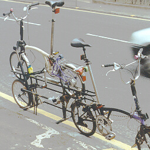
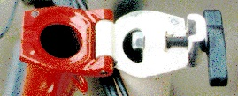
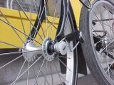
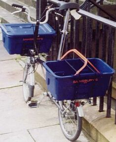
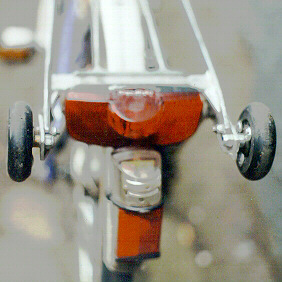
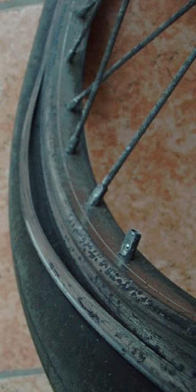

| Page last changed November 20, 2007 |
Tips, tricks & tinkering
| Contents: |
|---|
|
Contents:
Preventing problems - taking care of your Brompton
Riding issues
Folding and unfolding issues
Carrying or rolling issues
Taking a Brompton aboard motorised transport
Regional information concerning folder transport
When and how to leave your Brompton unattended
Transporting (more) luggage with a Brompton
Trailers
Bicycle computers, mirrors...
Quick repairs on the roadside
Beautifying a Brompton
Warning! There's no way back after this!
Maintenance at home
Spotlight on tyres
Spotlight on wheels (rims, spokes and hubs)
Spotlight on brakes
Spotlight on lights
Spotlight on the seatpost and saddle
Spotlight on handlebars
Spotlight on the (hub) gears
Spotlight on the rear sprocket
Spotlight on the chain
Spotlight on the front chainring
Spotlight on the bottom bracket
Spotlight on pedals
Genetically Modified Bromptons
|
Preventing problems - taking care of your Brompton
When you just purchased a (used) Brompton
Tips, tricks & tinkering - A little modification I made to keep water out of the brake cables
Retension spokes
if you are not a lightweight person, to prevent Tips, tricks & tinkering - Broken spokes
- Phil Gough:
I have now had the rear wheel replaced (using the Sturmey Archer steel
hub with brass washers again) because the wheel had become so sloppy
that the spoke holes in the original hub had become
ovalised and rendered the it useless. That was my
lesson learned, that spoke tension should be part of
regular checking routine.
Toss out abbrasive brake blocks
Unless you're planning to regularly perform Tips, tricks & tinkering - Basic brake care,
read about Tips, tricks & tinkering - Alternative brake blocks.
Grease
- Jonathan Brickley, Feb 2000:
I also found when servicing the bike that my dragging brakes were
caused by a complete absence of grease on the caliper pivots.....it's well
worth dismantling and greasing from new!!
Regular checks
Tips, tricks & tinkering - Adjusting Sturmey Archer hub gears
Basic brake care
Larry Chinn - The Freewheel, Sep 1999:
If you look at your rims, you will see bits of aluminum looking like tiny
bits of glass impeded in the pad. File them down until they look clean.
Sandpaper your rims similarly removing all remnants of dirt and rubber.
You need be much more vigilant about clean rims and pads on a bike with
fenders
Also quality of the pad and rim make a big difference much like tires and
anything else on a bike. Despite the fact I have Shimano XTR V-brakes and
Mavic MA-2 rims on my 700 cm hybrid, I sandpaper the rims and file
the pads to prevent squealing and improve braking, especially in the rain.
- If (like me) you're too lazy to do this,
get some softer brake blocks (Tips, tricks & tinkering - Alternative brake blocks).
- Or do it less often? Asked how he'd taken the B over 2,000 mi in a long trek he did some
years back, Channell Wasson reports:
I have had no problems with the
Brompton brake blocks. Keep the rims clean (steel wool is useful) and sand
any glaze off the brake blocks. I do this occasionaly.
Infrequent inspections (but do it sometimes!)
Replace the brake cables
The pre-March 2000 brakes with pear shaped cable ends break easily (Tips, tricks & tinkering - Brake cables)
Don't risk it!
Check the handlebars
Before they break (Tips, tricks & tinkering - Broken handlebars)
- Custfold, Aug 1997:
The point about inspection cannot be stressed (sorry no
pun intended) enough. The failure of early B bars is preceded by a very
noticable crack line -usually along the neutral axis of the bend, for around
3-6 months before it fails.
The top of a loaded beam is in compression, the bottom is in tension (and
vice versa for cantilevers). As you approach the centre of the beam they
cancel each other out until at the neutral axis the result is zero, ie
neither tension nor compression. This is the reason why rolled steel beams
are "I" (capital i) shaped, because you need the most material at the top
and bottom where the stresses are highest. And why if you're putting holes
in timber floor joists to run cables, pipes etc, you should always drill
through the centre and not notch the top or bottom.
There's no reason why bars should fail at the 'neutral axis'. I suspect
this is a mis-use of the term because obviously you would expect failure
where the stresses are highest. Failure is caused by the torsional stress
set up in the horizontal part of the bars when you push or pull against the
handles, which is highest on the surface of the bar and zero at the centre
- Custfold, Aug 1997:
Oops I made a wee assumption, which may not hold absolutely true.
The line appears on the neutral axis of the bend where the alloy
handlebar tube has neither been stretched or compressed, it was a crack,
as the failure of the bars focussed onto it from upper & lower faces
at the clamp. Now in use it may be that the 'neutral axis' of the bend
may focus stresses, because the tube is deformed from a true radius
to have thicker walls, and larger diameter in that plane
and not be a neutral axis of the whole unit under load.
Stress modelling program anyone?
Check the frame clamps
- Custfold:
Did spot an aesthetically displeasing Brompton front main frame clamp, on one
machine - possibly a mis matching of assemblies/tolerances, but the 2 halves
did not meet evenly in the clamp - possibly damaged pivot pin, or mis drilled
holes - and suggested the owner referred back to check this was not a damaged
or defective finish bike, which had got out. Do however check the clamp
plates occasionally for damage if the bike is intensively used. One of my
earliest machine's plates (1989) started to show signs of the alloy clamp
cracking, and tightening right to the frame (no gap). These pieces are
crucial to keeping the frame stresses evenly distributed (the bike can be
ridden with them loose but it is (sic) not recommended and very noticable in
the ride quality). Later issue clamps are not anodised - could this reduce
the potential skin effect of the harder Al2O3 ?
Such a series of annual checks and visual awareness is just the same as one
would do for the UK motor vehicle annual test after the vehicle reaches 3
years old, and would include examining highly stressed points at frame
'junctions' and rear pivot for deformity, and large areas lifting paint (a
previously noted indicator of a crack or movement of the metal below). Brake
cables should be examined, as should rim wear etc - above normal brake checks
and spoke tightness. Over a long period wear will also occur in the rear
pivot pin and bearings, but this does tend to be relatively minor - perhaps
dismantling at 4-6 years for a check on a heavily used machine might reveal a
need for renewal.
- Peter Amey, Aug 1997:
No sign of a crack in my T5 handlebars (touch wood) but I did get two
lovely, propagating fatigue cracks in one of the aluminium frame clamps
after about 3000 miles of hard use. These are worth checking - the main
frame tube folding in half at speed would make even handlebar failure look
tame!
- David Henshaw, Aug 97:
On the subject of fatigue failure, someone mentioned the hinge clamp
plates. It's worth inspecting these on older machines, as they do
eventually develop cracks, but I have not heard of a catastrophic
failure. However, Dave Holladay has broken just about everything else on
a Brompton, so I'm sure he can correct me on that. All alloy parts that
'work' should be replaced after high mileage - I replaced my plates at
about 8,000 miles, still crack-free, but a bit the worse for wear.
- Custfold, Aug 1997:
Again I can only point out that looking at the clamp plate when you tighten
it gives a clue (a crack in the corner) well before failure, and the other
clue is that the clamp will 'bottom' onto the hinge plates, which will then
be slack, and only a completely insensitive rider will not notice the hairy
handling. This is akin to not tightening the main frame clamp before riding
off (do not try this at home children). There are 2 types of plate - shiny
(new) and satin anodised (old) IIRC.
I have changed 1 main frame clamp plate in 7.5 years, during which
I've broken 2 main frames, and front sections.
NB you can tighten the clamps whilst riding should you forget
this minor detail, it doesn't do the hinge plates much good though :-(
- Custfold, Jun 1999:
My second clamp this year has been changed - split half way through and the
front kept moving when braked hard - check those clamps as a regular detail
you heavy riders.
Check for frame cracks
- David Hansen, Jun 1999:
[...] a crack between the
weld and tube in front of the hinge. The crack was around
about half the circumference of the weld. Presumably the ride
had aggrevated a crack that was spreading slowly.
- Custfold, Jun 1999:
Score on this failure with Holladay Bromptons - 4 units - now avoided by
sweating on an outer sleeve - major stress raiser in 2 points - abrupt change
of section & material in joint from tube to hinge casting, and HAZ for that
little loop that hooks the front brake cable away under the frame.
Watch also for a smile under the joint from main tube to y branch for b/b -
early frames had less meat to form the joint and a number parted - the
failures are usually noticed early by bike crabbing along road out of track,
and pedals hitting ground on corners (fixed wheel freaks will appreciate that
whatever one rides one keeps pedalling out of habit)
Check for loose pivot bolts
They are threadlocked, but can work loose under heavy use.
If they are, hurry to the dealer or carefully do the reverse of Tips, tricks & tinkering - Removing the rear triangle.
Check the front carrier block
Tips, tricks & tinkering - Front bag jumping off: front carrier block maintenance
Check suspenion block pretension
Tips, tricks & tinkering - Creaking
Check rim thickness
before you suffer from Tips, tricks & tinkering - Rims worn out
Check for handlebar cracks
before you suffer from Tips, tricks & tinkering - Broken handlebars
Grease the front hub and tighten its cones
Tips, tricks & tinkering - Loose/worn front hub
Riding issues
Problems covered elsewhere:
How can I go faster?
To improve transmission efficiency, from muscle to movement:
Rolling resistance tests
Stein Somers, May 1998:
With a fresh pair of primo's (mail-ordered from and then taken back to
England...) I cycled around until I found paradise: a low traffic,
wind shielded stretch of smooth tarmac descending steeply and then
rising gently, with well spaced road markings starting at the perfect
place. One problem was I didn't have a pressure gauge... Anyway I
let myself roll down and up again without peddling and counted the
road markings, for different bike configurations. The results are
in the table below the load of text I will now produce.
While establishing the accuracy of the test, as well as a measure for
the 90psi still left in my rear Raleigh Record, a puncture crossed
my way... down to the 70psi my compact pump can deliver, at least
given enough human power.
First test: the best coasting gear of my five speed. Corresponding
to the sound (and feel, I used to wonder?), I found 2nd gear is best,
4th worst and the others lie somewhere in between. Sometimes 3th gear
is as silent and as smooth as 2nd, sometimes it seems something inside
sticks and 3rd makes more noise and the bike doesn't roll as far.
All the same, I conclude that the circle around the 2 on the five
speed gear controller means not only "adjust the rod in this gear"
but also "0th gear" for peddleless cruising.
Second test: I exchanged the rear Raleigh for a Primo, and...
my goodness, it clearly slowed me down! In retrospect the difference
wasn't that great and I'm sure my arms didn't quite push up the psi
in the Primo as they did in the punctured Raleigh.
I then set my hopes on the front tyre. This was still a Raleigh
set a low pressure because lately I had been riding through the
cobblestone infested centre of Ghent. What a relief when this
proved to be the place where a Primo scored! Particularly if
you inflate them at a moderate pressure.
Just in time the idea occurred to relate these results to other topics
of riding efficiency. Here we go. The Gain/Loss numbers reflect the
extra distance I could roll compared to the reference. This is
definitely not a linear measure!
Reference = Standard T5 = Raleigh Records at (very roughly!) 60psi,
coasting in 2nd gear, upright riding on the standard best folding
handlebar position, pannier clipped in the front luggage block,
95kg total load, tall 1m96 rider. Anything else? I carried the same
amount and shape of load on all tests and repeated every roll
several times (I even postponed organic waist dumping for the sake of
science! I did sweat under the midday sun though...).
| Change | Gain/Loss (accuracy: +/- 0.5)
|
|---|
| Rear 40psi Primo | -1
|
| Rear 60psi Primo | 0
|
| Deflate front Raleigh to 40psi | -2
|
| Front 40psi Primo | +1
|
| Front 60psi Primo | +2
|
| Handlebars raised 15cm via curved bar ends
(very upright and comfy) | -1
|
| Lie down on handlebars
(very aero and uncomfy) | +5
|
| Lift legs and align on main tube
(scooter like, still comfy) | +1
|
| Tie pannier to rack | +1
|
| Coast in 4th gear instead of 2nd | -1
|
| Engage Nordlight dynamo | -1
|
- A2B, May 98:
Here in Castle Cary, we've been using the same test hill for some time.
We've found that if you put the same rider on the same bike, and sit him
in the same position under the same weather conditions, the results are
pretty accurate.
Measuring average speed in MPH from a standing start, we found that
Swallow tyres performed best at 70psi, hitting 13mph, a well-worn set of
Raleigh Records performed best at 60psi, achieving 13.6mph, and the
Primos gave the best results, managing almost 14mph at just 50psi.
We went on to fine tune the pressures and found a performance peak at
about 14.3mph with 65psi in the rear tyre and 45psi in the front.
1.3mph best to worst might not sound much, but it's a 10% performance
boost for very little outlay.
Obviously, the weight of the rider has an effect, but we went on to
produce a recommended pressure v rider weight chart, which was printed in
Folder 18. There's no doubt that Primos give a clear advantage, but you
need to set the pressures with care.
Suspension versus efficieny (biopacing?)
- Stein Somers, May 2000:
A Brompton user recently aired concerns about the suspension block
consuming part of his muscular output. Something referred to as
biopacing, although an internet search suggests this term was really
invented for oval chainrings. Anyway, everyone can see the suspension
block squeezed in and out at each pedal stroke; when you try to do the
same off the bike, the effort seems huge.
So, I wondered while stumping up a steep hill the other day, how much is
that squeaky little devil costing me? When riding at speed with a
standard 6W generator on, it doesn't take long for the generator to
start feeling warm. The 6W is the power sent over to the bulbs; more
than twice that power is taken from the wheel. Roughly some 10W is
wasted heating up the generator.
The suspension block doesn't seem to become warm at all. Of course
rubber doesn't pronounces its temperature as good as metal, but if I've
been wasting a sizable amount of energy, shouldn't I feel *something*?
I gather from literature that during this effort, leaving me out of
breath, I might be hammering 400 watts through that poor chain. And it
seems the suspension block accounts for at most a mere percent of that?
So why bother...
- Matt Hayworth, May 2000:
Yea, it seems like the point of shock absorption and springy seats is partly
to cut down on rider fatigue which results in part from being jarred
unnecessarily. So the shock absorber probably does more good than harm.
- David Dodson, May 2000:
Pure springs do not absorb any energy (but absorb shocks...).
So-called 'shock absorbers' (in the conventional use of this term)
are energy absorbers used to attenuate oscillations in springy
position-control systems such as transport suspension systems.
Energy-wise they convert motive power (only) to heat. A springy
suspension element may be included in the shock aborber unit
(as in some car shock absorbers with an outer coil spring element).
Rubber shock absorbers are (usually) in effect mainly springs,
but not pure springs -- the rubber's hysteresis absorbs energy.
But if they don't heat up much they are not absorbing much energy.
But if you have anything at all like a car shock absorber -
typically an oil filled cylinder with a piston with holes in
it that the oil is forced through - then we are probably in
the realms of much greater energy absorbtion than with rubber.
How can I improve comfort?
Discussed elsewhere:
Changing the Brompton's gearing set-up
Three things you might desire:
- shift the gearing range to a more suitable level (trade in the highest gears for very low ones or vice versa):
- extend the gearing range (add very low or very high gears):
- decrease the gearing steps (add gears in between the existing range):
For opinions on what is a suitable range, see The first steps to folding wisdom - Reduced gearing.
What are gear inches?
Peter Amey, Jul 1998:
Gear inches are the diameter in inches of wheel that would roll as far in one
revolution as the bike would travel for one turn of the pedals in a gear
of the same number of inches. Imagine an "ordinary" (or penny-farthing)
bike; a 90" gear is the same as riding one with a 90" front wheel.
Metric gears are usually in terms of the actual distance travelled for
one turn of the pedals. i.e.
pi * GearInInches * ConversionFromInchesToMeters
Ruud van Tol, Jul 1998:
In other words: it's the (imaginary) size of the wheel when there wouldn't
be any gear.
Is it normal for the hub gears to go "tick-tick-tick" when you pedal forward?
- Stein Somers, Sep 1997:
Absolutely, though only in middle (neutral) gear and above.
- Anthony Cartmell, Sep 1997:
The ticking is coming from a free-wheel ratchet in the hub gear. The
hub has a couple of epicyclic gear sets, with dog clutches and ratchets
to change gears. If you change gear while free-wheeling you can hear
the different ratchets buzzing at different speeds.
- Phil Gough, Sep 1997:
My older model 5-speed ticks at twice the rate as it has two sets of pawls.
My heels hit those darn castors!
Custfold:
[The rear castors, at the front of the rear rack, are]
odd shaped rollers that used to catch my heels (usually its women who
have the problem as they cycle with feet closer in).
- David Hansen, Sep 1997:
This was a problem for this male, until I unscrewed the Brompton
wheels, turned them round and screwed them back in. As a result it is
hard to catch my shoes, as they slide down the slope of the coned
part of the wheel.
This does make the folded bike slightly less stable, but not to any
noticeable extent.
- mike, Oct 1998:
I have big feet and did a lot
of damage to my ankles by knocking them on the castors at the front end of
the rack in the first couple of weeks -
I now have an unstable bromton when folded because I removed the front
(large castors) and I have not made my ankles bleed since.
- Mr A Follis, Oct 1998:
My problem with the castor wheels is that they snag the
turn-ups on my good trousers. I've ripped one pair. Then again maybe
turn-ups are out of fashion and Brompton are just doing me a favour.
- Another cure: Tips, tricks & tinkering - Improving the castors
You can experience the same problem with luggage: Tips, tricks & tinkering - Heal hindrance.
Waggly rear ends
Roland Elsenberg, Aug 1998:
[...] I found it less precise in steering.
This is probably due to a worn hinge between the main
frame and the rear triangle.
- Rob Cope, Aug 1998:
Roland & anyone else with waggly rear ends (Brompton, that is),
You need to get your dealer/agent to have a look ASAP. The main bearing
between frame & rear triangle is worn or loose: unlikely to break
(substantial piece of silver steel) but it does you & the bike no good to
keep using it. Whatever you do, do *not* just tighten up end screws with an
allen key: they are Loctited in place & screwing/ unscrewing breaks the seal
& makes it likely to loosen up more.
When this happened to me last year, I ended up back at the factory (live 2
km away lucky me) for a new bearing sleeve: presume your dealer can sort it
out locally.
All done under guarantee: Brompton stand by their products.
- David Henshaw - A to B Magazine, Aug 98:
Several very important points here.
ONE Never, ever unscrew the allen-head screws holding the rear triangle
to the frame... honestly, there is nothing in there worth looking at. The
screws are Locktighted in place at a high preset torque. If you break the
Locktight, the screws WILL certainly unfasten in use and the rear
triangle could come adrift.
TWO Because the bearings need to be very accurately reamed to size with a
custom-made reaming tool, only Brompton can fit them. So the assembly is
neither user or dealer serviceable at present.
THREE As enthusiastic Brompton users you can do two things: Keep an eye
on the screws - any movement may mean one has come loose. If the bike is
more than a year or so old, run oil into the bearings on a regular basis.
If you commute every day in all weathers, that should really be once a
week.
FOUR Movement in the bearing is not a problem. My six year old bike has
quite a bit of play and I barely notice it on the road. Once the rubber
suspension is compressed, the triangle is restrained from moving sideways
too much.
- Phil Gough, Mar 1999:
Owners in the London area of ageing and/or high mileage Bromptons which have developed slack rear fork pivots
may be interested that Tim Whiity of Cyclecare (30 Blythe Road, London W14 0HA)
has got the tool to do this job.
He has just rejuvenated my 1988 T5 which no longer shimmies about when carrying a load on the back.
Cost was just under £40, but I had partially dismantled the bike before I took it in (to fix another problem).
You get new bushes, pivot, nylon washers and Allen-head machine screws.
- Custfold, Mar 1999:
I have - through breaking about 6 rear frames - had the rear pivot spindle out
on many occasions.
A few comments -
- the spindle does wear noticably, and on one quadrant more than the other 3
I fit new spindles if I notice wear.
- the ptfe washers collapse - I now use brass ones
- the system for the machine screws is not brilliant - I have tried star
washers under the coutersink faces, and am trying to locate screws with better
quality drive sockets which can be impact driven to tighten them and do away
with the unreliable locktite system. A tip is that if your chainring is
larger you cut a nick to allow the bolt to be tightened without having to take
the transmission apart.
- David Edge, Apr 1999:
AFAIK the advice against DIY is the need to precision ream the new bushes
once you've put them in.
- Custfold, Mar 2000:
It may be worth checking first that the PTFE washers that take side thrust
are not kaput.
I've replaced mine with brass washers and also looked at impact drive CSK
machine screws as both these are sources of slop in rear end usually well
before the pivot bush fails - but they do wear, as pins removed but destroyed
when changing rear frames have shown.
- If you want to DIY anyway: Tips, tricks & tinkering - Removing the rear triangle.
Adjusting suspension
If the suspension is too weak for your weight...
-
Try the fully adjustable version suggested by the designer - aka a
standard Brompton block with a jubilee clip (approx 50p) restraining
its, err, fuller figure from bulging too much.
[ A jubilee clip or hose clamp (US) is ] a circular band tightened by
a screw, often used to hold hosepipes on to water taps. Ironmongers
have them. Result: fully adjustable suspension!
Rear mudguard too short (the mud striped back syndrom)
Loose frame clamp
Custfold, May 1998:
I've been experiencing a loose main frame clamp with annoying regularity
lately. This ocures even when I'm positive that it was fully tight at the
start of my ride.
It may be that the clamp plate has stretched - I'm checking with Brompton
for a service gauge measurement to determine when a plate should be changed
(e.g. the gap between clamp seat and frame plates).
It may be movement in the frame fretting at the joint.
The indicator when riding is the distinctly unnerving floppiness
in front end response when braking hard.
- Ludger Offerhaus, May 1998:
I'm surprised to hear you get that, My clamps tend to get stuck more and
more, taking increasing force to unscrew them.
- Custfold, Feb 1999:
If the clamp face bottoms out on the hinge - it has spread out and shoul be
changed (a set of spark plug feelers helps here). The clue is usually
cracking along the inside faces.
Loose chainguard
- Willi Mindak, Feb 99:
The chainwheel disk (chainguard) is attached at 5 points to holes in the chainwheel.
When starting at a traffic light I accidently kicked 2 of these 5 fixing points out of their holes in the chainwheel.
Trying to get them into their holes again prooved difficult. After some banging and cursing I examined the chainguard closer.
Turns out that the chainguard has little plugs fitted where it is inserted into the chainwheel.
You push the plugs back to the outside, insert the chainguards plastic hooks into the holes in the chainwheel,
and push the plugs flush with the rest of the chainguard. Job done.
When you try to push the chainguard back on without moving the plugs first you are more than likely to damage the chainguard hooks,
and the thing will come off again. No earth- shattering revelation, but I thought I'd let you know.
Undesirable sounds
This is not the most common complaint, but a frustrating one.
It seems all sounds can be supressed, except those coming for the hub's internal gears.
Some report they rattle, some hear no more then the normal ticking in high gears.
- Ian Charles, Aug 2000:
Likewise, we haven't experienced any significant noise on either of our two
Bromptons in more than ten years (no idea of mileage), certainly no worse
than with our various conventional bikes.
Don't want to spoil this fascinating string, but surely a product which is
at least in part hand built will vary; the type of use it's put to will
affect likelihood of rattles, squeaks etc developing; and - this is
something which has been alluded to before, I think - what about the weight
of the rider and possible load?
- Mike, Aug 2000:
Well I'm 13 and a half stone and I've had an additional 3 stone of shopping
on it and no odd rattles.
Localising the nosiy culprit
- John R. Bolt, Oct 1999:
Don't be too sure that the noise is coming from the bottom bracket. I had a
similar situation a year ago, and went slightly nuts trying to figure out
the source of the noise. I, too, was pretty sure it was from the area of
the bottom bracket, and figured it was probably one of the pedals. After a
lot of experimentation, I finally established that the source was actually
the front wheel. The bearings had apparently not been adequately lubricated
in the first place, and were now noisy, but with a sound that I would not
have expected.
So it can be quite difficult to localize a noise, and the "obvious" source
may not be the real offender.
Clanking
Nico van Beek, Aug 2000:
I bought, some one and a half year ago a T3. Great fun. Everybody wanted
folding demo's.
However, after some time a vague clanking started in the neighbourhood
of the back-wheel.
Couldn't find exactly where. I performed greasing and tightening of
screws and nuts. Didn't solve the problem.
So: back to the dealer, who checked the bike.
"Did you solve my problem"? No, that appeared to be not really possible.
Had to do with something within the nave of the back-wheel. A common
Brompton problem. Dismantling the nave would not give any solution.
Not very satisfactory! The rattling became worse (and in Holland we do
not have tarmac everywhere as in California).
So I wrote to the factory. Answer came from the main distributor in
Holland by telephone. A nice chat about grease, oil, tirepressure etc.
However it may be: a well known problem! Had to do with the general
construction: only one hinge between back and front parts and therefor
no possibility to spread the rumour over the total frame.
Again, not satisfactory. I'm now in the stage to advise others not to
buy Brompton, unless they can cope with a lot of, now very noisy
rattling. I took the nave completely apart, greased, oiled, well did
everything, but the problem still exists.
Freewheeling on, let's say, rough surfaces,
is the main problem. Has nothing to do with little wheels but with the
inside of the SA nave.
- Stuart Quick, Aug 2000:
I had this on my T5 for a while. Everytime I hit a bump
there was an almighty 'clang' sound. I originally thought that
it was the rear jockey wheels...however, I found out that the
back wheel was very slighly loose. i.e. the compression nut
on the rear bearings was not done up enough. I found this
out by turning the bike upside down and gripping the wheel,
and being able to rock it side to side very slightly. I
took the wheel off and did up the compression nut just
enough to stop the play - but no more than that as the
bearings will wear out prematurely if too tight.
- Jonathan Brickley, Aug 2000:
i have a similar rattle on my 500 mile brompton L5...I assume it is the
little plastic wheels rotating and rattling(that's what it sounds
like)...I keep forgetting to grease them to see if this damps it
out....May try it now as you have reminded me.Will advise if it does the
trick after riding to work tomorrow...
Just been and greased the wheels...they are swines to undo as Brompton
have used loctite on them....needed a foot long flat screwdriver with
self grip wrench clamped to the shaft of the screwdriver, before they
were beaten!Need to rest the bike on a solid surface and really lean on
the screwdriver handle to stop it slipping.On a quick roadtest, bike is
much quieter(you don't realise how noisy it is until the rattle has
gone.....)
The little wheel on the back of the mudguard is riveted together, may be
worth drilling out so it can be greased,but I sprayed some gooey
motorcycle chain lube on it ...seems to have done the trick.See if
that's the problem on your bike.....
ps don't forget to reloctite the screws
- Nico van Beek, Aug 2000:
Who knows! Curious. But I don't think that's the problem. It's a
metallic rattle.
- Roland Elsenberg, Aug 2000:
some weeks ago I took my Sprinter 5 apart. I found that a tiny spring from a
paw had come loose. After reassembly the hub was much quieter, but has
started to rattle again. I don't know if the rattle is the same in all gears
or if it depends on the gear I drive. I confess I forget to sort that out
every time I enjoy a ride.
On my Gazelle with SA 3-speed a noise appeared at 10000 km. In an
advertisement by Sachs I found a sentence like: "some hubs are reported to
have lasted for 10000 km". Surely 10000 km is nothing Sturmey-Archer would
advertise about. The Gazelle is now well above 30000 with the hub still
going. It even gets quieter, or perhaps my ears worse :)
- Mindak Dietmar, Aug 2000:
Yes, the noise is a problem on my bike as well. About a year ago there
was a thread in this list about it. I went as far as removing everything
on the rear triangle and came to conclude that it originates at the hub.
I promised myself to take the hub apart but haven't come round to it
yet. One of the list members described how he had ruled out the coasters
by riding with his feet on the rear carrier touching the coasters. Don't
try this at home was his sound advice.
I compared the noise to empty cans on a string being pulled behing the
bike. Very entertaining on cobblestones. I wouldn`t go as far as
advising people against buying a Brompton, but it is definately much
less enjoiable on poor surfaces. Now that the brake issue is solved we
might get to the bottom of this. Has anybody experiene with other hubs
on the Brompton? I know the rear triangle is too narrow to take other
hubs unmodifieed, but have heard of several attempts to use the Sachs 3
and 5 Speed and even the Rohloff. Do they clank as well? And what makes
that clanking noise in the Sturmey-Archer? Any ideas?
- Stein Somers, Aug 2000:
Boy, I'm happy my T5's are quiet. I'm very sensitive to noise,
sometimes even the ticking in higher gears gets on my nerves.
The Sachs 7 speed on my recumbent however rattles annoyingly, although I
wouldn't compare it to pulling empty cans. It also has some gear
changing problems. The Sachs 5 on my cumbersome are quiet until they
implode (which took four months for the first two).
I read on the Utopia Forum that the Rohloff 14 speed makes a distinct
grinding noise in the lowest gears. The Shimano hubs are reported to
exhibit not even ticking, but I know someone who complained that the
roller brake rattled like hell. I rode one recently and it was very
quiet and braking power smoothly controllable. Alas, maximum braking
power couldn't match an original Saccon brake on a Brompton in the rain.
- mark james, Aug 2000:
I have the same loud noise mostly when I freewheel (5 speed 10/96).
Not little wheels. My new mk III is fine after approx 1000k.
- mark james, Aug 2000:
That rattling around the rear wheel has now struck my new Mark 3 whilst
freewheeling and its starting to rattle after around 6-700 miles. It is
irritating on a less than smooth surface, my older bike is very noisy and
rattles a little even when pedalling. Something must be loose as my front
cones need substantial tightening too.
Why should some rattle and others not? Haven't tried to tighten anything
yet, keep you posted
Squeaking
Stein Somers:
My new T5's has been taken over by a mouse. It hides inside the
suspension block and produces noises that make the Brompton sound
like a rusty old bike.
- Anthony Cartmell:
A friend's T5 and mine both did this when they were new. It sounds just
like the rubber block, but the squeak is in fact coming from the
suspension hinge pin. Try putting some light penetrating oil on the
plastic spacers at each end of the hinge, and fold/unfold the bike
several times. This eventually fixed my one (I also took the rubber
block to pieces, greased it etc. all to no avail). I toyed with the
idea of adding a grease nipple, but this might mess up the bearing which
I think is oil-impregnated.
- Channell Wasson:
WD40 took squeek out for me--it never came back
- Peter Amey:
I have had this occasionally and have always been able to clear it just by
rotating the rubber block a quarter turn. No idea why this works or what
causes the noise in the first place :-)
- Phil Gough, Sep 1997:
Also check that it's not slack spokes causing the rim to move in relation
to the hub.
- Custfold, Sep 1997:
As well as the pivot, heavier riders can break up the system used to fix the
suspension rubber. This will cause the bolt to 'saw' a neat slot down from
its original position through the plate on the rear frame, and at the same
time slim down the bolt by wearing away the thread, and then the rest of it.
This will give a squeaking noise.
I have made a system which rigidly fixes the rubber to the frame,
and has a 'floating' metal bearer pad which rests on the main frame
(and does not crack up with heavy loads).
I'm not yet happy enough to say it's a sellable item,
and may try out some alternative rubber bushes.
It has made an immense improvement to my rear end.
- David Cox, Jun 1999:
In hot weather the rear suspension elastomer squeaks on mine but that's
after years of use. I little grease on the bold cures it but usually the
weather changes before I get round to doing it. Also check that the
mudguard or the stay is not rubbing on the tyre.
Creaking
- Andrew Holland, Dec 1998:
I had creaking noise on my Brompton which took some time to trace [...]
to the rear suspension block (Shock absorber)
The bolt was rubbing with the metal of the rear frame. The metal to
metal contact had cut a slot in the rear frame. The reason for the
failure appeared to be a stepped bush that the shock absorber bolt
passes through.
The rear frame is about UKP100 and the washer is probable a few pence
but has to be bought as part of the rear shock absober UKP 8.
When I got the part as with brompton parts there was some fitting
instructions that told you how to pre compress the shock absorber and
thus prevent the bush jumping out of position.
It would appear that I am not the only one to have had this failure. It
would be helpful if this adjustment were in the owners manual.
I have spen the last 12 months with a slot in the rear frame but with
the rear shock absorber pre compressed have had no futher trouble.
- Paul Weeks, Oct 1999:
Bucket of water over the rubber suspension thingy cured mine...
- Larry Chinn - The Freewheel, Oct 1999:
The creaking is probably caused by a loose crank arm.
If the sound remains after tightening the bolt, then it could be the bottom bracket.
Chains do stretch after a while especially after the kind of riding you described.
A loose bottom bracket might also cause creaking.
It's a good idea to overhaul the bottom bracket about once a year,
especially if you ride during the winter in the rain.
A stretched chain also wears down the teeth on your rear cog and more so the chain ring,
since it's aluminium.
You can tell if you've got a stretched chain if you can see space between the link and teeth
when you pull the chain tight.
Also the teeth on the chain ring will be sharp and pointed.
If your chain is really stretched, it will skip, especially when pedaling hard.
In any case, if you see any of these symptons, you need to replace the chain ring
along with the chain.
- Deborah Eacock, Oct 1999:
I suggest that you check your cranks. Disconnect the chain from the front
chain-ring and check for wobble or looseness in your cranks. Also, check
the rubber block for rear suspension. Also, tighten the screws that hold
down the rear rack.
- Stein Somers, Oct 1999:
Whenever it happens to me, I get off, give a twist to the suspension
block and gone is the creaking.
- Graeme Smith, Oct 1999:
I experienced a creaking sound which I suspected was coming from the
bottom bracket or folding pedal. Shortly after this I changed the pedals
for SPD pedals and the creaking went away - Could it be your pedals ?
- Mindak, Oct 1999:
Me too. The creaking started after about a year with approx. 5 miles/day. I
suspected loose cranks, and as the proud owner of a torque wrench tightend
them up to the right torque. Even though they were quite loose it didn't
improve things. I tried a second right hand pedal from another bike and the
creaking disappeared.
- Bob Gelman, Oct 1999:
I've had a squeak in my seat post, where it attached to my seat, on my Birdy.
It drove me nuts for a while; very difficult to "listen" while you're riding.
I actually thought it came from the FRONT of the bike for quite a while. I
finally asked someone jogging if they would allow me to ride along side them
so they could "listen" and tell me what part of the bike it was coming from.
This was really deceptive since there was no torsional movement when you
weren't pedaling and the squeak stopped when you coasted. I suspected
something in the bottom bracket, chain area for a long time. Spokes rubbing
together can be especially tricky. One just has to be patient with these
things and track them down.
- Nico J. de Boer, Oct 1999:
One more unexpected source of creaks while pedaling can be the frame
hinge: after a droplet of oil my creaks disappeared.
- David Edge, Oct 1999:
In my case, tighten the bottom
bracket in its housing. It does need that fancy FAG tool that's also used
for low-end Campag BBs. Not much you can do to overhaul it. It's one part
of the bike that has given me little trouble.
- Paul Brady, Oct 1999:
Creaks are usually from the crank arm losing up a little or perhaps the seat
post. You can remove the crank and put a little bike grease on there and
tighten it back up. That usually takes care of it.
- Len Rubin, Nov 1999:
Whoa! Hold on there! Bad advice alarm! Don't grease the tapers of bottom
bracket spindles or crank arms! Clean them, check (and retighten the bolts
if necessary) on a regular basis, but do not grease them, as they are MEANT
to "seize"! Grease will perpetuate loosening and wear, as the softer
aluminum will keep traveling up the lubricated slope of the harder steel
crank taper. If you ride throughout the winter, more frequent maintenance
may be necessary to prevent galvanic corrosion, but greasing them is a bad
idea.
- Robert Payne, Nov 1999:
It ended up being a lot more simple to fix than I
thought. I ended up rotating the rubber suspension
block and puting oil on the folding points, cranks,
and pedals. No creaking anymore.
Cracking
Custfold:
The other day I noted that the paint at the n/s (left) joint between the
chainstay and pivot hinge plate had lifted. My concern was justified, when
the 'crack' noises which had been up to then untraceable revealed their
source when the chainstay split neatly around the circumference at the high
stress point where the thin walled tube is brazed to the thicker pivot plate -
modern Bromptons do try to spread this load by having a slightly different
design to the first machines produced, which had the benefit and weight of
the substantial integrated carrier and reaer frame. With the tie between the
rear triangle and the main frame, the bike remained rideable with care to
limp back to base, albeit with the key clue to any incident like this, the
unnerving crab wise travel of the main frame when compared to the road, as
one looks down - fi your bike starts doing this look carefully at the frame
for any damage..
Note that with the rear frame securely lashed to the main frame seat tube, I
have 'ridden' a bike with both chain stays fractured after a particularly
severe bout of damage. The n/s stay rarely goes in normal use, as the o/s is
the one subjected to cyclic compression & tension loads, but the attachment
of a trailer will obviously affect this - especially if the load is all going
through the n/s of the triangle to the rest of the frame.
Ticking
Don't be alarmed by the normal ticking of
hub gears (Tips, tricks & tinkering - Is it normal for the hub gears to go "tick-tick-tick" when you pedal forward?).
- John R. Bolt, Sep 1997:
I had the same annoying
noise coming from my T5, and I worked harder than now seems necessary to
isolate the source (lubricating frame clamps, adjusting bottom bracket,
etc.). In my case, it turned out to be coming from the right (non-folding)
pedal. This cheapie pedal does not seem to be adjustable, so I replaced it
with the right pedal from an old Bickerton, which is better quality anyway.
Recently, tho, a quieter "tick-tick-tick" has been coming back. I suppose
the new pedal is now giving me a problem--but at least this pedal is
adjustable, so one of these days I will have a look at it.
- David Henshaw, Sep 97:
Easy solution to this one.
Drill a small hole in the plastic end-cap and inject oil
every couple of months. The pedal will stop ticking and last almost
indefinitely. Try to avoid fitting better quality pedals - they're all
heavier than the nice basic items on the Brompton.
Clicking
David Goldfarb, Jun 1999:
My Brompton seems to have developed a click that occurs when pedaling with
some resistance (i.e., no click when coasting, so it's not from the
wheels), at a rate of one click per crank in any gear (so it's probably
not the gears). Anyone else have this? The bike is pretty new (maybe 3
months, 400 mi. or so) for bearings to start wearing out.
- Deborah Eacock, Jun 1999:
I discovered that the click corresponded to torque on the pedals. No, it
was not in the cranks, rather a slight mis-adjustment of indicator spindle
into the hub. Check the location of the red spot in 2nd gear. Also, drop a
few drops of oil into the hub.
Screaming or scraping
Richard Lighton, Jun 1999:
At the moment my problem is a scream (not a squeal or squeak, a full
blooded traffic stopping scream) from the front brakes. I've cleaned
the (fairly new) brake pads, adjusted them, aligned them, cursed them.
They still scream, mostly in low-speed braking. The back brake with the
same pads is as silent as one would expect. Any ideas anyone?
Rattles from the rear
Norman Tulloch, Nov 1997:
On road surfaces which are less than perfect (e.g. on country roads which
are tarred but not exactly silky smooth), I get an annoying and persistent
rattle from somewhere at the back of my Brompton T5. I cannot reproduce the
problem when the bike is stationary,
I have tried tightening all the screws and so on at the rear but this has
made no difference. (I have not tampered with the rear hinge screws since
the Brompton owner's manual emphasises that these should be left alone.) At
one time I suspected that the mudguard might be vibrating against the
luggage rack. I therefore put some pieces of foam rubber between mudguard
and rack but still the rattle remained. I have wondered whether the source
of the problem might be the castors on the rear rack, but if I try riding
with my feet on the castors on the front of the reack (don't try this at
home, children), the blasted rattle is still there.
Has anyone else had a similar problem? I so, how did you cure it, or did
you just hurl the bike over a cliff, driven into an irrational rage by the
rattle?
- Stein Somers, Nov 1997:
One Dave Holladay, casually passing through Brussels today to
deliver my Custom Folder order (and meet some Euro officials along
the way), just told me they do come loose. At least when you wheigh
95 kg and tow an even heavier load!
What about the castor pair at the back? Please, before you indulge in
acrobacy, may I suggest temporarily locking them with sticky tape.
- Custfold@aol.com, Nov 1997:
Have you;
-
Taken hold of the upper section of the rear triangle and firmly holding
this with bike on its wheels, tried to rotate this around the rear pivot in
the same plane as its axis of rotation. My rear pivots regularly loosen and
there ar 2 key clues - a small discomforting change in handling which becomes
more pronounced as the condition worsens, and a wobble when folding the back
under. My opinion of important connections secured by Loctite (tm) if a
proper mechanical system is a viable option is that a design improvement is
desirable. The Brompton design however has a lot of constraints which
mitigate against the over engineered belt & braces, and I have cut a slot in
the (53/61) chainrings, to allow me to get a Allen keys into the sockets
without dismantling the crankset every time (tip here, do this so that the
other side is not covered by the l/h crank!). I have however recently
painted the bolts, with Hammerite (tm) paint and tightened them into the
paint film. I think there might be other action to develop this further but
it hasn't been a pressing issue, as I can always tighten the things as
needed. The trailer howver does knock 6 bells out of the rear end,
especially when you've got around 100Kg on the tail!
-
Have you checked the suspension system. The original one has a bolt and
guide which float in the rear frame, and will obviously be tight when you're
not sitting on the bike. As a very heavy (120+Kg with backpack) rider I soon
cut the plastic face from the unit, and then proceeded to have the fixing
bolt saw its way down through the frame, and rub itself into a waisted, and
wasted shadow of its former self. Fortuitously the hole is suitable for an
M8 bold which can be fixed to the rear frame, if the suspension rubber has
some degree of float (as on the Birdy IIRC), and I may try some Birdy rubbers
as an option one of these days.
-
Check also the folding stop plate, and SA componentry
- Norman Tulloch, Nov 1998:
[...] my T5 has exactly the symptoms that you
describe and has had them for the last year or so. Like you, I have tried
and failed to find the cause. If the rattle does suggest the hub is on the
way out, mine seems to be taking quite a while to die and otherwise works
just fine. (There's a foolishly over-confident statement!)
- Graham S Jones, Nov 1998:
Maybe it's heresay to mention another make, but hub-geared Moultons have being making rear end rattles since 1962. From the bottom bracket back, Bromptons, Moultons and AMs are very much the same. The rattles have something to do with the amplitude of vibration of small wheels on the road and idle hub gear internals - hence why it stops when you pedal.
My L5 rattles, but my 1963 Moulton Deluxe (FW S-A hub) has done so since I got it 10 years ago,
and it's still going strong.
- David Edge, Dec 1998:
This sounds to me like a misaligned chain tensioner - the chain is perhaps
running with the sideplates on the jockeys. If you can get someone to hold
the back of the bike up while you turn the pedals it will be obvious enough.
Noise from the front
Willi Mindak, Jun 99:
For a couple of weeks now my T5 has developed an irritating noise that repeats itself with every turn of the front wheel.
I suspected the wheel bearings or the cones, but when I examined them they looked o.k. to me.
The bearings showed no wear at all (at least I could see none), and the cones had just a small, uniform line of wear were the bearings are running.
This 'line of wear' is visible, but you don't feel anything when you run you finger over it.
Regreasing the front hub brought no improvement, neither did turning the wheel back to front.
The noise only appears when the bike is ridden. When the front wheel is spun without load all is quiet.
Can the noise be caused by uneven spoke tension? Any ideas?
Silencing a whiny generator
Channell Wasson, Jan 1998:
Try this
- A little oil around rotor
- Check alignment of rotor to side wall
- Super glue two o rings on rotor. ( Be sure not to get "s/glue" on
rotor shaft area)
[or get a regular dynamo cap from any (European?) bike shop]
Why is the Brompton's steering sensitive?
Riddell, Toby, Jun 2000:
Is this anything to do with the frame geometry, in particular the trail?
I have noticed that when pushing my Brompton along, holding it just by the
saddle and steering it by leaning it one way or the other, it is less
responsive than other bikes, that is say the amount of turn is small for a
given amount of lean. I think this reflects a shorter trail. And this in
turn is reflected in the fact that it's harder to balance the bike when
riding it hands free, there is less self-centering.
Does this make sense?
When researching folding bicycles I came across a report concerning a
particular model of Dahon. It had a geometry which meant that there was no
self-centering effect. A case came to court because someone was riding one
when he looked over his shoulder and took one hand off the handlebar -
because of the lack of self-centering he could not tell with one hand which
way the front wheel was pointing and it turned to 90 deg. and he was
deposited on the deck. So presumably this Dahon had no trail at all?
- Jim McLaughlin, Jun 2000:
I'm not sure what you mean by "trail", I am guessing that is what we call
"caster" in the US. Caster does affect the self steering. I believe it is
defined something like this:
Project a line down the axis of the fork to the point where it hits the
ground. The tire will hit the ground usually somewhat behind this, and the
offset is referred to as caster.
I'm not versed in the trade offs, though I believe the racing types prefer
twitchy steering (less caster?) and the masses perhaps prefer less twitchy
steering. I assume the small wheels have much to do with it. For example,
every recumbent I have seen has a small wheel in front and it is a given that
recumbents do not lend themselves to riding with no hands.
The Brompton's short wheel base might have something to do with it but I think
less so.
We need a physicist or engineer out there who can enlighten us on the
geometry. But rest assured that one quickly becomes accustomed to the
Brompton's balance, there is no special danger.
Riding with no hands is never a good idea on any bike.
- Ka Lun Tam, Jun 2000:
I have experienced that too, pushing my bike by the saddle.
I had always assumed that part of the reason I can steer from the saddle on a
regular bike was because the weight of the front wheel allowed it to
"fall" to one side, so I can lean the bike to the left and the wheel would
"Fall" left, thus turning itself to the left. With the smaller wheel
on the B, I had thought it just wasn't heavy enough.
By no means a theory with any scientific basis...
- Wei-Yuen Tan, May 2002:
Self-steer and steering sensitivity are separate qualities, but both are
related to head-tube angle. Steering sensitivity decreases as the head-tube
angle departs from vertical. Self-steer (identical to the caster effect)
increases as trail increases, where trail is the distance between a) the
point of contact between the tire and the ground, and b) the intersection of
the ground with an imaginary line passing through the centre of rotation of
fork (i.e. a line extending from the steering column). The amount of trail
is determined by the amount of fork-rake and the head-tube angle.
To say that the Brompton's steering is due to its small wheels is indirectly
true but inaccurate. Small wheels, a low headset placement and a telescopic
steering column allow for a compact folded-form but entail that the
head-tube angle must be close to vertical, hence the sensitive steering.
Riding on the sidewalk - is a Brompton a children's bike?
- Ka Lun Tam, Feb 2000:
Well, here in Ontario, you're allowed to ride on the sidewalk
so long as your wheels are under 24" in diameter, which the Brompton happens
to have.
- Peter O'Reilly, Feb 2000:
NYC ordinance permits you to ride on the sidewalk only if under age 14 *and*
the bicycle has wheels less than 26 inches in diameter.
NYC Bicycle FAQ:
http://www.ci.nyc.ny.us/html/dot/html/get_around/bike/bikesafe.html
Wobbles and top speed
- Custfold, Aug 2000:
Wobbles occur mainly as steering geometry alters to reduce the trail - with
small wheels this is more rapildy changed that with large wheels. Perhaps as
you go faster you put weight forward, and thus create what bikers over here
know as a tank slapper.
Sitting back and transferring weight rearwards will increase the trail and a
wobble can be enhance or removed - especially if you have a fairly weighty
backpack on to make weight transfer of considerable effect.
Folding and unfolding issues
Covered elsewhere:
Handlebars suddenly flipping open while folded
Doug Faunt:
The bike folds fully, and the clip fully engages, it just doesn't hold
under any kind of stress. It's pretty loose, in the best of
circumstances.
- Anthony Cartmell:
I have has several embarrassing moments when the handlebars decide to
unfold, usually hitting someone as I'm clambering aboard a train. I
have had some success with strengthening the frame clip by threading an
old spoke through its holes and twisting the ends together. The spoke
wire makes a round-ish O shape which has plenty of spring in it. I
reckon a re-design of the clip would be a good idea, as it relies on a
very narrow part of the plastic which wears quickly.
- Mark James:
If you use bar ends (Tips, tricks & tinkering - Bar ends) that solves the folding problem
- Dave Holladay, Oct 1997:
There is also a neat little transporting the bike trick which avoids the
flapping 'bars problem, I found out when folding the black 1(2 with foot &
finger) speed machine. A pannier shock cord loop fitted under the clip for
the gear changer, with the Custom Folder swing under stop strap,
will neatly link together as a positive closure.
- David Hansen, Jan 1998:
If you look at where the handlebars clip into the folded bike you
will see a U shaped bit of plastic on the bike, and a round shaped
bit of plastic on the handlebar stem. The round bit of plastic should
strike both sides of the U shaped bit at the same time while being
folded. If they do not then this may be the cause of the problem.
Rotate the U shaped bit until the round bit strikes squarely (you
will hopefully need to unfasten it to do so).
Alternatively the U shaped bit of plastic may have been weakened and
so allowing the round bit to slip out. A bent piece of springy wire
inserted into the holes in the U shaped bit will hold the two halves
of the U together and so help prevent unclipping.
- Nico J. de Boer, Feb 2000:
Even better: take about 3" of the threaded end of an old (or new) spoke,
and bend it into the abovementioned "flat-bottomed U shape":
The width of the "legs" should be a little (1mm, 1/32") less than the
distance of the holes in the fitting. The length of the legs equals the
height of the fitting. Insert it from below, and secure it by screwing
on the spoke screw (the T in my figure). In this way, no excess sharp
ends stick out from the fitting. Also you can easily bend it a bit
narrower.
(I've got the idea comes from the Brompton specialist at Roelofs Bike
Shop in Arnhem, The Netherlands.)
- Custfold, Jan 1998:
The clip usually weakens and breaks after use over many years or in cold
weather. One option is to copy the Cresswell and fit a plastic pipe clip
(15mm) - trimmed slightly and screwed onto the steerer stem, with the old
capscrew in the old hole.
To further secure the bars it would appear that the fitting of a pannier shock
cord under the gear changer clip, and either hooking it into the spokes of the
front wheel, or as I discovered - combining this with the anti fold under
strap, the clip can hook into the strap and hold the whole bike as a unit -
when the bent bit of the front mudguard stay which can gradually un-bend (see
Jane Thomas's note) ceases to clip over. I've made a separate clip which
stays on the axle to do this on all my bikes.
- Custfold, Mar 1998:
The performance of the front clip which retains the bars will deteriorate, as
it depends on a very thin section of plastic to give it a 'spring' around the
bung which seats into it (Design students of synectics bent might find analogy
of a cruder natural occurrence in interlocking components).
From early days Brompton users have developed options to combat this
- using heavy wire - fashion a supporting spring clip which fits into the
existing holes - the old style toilet roll holders (back of stall door/Mk 1 BR
coaches etc) are exactly the right gauge wire.
- make/buy the Grigsby special clip - Avon Valley Cyclery - see A2B
- fit the anti fold-under strap plus a shock cord under the gear changer and
clip them together when the bike is folded, remove the 2 plastic parts and
accessories to balance weight increase and reduction. (both Custom Folder
bits)
- follow style of Cresswell Micro, and remove plastic parts, before fitting a
15mm pipe clip (trimmed slightly) to engage with the cap screw in the fork
crown.
The deterioration of the clip is advanced if the plastic female part on the
forks is loosened or knocked such that the line is not square with the male
part on the steerer (very common), or the male part is knocked round on its
thread, or fiddled with (it adjusts in & out on the thread)
BTW the Brompton does make a nice seat with a back rest if the handlebars are
folded down and the frame propped (my bikes have bars which touch the ground -
and stubbies should have same effect) one can then sit along the main frame
and lean back against the seatpost, with room for a second person in extremis
on the frame and possibly someone small on the rear T carrier ......
- Erwin de Vries, May 2000:
Alternatively, use a plastic tie-rap, which you put through the holes in the handlebar catch.
You can tighten it click by click until it holds the nipple just right,
therefore easier to adjust than using a spoke.
Added bonus: put a rubber O-ring between the frame and the handlebar catch,
and do not overtighten the allen bolt.
This makes it possible for the catch to align itself to a certain degree.
Otherwise, slightly misaligned catches sometimes break in two,
I am told by experienced Bromptoneers.
- Nico J. de Boer, May 2000:
However, tie-wraps tend to break after a year (daily folding/unfolding),
while a bit of spoke might hold out longer (currently being tested).
Frequent Folding fosters Frame Flange Failure?
john blackburn, Feb 1999:
How many times can you fold a Brompton? Each time the screw is tightened
in the frame folding flange, the threaded hole gets a little more worn.
It would be better if the wear occurred in the bolt alone; this could
then be replaced as required.
As an experiment, I got a new bolt (M8 x 75mm, high-tensile steel to
spec 8.8), and 2 8mm full nuts and changed the system to a captive
thumb-wheel that runs along the bolt, which is screwed and locked into
the threaded hole in the frame. One of the 8mm nuts is nested in the hex
hole in the thumb-wheel (the existing M8 x 50 HT bolt can be eased out
carefully), and the other 8mm nut is used as a lock-nut to stop the bolt
rotating. The existing washers were retained and used exactly as before.
The result is a captive thumb-wheel that cannot vibrate out or be
stolen, and a bolt that can be tightened as often as necessary without
damage to the frame.
It doesn't look too good; maybe there is a better method of more elegant
appearance. But the existing system - screwing a screw into a tapped
hole in an expensive frame thousands of times and not expecting trouble -
doesn't seem too good either. Nor does the idea of folding the machine
dozens of times a day and leaping onto passing buses. Now if it were
made of magnesium alloy with nylon wheels and weighed 3kg...
- Roland Elsenberg, Feb 1999:
Mine had at least four folds and unfolds each day for four years. On some
days
many, many more. Hinges, threads, bolts and clamps still work well, although
I have
read advice to change the clamps. The only wear due to the process of
folding so
far is in the clamp and plastic part locking the seatpost.
- Custfold, Feb 1999:
The hinge component that fails first is the pivot pin (an interference fit
roll pin) - with my frequent frame rebuilding I note that both my steerer hing
pins (7 and 1 speed bikes) keep coming out and have to be whacked in with a
heavy hard object when the sloppy handlebar becomes too frightening to ride.
I did use a 6mm bolt once.
- Phil Gough, Feb 1999:
I don't think it's something to worry about. My T5 has had 10 years of daily folding (250 working days a year so between seven and eight thousand folding operations. The wire clip on the front mudguard stay that locks onto the rear chainstay is very tired now, and I've got through 3 of those plastic handlebar locking clips. That is a part that could do with beefing up.
Is there a preferred gear to select before folding?
Robert Payne, Mar 1999:
I've heard many different statements about what gear to leave your bike
in when folding (2, 3 and 5).
Which one is optimal?
I've been leaving the bike in 3rd when it is folded. Is folding in 5th
going to save me trouble with adjustments?
- David Hansen, Mar 1999:
Optimal to avoid stretching the
gear cable and so causing adjustment problems, top.
- Mike Hessey, May 2000:
If you have
one of the old 5-speed models with twin cable, then the left hand lever
should be in the upper position to reduce cable tension.
- Jonathan Brickley, May 2000:
I find it's best to be in second for speed of folding as the pedals whizz
round to the correct position without dragging the chain tensioner device
with it,and pulling off the chain>Mine's a 5 speed with 300 miles on the
clock, maybe it will loosen up in time
Coping with passers-by: "how much does it cost?"
Peter O'Reilly, Jul 2000:
While with the Brompton, I am frequently asked the question, "How much does
it cost?" It is by far the most common question asked. At first it was a
bit humoring to see the incredulous expression on ones face when they find
out it costs more than say a couple of hundred dollars (or any bicycle for
that).
Frequency aside, I do mind it a bit when asked such by a stranger on the
street. "Bike jacking" is not such an uncommon thing here in NYC. It's not
the only thought that pops into my head when asked. Your opinion may
differ, but asking indiscriminately such a question to me is like asking
"How much money do you have in your wallet?" Yes, I am aware, for most it is
out of genuine curiosity, but it seems rather crude to ask. When asked
sometimes I will tell the true cost other times I will give a low ball
figure.
- Stephen W. Butler, Jul 2000:
I have heard that Rockefeller, annoyed by frequent questions as to how much his yacht cost,
would reply "If you have to ask, you can't afford it".
- Ka Lun Tam, Jul 2000:
I have definitely been asked that question on numerous occasions. Obviously,
if it's someone I know, I will be honest with them. If it's someone in a
bike shop, I might tell them outright too.
If it's a total stranger on the street, however, what I normally say is that
they can buy a folding bike for anything from $200 to $2000 or more, depending
on what features they want, how comfortable, etc. I then tell them I spent a
little more on mine because I had it customized to match my specific
measurements requirements. Ultimately, however, I never actually say how much
my specific Brompton cost.
My answer, I feel, tells them how much a generic folder could cost and
might even get them interested in getting an inexpensive folder whereas
the real cost of a Brompton could scare people away from the folding
experience. By telling them that this bike is made to my specs, I'm hoping
to make it appear that its value is a lot lower to anyone else, because it
was really designed specifically for me.
I don't know if any of this works, but I haven't had my B ripped off
me yet! :)
- John R. Bolt, Jul 2000:
I used to be more polite that I am now, and say "well, I can tell you
they don't give them away." Nowadays, though, unless the questioner
looks like someone who might tear me limb from limb, I just tell them
flat out that that is an impolite question and it is none of their
business. If I want to save my skin, I will say "a few hundred dollars"
and let it go at that.
Carrying or rolling issues
Techniques for carrying a folded Brompton
- Phil Gough:
I discovered early in my career as a Brompton-riding
and -carrying rail commuter that having about 24lb weight acting as a
straight down pull on the upper arm socket was no joy,
and if one in fact just picked it up in the unfolded state and
tucked the shoulder under the nose of the saddle
then you got a balanced load with the weight
distributed over more muscles and joints.
You can even run with it like this to catch a train.
I rarely carry luggage on the rear carrier, but I found that
it was easier to remove it first as it upset the balance of the load.
At most rail stations the surfaces are usually smooth enough
for towing the bike in folded state using the little wheels,
carrying the luggage in the other hand.
- Carl Etnier, Jun 1999:
This may be old hat to many of you, but it was a serendipitous discovery
for me today.
I have carried the folded Brompton either by the nose of the saddle, or by
the middle of the main bar, about at the top of the curve. This is
reasonably close to the fore-aft center of gravity, but considerably to
port of the port-starboard c.o.g. That means that the bottom of the bike
swings in towards my leg, and I have to hold my arm further away from my
body to compensate.
Today I discovered by accident that if you hold near the top of the little
curved tube that goes from the bottom bracket to the main tube and angle
the main tube downwards, it is possible with relatively little force to
pivot the bike around the fulcrum of the nose of the saddle on one's wrist,
and hold it so the wheels are perpendicular to the ground. This means that
the bike can be held much closer to one's body without hitting it, and
makes possible a more natural gait.
- Gary Kendall, Jun 1999:
I tend to do similar but without rotating the bike,
hence a little more strain on the wrists. If all you want to do is get the
lateral centre of gravity correct then try turning the saddle slightly to the
right, before lifting the bike by its nose.
- Greg Lassonde, Jun 1999:
I've discovered another way to carry the Brompton that's especially useful
for getting up and down stairs. I've developed repetitive motion illness
(tennis elbow) from computers and needed an alternative to carrying the full
weight. So ... I simply hoist the saddle on my right shoulder and bear
most of the weight there. I find that I need to keep the bike a short
distance from the side of my leg or the frame clamp will bruise my leg.
- Phil Gough, Jun 1999:
Yes, this is the method I prefer, but with the bike unfolded,
the nose of the saddle in about at the c.g. point
and with the rear half of the bike hanging down behind gives a strain free lift.
I even run for trains with it this way.
- Stein Somers, Jun 1999:
My right hand holds the top tube underneath the saddle. The saddle acts
as a spacer between leg and wrist. I leave the left crank in a 6
o'clock position, pedal just behind my right leg, rather than turning it
clockwise as prescribed.
See also: Tips, tricks & tinkering - The Brompton folding pedal folding too far
Stop your rear end from sagging
When you lift an unfolded Brompton, the rear triangle hangs down.
This is good when you're parking or folding the bike and you swing
the triangle completely under the frame.
But if you just want to carry the bike, for example up stairs,
unless you're quite tall, the triangle will scrape the ground
and make carrying a nuissance.
- Custfold, Jul 1997:
Alternative for non folded transfers is to use a strap (like our system
[which fits around the seat post, clips into the rear
triangle in 5 secs or less, and flicks out to fold equally fast;
contact Custfold for details],
or a toeclip one), which keeps back wheel up,
and then rest nose of saddle on your shoulder.
The balance of the bike, with a lightly loaded, or no front
pannier, is such that it sits with no strain for hands free activity,
in almost any situation - climbing stairs etc.
The balance of the bike generally, and its neutral handling allow you to
dismount, let the bike roll on untouched, and place your right hand onto the
frame at the fork of the 'Y', and pick it up cleanly - if you have a wide
grip over the top, if not under the frame.
This can also be done when transferring the hand from the saddle, pushing the
bike, down to the frame, and lifting in one clean action - hell this really
needs a video for rider training!
- Stein Somers:
Seen in Weymouth: a simple plastic bar, pierced through by the seat clamp
on one side, and with a hook on the other side that catches the
luggage rack on the rear triangle.
To let the triangle swing freely again, just lift the lever. It is
kept up by friction.
- Channell Wasson, Mar 1998:
We use the Ortlieb Ex-Tremer dray bag back pack. All Bromptons
fit into it. $99 US dollars plus shipping of about $20. I take my bike
aboard airliners with this bag.
- Custfold, Mar 1998:
A standard Brompton should fit an average newspaper delivery bag which comes
complete with shoulder straps - or there is an Ortlieb bag which can be
supplied that a bike will fit in with saddle removed.
The cheap option is to use the news bag, which can double as a waterproof
cover for the front pannier - when riding the bike. Think we'll try and stock
some if there's interest.
- Phil Gough, Mar 1998:
[...] the "rear end hanging down" feature [...] has been useful for me.
A 25-lb bike in folded form acts straight down from the
shoulder and as he says, is not comfortable to carry any
distance, the pain is exacerbated by having to have the
arms held away to some extent from the body due to width of
the package. If you hoist the bike up (unfolded) and tuck
your shoulder under the nose of the saddle the weight is
balanced nearer to the centre of the machine and you can
sprint up and down the steps to the rail platform with
relative ease. The hanging rear wheel helps with the
favourable weight distribution and reduces the risk of
striking other people compared with a rigid bike.
- Custfold, Sep 2000:
An alternative to the plastic thingy is to modify the thick part of an
Adie handlebar mounted front light bracket - from the days when all bik
lighs fitted onto a simple standard bracket, the dimensions of which probably
were standardised on the old oil lanterns used on horse drawn carriages.
This conveniently curved part will locate against the seat tube and generally
stay in place.
- S. Joshua Ogawa, Feb 2003:
Those Taiwanese made Brompton sold in Japan come with a tiny metal piece
on the seat post lever axis that keeps brompton from folding itself when lifted.
It's such a great addition to this bike but the UK (European) models lack of it
and even in the shop catalogues they are not found.
I decided to draw it with a CAD so that people can bring it to a metal shop to have it made.
It should not cost too much, it's a simple item that can be made even in a home workshop.
As there are no many people who can read the CAD files so i made it in
JPEG format.
If correctly printed it's in scale 1 to 1.
If anyone who wants it in AutoCAD DXF or DWG format I can mail it to him/her.
[Josh's mail address is ogawa.satoshi at chello.be]
- Rainer Zenz, Mar 2003:
I didn't know of this tiny metal piece, but I have constructed some similar
hooks in autumn. The main difference is: they are mounted vice versa
and I think this is the better solution.
If they fit well, you need just a fingertip to unlock and they lock
automatically (or with another fingertip).
Unfortunately my metal shop didn't build the last version for months
(so it WAS my metal shop) and I couldn't test that version,
but there are some photos and drawings from all versions on our site:
http://www.bromptonauten.de/umbauten/arretierung.html
Take a spoke and try out.
Put your bike on a diet
Carrying assistants
Tips, tricks & tinkering - Improving the castors,
Tips, tricks & tinkering - Rolling on the castors,
or...
Collapsable luggage racks
- De Clarke, Sep 1999:
Those who have to lug Brommies around airports and so
forth (in hard or soft cases) might want to look at
the dTUBE folding luggage cart. I just got one to use
on my next trip. It could be lighter, but maybe only
at some sacrifice of strength; the design is really
tasty and the quality is reasonably good for the price.
I got mine from a mailorder travelwares catalog.
Folded up it looks like a smooth aluminium cylinder with
some hardware along one side. About the height of a wine
bottle and a similar weight, about the diameter of the
business end of a baseball bat, maybe a little slimmer.
You could definitely find room for it in a mid-size
suitcase, but I plan to stick it in the bike bag when
not in use.
Unfolded it looks like a sturdy little alloy luggage cart
with minibungie hold-down straps. Rated for 60 lb or
so, as I recall. at first glance you wonder how the
heck it unfolds, but it's actually simple when you
know the steps (like the bike).
- De Clarke, Oct 1999:
Well here is my promised report on the DTUBE in
real life, as opposed to the pretty pictures at
the Magellan's catalogue site.
On the whole I think it is a successful device.
Having lugged the Brommie (encased) across Keahole
airport (leeward shore of Big Island, Hawai'i) on
a previous trip, I would say *anything* that obviates
that schlep is wonderful. On this trip I had 4
pcs luggage including the Brommie, total weight
well over 70 lbs. Whew.
The DTUBE unfolds swiftly into its working shape. I
rolled the encased Brommie and a laptop case without
much difficulty. The Brommie case went on the
platform, secured by the mini-bungie, and the laptop
strap was hooked over the top of the frame, so the
laptop rested against the brommie case. It wheeled
very easily and I couldn't possibly have handled the
luggage without the cart.
A caveat: the wheels are quite small and I had to go
slowly over rough surfaces. The wheels stand proud of
the frame ends by only a small margin, so the frame
ends will ground and scrape when crossing very small
declivities like (this was annoying) the deeply
recessed grout between floor tiles at baggage claim.
I had to be careful to cross the grout at right
angles: if a wheel slipped into the grout line,
there was a godawful scraping noise and a sudden
braking action :-)
The wheels are clearly not going to last forever.
They are already abraded and scuffed by the rough
surface of parking lots and roadways. I will examine
them closely this weekend and see if they look
replaceable. I am not sure how long the bungie cord
will live either. It's fairly slender.
You have to be sure to lock all the folding cross
members very firmly in place, particularly those at
the back of the cart. If not locked with a fair
amount of pressure they will come loose over bumps and
the thing will start to sag. The reinforcing struts
for the "platform" can bounce out of their locating
notches when this happens, producing a melodious
tinkling (as they drag on the ground) and a quick stop
for repairs. However, if you solicitously lock each
cross member before proceeding, the cart will hold
together. There is a warning note about this on
the packaging: believe it.
You can't stand the cart upright unattended with a
tall heavy case (like a Brommie) installed. At rest
it leans forward, and... more than once I saw my cart
slowly topple over. Quickly I learned to wheel it
into contact with a counter or bench before letting go
of the handle.
Although the DTUBE unfolds in a jiffy, mine was not
always so willing to fold up again :-) This was a
little stressful at baggage check, since I was trying
to pack it back into the Brommie case which was being
checked -- with 100 anxious people in line behind me
there was considerable pressure to get the damn thing
folded away and stuffed into the bag before putting
the bag on the weighing platform. Of course (Murphy's
law) it would always balk at the final telescoping
action. Same when getting into ground transport. I
spent the first 2 miles of the shuttle ride to my
conference in a silent struggle with the DTUBE, while
the shuttle driver grinned and asked me where the heck
I got that funny looking gadget.
On the return trip I rearranged the cargo somewhat and
put the DTUBE in my carryon duffel bag. Thus I could
check the big items and then go wrestle with the DTUBE
in decent privacy :-) Airport security did not seem
to be alarmed by the big metal cylinder. The laptop
worried them a lot more.
On the whole I still think the DTUBE is a good
design. My difficulties in getting it to telescope
back down may be due to a deficiency of technique.
I did practise before leaving, but what is easy
to do in one's living room after a good night's
sleep is not always so simple when jetlagged, hungry,
and the cynosure of impatient gazes from all 'round.
You simply cannot beat the small size of the folded
package, and for me this is the deciding factor.
Hope this info is useful for anyone trying to decide
whether to buy a DTUBE. Wheels and a handle built
into your Brommie case would be more convenient,
but if you don't have 'em then this thing works
pretty well.
- Gozum WEH, Oct 1999:
Got mine yesterday and was quite impressed. The review published here
discussed problems with folding the dtube may stem from not reading
instructions, the assembly collapses when the body is SQUEEZED and handle
folded, these items unlock the pillars. Its exceedingly compact and well
made. It reminds me of the mechanics of folding the Brompton, daunting at
first, simple and quick when done right.
Its only potential weak point are plastic wheels, however, many wear prone
parts have screwed-on braces and are potentially replacable [bungee cord
and wheels]. The documents state the dTube is gauranteed for the life of
the owner.
Worth a look for a compact, portable, and strong hand trolley that can be
placed on the Brompton, its pannier, basket or the modified Topeak Quick
Release rear Rack.
Straps to help you carry a Brompton
- Savi Maharaj:
I'm hoping this will be useful information for people (like me) who
suffer from arm-lengthening problems when carrying the Brompton. (I
live in a fourth-floor flat in an old building, so this is a subject
close to my heart.)
I've started using a shoulder strap which I found on sale at one of
those shops that sell remaindered books, low-price CDs and other cheap
odds and ends. The strap was marketed as a gadget for travellers, the
kind of thing you see on sale at shops in airports.
It looks like this: there is a fabric strap with a metal clip which
goes around the top tube of the bike. This is connected by an elastic
fabric strap to a loop which goes over the shoulder and is made of a
broad band of fake leather-type material. It's very comfortable and
seems to work well. My only concern is that it might soon fall apart --
the materials can't be that great because it only cost 2 quid!
I've only had it for about a week so far.
[...] the strap is
called "The Weightlifter" and it comes from:
The Go Travel Products Co.
London
Fax 0181 906 2245
|
PS: I have no financial interest in this gadget.
The length is adjustable to some extent. I've adjusted it to suit
the height I usually carry the bike: my arm is just slightly bent at
the elbow. By the way, I should have explained, the strap is not
intended to support the bike on its own -- I still hold the bike in my
hand but the strap allows my shoulder to take some of the weight.
According to the package blurb, the elastic part of the strap is
supposed to allow the load to be shifted back and forth between arm
and shoulder (by bending or straightening the arm). I do sometimes
let the bike hang from the strap for a moment if I need a free hand
for opening doors, etc.
One other point that just occurred to me: the fact that the bike
touches me means that this strap would not be very comfortable for
horizontal walking. The bike would bang against my legs. (It does
that when I carry it without the strap as well -- I guess my arms
aren't strong enough to hold it away from my body.) The strap does
help a lot when I'm carrying the folded bike up and down stairs.
- Rob Hague/Somerset,UK, Apr 1998:
I have been using a shoulder strap made by 'Op/Tech USA'. The middle
section is neoprene, with webbing for the ends. I bought it from my local
photography shop. It is intended to be used to carry tripods and comes with
a quick release buckle on each end. With careful adjustment, one end loops
around the folded Brompie hinge and the other end around the seat tube
frame bit... Works great...
- Koichi Yoshino, Nov 1999:
Hello. I use a strap for cooler box. I bought it at a outdoor store for
about 9 dollars. It says it can hold about 50Kg. Both ends are adjustable
and have plastic hooks. Strap is mede of nylon. I fix one end to the head
tube and the other end to the seat post. It doesn't damage the bike frame at
all. And I can carry my bike very easily.
- Erwin de Vries, Sep 2000:
I've made a hook to keep up the rear end of the bike, because I carry my luggage on the back of the Brompton.
I took a 4mm thick iron rod (with a plastic outer cover) which is bent to go around the seatpost, then slightly to the rear, and then projects downwards and forms a hook around the top bit of the rear triangle, near the rubber suspension block. No scratching of seatpost/triangle because of the plastic outer layer.
I've made the hook just tight enough to grip the triangle when I'm not sitting on the bike. Unhooking the rear can easily be done when the suspension block is compressed a bit (sitting or leaning on the saddle).
Bags to carry a Brompton
- Channell Wasson:
A dry bag [Ortlieb X-tremer] is now available for the Brompton which has straps to allow it
to be carried as a knap sack. It is completely water proof and quite
comfortable when used on one's back for carrying the Brompton.
- Frank Tompson, Jun 1998:
I bought a very basic big plastic woven bag (red/white/blue check
design) with a zip top and 2 carry handles in a market yesterday. It is
a bit of a squeeze, and frustratingly is not quite big enough to enclose
the whole bike (at least with a rack fitted) as the saddle and the
handlebar stem hinge/front carrier block project above the zip line.
However, it gets you 90% of the way there, and would be good enough to
tidy things up sufficiently to save you getting slung out of the saloon
bar of the pub.
The carry handles actually go all the way under the bag and up the other
side, so although it all looks very flimsy, it seems to be fairly
robust, while at the same time being very light, folds small, and at UK
1.50 pounds (say, US2.50 dollars) hardly breaks the bank. Carrying is
somewhat easier than by the saddle or the frame.
I saw these when I was in Australia recently and suspect they might be
manufactured somewhere in the third world, so they might be available
fairly widely.
- David Henshaw - A to B Magazine, Jun 98:
We've come across these before - they will just take an 'L' type with
standard seat pillar, and are available in a lot of markets and other
places for 1.50 or less... excellent value. I think they're called Parrot
Brand, and I seem to recall they're made in China.
- Dave H, Jun 1998:
We found these to be the universal Chairman Mao suitcase for carrying the
spare universal Chairman Mao change of suit in China in 1988, they are
very versatile, and began appearing in the West around 1990 ISTR.
Various sizes are available. The stitching and zip are a little weak, and
the material can fray if seams are damaged, or a serious cut occurs.
Warning in China/HK do make sure you can identify your bag - a bit like
finding your Brompton at a Transport Conference :-)
Meantime at Custom Folder we're making a Brompton sized shoulder bag (like
posties sack) for £39.98 and a very basic shoulder strap and attaching
slings to slip over the saddle and front hinge and carry the bike on
a strap over your shoulder (£12.50).
- Ian R. Platt, Feb 1999:
The Taiwan Neobike version has a
shoulder bag that looks OK, it matches the black covers on the UK
models in looks, but I don't know about the details of the fabric as I
have no experience of one. They are priced at 6,000 Japanese yen here
(=GBP 30) If required, I could make further enquiries.
- Custfold, Feb 1999:
Ortlieb produce a stuff sack which is intended for canoe expeditions, as do
Mad River Canoe (in their Voyageur Range) - Channell sells the Ortlieb,
although attempts to track this mega-bag down for UK sale have been difficult,
as the UK ranges seems not to get such a large item. The bag has roll-down
seal and is nominally watertight with welded seams - the degree to which it
will float is not known.
I would like to find a slightly different proportion of York Box - of which
the current York 200 makes a fine folding trailer & rucksack, seat (for 2
waiting at an station), floats with up to 200lb inside, and carries a spare
Brompton inside (as shown to Bicycle Doctor in Mcr) but with the lid off as
the shape is not quite right. The York 80 makes a fine watertight and
floating front pannier and it is really frustrating that the economics of
importing them is so poor (they take up a lot of volume for very little
weight, and freight charges are based on an optimum density - so I'd pay 100%
charge for something which in theory was only 5-10% of the potential
consignable load. We might get something but....
If any Transpond travellers are wanting a useful item to bring over to Europe
then pack your stuff in a York 80, which is exactly the size limit for going
in the overhead lockers and can be easily fastened to the Bromptom pannier
frame. But if carrying one full of papers you'll need to beef up the front
block fixings (they are only rated at 16Kg against 30+Kg with the box) - You
got home with stuff in the soft holdall you put in the box.
Meantime a very effective way of carrying the Brompton is to use the newspaper
delivery bag (a larger version of what bike couriers use) - we have made some
enhanced versions selling for around £40 with slightly looser dimensions and
full velcro shut flap and will make more once we have moved in to new premises
(next week we hope) Our s-mail - send SAE for pic. Tightwads might try their
local free paper and buy a bright yellow or orange bag with printed name - 2-3
super hot washes removes this - at a cost of around £5, or mugging/bribing the
paper boy to win one. It isn't perfect - the fit is tight, and you need at
least 1 strap to tie the flap over but it works.
- Stein Somers, Aug 1999:
There's also the slightly mysterious Carradice "Brompton Carrying Bag",
a limited offer advertised in "A to B" issue 12. Is it the one shown at
the Cycling & Leisure Exhibition, NEC 1
March 1999 http://www.whooper.demon.co.uk/foldsoc/cycleis.html?
- Ian Charles, Aug 1999:
I don't know if it was the one shown at the Cycle & Leisure Exhibition but I
bought two last week for our Brommies and so far they seem to be very
effective and a significant improvement over the original bag, albeit at an
extortionate price (I did however manage to negotiate a ten percent
discount). I bought them through the ad in A2B.
Main advantages - carrying: the support strap is well placed to enable the
weight to be 'shared' between the arm and the shoulder; and fitting: the
all-round zip makes it much easier to put on and remove.
It doesn't fit as tightly as the original which in some circumstances can be
a disadvantage. For example, we're taking the bikes in the car on holiday
and want to cover them but will not be carrying them. The closer fitting
'original' bags will be used on this occasion. On the other hand, the space
may provide us with the opportunity, long considered, to find some
inflatable material, such as a couple of pillows, which could be inserted
between the bike and the bag and thus provide lightweight protection when
travelling by air (despite the reassuring experiences recently contributed,
we've often suffered minor breakages and damage)
I suppose compared to the fragile-looking jacket at over five times the
price, which someone in a bike shop tried to sell me the other day as the
only way to stay dry when it rains, the new Carradice bag may not be such
bad value after all.
- De Clarke, Sep 1999:
The airline gave me no grief on the return trip with
the brommie safely in a cordura bag that I got (used)
from Channell. I checked it as a suitcase with no
questions asked. However, the brommie and bag, even
with shoulder strap, was a monstrous burden to lug
around the airport after reclaiming it from baggage
check. I really can't carry it very far, so will have
to fit wheels to the case or else invest in one of
the recent dinky luggage carts that fold up to teeny
size (and could be stored in the bag with the bike
when not used).
- DRMLyons, Oct 1999:
On a recent trip to New York I took a large rucksack and managed to wedge it
diagonally from the rack up against the seat post, secured with the bungees.
The machine was a little top have when pushing by hand, but the overall ride
quality was acceptable. For shorter distances I carried it on my shoulders.
Personally I think a decent rucksack is far more practical than a suitcase.
- De Clarke, Oct 1999:
I tried the Ortlieb pack and returned it to Channell.
It was the dickens of a job fitting the bike into the
pack, and then getting it out again. I couldn't
see undertaking this struggle at a bus stop. Channell
says that if you pre-bag the bike in slick nylon fabric
it is easier... still seems like major hassle.
Once stuffed into the pack, it's a rather unwieldy and
heavy load (well, I'm fairly short) and doesn't ride well
on the back. My back anyway. The straps weren't too
comfy, considering the weight of the Brom. If you are
quite tall, broad in the shoulders, and strong, then it
might work for you.
- Channell Wasson, Oct 1999:
The Ortlieb dry bag back pack needs a second look maybe. There is a
technique to using it. Like so many things these days it must be learned.
- Ian Charles, Oct 1999:
The new Carradice bag is very good - it's not a back pack but a shoulder
bag. It has a very well-positioned hand grip to take the strain off the
shoulder and the all-round double zip makes it very easy to put on the bike.
I haven't taken it by plane yet (plan to do so in a week or two) but I think
that there is enough room to put one's clothes on the outside to act as
padding.
- Ian R. Platt, Oct 1999:
The Taiwanese Brompton also has a shoulder bag that looks good. it costs
about ¥4,000 (approx £20) here in Tokyo, I think. I guess they would be
obtainable separately, and considerably cheaper elsewhere.
- Mccoy, Andrew, Oct 1999:
I have a Taiwanese Brompton and Bag. The bag is attractive, but not
terribly useful for carrying the bike any distance, neither is it useful for
checking as luggage on planes.
The problem with carrying is that the Brompton is just too bulky to
comfortably carry on a shoulder strap - there is always some part of the
folded bike trying to attack another part of your anatomy. Most successful
is to attach the shoulder strap to the folded bike, leaving the bag's zipper
partially open at the top. At least then the bike is not "flopping about"
inside the bag as it is being carried. It's still awkward to carry though.
In terms of using the bag to check onto a plane as luggage, the bag is not
tough enough, and holes will appear where the bike rubs through to adjacent
luggage as the plane vibrates its way across the miles while the Brompton
snoozes in the hold. This problem could probably be used by the application
of bubble wrap to the bike inside the bag. Also the airline handlers
managed to bend one of the zippers on the bag pocket, so that no longer
works either. IMHO, the problem of rough airline handlers can never be
solved! As an aside, the Taiwanese Brompton uses a pressed metal clip to
hold the fold closed. This clip was bent out of shape and also stripped a
considerable quantity of paint from the stay on the bike during the
aformentioned plane journeys.
The bag does look good, and it is very impressive to rock-up to a new place
with the bike enclosed and then proceed to remove the bike, unfold, fold the
carry bag into the mini seat-pack bag and ride away. Observers are so
stunned they almost applaud!
For those trying to disguise the Brompton on a train or in a building this
bag could well be the answer. Although the big red BROMPTON logo may be
something of a give away to astute observers.......
- Koichi Yoshino, Oct 1999:
I also have a Taiwanese Bag. But I rarely use it because it's a little heavy
to carry around. When I need to disguise my bike, I use a shoulder strap and
UK cover that has no flap but a rectangle hole on its top. The hole is wider
than flap hole. The shoulder strap is attached to the folded bike directly.
So I can also hold the flame from the top hole of the cover. And I can roll
it steering with the shoulder strap. It is pretty comfortable.
- Olivier Pascaud, Sep 2001:
I use the Dahon Double Play rucksack for the B. and [...] it's the 16 inch
model.
Flat, the bag is about 90 x 57 x 31 cm.
The Bromton bag is just a cover. The Double Play rucksack is a bag that you
can close and it's a Backpack or can be carried on your sholder. Folded into
it's own pocket the bag is a bit less than 30 x 20 x 8 cm.
- Ian Charles, Sep 2001:
The [bag] I received first [in error] is very much like the Carradice
[with top zip and shoulder strap],
slightly less convenient to use, and not fitting as tight (although as
has been pointed out, this could be an advantage if you want to put more
padding in or carry clothes etc), and it also has a small zipped side
pocket. I was charged about 26 UK pounds including delivery which makes
it less than half the price of the Carradice.
The correct (rucksack) bag I ordered from Dahon has now arrived and I'd
like to offer a few comments, although others I know such as Olivier
have used it far more extensively.
The quality seems to be fine as far as I can see and it looks reasonably
waterproof. At under 30 UK pounds, it seems very good value. I know the
Carradice has come down a lot in price and is now around 34 pounds, but
the Dahon does offer quite a lot more.
Like the Carradice, it zips all round and has a good single shoulder
strap and two carrying handles, but not the tension handle which eases
the weight when using the shoulder strap. However, this probably doesn't
matter much because in addition, of course, it has back (rucksack-type)
straps and a chest strap to go between them which helps to stabilise the
rather unwieldy package when carried this way. Furthermore, it has an
internal pocket and also an external pocket which doubles as the
carrying pack when the bag is folded - and even comes with hip belt. All
in all, a good product and I think relatively good value for money.
Apart from wishing I had some better skills at origami getting it to
fold into itself in the hip bag, I have one further observation on its
use: the plethora of handles, straps etc would need to be dealt with
(taped or tied down) if it was being used to transport the bike by air.
If that was the only use to which I was putting the bag, and was likely
to carry it on my back, I think the original B bag or the Carradice
would be more convenient.
And Olivier was of course correct - the smallest (16 inch) size is just
right, tight but not too tight in places, and a little loose in others
which means clothes can be included. I haven't carried it a long
distance yet but it would seem to me that one should put the bike in the
bag with the handlebar rather than the folding pedal facing one's back.
Anyone with a bad back should also bear in mind that it's OK once on the
back, but lifting it and getting into position without assistance could
be a little painful. But overall it seems to me, having had both the
Carradice and the original B bags, that this one is just as good, more
versatile in many ways and only moderately less convenient in others.
- Colin lamont, Nov 2002:
Dutch Army Canvas "sausage" Kit Bag (five pounds sterling in 1993)!
Vulnerable parts (non-folding right pedal, castors) removed; pipe insulation
taped to extremities (to protect them & bag); bag padded with clothing, etc.
in plastic bags. No problem except rear luggage carrier occasionaly needs
straightened on arrival. Bag (with some luggage) is roled up and carried on
rear luggage rack, with remaining luggage carried, to train station or local
accomodation, in brompton front panier, (cabin luggage) handlebar bag &
rucksack.
See also Tips, tricks & tinkering - Suitcases to serve and protect a Brompton
Rolling on the castors
Some folks including myself are disappointed that it is
impossible to roll a folded Brompton around on its castors,
and impractical to apply the official pulling method,
i.e. lifting one side of the package with the handlebars.
- Stein Somers, Oct 1997:
The Brompton method of
unclipping the handlebars and lifting and pulling the folded package is
not satisfactorily because
-
you still have to continuously carry half the weight,
and the plastic castors add a lot of drag to that
-
keeping equilibrium is hard (probably I miss care and patience)
-
and you have to uncover the package whenever you want to move it
Outside trains I'm happy carrying it beside me, particularly since I
dumped the folding pedal (Tips, tricks & tinkering - The Brompton folding pedal folding too far).
But sometimes
I have to walk through several carriages to get to where I'm
supposed to sit. In the small corridors you have to hold the folder out
in front or behind you. Not only quite tiresome, but the chainring
peeks out of the package and leaves lube stains (unless it's covered,
which I always do now). You can't use a luggage trolly in a carriage
corridor, can you? Nor can you unclip the handlebars. The bike should
have decent castors so you can always roll it.
- Stein Somers, May 1999:
This is why some people mount in-line skate wheels instead of
the standard castors. They have a larger diameter, so that the front
wheel is lifted from the ground, and obviously roll better. You can
push the folder by the saddle without lifting anything, and steer by
applying sideways force. Once the castors are aligned properly, the
folded package will roll in a straight line so you can button your coat
while you approach the unfolding site (AKA the launch ramp :^)
- Tom Vogt:
On inspecting those silly little wheels
the pulling option seems to be an far fetched.
However, I was surprised to see how well it works when, this summer,
I witnessed Jane Henshaw wheeling here Brompton around with ease.
It takes a bit of skill to keep the bike balanced but works quite well
(again, on smooth surfaces).
- David Goldfarb, May 1999:
The front wheel touches the ground when folded on my L3, but it rolls
freely, making the bike more stable when pulled in that position.
- Jonathan Brickley, Jun 2000:
All I do is fold the brompton normally and leave the handlebar in the
upright position.As you say,the front wheel can catch on the ground, so I
tip the bike over and run it on the mudguard wheel and the nearest rack
wheel.I find it rolls along great on 2 rather than 3 wheels! You can drag it
behind you quite easily...
- Giles Robinson, Jun 2000:
I found this "front wheel contacts the ground" a problem too. I stuck a bit of
wood to the underside of the frame where it touches the back wheel when folded.
This raises the frame, and thus the front wheel, allowing free pulling. Not
elegant, but it works. You also need to rotate the plastic thingy that, with
the seat post, locks the folded bike together.
- Tips, tricks & tinkering - Improving the castors
Improving the castors
Removing the original castors - they're stuck!
Alasdair Baxter, Sep 1998:
The original front castors are
fitted using Loctite or some similar compound and, try as I might, I
couldn't budge the cheese-head screw with an ordinary screwdriver.
Ka Lun Tam, Dec 1999:
I have my power screwdriver at maximum torque and it's just
not budging. In fact, it's starting to strip the screw head so I'd
better find the right solution soon or I'll have nothing for my screwdriver
to connect to!
Stephen Hosking, Sep 1998:
I didn't have any problem removing the old castors. [Neither did I]
- Alasdair Baxter, Sep 1998:
I had to go down to the local engineers' suppliers and buy a super heavy
duty screw driver before I could get the castors off. That put a
further £8.00 on to the total price of the conversion.
I didn't put the new wheels on using Loctite because a small tube of the
stuff costs £6.00. Is Loctite a belt and braces approach or has
anyone had the problem of the castors working loose due to vibration
etc? I have a niggling doubt as to whether I should actually buy some
Loctite after all.
- David Edge, Sep 1998:
Harissa (1997) has lost a castor a couple of times and all three of us have
suffered from loosening of the front carrier block, so we have invested in
some.
Yes, the old castors are a beast to get out!
- Todd Bettenhausen, Dec 1999:
Ask a competent mechanic to use an "impact driver" on them...
this is a device resembling a screwdriver which imparts a sharp,
sudden torque when struck with a mallet on its butt end. Usually a moderate
blow is all that's required, with little or no damage to the fastener.
- Bob Gelman, Dec 1999:
Any motorcycle service shop will have one of these. I'm sure they'd give your
bolt(s) a whack gratis just for having the fun of seeing your "funny bike".
- glassonde, Dec 1999:
any auto or machine shop should also have one ... I'm a former machinist
(1976-1981), have an impact wrench in my tool box, and dragged it out last
weekend to used for the first time in 15 years ... on a plastic soccer
player from a fusball game ... I'm sure your Brompton will hold up just fine
with the appropriate whack
Alternative castors
- Leonard Rubin:
For a luxurious roll, I have also successfully upgraded (replaced) the
castors with the smallest size (44mm) inline skate wheels available.
(For the machine shop crowd, these can be thinned to half width
with even better results).
- Custfold, Sep 1997:
[...] an adapted set of lineskate wheels, which can be fitted with no
additional parts or machining to a Brompton T model.
The first production models are now out to the public - I'm doing an
introductory price until November - can s-mail details. If demand reaches
appropriate levels the kit will be packaged and available widely through
retailers.
Have just checked the width of the wheels which replace those odd shaped
rollers that used to catch my heels (usually its women who have the problem
as they cycle with feet closer in). The OEM width is 155mm, the kit width is
just under 140mm, an that include projecting bolt heads at approx 4mm each
side - a dome cap socket screw can be substituted at small extra cost.
I have also thought through a method of providing a 4 wheel kit for the L
model, and hope to be working on this early in October - suffice to say there
will be a Y bar with the 2 wheels which fits in place of the single castor
once a neat bracket is sorted out.
- Will they raise the folded package enough to clear
the front wheel?
Well it seems to - on a smooth surface, if you're going off-road,
dragging the Brompton around I'd suggest fitting the 72mm wheels
instead of the 64mm ones which are double the price to buy and a bit
wider (doesn't affect 140mm dimension though).
My seatpost will catch if pushed right in.
- Does it come with all spacers and screws and requires no drilling?
Effectively yes, but may need a little adjustment if rear roller holes
don't line up exactly due to casting tolerances.
- How to get it?
I'm in Glasgow PO Box 15174 G4 9LW, as in The Folder, now known as
A2B adverts, and listings.
I'm hoping to have a means of accepting $ in smaller quantities
soon so that I can send things to US more easily.
(To fit wheels directly the rack will need drilling out for 6mm - M6 -bolts,
may require lights to be re-seated,
and also have a front roller width of over 160mm).
My experience, and reports form users is that once fitted
the bike then needs a brake to park it when folded - usually achieved by
dropping the seatpost down a bit further, or fitting a 1" rubber bung in the
bottom (extending post). The standard kit uses slimline black 64mm wheels,
although clear 72mm wheels can be used at extra cost - approx #1/wheel.
The fitted bike will travel over a smooth surface for great distances, and
usually gets rolling on as little as 4% gradients. With a high saddle I
usually push on this, but the kit will allow the bike to run on the rear set
only holding the saddle slightly higher, and under its nose.
- Stein Somers, Nov 1997:
At last I have decent castors on my T5, in the form of Custom Folder's
capable castor kit. Installation is easy and so is compensating for the
imperfect horizontal alignment of the original castor mounting points.
The result: a folded Brompton freed in one dimension. It floats
effortlessly and silently along a line (or rather a curve; straightening
the curve was a bit harder). By raising the saddle, the package can
easily be steered with a slight push starboard or port. Now "carrying" a
folded B has become as much fun as pushing the shopping trolley when I
was young. I even leave the pannier clipped on so I don't have to carry
any weight anymore.
- Custfold, Nov 1997:
[would like a set for my 1988 model with the original chromium tubed carrier]
The front wheels will obviously be OK, but I'm not sure how
well the back set will lock on to the smaller section of steel frame
available. Alternatively I do have some alloy carrier frames to swap with
broken alloy or steel ones, but I'll have to recall if the mudguards for the
steel frames are the same - no m/g stays, and 2 brackets fro front/rear
connection to carrier frame. If this is so then you can fit the new carrier
on in place of an old steel one.
- Channell Wasson, Oct 1997:
Go to a skate board store and have skate board wheels installed. If you
can fine the thin style skate board wheels as used by racers, they might
appeal to you more for lightness. I use mid-sized ones but the larger
are even better for pulling the bike along train platforms.
- Channell Wasson, Jun 1998:
Would you like to use skate board wheels instead of plastic main frame
roller wheels? More durable, roll easily when towing bike along
platforms, look sharp, AVAILABLE NOW IN Brompton RED OR Brompton BLACK.
Can be shipped first class postage immediately. The red wheels have
black inserts as bearing retainers. The black have subdued printing on
one side saying "Huricanz".The complete kit includes two high quality
wheels, four sealed bearings, two axles, and mounting screws with lock
washers. In 10 minutes they are on and you are off again amazing the
world.
Here is the price for complete kit: USA $19, UK 14 English pounds.
Price includes postage charges for England, USA and Europe. Send to C.M.
Wasson 423 Chaucer St., Palo Alto, CA. When the money arrives, the
wheels will roll to you. Checks or credit card ok
- Ian R. Platt, Sep 1998:
I fitted some inline skate wheels in stead of the rollers: nice
idea, but unless you're crossing a billiard table...
I could only get 1.7cm thick wheels and standard diameter (about 6.
5cm? - I can't remember at the moment), each of which have two
bearings, one each side of the wheel. Yes, they stick out a bit, but
they do allow the beast to roll across normal pavements. They are
the usual, cheap ones, i.e. 'hard'. They haven't caused the bike to
run away yet. Any other type seem to be on an exponential rate of
costs. I have yet to get the bung for the bottom of the seat pillar
to provide a brake for the machine, the shop has been shut for the
last two days. I shall continue to search for thinner wheels, if they
are not more expensive.
Total cost, wheels + bearings: £8.
The axle sizes of the wheel bearings was slightly larger than the
diameter of the bolts which needed to be a bit longer than the
originals on each case. I used thin-walled plastic tubing (the heat-
shrink type (very thin-walled) in one case, and some used 'normal'
tubing on the other. It seemed to beef up the axles for the wheels
just enough.
- Custfold, Sep 1998:
That is because the normal way to fit these in lineskates is by putting an
axle sleeve through the wheel and the bearings onto the sleeve, the bolt (M6)
then passes through the sleeve in a well known engineering method of fixing
bearings to provide rigidity without undesirable forces from tightening the
wrong bits against each other. We use standard sleeve system on our
skatewheel conversion kit, but as there is no need for 2 bearings in the duty
that we use it for, we save weight (4 less bearings), and reduce the width of
the front rollers by 15mm. Our wheels are not the cheaper 1 piece units as
the bearings are not a good fit and the fixing system we use works a lot
better with the CalPro units.
- Elaine Sewell, Sep 1998:
You can buy two things from skate shops to remedy the problem of larger
diameter bearing holes.
The first is a thing called a "top hat" which is top hat shaped (strange
that !) piece of plastic and presses into the bearings, you need two per
wheel (one for each bearing).
The second is simply an aluminium sleeve that fits between the bearings.
- Graham A. Patterson, Sep 1998:
So, the wheels at the rear of the carrier should have a low position
for load carrying, and a high position for wheeling. The adjustment
for position shouldn't involve any weight penalty, and would ideally
be automatic when the back is flipped under.
Using improved castors
- Alasdair Baxter, Sep 1998:
A few weeks ago, I fitted a Dave Holladay set of skate wheels to my Brompton
T5. Thereafter, it moved like quicksilver but when I towed it with a piece
of rope it became quite unstable if the wheels hit an irregularity in the
surface of the station platform. On one occasion, I was only able to stop
it falling on to its side by yanking up the rope to suspend the bicycle.
Being quite tall, it hurts my back to hold the bike by the back of the
saddle and wheel it along on the two rear castors. What I really need is
some sort of handle.
It occurred to me that Doggie Technology might be the answer. Were I to get
hold of the handle used by blind people to control their guide dogs, I could
then get hold of a small dog collar which would slide over the nose of the
saddle. I could then fit the handle to the collar and pull the bicycle
along without having to stoop too low and also the rigid handle would give
me a better degree of control over the stability of the bike.
- Stein Somers, Sep 1998:
I raise the upper stage of the telescopic seat post, or rather I leave
it where it was unfolded. My hand, in a natural position, pushes the
saddle forward, and slightly sideways for steering. The bike may be
covered with the saddle sticking out (a Brooks B-17 will just pass
through the hole in the Brompton cover). My local train station is slightly
downhill so the bike almost rolls out the door by itself. The only
rolling problems I have are:
- bar ends scraping the ground and/or one of the castors
- keeping the castors lined up to maintain a straight line
Broken castor
Andras Toth, Jan 1998:
I would like to draw everybody's attention to the danger of jumping off
your bike in a rush.
A few days ago I was hurrying to catch a suburban train, so I stopped at
the station the following way: at a more or less reduced speed (I was
already on the sidewalk) I braked and jumped off the bike in the same
moment. Result: since my weight was not keeping it down any longer, the
rear wheel assembly swang around and swapped into parked position with such
force that when landing a piece of one of the small plastic wheels broke
off. I wonder why these small wheels are made from plastic and not rubber,
in which case not only would they not break so easily but it would be also
more convenient to drag the bicycle in a folded position. I wonder also why
the Brompton manual does not warn the user to be careful when stopping.
So when you stop, don't get off your bike until it is in a completely
stationary position.
- Custfold, Jan 1998:
Learn the step-over dismount, which can be done at moderate speed with
practice.
- Lift right foot off pedal and place forward of left foot with calf
brushing main frame (practice this coasting along down a slight hill)
- when you feel confident drop the right foot to the floor and in close
succession lift the left foot from the pedal (and start
walking/running) AND let go with the both hands from the 'bars,
allowing the bike to roll free for a few seconds.
- Bunny dip as required to grasp the main frame in the Y if the unit on
the top tube (this can be practised when walking alongside the bike
hands off bars, grap frame) and lift the bike. If an anti
swingunder strap is fitted the bike will lift as a unit, and the
nose of the saddle will rest on your shoulder,
allowing hands free for other activity.
As you can see the training breaks down to 3 elements just like learning to
ride a bike - Controls, Balance, Pedalling. With further practice the rider
can follow through neatly to running up or down a flight of steps (carrying
the bike) in one seamless flowing move.
With a 'free' rear end the back wheel will swing and upset the balance
momentarily, until it is grasped with the frame (and consequent dirty hand)
The use of lineskate wheels (Tips, tricks & tinkering - Improving the castors) overcomes the problem of
breaking the plastic ones.
Bent rear castor wheel stays (L-model)
On all Bromptons, the front castor pair is mounted on the rear frame triangle.
On T models, the rear castors are mounted on the rack.
On L models, the rear castors are mounted on special stays.
- Jeff Stone, Feb 1998:
I have to push in on the fender supports almost
every time I unfold the bike to raise the fender a little off
the tire. Of course, the more I do this the weaker the fender
supports become, but what else can I do?
- David Cox, Feb 1998:
Bending the stays out again seems to work and they and the
chromo-plastic guard have lasted 4 years of hard use in all weathers.The
spring in the stays protects the guard/fender but it is tempting to fold
with a flourish which does the damage. I also found that the frame
mini-wheels soon got splayed after going in the luggage to the States.
Judiciously bending them out restored a bit of castor action on ultra
smooth surfaces.
- David Henshaw, Feb 98:
Fender/mudguards are not generally a problem on the British-made
Brompton. A deliberate decision was made to use light fender stays that
would bend, but not be destroyed, in the event of over-enthusiastic
folding, or every day airline handling.
The stays get bent fairly easily, but they're easy to bend out, by
applying even pressure on both sides at once. They should last for years -
my six year old bike, with 15,000 miles on the clock has just had new
stays fitted because the mudguard eventually cracked up. If you are
bending the stays regularly, I'm afraid you're being too brutal in the
fold!
1998 Bromptons have a different fender/mudguard/stay assembly (the old
supplier went bust) that has yet to be tested. I have very little
knowledge about the Taiwanese bike, except that Brompton are very
concerned about the quality and attention to detail.
Bent front castor wheel stays (T-model)
Anthony Cartmell:
The curved frame tubes on the rear frame which support the little wheels
closest to the suspension rubber have got bent on my Brompton. I think
it was caused by my sitting on the folded package while waiting for
trains. I have managed to straighten them a little but they must still
be a bit on the weak side. The result is a not-quite-so-stable parking
position which can cause problems with a heavy front bag!
- Phil Gough:
Yes, the same thing happened to me after about four years of daily commuting
by train. One of the tubes eventually snapped off.
This made the folded bike unstable and it would fall over
when the train stopped.
I made some enquiries about brazing it back on but was told
(correctly or not, I don't know)
that it would be difficult to align a repair and make a strong
joint. I therefore forked out £50 (fifty pounds sterling)
for a new rear fork assembly, which was superior to the original
in having the properly aligned little pulley wheels for the 5
speed hub gear which is now trouble-free, something that the old one
never was. However, it might have been nicer to have hung on
to the 50 quid, or bought a front bag instead. It never
occurred to me that sitting on the saddle of the bike when folded
may have caused it.
- Channell Wasson:
Suggest you go to a hardware store (iron monger)
and buy a six inch nipple of 1/2" id galvanized pipe. Remove the caster
wheels and then slip the pipe(nipple) over the bent wheel stay and straighten
it by eye. On the new Bromptons this wheel mount stay seems to be beefed up
a bit. If you have bent the new style, you will need a larger inside
diameter pipe to make the repair. Hope you can make sense of this.
Taking a Brompton aboard motorised transport
Ensure your luggage is not considered a bicycle...
...because transporting a bicycle is usually more expensive
than an equal amount of anonymous luggage.
This is also usefull for bringing your folded bicycle into places
where bicycles are banned (Tips, tricks & tinkering - Forced separation - when folders not welcome) or for insurance matters (Tips, tricks & tinkering - Legal matter - is it still a bicycle?).
The advice is to hide the folded bicycle under its cover (Tips, tricks & tinkering - Covers);
if an official gets suspicous, deny it is a bicycle.
- Carl Etnier, Oct 1999:
Good suggestion for most circumstances. It would not have fooled the
people at the security checkpoint (metal detector, X-ray machine)
last night, however.
- De Clarke, Oct 1999:
I found that the people with the x ray machines didn't
seem to care about the bicycle transit fees. Only the
people at the luggage weighing counter were obsessed
with charging more for bikes.
My brommie (encased) was x rayed at the ag inspection
station at Hilo and I thought "Oh no, they will tell
the cargo handlers that it's a bike!" But all they
wanted to know was whether there were any fruits and
vegetables in the case. They labelled it "no produce,"
waved me on, and the checked luggage desk remained
happily ignorant of the satanic velocipedal monster
lurking within :-)
- Mark Maier, Oct 1999:
Covering the bike and denying that it is a bicycle at all
helped once I had a confrontation with a German train
conductor, about 5 years ago. Note that this was a train
where bicycles were not allowed in the first place and if
they would have been allowed I should have payed for an
extra ticket. The principle used is that every object that
is recognizeable as a bicycle is a bicycle and has to be
treated as a bicycle.
My Brompton was sitting on the seat opposite of me, covered
with a large blue garbage bag (lacking the 'official'
Brompton cover) with only the saddle sticking out. The
conductor came to check the tickets and asked whose bicycle
this was and I said it's mine but it is not a bicycle. -
Yes, it is a bicycle! - How do you know, you can only see a
blue bag and a saddle? - This is a bicycle!! - It could be
a folded hometrainer, for example. - But I say it's a
bicycle!!! - [...]
He ended up getting very red in the face, not being able to
prove it is a bicycle and of course not being allowed to
open the package for proof. Eventually he left the
compartment without having me thrown off the train and
without having fined me for not having paid for the
'bicycle'...
I must admit it did hurt denying my Brompton was a bicycle,
as to me personally it is more than just a plain bicycle...
I'd assume with a better cover that does not leave the
saddle sticking out you should not have to go that far.
- DRMLyons, Oct 1999:
As has been mentioned before on this list -COVER IT UP - then if asked say it
is bicycle spares, an exercise machine, sewing machine, orthopaedic therapy
machine, sado-masochist pleasure unit..... or whatever. The stranger
explanation you give for it the less likely you will be questioned! As to
covering it up, the cheapest and smallest folding is a black plastic bin bag.
- Chris Newport, Oct 1999:
Maybe for long journeys where there's a risk of being challenged about
'being in possession of a bicycle' you could take the wheels off.
Then you're just transporting bicycle PARTS. Surely *that's* not
illegal anywhere?
Can we sit on a folded Brompton?
Andras Toth, Mar 1998:
I have read on several occasions in this mailing list that sitting on the
folded bicycle could modify the way the handlebar slips back to its place
to the point of not being able to fold the bicycle correctly.
What is the truth about this? Does it happen automatically, or is it
exceptional?
Sometimes the urge is just too great to sit down on it while waiting for
the train.
Also, I had to put a sign saying "DO NOT SIT ON IT" on the frame after
somebody used my folded bicycle as a seat in a crowded conference room.
- Andrew Mackay - The red flash round London's roundabouts, Mar 1998:
I've now sat on the cross bar of my folder Brompton for 4 and a half years!
I think that only people who are quite slim can do so.
Especially if you have a block mounted for the Brompton front pannier.
Sitting on the cross bar does not seen to stop folding or damage the bike
as far as I'm concerned.
Occasionally if I put my weight more on the top of the front wheel I have
later to bend down the metal hook on the front mud guard but this has been
fine and appears not yet to have fatigued.
It is rather like sitting on a moving garden gate in the train. There are
usually no proper seats available so I perch on the cross bar and smerk at
the standing comuters. My Brommie has made commuting quite enjoyable since
there are a regular group of cyclists exchanging route maps, tips and
sharing newspapers.
Brompton could not advertise the "sitting option" because it will not suit
all bottoms.
Once, when I did have a seat I also had to turf an erant bike-sitter off
my Brompton.
I saw a Brompton near Charing Cross station (London) with a very handsome
nautical rope bound all the way round the cross bar which might make
sitting more padded. =
- David Henshaw, Mar 98:
In my experience, it's perfectly safe (and quite comfortable) to sit on
the frame tube. Turn the saddle sideways and relock it to give yourself
more room. Then (very important this) make sure the saddle stem is right
down. If your weight goes down through the stem to the ground, the roller
wheels will not take any weight. If they do, they will almost certainly
break, unless you're quite light. I have never done the bike any harm
with the stem right down.
Brompton wisely don't make any comment about sitting on the folded bike,
but it's very useful on a crowded train, and it means you're effectively
giving a seat to someone else. (Why don't they provide seats for
everybody?)
If you DON'T sit on the bike, there's a chance that someone larger will,
which is even worse.
- Rob Cope, Aug 1998:
you can, so long as you let the seatpost right down so it, not the pulley
wheels take the weight. Otherwise, you'll bend/break the pulley wheel
axles (though these have been strengthened of late)
- Custfold@aol.com, Sep 1998:
I use the Brompton as a seat, but not in the folded state. On trains - if the
train is crowded, fold down the handlebars and rest the bike against the
partition - sit on the main tube and use seatpost as a backrest. My larger
bars will act as a stand with the front wheel turned, so I can sit down almost
anywhere. If you are small/feeling sociable you might even get 2 on the
crossbar, and since the bike carries you riding in this mode it should carry
the same load sitting down.
- S.P. Klein Bog, Sep 1998:
I found that when using the brompton as a seat the attachment points for
the little wheels around the luggage carrier will bend over time. On my
Brompton (1994 T5) one of these points finally cracked and would have
broken off eventually. The bike would not stand upright when folded
anymore. The entire rear frame was replaced at no cost by Fiets A Parts,
the Brompton importer for Holland three years after I bought the bike.
- Custfold, Sep 1998:
Watch the likes of Ryanair and cheapo airlines though - I was charged twice
for the B - once as a bike and then as excess baggage and the company then
said they only charged for one or the other but refused to refund either
charge - the UK air users council were a bit toothless in getting any result -
and I suspect the chummy first name terms with the airline person meant they
had regular exchanges.
A Brompton in a bus
Alasdair Baxter, Nov 1998:
The last time I took my Brompton by bus, I put it in the largeish
luggage/pushchair compartment at the front. However, when the bus driver
braked sharply, my bike had an undignified fall to its side. I could have
put it against the front wall of the compartment or facing the other way but
it would still have fallen on its side in a violent manoeuvre by the bus.
It occurred to me that, if I could get a strap fitted with Velcro and some
10 to 12 inches long, I could fix the bike to the horizontal tube forming a
wall of the luggage compartment and the bike would stay upright. What I
have in mind is something about the size of a small dog collar but with
Velcro instead of a buckle.
- Custfold, Nov 1998:
We can supply a shock cord elastic which can be fixed under the gear changer
on the 'bars. With the rear triangle strap, one hooks the end of the shock
cord onto the buckle of the strap and this holds the handlebars as an
insurance over the clip slipping off - it can also be stretched around a
stanchion. Alternatively T type owners can use one of the carrier elastics
- David Hansen, Nov 1998:
The best way to carry a Brompton on a bus is to put it in the
luggage rack sideways, ie facing across the bus, with the bike
resting against the bulkhead at the front of the rack.
With the bike like this it is pressed against the bulkhead when the
bus stops and doesn't go anywhere. Acceleration isn't as fierce so
it shouldn't fall over. When the bus corners the bike is pressed
against the bus side or the guard rail of the luggage rack. The
better buses have deep luggage racks with higher guard rails than
the older ones, where luggage carrying was not considered so
well. The only sort of new bus with poor luggage carrying facilities
are the low floor ones strangely.
A Brompton in front of a bus

Custfold, Jun 1999:
I work with Sportworks on bringing their [bike carrying] racks into Europe, and have had the
Brompton on racks regularly - the Moulton may fall foul if it has front rack
fitted. 16" wheels do fit but MUST be put in such a position as to ensure
maximum pull on spring in retaining arm - one way is to hook over the luggage
block - but usually its as easy to fold the bike!
The Sportworks rack is fitted to around 20% of US urban bus fleet at last
count and carries over 250,000 bikes/month on recent estimates from user
feedback.
A Brompton in the trunk of a car
- Ruud H.G. van Tol, Apr 1998:
Some remarks about Dimensions:
I use my Brompton mainly to go to Hertz to pick up a car.
A nice ride from my house through the Vondelpark, about 5 minutes.
The only cars so far that the Brompton doesn't fit in nicely:
- Bob Gelman, Oct 1998:
Neither [Brompton nor Birdy] fits easily in the truck (boot)
(a/k/a "rear glove compartment") of my Miata.
- David Edge, Oct 1998:
A 'Miata' is some kind of motor car, I imagine. The nearest word in my
dictionary is 'miasma': an infectious or noxious vapour, from Greek miaino
'pollute'.
Legal matter - is it still a bicycle?
- Bob Gelman, Feb 2000:
Many auto insurance policies here in the US have an exclusion for
stolen bicycles; e.g., when you have theft coverage you are insured for
the loss of your car and/or its contents, but bicycles are excluded
(sometimes you can get them covered for additional money, in a "rider"
to the original policy). Since folded bikes may be put "out of sight"
and stored in a locked trunk (boot), I wonder if one could successfully
argue (personally, I'm doubtful about this) that the bicycle insurance
exclusion doesn't apply to a folder hidden away in a locked trunk. The
hidden folder would seem to present no more risk to the insurance
company than any other item (unlike bikes attached to various OUTSIDE
parts of the car). Indeed, the folder would be LESS of a risk than any
item casually left on the seat of a vehicle (these ARE insured) and in
full view of the world thru the windows of the car.
Don't lose your bits
The problem
- Custfold, Sep 1998:
It can happen in air travel mostly - the clamp plate bolt can be extended
just enough to fit a thin nyloc nut and still have enough travel - we sell
kits of a longer bolt and a thin nut - Alternatively just tighten the clamp
up across the clamping face when travelling.
- Phil Gough, Oct 1998:
[...] the clamps vibrate out easily
when carried in a motor vehicle. I nearly lost one in the boot of a taxi.
- David Cox, Oct 1998:
I've had one clamp loosen itself and come off while left side down in the
boot of a car. I usually tighten them now just in case.
- David Dodson, Oct 1998:
I lost a clamp whilst hitch-hiking with my Brompton
lying on its side in a car boot. A replacement costs
± £5. I'll adopt the 90° idea to reduce screwing/unscrewing.
- Mr Bob Imrie, Oct 1998:
I used to think the clamps wouldn't come out, (even though we once lost one
on a Cresswell folding trike) but got my trusty T5 out of the car yesterday
and one of the clamps was lying on the boot floor. So I'm sure you should
check occasionally to make sure you don't unscrew the clamps further than
the absolute minimum to release the hinge. I'm sure they would be a
relatively expensive spare part to buy!
- Peter Amey, Oct 1998:
I only do this when the bike is laid down on its side; it is not
necessary when it is upright.
The cure
- Custfold, Oct 1997:
Brompton Tips as in A2B p.23 issue 2
There is a simpler solution to the tip for retaining clamp plate bolts (not
technically a pinch bolt as it doesn't pull two faces directly together) -
don't know why I didn't think of it earlier, although in 8 years I've never
lost one.
The solution is to buy a longer M8 bolt, and fit a THIN M8 locknut
(the bolt will tap out of the moulded wing (c.f nut) plate).
[...]
Do however occasionally check the
clamp plate ends, and internal corners for cracking, and the 'fit' of the
clamp to ensure that there is a small gap always between the frame
and inside face (with the hole in it).
Replace clamp if cracked (I usually have some).
- Custfold, Nov 1997:

Well I've made some up - should really charge around £2, but if I buy
sensible quantities it can work at £1.80 + £0.70 p&p or stout envelope with
stamps for 70gm.
The plate just clears the clamp lugs, and the whole seats down with the nut
on the bolt - a special length for the purpose.
- Custfold, Oct 1998:
The OEM bolt is just long enough to allow the clamp plate to clear the
seatings, I have made bolts 5mm longer (not in standard R series size
progression) and fit ''thin" Nyloc (tm) nuts which just fit without fouling
anything details Box 15174 Glasgow G4 9LW
- David Low, Sep 2002:
I'll do that I thought. I bought two longer bolts and some lock nuts.
First problem was that the unthreaded portion of the bolt prevented the clamp being tightened.
Had I had a die I could have cut the thread down a bit, but did not have a die.
I then bought two screws to replace the bolts (screws being threaded all the way up to the head).
I cut down the locknuts to make thinner nuts and fitted the clamps. All seemed fine.
It wasn't fine. First trip out was only to the post box.
I got there but when setting off again the clamp on the handlebar assembly came lose,
the bars went forward and I was tipped onto the road. Aarrgg.
(I'm not sure about the spelling of that word but I knew how to say it at the time.)
After recovering I examined the clamp and discovered my mistake.
I had not realised that the end of the longer screw was pressing hard against
the back of the hinge casting and preventing the clamp from closing correctly.
It looked closed but it was still loose enough to be pushed off the shoulders
of the hinge plates when pressure was applied. Aarrgg.
I shortened the screw and it is now fine.
If you make this modification make sure you don't make the same mistake.
Another bit not to loose

The Brompton comes with a platic cap over the left front wheel nut, protecting
the frame (when folded) from the sharp edges of the front wheel nut.
To prevent you from loosing it, attach it to the frame with a zip tie as
demonstrated on this bike from Velodroom (who always do this).
If you have lost it or you want a second one to protect the world from the
other wheel nut, try...
R.Hainsworth, Aug 2002:
[...] the plastic screw top from one of those 1 liter tetrapack
cartons which are used for orange juice and similar. The carton is
the one with a "gabled" top, ie. /\ with a screw cap one of the "roof
pitches" and the screw cap fits the B wheel nuts perfectly when
properly trimmed.
A further advantage is that the top comes in a different colour
according to cartons contents so an approximate match or psychadelica
can be achieved for the discerning B owner.
Bromptons on commercial air flights
Testimonials
RL Bob Morgan, Oct 1997:
I'd be interested to hear from folks who travel with their Bromptons on
regular old commercial air flights (we all know that it's the official
bike of private pilots ...). I think Channell told me once that he has
taken his as carry-on and put it into the overhead bin. This seems
attractive, but I can imagine the airlines taking a dim view and grabbing
it from me as I try to board the plane, throwing it into the luggage
compartment and smashing it to bits. Do people really do this regularly,
or do they shell out for $150 hard cases? Does the story vary by airline?
Does it help if you disguise it?
In the cargo, do I need to let some of the air out of my tyres to prevent them from bursting?
- M. J. Zimmers, Mar 1999:
Cargo holds are pressurized and temperature controlled on Douglas & Boeing
jets and presumably on most others, although I have no firsthand experience
with the others, tire pressure should not generally be a problem. However
do be aware that "pressurized" does not mean that sea level pressure is
maintained, more likely is a cabin altitude of about 6000' - 8000', this
figure varying somewhat for each type of aircraft.
- Valerie Zuver, Mar 1999:
I recently flew a recumbent bike on Delta airlines in the U.S. [...]
They specifically address bicycles in their luggage FAQ, but do not
mention anything about letting air out of tires.
- Channell Wasson, Mar 1999:
Don't worry about about the tire pressure if you are using 75 psi
- Custfold, Mar 1999:
A cylinder is strongest means of making a pressurised container - short -for
the purists - of using a perfect sphere (as demonstrated daily by raindrops &
bubbles)
Thus aircraft are flying tubes, but with the caveat that a sudden drop in
pressure - which is why you have those masks - could cause a shock reaction in
your tyres <pop>. Other things going into the hold are equivalent to tyres,
but I cannot think of any just now.
Packaging a Brompton - coping with evil baggage handlers
- David Cox, Oct 1998:
If you put the Brompton in the soft bag and protect it a bit with
polystryene pipe insulator (otherwise sharp bits wear through the bag).
It seems to travel OK although you might invoke extra charges.
- David Edge, Nov 1998:
This is what we did with reasonable success. The padding was our clothes
for the holiday in carrier bags and the soft bags were actually the bags we
also use to disguise cumbersomes.
- Len Rubin, Nov 1998:
My companion and I have traveled with two Bromptons in their slip covers as
well as two custom extra large front carrier bags and two rear
quick-release-seatpost-racks w/rack trunks, all transported through the
airports and rail stations on two ultralight, instantly collapsible
ClickCarts (folds and expands like a folding umbrella, and sold through the
Sharper Image catalogue.) We put all of it in the overhead bins with no
trouble, other than removing the saddle and pedal prior to boarding, so as
to gracefully fit them in the bins without struggle.
This was on transAtlantic flights (United, I believe). I have not tried this
domestically, as I usually take budget flights with smaller carriers, and
they are much tougher with the size restrictions (the bikes would clearly
fit the overhead bins, but they won't get past aggressive airline personnel
and those infernal go/no-go fixtures!)
- David Edge, Nov 1998:
The last time I was on an aeroplane (Brussel-East Midlands), they were
taking attache cases and big coats from the passengers to put in the hold
as they climbed aboard. The compartments would have taken a large woolen
scarf or a small handbag.
An HS-146 I seem to recall.
- Doug Faunt N6TQS +1-510-655-8604, May 1999:
What I did was get a cardboard box that the bike is
originally shipped in, boxed it up in that, and flattened it at the
other end. I was able to leave it at the hotel in London where I
normally stay, since I started and ended my trip there, but if you
have a rental car, it'd fit in that reasonably.
- David Cox, May 1999:
I have taken the Brompton to USA, Canada, Cyprus, Rhodes, Italy, Germany on
a variety of airlines charter and scheduled. I put it in its soft bag with
some pipe insulator taped to protruding bits (mainly to protect bag) and a
luggage strap to keep it together and provide something to tie lable to.
There is no way that European carriers will welcome a Brompton as carry on
luggage - they dont even like trolley bags or 11 lbs of designer carry on
bag. It has been in the hold with no problems each time. Some airlines just
take it eg. Lufthansa scheduled, others ask what it is and sometimes ask
me to take it to the fragile luggage bay, one US carrier wanted me to sign
something to say they could damage it at will (but they didnt!) one
probably Airtours said it was "out of guage luggage" and charged an extra
£20, another charged as for a bike, skis, surf board but as we were well
over our luggage allowance this was cheaper than paying by extra weight
anyway. I used to warn airlines in advance but now just turn up. The
Brompton thus packed seems to go through the conveyor belt systems without
difficulty.
- Stein Somers, April 2002:
A close affiliate of the Brompton company, Simon Koorn, advises
not to cover a Brompton on flights with the standard cover.
Tie it together to prevent it from falling open,
or put it in a hard case.
- Ian Charles, Sep 2002:
[Andrew Ritchie and Ian at Cycleshow 2002 in London] briefly
discussed transport of Bromptons by air.
Ritchie told me he always puts his bike upside down in the standard bag
so that it is very clearly exposed as a bicycle and trusts that
the handlers will take care of it.
He has only once incurred any damage carrying it that way.
- If you have a folding pedal, be aware of Tips, tricks & tinkering - The Brompton folding pedal folding too far.
- Investements: Tips, tricks & tinkering - Suitcases to serve and protect a Brompton, Tips, tricks & tinkering - Inflatable Cases?, Tips, tricks & tinkering - Floating cases
Suitcases to serve and protect a Brompton
- Channell Wasson:
The Samsonite case used for the Brompton is known as the Large Pig.
It is the largest piggy-bag that Samsonite offers I am told.
It measures 22 5/8"x11.5"x24".
We sell it presently for $189.
- Channell Wasson:
The new Samsonite Epsilon suitcase for the Brompton arrived today.
It is not as "hard-backed" as the Samsonite Piggy Back,
but it provides good protection.
It is somewhat larger than the Piggy Back so there is a bit more
room inside for other items you might travel with. The new case has four
wheels and allows two ways for pulling or rolling it around. A very
convcenient arrangement!
It is quite attractive and modern Itallian looking.
The price for now is $131 versus $189 for the Samsonite Piggy Back.
- Channell Wasson, Jul 1998:
Both L & T models will fit into our Samsonite Epsilon case. L's and T's
will also fit into the Samsonite "Large Pig" case, but it's a very tight
fit. We prefer the Epsilon--a bit larger and cheaper and modern looking
($156).Both cases have wheels and pull-along handles. Unfortunately
Samsonite has discontinued the favored Eplsilon. Some are still around
in stores, but we have an ample supply.
- Steven M. Scharf, Mar 1998:
There are several hard side suitcases that will
fit a folded Brompton.
For instance see the Samsonite Epsilon series at:
http://www.tagintl.com/samepsilon.html
The model 488111060 is perfect with enough width
to add some foam padding and enough extra space
for accessories. Model 488111071 would also be
fine with a bit less space left over, but that
type does roll a bit easier.
Their more expensive Silhouette line also
has some cases that would be fine, see:
http://www.tagintl.com/samsiloette.html
A folded 3 speed with a folding pedal is
about 22.2" x 21.5" 10.6"
The problem you always have is what do you do with
the case when you arrive at the airport and want to
ride the bike away. The bike friday lets their case
convert to a trailer which is one solution.
Storing a suitcase at the airport at the baggage check
gets expensive; on a two week trip to the U.S. it would
often be cheaper to throw the case away and buy a new
one when you leave unless you have someone to keep it for
you!
Worse is when you don't want to leave from the same
place you arrive. Often the best solution is a soft
carry bag that you roll up and carry with you for when
you want to carry the bike on a train or bus, and when
you're ready to leave go to a box store and buy a very
strong cardboard box and pad the inside with newspaper,
clothes, etc. A high strength box (such as a Tharco TW339
30x24x12) doublewall costs about $US 7 retail from the
manufacturer, and box stores probably mark it up about
100% to $14.
I checked my Brompton in its original box as luggage
from Taiwan, heavily padded with newspaper, clothing,
etc. No worse for wear. The hardside suitcase plastic
sides are flexible as well so you need to pad it well even
in the hardside cases.
- Channell Wasson, Mar 1998:
We have a kit made by BicycleRevolution that converts the hard case to a
trailer.
- Doug Faunt, Jul 1998:
My T model fits in the Samsonite case I got from Channell.
It's tight, but it goes. I do have the extended seat post, which
makes it more convenient, but not by much.
- Richard Pearson, Oct 1998:
There is an equivalent Samsomnite Epsilon (PiggyBack) to the one Channel
stocks available in the UK but I haven't checked it to seeiff the bike
fits. There is also a Carlton Semi Hard Case which should fit, but you need
to work out what to do we the suitcase when you get there. I got a
Navigator Soft Sided (Hard Framed) 26 inch Case from Makro (only GBP 25)
with the idea of packing my clothes around the bikr but I still haven't
quitee sorted the practicalities yet. An acquantance of mine built a
dismantleable bike which he does this with ( in a standard large suitcase.
- David Cox, Oct 1998:
Bike Friday travel case is really a standard case with some fitments. It is
too small for a Brompton. There is a Samsonite case that takes the Brompton
Channell Wasson stocks it in California - I've not seen anything suitable in
downtown Birmingham luggage shops
- O'Flynn, David D, Oct 1998:
Cases of several makes and models were considered, but only one case
available (in stock or from catalogue dimensions)
fitted the bike fully :
Samsonite Epsilon 450 Series Oyster 2 , Model 45A-079 (Express 79) (the
Epsilon Oyster 79cm for short)
Outer extreme Dims 79 x 62 x 30 cm
2 wheels (unidirectional, of course)
Retail price @ 10/98 = GBP109.00
Weight empty : 5.8kg
Comments : This polypropelene case is large & expensive, but gives a strong
and flexible shell for the bike, without any bike dismantling required to
fit inside. Additionally, there is interior space available for bike
accessories or other items (anyone for clothes?). The downside is that it
only has the 2 wheels, requiring the case front-end to be lifted slightly to
move the case.
I hate carrying/lifting loads when I can avoid it, so I asked the shop guy
if they had any spare wheels of a sort that could be fixed onto the
front-end of the case. Its turns out that one of the 360degree-swivelling
wheels which Samsonite use in their 500 series cases can be screwed onto the
front a little off-centre (hinge bulge prevents centering). There is not
enough space to fit 2 of these wheels, but a pair of smaller wheels should
be available elsewhere ... The single wheel was trialled with doublesided
tape - it worked very well, except for sharp, fast right turns, where the
case lost balance and tipped slightly, but did not fall beyond the front
lower right corner touching ground.
So, this is an effective modification, which cost me nothing extra, other
that the time to secure the 3rd wheel to the case. My black pearl fittingly
has its oyster!
As all these types of cases have rounded corners, the outer extreme sizes
above are deceptive, applying to the centre of the case dimensions only. The
corners are therefore somewhat smaller. However, the flexibility of the
casing means that the material can deform slightly easily, enabling the L3
and L5 to fit. (The T models, with rear carrier rack, may not fit. Not
having one or its exact dims, I can not be sure.)
- Tom Bennett, Aug 1999:
I bought one hard suitcase, but when it arrived, I realized that the damn
thing weighs almost as much as the bike. What a monstrosity! I kept it, but
decided to try another method with my wife's bike. With that one, I bought a
large canvas suitcase, totally collapsable. I put the Brompton in the middle
of it, with a pad around it and surrounded by clothes --(this was my one
use for a Brompton cover), and sent it with regular airline luggage. Both
bikes arrived in Paris in fine shape. The canvas suitcase was stored inside
the Samsonite. For the Samsonite, I rented a small warehouse to store it.
(Well, perhaps I exaggerate, but I'm glad I was staying in one place, cause
that monster wouldn't fit into any Euro car rental I can afford.) Next year,
I'll buy another collapsable suitcase
- De Clarke, Aug 1999:
I improvised: made a large sack out
of tough cloth, and an inner sack made of 1/4in neoprene.
The resulting bundle (once the bike was inside) was ugly as
sin, tough to carry, but quite sturdy. The real fun
began at baggage check.
The bundle was irregular enough that I went to the odd-size
counter. Ahead of me in line were two bike racers with
high-tech performance machines in cardboard bike boxes.
One of them looked at my weird bundle curiously and when
I revealed that it was a bike, he kindly handed me
a chit from United Airlines for free bike carriage.
"If they find out it's a bike," he said, "they'll
charge you $50. Our club gets these slips from the
airlines so we don't have to pay it." I thanked
him dutifully, but felt that I surely wouldn't need
the slip since the brommie package was clearly not
bike-sized or bike-shaped.
So, after patiently waiting amid the bedlam, I arrive
at the counter. "What is *that*"?" says the weary
representative of United, who has had a rough day already
even though it is 8am. "Well," I say, "Umm, well it's
a sort of bicycle." "No!" she says and I unwrap it
enough to show.
After getting over her surprise, she frowns. "All bikes
have to go in a bike box," she says. And she proceeds to
haul out one of those huge flat boxes. "But it's folded
up," I say, "and if it were unfolded it wouldn't fit in
your bike box. And it's much smaller and actually
safer in its folded state." "Well," she says, "if you
won't put it in a bike box then we won't be liable for
anything that happens to it."
"It's in a quarter-inch of neoprene," I say, "and if
you will be nice and plastic-baggy it and put Fragile
tags on it, I think it will be just fine." So, to
her credit, she double-bags the ugly bundle in plastic,
tapes it up with official UA tape, and puts Fragile
stickers all over the increasingly disreputable package --
ignoring her co-worker at the next counter, who keeps
asking "What is *that*?" as she passes to and from
the conveyor belt.
Returning to the counter, she tells me firmly, "I'm sorry,
but now that I know it's a bicycle I have to charge you
$50, that's the rule for bicycles." My disbelieving and
wounded expression doesn't work a bit, so with belated
gratitude I present the slip my recent acquaintance had
handed me, and this gets my brommie aboard the aircraft
without the extra $50 fee.
Needless to say, as soon as I get a chance I call CM
Wasson and wail that I really need a luggage-looking
case so as to escape this persecution on the way home!
And we make arrangements; he ships me a case Fed
Ex (to Hawaii, ouch, but it will save me $50).
I will check the case at the normal luggage counter,
not breathe a word to ANYONE about what is inside it,
and hope that whoever runs the x-ray machine doesn't
snitch to the baggage clerk that it looks like some
kind of bike. Sheesh.
- Jerry Kaidor, Aug 1999:
[...] the original packing box [...] is just
a sturdy cardboard box that Brompton ships them in. It looks like - a box.
I seem to remember it being 25" by 25" by 12"- something like that.
I bought two Bromptons in England. The bike dealer was kind enough
to give me a roll of that super-strong plastic packing tape. I taped the
boxes together to form one large box. Went through the system, no trouble
at all. Until we got to U.S. Customs, where they jumped at me aggressively
"What's THAT?!?" I explained, showed the agent the customs form ( with
two declared bicycles ). Moved on in the Customs line. Then, when we got
to the head of the line, a second customs agent jumped at me: What's THAT?!?
I was glad to know that the flow of illicit Bromptons onto our sacred soil
was being properly regulated. :-)
- De Clarke, Aug 1999:
I do have that box, but it was even harder to carry than the
ugly sack -- what I don't have is those handy straps+molded-handle
that can be used to turn any cardboard box into something you
can carry.
- Steven M. Scharf, Aug 1999:
What I was thinking of is something like the Brompton
zippered carrying bag (comes with the Taiwan Brompton)
but two inches bigger in each dimension with pockets
on all six sides that you insert inflatable bags
from Sealed Air corporation.
You need the pockets so the sharp edges of the bike don't puncture the bags.
- Jim McLaughlin, Aug 1999:
Though I usually use Channell's Samsonite case on the airlines, I have checked it
at the regular baggae counter in nothing but the standard fabric cover that the
T5 comes with. Nobody seemed to care what it was there. Maybe going over the
water makes them fussy?
- Ian Charles, Sep 2002:
On the Airnimal web site
they have a photo of a Brompton
folded in the case. It's a very snug fit which would allow only a
small amount of space for anything else (but on the other hand a tight
fit is good from the point of view of stopping the bike rolling around
inside). The only component which needs to be removed is the saddle, and
to make that a quicker and simpler operation I fitted the saddle adapter
pin which enables the fitting of a q/r clamp. One of the Airnimal
designers, who knows the B well, says he thinks the bike can just be
squeezed in without doing this, but I can't manage it. I bought the case
because it was exactly half the price of the German one which doesn't
require the saddle to be removed.
So far, I've found the case to be better suited to the B than to the
Airnimal itself - to get it into the case involves removal of both
wheels, handlebar, at least one pedal etc - fine for a trip where the
bike is going to be assembled and used for an extended period at the
other end but not the most convenient if it was having to be frequently
packed and unpacked.
See also Tips, tricks & tinkering - Bags to carry a Brompton
Suitcases that turn into trailers
- Lucas Fletcher, Feb 1999:
[Channell Wasson's trailerized suit case] is something new:
a Bike Friday type of arrangement. I tried
something similar several years ago, using a freebie USAF container that
was really too big, on parts (wheels, axles, towbar and hitch) purchased
from BicycleR Evolution (Ian Scholz). I got as far as a friend's near
London, then parked it in his stable, relying on the Brompton-supplied soft
cover the rest of the way, including overnight bus to Paris. It might have
been easier with a smaller container. This one was 24x24x20 and I guess
the ideal size would be 24x24x12. A trailer is quite a lot to haul around.
For luggage I ended up using a stiff-bottomed duffel cross-ways on the
rack of my T5 -- back far enough to avoid my heels. For the plane ride, I
never did find an overhead that would take the bike, even with saddle
removed. I managed with checking in the bike, in its soft cover, and the
airline people put it in a huge plastic bag plastered with Fragile
stickers, and babied it for no extra charge. I could have used the
backpack, perhaps, because the T5 is a lot to carry in and out of subways.
- Channell Wasson, Apr 1999:
Last week I flew to Baja, Mexico. I took my Brompton in the Samsonite
Epsilon suitcase. The hard case was equiped with our prototype pending
trailer conversion mechanism which we will soon offer for sale. NOTE: This
is not a Brompton product and will be sold only to buyers who agree to take
it on at their own risk. i.e. Caveat Emptor. The main truck for the trailer
is permanently bolted to the outside of the case, but it is fairly
inconspicuous. The wheels and other trailer fittings go inside the case with
the bike. The 12" wheels with neumatic tires must be deflated to fit into
the case. They are reflated quickly with the Brompton pump when needed.
The suitcase has smaller wheels for floor transport and a retracting handle
which allows easy transport through an airport to the check-in counter. The
standard looking suitcase was checked as luggage with no questions or even
curiosity from the airline counter personel.
On arrival at San Jose del Cabo in Mexico my luggage was retrieved and
wheeled to the front of the airline terminal where the trailer was easily
assembled and the bike unfolded with much supervision by a happy interested
crowd that gathered around. Finally I put my other luggage in the
trailer/suitcase and rode off to the cheers of the many people standing
nearby as they waited for tour buses. It was a beautiful sunny warm day and
my 20 mile ride through the beautiful, quiet but very hilly Mexican country
was an inspiring bit of fun. Eventually darkness convinced me to pack up the
Brompton and finish my journey by hitchhiking. The suitcase looked small and
lonely on the roadside, but what an interesting load it holds! Two good
rides with locals took me the rest of the way home.
There were some long hills on the ride-- and several good pumps to get up
them, but the 25 mph down hill coasts were great! I was very pleased with
our trailer design and its performance. It pulled easily and tracked well
and on line with the Brompton. The flexible hitch to the bike worked
especially well. This was the first time out with the trailer set up. Now
I'm looking forward to another longer trip, but maybe not so many hills!!!
- Stuart Quick, May 2000:
I've just made some fairly heavy runs with Channell's trailer so
its probably a good time to describe it. For those that haven't
seen it, it consists of the samsonite suitcase and a frame made
out of square tube. All the metal is stainless steel except the
small clamp onto the seat post, which is galvanized steel. The
suitcase has an extendable handle and strap that allows you to
hang other luggage on it whilst walking it along with one hand.
There are two stub axles with wheels, and 3 pieces of tubing
which snap together fairly quickly. For collapsibility you
can remove the wheels from the stub axles by some heavy duty
sprung pins. As a general point, the whole frame is quite heavy
duty. I have moved some heavy loads with it in the last couple
of days without any problems at all.
The frame components use expanding 'bullet' joints on each single
end of a tube which align and snap in to holes on the other end. The
joints are very solid, and can be disconnected fairly easily, though
the springs are quite strong. It takes about two minutes (at the most)
to pull the whole frame apart. From a packed state, it takes about
15 minutes to unpack everything and cycle away. Its much less if you
don't have many accessories strapped to the bike (handlebar ends,
U lock, saddle (telescopic seatpost), mirrors, saddle bag, tools,
lights, computer, bottle, sony walkman!...). With all these extras I
cannot fit the trailer wheels in the case with the bike, so I put them
in the front pannier and tie this to the suitcase using the strap. In
any case it saves deflating them...
The trailer attaches to the bike via a tow hitch/clamp (+pin) around the
seat post. If you leave this attachment on when you are not using the
trailer, you can use its quick release clamp to slide it up the seat
post when folding.
The ride is great. As I said, I have to keep reminding myself that its
there. I wouldn't recommend anyone towing loads without the front brakes
being updated though :-) With loads, its probably a bit hairy
otherwise...
The traveller's dilemma
Richard Lighton, Oct 1998:
I had vaguely hoped that the hard-sided travel case that Channell Wasson
sells came with a trailer conversion kit so that I could tow it if
necessary, in the manner of the neat thing that Bike Friday sell.
Sadly this is not so.
So the problem is: I somehow pack my Brompton and arrive at an airport
and am delivered thousands of miles away with said Brompton and
luggage. Sooner or later I will want to fly back. Meanwhile, how do
I move the luggage and whatever carrying case I used if my means of
leaving the airport is Brompton? You may assume I travel light, and
that anything I'm carrying will fit into the Brompton case (once the
Brompton is removed). You may also assume I have ten miles (16km) to go
before I can leave the case somewhere.
Possible solutions I see are:
- Bike Friday travel case (I don't think the Brompton fits)
- Bykaboose trailer (How small does it fold? How do I transport that?)
- Cardboard disposable packing case. (One came wrapped round my bike
when it was delivered, but what do I do on the way back?. Do airlines
provide on-the spot packing? Are these really robust enough to stand
up to passenger airline baggage handling with a very high probability
of the bike being instantly rideable on arrival?)
- Some way of attaching a (now loaded with other stuff) case that
held the Brompton to the Brompton.
If solution 3 is the way to go, how much time do I have to allow to
sort out the hassle of getting the case, packing the bike, etc? I can
reasonably assume I can pack everything else in a way that I can carry
on the bike.
(Getting the bike to the departure airport is assumed not to be a
problem)
- Stephen W. Butler, Oct 1998:
My answer is the Bykaboose trailer. On the airplane Eeyore (bike) is in
the Brompton hard suitcase along with front carry bag, tools, soft cover,
spare parts and etc. My clothes, toiletries and folded Bykaboose are in
a large soft suitcase. At destination airport; Eeyore and Bykaboose are
assembled, personal items and folded soft suitcase are put inside the
hard suitcase and the hard suitcase fits inside the trailer. Soooo clever.
As I peddle away from the airport I feel compelled to let out a
resounding Tarzan yell.
- Carl J. Grillmair, Oct 1998:
I just got myself a Bike Friday and the trailer attachment (extremely
minimal compared to bykaboose or any other trailer - just 3 cro-mo
bars and two wheels). It works by having 3 predrilled holes in the
Samsonite suitcase into which the trailer bars are bolted. I don't see
any reason why you couldn't do this with the Brompton suitcase. If
memory serves, the trailer kit is $169US, though you could check the
web page above. Note, however, that the bike-side trailer hitch screws
into a special fitting brazed onto the BF's right-hand-side
chainstay. You'd presumably have to come up with some other way of
mounting the trailer hitch, using c-clamps or something...
- Bob Gelman, Oct 1998:
Could one simply check the hard case in to be stored at the airport for
use on returning to the airport for departure? Or, perhaps more risky,
could one remove the bike from the hard case, close the empty hard case,
and leave the case "unclaimed" at baggage arrival. The airline would
then, hopefully, store the hard case as "unclaimed baggage" (hopefully
leaving it at the airport rather than some "long term off airport
premises storage place") allowing you to reclaim it and use it for your
return flight when you come back to the airport.
Things were so much more simple back in the 60s. You could just ride
your bike from the terminal out to the plane and hand it up (unboxed !)
to a guy in the baggage hold of the plane. They even managed to not
damage the bike in transit in this "unguarded" condition!
- Steven M. Scharf, Oct 1998:
Leaving the suitcase at the baggage check would be uneconomical. It
would be cheaper to throw the suitcase away and buy a new one if the
trip was longer than ten days or so (depending on how much you
pay for the suitcase and how much the daily cost for baggage is).
It might work to leave it as unclaimed baggage. I remember forgetting
a stroller at SFO and going back two days later and it was still out
in the baggage claim area for anyone to take. The airline doesn't
necessarily take unclaimed baggage into their little office there.
- Bas Klein Bog, Oct 1998:
After landing, unpack, and send the hard case poste restante to the nearest
postoffice. They will keep it for you indefinitely.
Another benefit of this way of storing your hard case; you can send the case to any
airport, poste restante, within cyclable distance. You don't have to come back to
the same airport again.
As for costs, that is entirely another problem.
- See also Tips, tricks & tinkering - Trailer reviews
Inflatable Cases?
David Dodson, Apr 1998:
How about someone making inflatable cases?
To a first approximation this would be like
wrapping the folded bike in an air matress.
On leaving airport: let air out, roll up;
At last garage before arriving at airport (or
by hand pump in emergency): unroll, inflate.
Careful design could allow a neat hinged box
shape with ample pneumatic padding all round.
Important: several separate air compartments
are needed to allow effective padding to be
maintained in spite of some puncture(s). Use
same puncture repair kit as for inner tubes?
A challenge for all kit makers! If you read it
here first, make a Brompton pneucase first...
- Steven M. Scharf, Apr 1998:
I recently received computer equipment shipped with
inflatable pouches by Sealed Air Corporation for
padding. The pouches are re-usable and are inflatable
with a soda straw.
Combining these pouches with a soft bag would be
sufficient padding. Compartments sewn into the
inside of the bag could hold these air pouches.
The bag would have to have dimensions a bit
greater on each side to accomodate these.
- Bob Gelman, May 1999:
The thought occurred to me the other day that something might be made
from the inflatable "lounge floaters" that one uses in swimming pools.
These are rectangular approximately shoulder width and body length.
They are made of vinyl, cheap, and light. The idea would be to fold it
(lengthwise) in half, with the folded bike inside. If one of these were
enclosed in a protective nylon sheath (to prevent puncture of the
inflated floater), it could be wrapped around a bike and secured with
straps, perhaps providing full protection. It could be deflated and
easily packed. Another piece of "pool equipment" that might be used, if
required, around the circumference of the folded floater (on the 3
"open" sides besides the side of the fold) would be a foam jousting
stick (perhaps 5-6 ft long, 4-5 inches in diameter) that is sold for
kids to bat each other with in the pool.
Floating cases
JP Desbruèhres, Oct 1998:
Flying is interesting but you are making no serious effort on your
private folding plane containing your fodable bike the trailer of which
can easily carry your toothbrush and the folded plane.
I am working very seriously on the foldable boat containing the folded
Brompton and vice versa. The reason which started the whole process was
a metaphysical question I could not answer:
"Why cross the river on the bridge ?"
If anyone has a better answer I would like to know.
If not visit the Nautiraid Website:
http://www.nautiraid.com
E.mail:
phguyot@nautiraid.com
- Custfold, Oct 1998:
The York 80 will fit the Brompton frame, and the front panel removes to allow
loading - it is bright yellow, watertight (the 80 refers to the 80 lb which
it has in bouyancy when dumped into water).
The handles moulded onto the unit will aid handling - it fits (sans frame)
into the maximum carry-on box (just) and can be supplied with rucksack straps
to carry it when off the bike - the width/length is just right to take 2
stacks of A4 sheets which will take the load to maximum capacity.
I'd import these but for small quantity penalties, and high volume for low
weight which would whack the freight costs up.
Regional information concerning folder transport
Aboard ground public transport
(planned for a nearby millenium: a clickable map to index this list :^)
Custfold, Sep 1998:
The Bikemap.com site run from Philly is pretty good at giving details on bikes
with most forms of transport too.
Belgium
-
Folder folders are allowed on trains at all times
provided they are in a bag or suitcase.
Bromptons fit backs of seats in most carriages
(but not in the middle carriage of grey triple carriage trains).
I have never been questioned about carrying a Brompton,
whether bagged or not.
Someone was once fined 500BEF for displaying a naked Bike Friday.
France
- Pierre Virlogeux, Aug 1997:
I take my Brompton on different public transports in France
always uncovered even at peak hours but I don't know exactly the
regulation :
- in TGV ( French High speed trains )
- in French normal trains
- in Paris underground railways and Paris RER ( subburb trains )
- in Toulouse buses where I leave
- in Toulouse underground.
The drivers or the public transport employees said generally "No
you are not allowed to take a bicycle" when I roll it on the
platform if it is unfolded. But if I fold it behind then they
smile and they said " OK you can !"
In the TGV ( HST ) there is a good thing to do : put it in the
luggage compartiment near the door and lock it at the luggage
frame and go to your seat. I don't know if it is allowed or not
to lock it, but I do it several times and nobody said anything
about it.
- Phil Gough, Aug 1997:
I was permitted to put the two halves of a disassembled AM Moulton in
this vestibule area, whereas prior to splitting it there had been an
outbreak of shock horror by the jobsworth official. Even though the two
unbagged halves took up the same space as two unsplit bikes would
have. The key word seemed to be "demontable".
- Mark Hodson, Aug 97:
Question for the French contingent -
The other day I took a train from The Hague to Haarlem
which turned out to be the overnight Paris-Amsterdam "mobile youth hostel".
The coach I was in was a SNCF corail type,
and had a little fenced-off area just inside the doors.
As I was getting out, I noticed there was a pictogram by this area
that looked as though it was meant to be a folding bike being
put into/removed from a bag.
Do French railways really provide a special stowage area just for Bromptons?
(I didn't try it out, as there was ample space in the baggage rack
inside the seating area, where I could keep an eye on it.)
- Velovot, Nov 1999:
There's no problem bringing a Brompton aboard. However, it is a bit tricky to
get self and bike through the pneumatic turn-styles in one smooth move. They
close up pretty fast!
Germany
- Axel Engler, Aug 1997:
Yes, in the Greater Frankfurt Area!
Off-peak all bikes, during peak-hours only folded bikes. No
extra-charge!
- Mark Maier, Jul 1998:
The rules in Germany are: Whatever is recognisable as a bike has to be
treated as a bike. This can mean it a) is not allowed in this train or
b) needs an extra ticket.
- Roland Elsenberg, Nov 1999:
Here in Germany there is enough room in Interregios (slow long distance) and
ICE ("high" speed,
no laughs from France or Japan please...). In the double-deckers (short
distance) even the
Brompton bag does not fit the overhead bin.
Only trouble I had so far was at a counter, where I bought my ticket with
the unfolded Brompton.
The clerk insisted I had to buy a ticket for a bicyle even if it was a
children's bike. Folding and
covering the Brompton convinced him.
Netherlands
- Milan van Tuin, Aug 1997:
In the Netherlands you can take your folding bike on any train.
I always fold my Brompton to a minimum but I notice that some
people leave their folding bikes unfolded and it doesn't seem to
bother anyone.
I travel everyday from Amsterdam to Leiden and every day I see
more and more Bromptons. At least a few times a week I'll have
to demonstrate the Brompton to people who are curious about
that little package.
I take my Brompton everywhere, into the supermarket, cinema,
bars, restaurants, etc. I never had any complaints.
friend has been thrown off the train so the move has started. So much for
Greening and integration of the rail/bicycle networks. It would lead to
people using Bromptons more (or not cycling).
- Custfold, Sep 1997:
Apparently folding bikes are not allowed on Dutch buses on safety grounds (a
campaign on this anyone?).
- mhodson, Nov 1999:
Someone mentioned carrying a dismantled and wrapped 27" bike on
trains - it might be interesting to note that the general
carriage conditions of Dutch Railways (NS) make a specific
exclusion for disassembled racing bikes, which are treated as
bicycles and not as luggage. (Though I doubt if there would be
any way to object if it were wrapped so as not to be
identifiably a bike.)
Folding cycles are treated as luggage provided that they satisfy
certain requirements which NS may publish separately (ie they
can change the rules arbitrarily without consultation).
Conductors also have the right to refuse a folding bike (or any
other luggage) if it inconveniences or endangers other
passengers or occupies a seat.
Since the space provided for luggage in Dutch trains is minimal,
even the Brompton normally has to stay in the vestibule, where
it is probably obstructing a tip-up seat, so this rule could -
if enforced pedantically - make it impossible to carry folders
on busy rush-hour trains. Fortunately things don't seem to have
got that far yet. If they enforced it, they would also have to
object to people travelling to and from Schiphol Airport with
large suitcases, which don't fit in the luggage racks either.
- Nico J. de Boer, Nov 1999:
Don't be too sure of that: the conductors once spotted mine right
through its wrappings, and sent me off at the next station (which
luckily was my destination anyway).
- Frank Abbing, Nov 1999:
In most dutch trains most seats are mounted back-to-back. In some of these
trains there is a rather narrow luggage slot in between those seats. In this
slot you can just fit a Brompton!
- Mark Hodson, Nov 1999:
In my experience this only works in the newish double-decker "Inter-Regio"
sets (1st class on the lower deck is best). In the older ICR ("Koploper")
trains the gap is just that bit too small, and in local trains it's
hopeless.
- Roland Elsenberg, Nov 1999:
I recently travelled from Venlo to Nijmegen in a new Diesel-powered unit.
There my T5 fitted
between the seats even without the top part of the extended seat pillar
collapsed. I never had
trouble with the Nederlandse Spoorwegen.
UK
- Osbert Lancaster, Aug 1997:
I have had no problem taking my (uncovered) Brompton on Scotrail (Scottish
regional train company) trains.
[...]
Also no problem on Lothian Regional Transport buses in Edinburgh.
- Andrew D. Mackay, Aug 1997:
Here in London there seems (so far) to be no problem to
taking Bromptons on the various privatised railways.
I have often been challenged and when I collapse the bike
or explain that it is a folding bike the guards let me through.
In fact I hardly lift or wheel the bike folded at all because I wheel it
fully expanded onto the platforms and into the hospital where I work.
Recently an ominous sign has appearred at the ticket barrier saying that
on the new trains (ones that have automatically closing doors)
bicycles will not be allowed on during rush hour
at the discretion of the guard.
- Custfold, Sep 1997:
The folding bike is specifically mentioned in the Blue Pages of the UK rail
timetable by North London Railways, who limit the carriage of folding bikes
to 1 per vestibule area (when the conductor spots them).
- John R. Bolt, Sep 1998:
If I take the train home with the Brompton, it rides reasonably
inconspicuously in the large entrance "foyer" (well, I don't know what else
to call it) of the model of electric commuter train used in this part of
Chicago. As long as it is covered, it generally doesn't cause any undue
conductorial excitment, because the train crew think of it as luggage. On
the few occasions when I have carried it uncovered on the commuter trains,
it has usually passed without trouble, but a couple of times the conductor
began hyperventilating, got all puffed up, and informed me stiffly that
bicycles were not allowed on the train. Once a conductor put me and the
little guy off at the next stop. (It was my stop anyway, so I assumed the
Bre'r Rabbit posture--please, please don't throw me into the briar patch!).
So for me, the cover is a vital accessory.
- Custfold, Sep 1998:
One essential factor is the knowledge of the company's conditions of carriage
which, since most conductors/drivers rarely see folding bikes, is unlikely to
have been in their ken on the relevant clauses. For National Express in the
UK - all bikes are carried but must be in a bag or case (Clause 8.1 para 2
page 44 of curent fares handbook) - although the crew rarely insist if the
space is available. The old SMT company conditions generally have transferred -
and most local buses take me & the bike. The Glasgow Subway (Clockwork
Orange/Shoogle) requires a few devious moves to avoid detection by ticket
window staff. The Animals & Accompanied Articles agreed conditions 1996 I
think still applies to all UK train operators, and specifically IIRC (Rob?)
Clause 7.5, which usually shuts up any jobsworth, although they can make life
miserable (Hi Conductor Pat C... of GNER) by always coming to your door to
work the control panel and making jobsworth comments each time they pass along
the train.
- john_carss, Oct 1998:
I've been travelling from Newcastle to London almost once a week for the
last 2 years on GNER and have never had my Brompton covered.
My preferred place of storage is between the 2 sets of seats which back to
back. I've also stored it on luggage rack with no problem, both ends and the
central area.
No conductor has ever questioned my bike.
- Peter Amey, Oct 1998:
I haven't seen anywhere where covering is explicitly required; however,
the local bus company seem to have a "driver's discretion" rule about
folders. Most don't mind at all, some are positively enthusiastic but I
do regularly encounter one driver who is very unpleasant if the Brompton
is not covered. His objection, and I quote literally here, is that "the
smell of oil on the bike chain makes him feel ill and he can't drive".
(This from someone who regularly drives an ancient bus reeking of diesel
in Bath traffic!). I routinely cover the bike on buses (unless I am on a
route where I know there will be a luggage rack and where I won't meet
that driver) but do not cover on trains. My motive is that if someone
complains about a bike then a ruling against them might be made (this
being how the bureaucratic mind works) and we would all suffer.
- David Edge, Nov 1998:
It is a formal requirement on Central Trains. Missus has _severe_ abuse
from one jobsworth in hundreds of journeys.
- Rob Cope, Nov 1998:
Err... folks, the 2 are unconnected! Unless the NCC have been expanded
since my copy (Jan 96), which I doubt: all train operators (TOCs) signed up
for these as part of their franchising agreements. All stations must have
the NCC available for inspection, many will give you a copy on request (it
is only a 24 page booklet).
Bicycles of any sort are only mentioned in section 61 which covers parking
at stations. There are various sections on accompanied luggage, which can
be broadly summarised as "the TOC will carry such luggage as it will carry".
Your ticket entitles *you* to travel. There is no absolute *right* to
accompanied luggage of any kind in the NCC.
However, these are simply the minimum all TOCs must provide: they are free
to offer more but covered by each TOC's own conditions. Bike carriage falls
into this area.
Each TOC's policy is summarised in the front of the national (Railtrack)
timetable. Not surprisingly, these are still broadly similar to those
inherited from BR, which is where the cover reference comes from. The
Folder/A2B pressed successfully for TOCs to mention folding bikes on their
pages, less successfully for the cover stipulation to be dropped. Some (eg
Silverlink) have dropped it, Wales & West intriguingly says "...fully folded
*or* covered". Most retain the cover reference but very rarely enforce it.
For non-collapsibles: after much lobbying, the BR cycle-space booking system
was retained so that one UKP3 booking fee should cover all (bookable) cycle
spaces required on any continuous single journey. This was not guaranteed
to continue indefinitely but I have heard no threat to it and would hope
that even the TOCs are not stupid enough to start making trouble.
The above only covers the former BR network, now sometimes referred to as
National Railways (NR) and incidentally not including Heathrow Express.
London Underground has a separate policy, not mentioning covers. Docklands
Light Rail bans all bikes, but seems happy with folders that are kept out of
the way. Nexus (Tyne & Wear) has started from a complete bike-ban, now
exempting certain brands of folder. See the A2B website for details.
Notwithstanding the complete absence of folder references, the NCC make
useful reading espec re your right to use First if Standard is full (s.36);
breaking journeys (s.15); duty of any TOC to assist if you are stranded by
another (s.43)...
- Alasdair Baxter, Nov 1998:
I remember this happening when I was reading law at university. The class
were studying "ticket cases" and the tutor (tongue on cheek) suggested that
we do this. It caused quite a furore. The drivers didn't have copies and
head office had to have an urgent print run. Aberdeen city buses were put
into chaos while all these law students stood on the step stating that they
could not be held to conditions which they had no possibility of reading
before entering into the contract with the bus operator.
The interesting question is whether you are entitled to hold up the bus to
read the conditions (usually a lengthy document) even if they do have them.
The simple answer would be to post them on the bus stops but that is too
much like common sense for Britain's bus companies.
BTW, I have checked at the highest level with Nottingham City Transport
about taking my Brompton on their buses and was told it was OK so long as I
put it in the luggage/pushchair compartment.
- Custfold, Nov 1998:
Following from MacEwan's (Dumfries) announcing that new Dumfries-Stranraer
buses that have large holds to accommodate bikes, Wrights (bus builders)
announce (and printed in Bus & Coach Professional) that the new bendybus for
First Group has 2 wide doors to assist boarding with wheelchairs, buggies,
and... Folding Bikes.
Is the tide turning? Lets talk it up, Swanbrook Coaches Oxford-Gloucester,
Oxford Tube Oxford-London, United Counties Oxford-Cambridge, First Cymru
Tenby-Bath etc very soon we should be able to stage our own Rack 'n' Roll tour
like the guys in Seattle who covered Seattle - San Francisco (900 miles) in 8
days by riding the bikes (300 miles) and the transit systems (600 miles). Now
how about an end to end by cycling to the bus, and between the buses....
- Custfold, Nov 1998:
- With the advent of automatic opening doors, central aisles in the saloons,
and generous vestibule areas using a brompton on a train is no longer as
dificult as it used to be. With the IC225 stock it should be possible to ride
from Coach A to coach G without having to dismount, unless the conductor asks
you to.....
Then again on the HK MTR the cars have continuous gangway.
But
- I don't know about 6-abreast <5 surely in UK, we're never that friendly>
suburban coaches but other slam door stock with back-to-back seats can take a
Brompton between the seat backs as long as you push the saddle all the way
down.
One reason why any serious commuter should always get the extending seatpost -
is to remove the saddle fast - it makes an immense improvement to the ease of
pushing the bike between seat backs.
- Dave H, Jul 1998:
I was once (incorrectly) told by a GW trains conductor I should theoretically
pay for carriage of my folded Brompton. After reason failed I insisted that I
would pay, and while about it I would have his name and number; this brought
about a change of tone whereby I repeated my insistance on paying. Finally he
brought along the Senior Conductor who on having the problem explained
confirmed that there was in fact no requirement at all to pay for the folded
bike! I recently had a similar experience on a New Jersy Transit train but
being less clear on the requirements for holding a (free) bicycle permit did
not push the issue as the conductor appeared fairly easy going.
- David Hansen, Jun 2000:
[Bromptons] do fit in the luggage racks of just about all trains. They don't fit
in the bottom of Class 170 racks, but do fit in the top - very stupid.
They are a bit of a fiddle in a Mark II coach as part of the rack is
just too low, but they fit higher up the rack.
They will fit between the seat backs on most long distance trains,
unfortunately seats arranged in this way are becoming rarer.
- Jeff Dauvin, Jun 2000:
On British trains you SHOULD NOT use the overhead rack which have a
warning about large/heavy luggage - they are too small. 158/159s
have very good racks for up to 20 Bromptons per carriage if no else
has any luggage! Connex slam doors only have the guards van - you can
take the bike in the carriage if there are not too many passengers &
use the floor space for 2 seats. Wessex Electrics as for Connex but
have wheel chair access/space in carriage "D" (1st Class = A) which I
use a lot.
Hungary
- Andras Toth, Oct 1999:
I have been using my folded but uncovered Brompton without any problems on
the public transport system in Budapest (Hungary) for one year now, mostly
in the subway. However, I was constantly afraid of being spotted by
security guards and thrown out. This fear is gone now!
A couple of weeks ago a reporter from a popular Hungarian TV channel, RTL
Klub came up to me in the subway and asked if he could make an interview
for their evening magazine, Fókusz. What interested him was first and
foremost how a bicycle can be "smuggled" on the subway, where they are
otherwise strictly forbidden. In order to be able to shoot the interview,
we had to ask the transport company authorisation to proceed, which they
granted only after it was proven that the folded bicycle does not exceed
the official size limit for hand luggage. As a result, the previously
ambiguous status of my bicycle was cleared, so that thanks to this
interview I now have an official permission to take the Brompton on public
transport vehicles in Budapest.
Europe
- T.Lawson, Sep 1998:
Readers may be interested in some recent experience we had riding with
uncovered Bromptons on various European trains as part of an InterRail
holiday. Over the course of three weeks we carried a pair of uncovered
Bromptons plus front and saddle bags on
Valley Lines - South Wales
Great Western Railways - Cardiff to London and back
London Underground
Eurostar - London to Brussels and back
Belgian Railways intercity - to various places in Belgium
Belgian Railways international - Brussels to Amsterdam and back
Netherlands Railways intercity trains - to various places in Holland
Netherlands Railways international - Amsterdam to Cologne
Deutsche Bahn intercity - Cologne to Munster and Hamburg, and back
Deutsche Bahn international - Hamburg to Copenhagen and back
Danish Railways suburban services - in an around Copenhagen
over 40 train journeys in all. On only two occasions was "Conductorial
Excitement" encountered.
Every train on the Copenhagen suburban system has lots of space for
conventional bicycles, but they aren't carried free. On seeing a pair of
unfolded Bromptons, a rather stern conductor asked for our bike tickets,
but dissolved into giggles when we started folding them up, and went off
down the carriage laughing.
On most of the international trains the Bromptons slotted unnoticed into
the floor-level luggage space between back-to-back seats, but the Deutsche
Bahn Intercity between Munster and Cologne had compartment carriages and
the only place they would fit was the corridor. The conductor on the
outward journey had no problem with this, but on the way back a humourless
jobs-worth informed us that all uncovered bikes incurred a 12 Mark charge
whether they folded or not, and harassed us until we coughed up.
Minor annoyances aside, we had a terrific time, due in no small part to the
accompanying Bromptons. InterRailing with a Brompton opens up all sorts of
possibilities, as you might imagine. - Highly recommended.
- T.Lawson, Oct 1998:
Out of Belgian, British, Danish, Dutch, and German railways, and Eurostar,
I've only found it to be enforced on the Germans, and then only on one
occasion.
USA
- Doug Faunt, Aug 1997:
BART [San Francisco Bay Area Rail? Transport]
staff also surprised us with a heavyhanded restriction
on taking folding bikes past the faregate. We are opposing
this unfair burden on those should be able to wheel their
bike to the platform before folding it to board the train.
This is an interesting little bit of folding bike news from the San
Francisco Bay area. What are the rules about on the platform
vs. actually on the train in various other places?
I was hassled by a BART agent because I had the handle bars unfolded,
and was wheeling it around on the in-line skate wheels I have put on
the front of the rack on my T5.
Spidra Webster, Aug 1997:
I definitely agree with fighting BART on this. I have made the argument
that they were not accomodating my disability (two different forms of RSI)
by making me lift that heavy weight before I absolutely had to. I'm only
slightly satisfied that they will lay off if I carry a doctor's note...
- Robert Renger, Aug 97:
In Vancouver the BC Transit staff take pleasure in advising that even a
folded Brompton is bicycle enough not to be allowed on the SkyTrain, even
off-peak in virtually empty cars. Covered they don't seem to mind.
- Phil Gough, Aug 1997:
The London Underground rule requires folding bikes to be
bagged, but I have only once in scores of journeys been challenged on
this. Generally my Bromptonm goes folded but naked.
extra-charge!
- Jeff Stone, Aug 1997:
I take my uncovered Brompton on Santa Clara County buses (in the
Silicon Valley). I was only challenged once by a bus driver, but
I hypnotically informed him that he was in the wrong. Many bus
drivers are amused or curious about the bike. Seems like trains
are alot roomier than buses, and I really don't see what
legitimate excuse they have to ban folded bikes.
- Custfold, Aug 1997:
IIRC you can take cumbersome bikes on Santa Clara LRT and buses, as set out
in a leaflet - buried somewhere in my gravitational filing system. They also
get a mention in TCRP4 Bikes on Transit from the FHwA/TRB/APTA..
SEPTA, and WMATA leaflets IIRC also show folders unbagged going on board - a
Peugeot Nouveau Style - excellent ride but a bit heavy came c/w dynamo, and
f/r racks.
- Steven M. Scharf, Sep 1998:
In the San Francisco Bay Area, BART allows folding bikes at all
times, uncovered, no extra charge.
CalTrain requires folding bikes be covered though this may
change. 24 regular bikes are allowed on each train, and some
trains have expanded to 48 bikes per train (though it is not
guaranteed). They eliminated the back to back seats so there
is no place to store a folder, but it is rare on CalTrain to not
get a double seat to yourself.
- Paul Brady, Nov 1999:
On NJ transit trains in the printed schedule it states that folding bikes
are permited on all trains at all times. I have never been hassled by the
conductors.
-But-
The PATH train is a different story. The train is so crowded at rush hour
that I have stopped taking the Bromie on at these times. It is just to much
to fit into the packed trains in the AM/PM. So I take the ferry to get to
NJ from the city. Then I ride to Journal Square. This stop has much less
people on it from there to Newark were I catch the NJ transit train. So i
get a little extra mileage doing it this way, and I think it takes about the
same amount of time. It cost 1 dollar more but it is worth it. Also I dont
have to carry the bike out of the World Trade Center. This makes life
easier on the way in.
- Velovot, Jan 2000:
I have ridden Amtrack between Oakland and Sacramento California. There was no
problem. The bike easily fit in the luggage rack. I think, as in most
situations, it's best to have the bike seen in the folded state. Then the
observer's brain registers a ho-hum "odd luggage" and not rules-rules-rules
image of "bicycle!'
I know that David and Jane Henshaw (of A to B fame) took Amtrack from the
East Coast to Los Angeles with no problems.
- Deborah Eacock, Jan 2000:
I have taken my Brompton T-5 on Amtrak several times in California. They
are very accomodating to bikes - no extra charge. An older Folder magazine
mentioned a conductor in San Diego that used a Brompton to scoot along the
platform.
The double-level trains have special hooks to hang a regular bike, but this
area is near a door, away from the seats. There are shelves and areas
between the seats. I take my folded, covered Brompton upstairs with no
problem nor the slightest objection from the conductors. I have a shoulder
strap on the front pannier bag.
The single level trains have baggage areas for regular bikes, and luggage
closets near the doors. The folded B easily fit in the closet, but you need
to schlepp it up the stairs and down the aisle. It also fits in the
overhead rack.
For some places, Amtrak uses a bus. These are quite comfortable and prompt.
Luggage goes underneath. I stand the folded T-5 between soft-sided
luggage, or take it inside if the bus is not crowded.
- Custfold, Jan 2000:
One of the reasons many have the Brompton is that it goes without any special
fuss with any type of transport. The Brompton & trailer went all round the
US by Amtrak, Southwest Airlines, Greyhound, or was it Peter Pan in 1989, it
went in the room in all the hostels (DC included). The only hassle happened
one year when taking the whole rig down the escalator in Penn Station NY (as
it is easier to keep bike & trailer as one unit when moving around.
All you need to kinow whatever transport you use is the conditions of
carriage which turn the folded bike into a 'suitcase'
BTW it fits the overhead racks in most Metroliner cars on East Coast and San
Diegans.and for the lazy it also fits the bike racks on most buses.
- Paul Brady ATT, Feb 2000:
I have taken the "B" on the Amtrak trak train in the east several times
between Philadelphia and NYC never had a problem. I also ride the New
Jersey Transit trains all the time. On NJT, it says on the schedule that
folding bikes are allowed on ever train at any time. I am not sure if the
same is true for Amtrak. I put the B in the overhead rack and I have never
had a problem.
- Larry Chinn, Feb 2000:
[On Caltrain] I can fit the Brompton between my legs and the seat in front of me
but I have rather thin legs and still am somewhat uncomfortable.
The Brompton can't fit under the seat but certainly the overhead rack.
I find the Brompton too heavy and awkward to lift above my head into the overhead.
It's also difficult to negotiate the narrow stairwell carrying the folder and front pannier.
When the train is really crowded it's still a challenge to seat yourself and the Brompton
but I always hope that some passenger will be inspired seeing the convenience of the folder
to go out and get one.
- Steven M. Scharf, Feb 2000:
When Caltrain used to have two sets of back to back seats per car
it was the perfect place for a folder. Now they reconfigured those
seats to normal and eliminated that storage space.
- stringer, Jun 2000:
I've taken my brompton on the Long Island Railroad, which is also part of MTA,
and had no problems. I don't think you'll have any trouble on Metro North,
especially if you cloak the brompton with a plastic trash bag. I did notice on
the MTA website that you can get a life time bike pass for $5.
- Peter O'Reilly, Jun 2000:
I've ridden Metro North coming and going to NY with a full size bicycle. I
have only done so on weekends and have a Metro North bicycle pass. You can
by the bike pass for $5 at their ticket window in Grand Central Station. I
have gone with groups of other bicyclists using the last available car.
Sometimes they have a dedicated bicycle car (old snack bar car). I did not
experience any problem. I have heard on occasion stories that they will
arbitrarily limit the number of bicyclists on a train depending on the mood
of the conductor. Once again these are weekend stories with full size
bikes. That's about it.
Covers
- Alasdair Baxter, Oct 1998:
When travelling with Brompton by train or bus, I usually carry a stout bin
liner in my pocket and will put the folded bike inside it if asked. So far
I have never been asked but I could see a possible claim arising if a
passenger's expensive brand new luggage were soiled by coming in contact
with an oily chain.
It is a bit like sending soft fruit through the post office inadequately
packed.
- Rob Cope, Oct 1998:
MY cover (rarely used) is a large laundry bag found in the market for
UKP2.50. I suspect it helps that the resulting package looks like heavy
shopping, not a collapsed bike. Marketing opportunity! A run of covers
over-printed 'ACME Self-Propelled Sewing Machines' or 'Bike? No bike here:
honest!'
- Tom Bennett, Aug 1999:
The bike cover is a waste of 50 bucks. I (almost) never used it. If you
have only one bike, you can take it practically anywhere. In Paris,
restaurants, museums (I checked it at the Musee de Cluny) even movies will
allow entry of one Brompton. But, two Bromptons is a bit much. Before I
left NY, I bought the top of the line Kryptonite lock for bikes. (called the
NY Krypto.) It weighed 3 pounds, was total overkill, but it fit around both
Bromptons at the same time (at the bottom of the frame above the crank,
leaving no room for a jack etc.) and gave me total peace of mind while
leaving it outside of just about anywhere. [I know someone is going to tell
an urban horror story in response to this, but I just figured that if some
organized thief had the balls to show up on the plaza outside the Louvre with
the "jaws of life" and a diesel air compressor to get my Bromptons, then he
could have them]
When and how to leave your Brompton unattended
Take your Brompton inside or leave it outside?
- Channell Wasson, Jul 1997:
I never let my Brompton out of my sight. Take it with me. Sometimes I
check it in the cloakroom -- covered of course. [related: Tips, tricks & tinkering - Covers]
- Velovot@aol.com, Oct 1998:
The beauty of Brompton is that you can take it anywhere! The fold is so simple
and quick that one need not hesitate taking along even if popping into the
corner store for milk and eggs.
I carry my Brompton with me while shopping. In the grocers, I put the bike in
a cart and wheel it about. I find that a touch of arrogance works wonders. If
one assumes there is no problem taking one's folding bike into any
establishment, there usually isn't a problem.
However, I've found that it's VERY important to fold the bike completely
before entering a store or restaurant. If someone's brain registers "bicycle"
as you walk in the door, that's when trouble starts. But, a folded Brompton
doesn't fall into any established category, so people unconsciously look to
the carryer to pick up on guilt or innocence--good old human nature.
Okay, I won't pursue any sociological theories on how people form judgements
and the innate desire to label things as "safe" or "dangerous." But, I'd sure
urge you to stretch the envelope of social acceptance for you and your
wonderful Brompton. Act like you and your Brompton partner belong together
wherever you go.
- David Hansen, Oct 1998:
I'm not a dedicated folder. If I'm going in a post office or a bank for a
few minutes I lock it up. This is much easier and a bit faster.
If I'm going to a supermarket (rare by bike as I usually walk) I
nearly always get a basket rather than a trolley. Shopping for one
or two can easily be done with a basket. Rather than carry the
Brompton and a basket it's easier to leave it outside.
- David Henshaw - A to B magazine, Oct 98:
Bike theft is a big problem. Personally I never carry a lock and assume
that I will always be taking the bike with me wherever I go. This is not
a problem as a rule.
We've encouraged Brompton-friendly bike shops to look after bikes while
your shopping, and have achieved some success in major UK cities (see the
'recommended shops' page on our web site: http://www.a2b.care4free.net
Some shops charge a small fee, but most see it as a bonus, because you
are likely to buy something while passing through. If anyone knows of
other shops that are willing to mind bikes, please let us know - the more
taking part, the better for everyone.
- Mike Hessey, Oct 1998:
My Brompton goes everywhere with me normally when I'm on a ride,
including the euphemistically named bathroom, but when I
have taken the trailer to the supermarket, the Brompton and trailer are
locked up in the car park. Visits to the Post Office were interesting,
in that I've used it to carry hundreds of mags for posting. With these
loaded on it, it was not possible to unload it, let alone fold it, on
the way into the PO, so I just pushed the bike in there fully loaded.
Having got near the counter I unloaded and folded the bike, and then
joined the queue. I feared that someone would object, but in
enlightened(?!) Dudley, England, there was no reaction at all.
- Mike Hessey, Oct 1998:
[...] this is a particular virtue
of the Brompton - few IF ANY other folders would allow you to regard
folding and taking it with you as the norm. I own several other folders,
and good as they may be for particular situations, the Brompton is still
the only folder that most people will fold whether they need to or not -
it's so easy and natural. Covering it is often not necessary to make it
acceptable (I've never needed to cover mine on a train yet), and even if
it is, it's very easy - particularly if you carry one of the light
weight, compact, A to B covers!! My Birdy has escaped uncovered on one
occasion when I had to fold on a train and hadn't got the cover with me,
but normally I would not risk it, and would cover it. I certainly
wouldn't try to take the Friday with me anywhere without covering it
while it was folded.
- Rob Cope, Oct 1998:
It is not always practical to heave 25-30 lb of bike (even covered) round a
shop: would you take an equivalent size suitcase into
Debenhams/Woolworths/K-Mart? So pending more folder-friendly stores, I do
as I would with a
cumbersome: carry the toughest lock I know of & lock to something solid.
Parking meters are good as the local parking enforcer has a big incentive to
ensure they cannot be uprooted!
I suspect the Brompton is less prone to nicking *so far*as fewer thieves
realise its value plus small-wheelers are still often dismissed as shoppers:
my last ATB, worth #300, was stolen from a rack next to #900-worth of
Moulton AM. Do not rely on this though; there has been evidence of theft
'to order' & with the high demand for Bromptons...
- DRMLyons@aol.com, Oct 1998:
While I mostly lurk on this list I feet compelled to respond to the above. I
spent a few days this summer cycling in NYC and found that few people had ever
seen a Brompton, and very few shops objected to it being parked, half folded
near the entrance. As very few people know how to unfold it and ride off, the
only serious threat is from people taking it away on/in a vehicle. There are
few thieves that would be able to escape on a Brompton unless they had riden
on before!
I usually take my Brompton into shops, either leaving it within sight at the
entrance, either parked or fully folded, or trolley it around the shop with
me. When in a supermarket with trolleys you can either wheel it about,
parking (just fold the rear wheel so that it stands up by itself) it
frequently while looking at the produce (store management realise you are a
Customer then!) or fold it up and put it in the trolley. This may sound alot
of hassle but saves fiddling with locks and worrying about whether your
beloved machine is there (and undamaged) when you return!
- Andras Toth, Oct 1998:
The French are generally more loosely organized than the Anglosaxon, this
is perhaps the reason why I have been carrying my Brompton around
*everywhere* in Paris for the past one year. Actually, I consider it a
challenge to get into the most unlikely places with it. It has seen the
same amount of films in cinemas as I have, been to the same concerts (not
only in bars and small places but also in big concert halls), and I
frequently take it with me to fast food restaurants and university cantines
(the plate being in one hand and the bicycle in the other until I sit down
at a table), not to mention all the office buildings and appartments it has
been to. I very rarely meet negative reactions: if people make a remark, it
is usually to offer me to watch out for my bicycle, or to put it in a safe
place (especially in the small cinemas of the Quartier Latin). In bigger
places such as the National Library of France, the cloakrooms are happy to
take in the bike as any other item, to the point that I once overheard the
staff saying proudly that in this cloakroom they even store bicycles.
For my shopping, after trying out the pushing-around-in-a-caddie method,
which I found rather bothersome (not because of the bicycle but because I
consider it a waste of time and space to handle a caddie for the few things
I buy) I settled for a supermarket in my area where they have a long steel
bar inside near the entrance in a place where people leave their shopping
trolleys. I always carry a chain lock in my backpack and this is the only
time I lock the bicycle, folded, to the steel bar. This is a necessary
precaution, although I expect that the bicycle thieves are working in the
street and not inside shops, which is the hunting territory of shoplifters.
I completely agree with Tom Vogt's remark that it is important to fold the
bicycle before we enter the target place. The few times I have been refused
to enter with the bike, I had always folded it in front of the security
guys or receptionists (because sometimes it pays to show off with it, but
more often not).
I do not have a cover for the Brompton and I have never really felt the
need for it. I have frequently taken the train with it (both suburban and
long-distance) not only in France but in Scandinavia, Germany, Austria and
Hungary and have never encountered the slightest problem. Should I consider
myself as particularly lucky?
There is only one problematic situation to which I have not found a
solution yet. In some open public areas (mostly parks, such as the nicest
part of the Parc de Versailles or Seurasaari in Helsinki) bicycles are
forbidden, even if you don't sit on but push them. There are no caddies in
which I could put the Brompton, the ground is too uneven to pull it on the
castors, and obviously I don't want to carry it in my hands while enjoying
the park. So the only possible thing to do is to lock it as any other bike
at the entrance.
- David Cox, Oct 1998:
I usually fold the back wheel under and use a U lock to fix it to a parking
meter or metal post/fence, I think the average thief thinks that it is
brocken. However, whereas local kids a yobs used to laugh/sneer at the
Brompton one correctly identified it the other day - "look there's a
Brompton". So perhaps the value of the bike and the shortage of supply is
getting around. Beware.
- Custfold, Feb 1999:
Sadly I see many Bromptons chained up outside buildings when they can and
should be taken inside. I am amazed at the rigid thinking which persists
despite the use of the new technology - some Brompton users have yet to
realise that they can have a really easy time just jumping on any convenient
bus*, or using the deep level tubes in London. Basically if you're riding
along and spot a useful bus approaching - race it to the stop, fold up & jump
on. I do this regularly in Edinburgh, when travelling to Loanhead in about
the same time it would take to drive at less than the cost of the fuel alone
(not counting the £9-£12/day fixed costs of car ownership), and spend most of
the trip reading, making phone calls and sleeping.
I do not encumber myself with the redundant weight of a lock and chain - a
relief over the necessary evil with a cumbersome - and find that a firm but
insistent attitude that "the bike stays with me" usually works - the
exceptions being the Mitchell Library, and almost (with grudging acceptance)
the cloakroom at the National Library of Scotland. Last Night it went in the
cloakroom of the prestigious EICC for the Virgin Scottish Transport Debate as
it has on previous occasions - a 'condom' my idiosyncratic description of any
close fitting protective cover for loudspeakers, railway vehicle couplings
(sic as used in W Highland Line to prevent snow & ice packing into coupling)
and any bike cover - is useful for social acceptability of the practice.
I NEVER leave my Brompton assembled and chained up anywhere - at the worst it
has shared a chain with other bikes in its folded state, and those with
extending seatposts should also heed the warning that the top part is easily
removed - so do this yourself. A simple stop - a jubilee clip or broken off
brake lever clamp can set the extent to which the saddle is inserted back into
the post to suit the rider.
Forced separation - when folders not welcome
Dave H, Jul 1998:
I would be interested to know of instances of
anyone being ejected from an establishment for the crime of carrying a folded
Brompton. I was recently asked to leave Washington Union station by a police
officer for wheeling an unfolded Brompton and when I asked the reason I was
advised that bikes looked unsightly in the attractive station! I promptly
folded the machine before her eyes which she seemed to grudgingly accept. I
was later ejected from a Washington museum for wheeling a folded Brompton into
the entrance to make an enquiry at the reception desk!
I believe that considerate use/presence of any bicycle should be permitted in
any situation where other people are not put to undue inconvenience (eg
soiling carpets or danger (eg grazing shins) - including supermarkets, railway
stations and public houses. I tend to assume that my machine (folded or
unfolded as suitable) will be accepted and then attempt to negotiate with any
official who gives me grief, if necessary asking to speak to someone senior.
- David Henshaw - A to B Magazine, Jul 1998:
Yes. Only once.
Believe it or not, I was once ejected from a pub with Andrew Ritchie (the
man himself) because we had walked in with two folded (but uncovered)
Bromptons. In my experience, pubs are usually fine, whether the bike is
covered or not, but it is well worth having a cover on hand just in case.
If I will be forgiven a quick commercial plug, that's why we produce our
60g lightweight covers. It lives somewhere inconspicuous like a pannier
pocket, but as Kenneth Williams might say, you can always whip it out at
the appropriate moment.
As a general rule, never get into a discussion of any kind with any
species of official. If in doubt, always cover the bike well in advance.
- Doug Faunt, Jul 1998:
I was challenged in a yuppie healthy food store, part of a local
chain, after putting the folded bike in a cart outside and taking it
in, since it was "dirty and unhealthy". I pointed to the child
standing in the cart nearby, but was still told that I shouldn't do
this. I don't go there much, anyway.
- Willi Mindak, Jul 99:
I used to fold the bike and wheel it around in a shopping cart until a fellow lady customer
objected to that in no uncertain terms on hygienic grounds.
After reflection I agree with her.
Since then I use reluctantly a lightweight cable lock for all those short stops.
Carrying the folded bike around in a crowded bank/ newsagent presents its own problems.
It is very difficult not to bump into somebody.
Now with a bag or rucksack nobody seems to notice when you brush against them,
but carry a folded bike and the tolerance level is much lower.....
- David Hansen, Jul 1999:
I wonder if she would object to push chairs on the same grounds.
Push chairs are used on the pavements, complete with chewing gum,
dog mess and other items. Bikes are used on roads, which have far
less of this mess.
- Richard Lighton, Jul 1999:
Does anyone ever put a push chair in a shopping cart? Small kids, yes
(and kids have feet that have been on the ground).
But a different thought. If a Brompton is folded, I don't think
any part that touches the ground (tyres/tires) is in a position to
be in contact with the shopping cart.
- David Henshaw - A to B Magazine, Jul 98:
On the subject of supermarkets. I'm very nervous about one of us
upsetting a store and a total ban resulting (although quite how they
could ban covered Bromptons, I don't know).
It's so easy to fold the bike into (or under) a trolley, and you've then
got the same cumbersome vehicle as everyone else, so the problem
evaporates. The only objection we ever had was after a press-item in
Dorset showing Jane wheeling her bike in a supermarket trolley with the
blessing of the store manager. Someone wrote to the paper saying the
tyres might have had dog pooh on them, so the bike was a health hazard.
Fair enough, but the same applies to kids who are often karted around in
trolleys. And Bromptons are unlikely to start screaming or eating the
produce.
- Carl Etnier, Oct 1999:
I'm wondering about tactics to use to persuade people that a folded
Brompton is not subject to the same regulations as a non-folded
bicycle. Twice since coming to Wisconsin seven weeks ago I have been
either asked to remove my Brompton from a building or barred from
bringing it into a building.
(In the latter occurrence, last night, I was going to a meeting of
the Transit and Parking Commission, so I said I was going to show the
bike when I commented on the proposal to put bike racks on busses. I
did nothing of the kind, but it was a good cover, and one I may lack
next time I try to get into that building.)
One of these buildings is owned by the state of Wisconsin (University
of Wisconsin), the other by the local city and county governments. In
the Wisconsin code, I find:
340.01(5)
"Bicycle" means every vehicle propelled by the feet acting upon
pedals and having wheels any 2 of which are not less than 14 inches
in diameter.
[The 16" wheels on the Brompton keep it from being excluded on these grounds.]
and
29.001(87)
"Vehicle" means any device for moving persons or property or pulling
implements from one place to another on land or rails or in the air.
Last night, before I got special permission to bring in the folded
Brompton, I tried to argue that the Brompton had been a bicycle when
I rode up on it, but was no longer, since I couldn't ride on it. But
I suppose this argument could be used for a non-folding bike with a
lock on, or with a wheel removed and carried alongside.
Suggestions, success stories appreciated. Specifically, 1) arguments
to use to classify the folded Brompton as a non-bicycle, and 2) whom
to turn to to get a ruling that could be used rather widely.
- John R. Bolt, Oct 1999:
The best tactic is to conceal the fact that the object you are wheeling in
is a bicycle--in other words, use the cover. I once had a (quite
unpleasant) building guard insist that I had improperly left a bicycle
(nasty things, they are) in his architecturally pristine plaza, and if I
didn't remove it forthwith he was going to have it confiscated. (He had
seen me ride up on the Brompton, go behind a large planter, and emerge a
minute later with a black canvas wheeled bag). All the while the guard was
yelling at me, the offending vehicle was standing in front of him disguised
as a largish piece of luggage--in which form it was apparently perfectly
acceptable. As I and the Brompton headed for the elevators, the guard was
on the radio ostentatiously ordering a building engineer to take a pair of
chain cutters into the plaza to remove a bicycle. I hope the engineer
brought along the special 'air' cutters needed for dealing with 'air'
bicycles.
When I emerged a couple of hours later, the guard was nowhere in sight. I
like to think that he was in a back room somewhere telling his story to a
disbelieving psychiatrist.
- David Hansen, Oct 1999:
The key is I think not to worry about whether one will be allowed to
take the bike in, just simply take it in like one would do any other
luggage. Be confident and one can do many things. A cover helps no end.
Remember a Brompton takes less space than a computer and is a lot
easier to handle.
- Paul Brady, Oct 1999:
I brought my Bromi on the ferry to NYC the other day
from and on the way across the water I unfolded the bike. This did not go
over well with one of the boats crew, he said i had to pay full fare now
that I unfolded it in his face. I said I dont think so and fold the back
tire in. He said that is not folded, I said how do you know ??
He did not have an answer, so I sat with the back wheel of the Bromi tucked
under and crew man was really mad at me. He went off to ask the captiain,
who told him if the bike folds they cant chagre me the bike fare, and since
there is no definition of a "folded" bike, I am able to now just tuck the
wheel on the ferry and the crew member hates me for it.... To bad for
him....
You can also deny your luggage is a folded bicycle: Tips, tricks & tinkering - Ensure your luggage is not considered a bicycle....
Some Bromptons are not mistaken for wheelchairs
- alex mumzhiu, Oct 1999:
I have arthritis in my right ankle and I am wearing a brace on it. I even
have handicapped license plate for my car. I am using my folding bike as
equivalent of a wheelchair. However people in uniform (policemen, flight
attendants, conductors, guards etc) never agree to consider my bike as a
wheelchair. They usually do not allow me to do things which allowed to
ordinary wheelchair person, like riding on a pedestrian mall. May be my
bike looks too funny to be considered as a wheelchair?
- Doug Faunt N6TQS +1-510-655-8604, Oct 1999:
Yes, I know people who use a wheelchair because they can't stand up
very well for long periods, but a bicycle works just as well, or in
some cases better, for getting around and doing chores. This usage is
not recognized, and should be. Handicapped plates for bicycles?
- Custfold, Oct 1999:
Richard Hutchins, author of QWACRS, was touring regularly with folded bikes
and sorting out the transport operators in the 1980's (it helps to be a
retired county council solicitor) his riposte to anyone who challenges is
that the bike is a 'Mobility Aid' and given the general desire not to fall
foul of ADA (US) or DDA (UK) or whatever other administrations choose to call
the legislation most will happily accept this. My experience also dates from
c.1980 when I used the Bickerton, and my bike dismantled and wrapped up in
under 2 minutes...
Locks
Osbert Lancaster, Jul 1997:
I'd originally assumed I wouldn't need a lock as I could always put the
Brompton inside - but I now realise I'll be going to places where this is
possible. I don't want to walk around the Botanic Gardens for instance,
carrying it.
Any suggestions for a suitable lock? I assume the issues will be security,
weight, stowage (I wont always have the pannier with me), and of course
cost.
- Doug Faunt, Jul 1997:
It may be less secure, but I found a good cable lock (10mm dia, 2m
long Kryptonite) to be most versatile. A Brompton is peculiar enough
in shape to make the conventional U locks usage iffy at time.
You do have to be careful to go through the frame on the bike.
The coiled cable just hangs on the handlebars, unless the bike is
fully folded. If it's fully folded, you have to carry it somewhere
else, of course.
Richard Taylor, Jul 1997:
I hate to be the bearer of bad news, but those Kryptonite cable locks
you mention can be cut with bolt cutters in about 10 seconds (really). I
um, lost my keys & a friend demonstrated! There are better locks from
Specialised & Oxford which combine a conventional steel core with a
rotating outer sheath. Jut don't go Kryptonite if you want anything
other than to stop someone picking it up.
I have one of the specialized locks. I saw a test in a UK mag which
seemed to indicate that it would take several minutes to cut through
with large bolt cutters - a great step up!
Zach Kaplan, Jul 1997:
In 1993 I had a bike stolen which was locked outside a store less than ten
minutes. The lock was a Kryptonite cable lock.
- Clive Page, Jul 1997:
I suspect cable locks are not as secure, but I could not work a way of
stowing a rigid lock without it getting in the way. For what it is worth,
the solution I found was to get a cable lock about 1 metre long (which is
enough to wrap around a lamp-post in most cases) a fraction more than
twice the length of the rear carrier. I stow it along the left-hand side
of the top of the rear carrier, where it can be locked in place looped
around the two transverse tubes which carry the front and rear small
rolling wheels (hope this is clear, really needs a diagram). In this
position the lock does not interfere at all with folding/unfolding.
- Pierre Virlogeux, Jul 1997:
I have 2 locks because I had 2 stolen bikes in the past I
have a U model Kryptonite and a heavy cable ( 25 mm diameter
an about 80 cm long )
I put then simply on the handlebar and I have no problems
with them
I use also the cable to lock the folded Brompton in the
luggage compartiemnt of the TGV ( French High Speed Train )
to the luggage frame. I always retrieve my bike.
- Gert de Jong, Jul 1997:
I also use a U model lock. But because I don't want to hang it on the
handlebar, I started looking for a place where I could mount it, fixed
to the Brompton without loosing folding capabilities.
I concluded that only one place was possible: in extension of the frame,
mounted on the front carrier block. It required some sawing, screwing,
etc. but I use it for quite some time now and it works well.
- Steve D. Hanel, Jul 1997:
When I was in High School I ran a test of chains and cables (they had no
U locks then). The cable lasted 10 times longer than the case hardened
chain.
Chain - 1 second. Cable - 10 seconds
I have heard the Kryptonite Evolution 2000 series U locks are the best
security without spending $70 or more. I will be testing three different
brands of U locks for ease of (unlawful) entry soon. The Kryptonite
E2000 will be one of them.
- Jim Norris, Jul 1997:
A friend gave me a Bravo 999 cycle frame lock
that he picked up in India years ago. It attaches to my seat stays. When
you push a button, the lock goes through the wheel. I bought a thin cable
for locking the bike to trees, etc. The key remains in the lock until you
lock it. The Specialized Globe use this (or a similar) lock. You might try
contacting them. Good luck.
- Custfold, Jul 1997:
Those nice 'ring' keys fitted to early Kryptonite locks, and many other types
may look super secure, but there is a useful locksmiths tool which fits into
them and vibrates, and presto in seconds the tumblers shake into the
unlocking state. IIRC this tool is a light battery powered hand held thing.
You have been warned.
Meantime I'm thinking about how to fit a Datatag into the Brompton, since
putting it into the seat tube (as normal for a diamond frame) is not
possible. Could some kind of smoke generator fit into the front main tube,
triggered if the bike was abused whilst it was primed? Imagine riding away
with orange smoke pouring from the front joint.
- Ulric Schollaert, Jun 1999:
Many people want to fix a U lock on the B. 's frame. I've got round the
problem by using the pocket for the cover (hanging from the saddle) as a
pocket for my U lock (the cover can easily fit elsewhdere if used
regularly). The one U lock I found fits easily into the pocket and is
useful in most circumtances is a narrow Abus one (rated 10/10 strengh). I
rarely find it difficult to spot a reliable thing to lock my B. on. Of
course, this is only a standard solution for standard occasions, and I take
Zoum-Zoum in whenever necessary. I also use the Abus lock as quick lock
(when I park in front of a shop where the bike is not in full sight and is
more than a step away): I just lock it on the front wheel, so no one can
ride away in 10 seconds.
- Mark Hodson, Jul 1999:
When using the Brompton I generally carry a lightweight cable lock to attach
it (folded) to something solid in case I have to leave it out of sight in a
train (probably in contravention of all sorts of railway rules). I've never
needed to lock it in any other situation.
- DrDBWood (Daniel Wood), Jul 1999:
Theft may not be much of a problem in other areas. I am sorry to say
that humanity is sorely lacking in my native Eugene Oregon where people
seem to follow their worst impulses at the merest sign of temptation.
Fortunately, I have never lost a bicycle to theft, but that is largely
because I now will not leave the bike unattended, and even at home, the
bikes are double-locked in a locked garage or i the house. With an
alarm. With a security lighting system.
It really is horrible, because ofttimes I will have grown hungry on long
country rides (before my current illness, when I was cracking off 3-4
Centuries a week and 8,000 -12,000 annual miles) and if the proprietor
won't allow me to park the bike inside near the cart racks, I really
didn't feel comfortable leaving it. This holds true for all my bikes,
and especially the Herse replica and the tandem because they are a bit
unusual and so attractive. I don't expect it to be different when I
have finished brazing up my own Folder from scratch. I made it with the
intent of storing in the kneewell of a standard-sized office desk, where
it would also be locked.
A good part of my caution is justified by the experiences of myself and
others. I used to work in campus security, and simply could not believe
the amount of theft by professional rings who would travel to town in
vans and literally cleanse an area of bicycles. I still have some of
the broken U-locks that were left behind, unclaimed by the students who
had lost their bikes. I had carefully collected the pieces and notified
them figuring they might need/want them for insurance reimbursement.
Most of the pieces showed evidence of leverage prys, but a few of the
U-locks had literally shattered. I responded to one theft-in-progress
report only to find an empty bicycle rack and scattered fragments of
U-lock. A sweep of the immediate area turned up a can of Freon and a
large patch of glass-wool insulation backed with aluminized paper that
may well have been used to cool the lock before breaking it. It was
literally impossible to respond in time to prevent a theft, especially
since the pry-thefts required just seconds to pull off. Having seen the
results of so many, I can recommend choosing a U-lock with minimal
protrusions and using it with care to ensure the space inside the lock
is filled with bicycle. Both these tactics reduce the chance for
leverage needed for a pry-break of a lock. A small but extremely
resistant lock and a large case-hardened chain can be helpful in some
situations.
No matter how a bicycle is locked, it is wise to recognize it may still
be stolen. By chance we recovered some very expensive bicycles with
frames that had been cut clean through the stays. Thieves had evidently
decided to sacrifice the frame in order to get the parts. They are not
generally restricted by sentiment as an owner might be. Surprisingly,
very few of the University's mild-steel bicycle parking racks were ever
damaged or cut.
The owner of one of the oldest and largest shops in town has lost any
number of bicycles to direct theft where bicycles were simply wheeled
off the showroom floor and out the door. When a door-mounted detector
and sensor tags had been installed in the new bikes, thieves simply
removed customer's bikes from the repair queue at the rear of the
showroom. Devilishly difficult to detect, especially since those bikes
were obviously used and customers often came and went as they scheduled
service for another day or left a bike only to return on foot.
All prospective customers are required to leave a photo I.D. like a
driver's license and they require written pre-authorization to charge
the entire amount of the bicycle to the customer's charge card before
any test rides are allowed. Upon returning from the test ride, the
bicycles are inspected for chargeable damages before the charge
authorization is returned to the customer.
The shop owner himself learned a painful lesson when thieves identified
his home and stole his personal bicycles from a tool shed behind the
attached garage of his home. The official word from the police
department theft prevention specialists is that locking bicycles inside
one's home is the best deterrent. They advise itt is unwise to leave a
garage door open in well-trafficked areas, since bike thieves will often
note the location and return later.
Friends -- sometimes in my presence -- have lost their bikes to thieves
using bold ways I could never have imagined. The neighbors across the
street had a backyard barbecue and the guests arrived on bicycles. In
the few moments it took for them to carry their potluck contributions
through the gate and return, both unlocked bikes were taken. And, I am
ashamed to say, I was washing the car in my drive and didn't see or hear
a thing.
In another case, friends rode to a small, amateur-league soccer match
and leaned their bikes against a railing imediately behind them. While
they were distracted watching the game, someone made off with the bikes.
Other friends left their mountain bikes leaning against the windows of a
cafe while they ate dinner. Sadly, that meant they had front-row seats
as both their unlocked bikes were stolen on the other side of the glass.
By the time they got around the tables and out the door, the thieves had
turned the corner and were lost from sight along with their bikes. I
can think of tens of similar instances involving friends and
acquaintances over the years.
When I was commuting regularly by bicycle, I always parked my bike near
others that weren't locked, since they made easier targets. Mine had a
U-lock, 1/2" diameter cable, another lock (Abus Discus) and for good
measure, a 140 decibel motion-sensing alarm tucked under the saddle's
rain cover. I removed the computer, the pump, and the rack elastic. My
waterbottles were consistently stolen until I left them half-full in
thieir cages, which somehow made a difference.
In that University setting, others lost any accessory that could be
removed, if not the whole bike. Unless one had a private office, there
was always the possibility of a colleague leaving a door unlocked while
gone on some errand or there was a risk from the constant foot traffic
through the office. A friend was on an errand when he lost an old but
much-beloved Moulton Stowaway. His office partner was called from the
office to take what proved to be a ruse telephone call. Of course, it
was officially considered unlawful to park a bike indoors due to
reasonable concerns related to fire restrictions. In that setting, I
would still park inside and lock my Folder in the kneewell of my desk,
to the desk, using a Kryptonite New York lock and chain combination.
Eugene is home to a number of bicycle industry manufacturers, including
the Burley cooperative (tandems, trailers, clothing), Co-Motion Cycles
(custom tandems), Green Gear/Bike Friday (Folders, travel systems),
BicyelERevolution (bike trailers), the Center for Appropriate
Transport/C.A.T. (Swift Folders, various heavy-hauler HPVs and recmbents
of all sorts), Jackson and Gibbons (clothing, bike luggage), and more.
This probably makes it unusually attractive to thieves.
Mountain bikes are the most-stolen kind of bicycle locally, and that is
not surprising since they are also the most popular. In this area, road
bikes and tandems are also at risk, and there is widespread knowledge
that Folders can be very expensive. The C.A.T. lost one of their Swift
folders right out of the shop earlier this year (Dark green with a Sachs
7-sp. internal hub. If anyone has seen it, please write).
The driving motivation behind these bike thefts seems to be drugs.
There is a lot of crystal methamphetamine being manufactured locally,
and now the police have set up a heroin trafficking tip line; the
television announcements run at the dinner hour. Stolen bikes are often
offered for sale at pennies on the dollar (example: Cannondale Raven
offered for $150, or Trek Y-foil road racing bike for $175, both offered
to friends in the last month). While talking to the director of C.A.T.
one day, a gentleman walked in with a new but badly scratched Bike
Friday Air Friday (the one with the titanium flex beam), saying he'd
paid a guy $75 for it and asking what kind of bike it was and if it was
any good. A friend who runs a scrupulously honest used bicycle business
will not purchase any bicycle without a serial number check and
sometimes a waiting period as well. Even after that, if he gets his
"feeling", he will refuse to buy. He loaned $20 to a prominent repeat
customer as a favor so he could buy a bicycle he spotted at the nearby
Goodwill thrift store. My friend imagined a beatup Huffy would be the
result, since even the least-expensive bikes in his shop were too high
for this fellow. Imagine his surprise when the customer returned
pedaling a full-Campagnolo equipped bicycle custom-built by San
Francisco frame builder Albert Eisentraut. He was still so flustered
about it, he telephoned me the next day just to vent.
My friend's advice on avoiding bike theft? "When you choose to park
your bike, ask yourself if you would feel secure leaving a
hundred-dollar bill lying unattended in the same place. If the answer
is no, then take it with you!"
I realize this is a long post, and for that I apologize. To many who
live in areas where bicycle theft is infrequent, I must sound paranoid.
However, bike theft is a daily reality here, and I hope some of the
lessons learned can help others avoid losses of their own. Watch those
bikes, be they cumbersomes or Folders!
- Simongikuk, Jul 1999:
I had a Specialized "Rapper" cable lock ( not the thinner, longer and lighter
type; but the heavy-duty one with a steel cable plus a Kevlar core, all
encased in a flexible steel outer tube and covered in grey woven plastic.)
According to a lock survey in a bicycle magazine, they can be cut through by
bolt-croppers in less than a minute, despite their appearance. And I can
vouch for it -- myT5 was stolen in exactly this fashion, by a professional
bike thief, despite the a/m Specialized lock.
(Amazingly, Mr Plod got my Brompton back for me two weeks later. Wonders
will never cease!)
Transporting (more) luggage with a Brompton
The Brompton rear carrier
- Custfold, Nov 1997:
My original chrome plated steel carrier died after about a year, and the
white (7 speed) bike has the cast alloy job [...]
- Ruud van Tol, Sep 1998:
My 5-year-old Brompton has a much stronger back-carrier than my 1-year-old.
I have transported many people of 60 to 80 kg, standing on the back-carrier
of the old one.
When I tried that on the new one, it broke almost instantaniously.
My father-in-law managed to re-weld it.
- Clive Page, May 2000:
I've just got a new Brompton to replace my old one (~13 years old and
with rather a lot of bits needing replacement). It's an L5 plus a rear
carrier (which I need to carry my briefcase to/from work) which is
essentially a T5 less the dynamo lighting as I prefer to rely on
batteries. [...]
The rear carrier is now made of light alloy: no doubt lighter and it
seems strong enough but when negotiating stairs I need to grasp the
carrier in my right hand, and the new one is much sharper on the
fingers. I've now wrapped some tape around the critical bit.
Stowing luggage on the rear carrier
- Channell Wasson:
I use a barBQ grill bought at the local Iron Monger's (hardware shop)
- Simon Shearn:
I've carried a box containing a self-assembly office chair on my T3. The
box was an 80cm cube. It fitted quite nicely on the rear carrier and I
secured in using bungees around the seat post. I wouldn't have been able to
carry it on any of my "conventional" bikes. I've found that the large gap
at the back, between the tiny wheel and the long seatpost, allows the
Brompton to carry really bulky loads.
- Martin Whitfield:
We often carry a spare Brompton to the
railway station on a Bike-Hod trailer attached to either another Brompton
or a large-wheeled bike.
- Dave Lyons:
A couple of weeks ago I bought an 8' long white melamine shelf from a DIY
superstore. I found that the corner of one end slotted into the rear rack on
my T5 while the other rested on the handlebars and protruded out front,
almost like a sail. I made slow but steady progress on the 2 miles journey
home but had to be careful not to let the shelf interfere with the stearing.
As you can imagine, I got a lot of looks from passers by!
- john_carss, Feb 1999:
I've just read in a 'Cycling Plus' March issue, a review of 'Radical Design
Brompton Rear Rack Bag' £65. Has anyone seen or used it? How big is it?
The review reads as follow:
Along with this firms's newly developed panniers for recumbents comes this
bag,designed specifically for use with the award winning Brompton folding
bike. The bag is made from tough Cordura proofed material and most of it is
padded to add structural stiffness. The bag is secured to the rack by
sliding the seatpost through the nylon hoop at the front. A snap closure
ensures the rear part of the bag stays put.
It was good to see a large, easy to use zip here, and there is a mesh upper
portion for placing wet outer garments in. Natty finishing details include
a hoop for attaching a rear Knightlite and hooks to accommodate a shoulder
strap. (Paul Vincent)
Cycling Plus verdict 4/5
A big help in boosting the carrying-capacity of your Brompton
Contact: Comfort Cycles tel 0870 787 8736
- Custfold, Mar 1999:
The secret is to get a ratchet down webbing unit (chandlers store) as used to
tie down boats, and a miniature version of those things you see on
curtainsider trucks or holding down loads on flat bed vehicles. Bungees are
terrible for most load securing as they have too much stretch - webbing and
the right buckle is much safer.
- Simon Risley, May 1999:
Underneath the two rails that form the sides of the rack, and about two
thirds of the way towards the front, are two small downward-pointing squarish
lugs - one on each rail. They are of suffucient size and strength to use as
"stoppers" to prevent any loads you carry from sliding forward and hitting
your heels. Either by ensuring that the bungees' two plastic hooks are
hooked in BEHIND the two lugs or, if your load is smaller, by attaching the
hooks to the horizantal bar that has the two plastic castors (the way the
bike normally looks) and just hooking the two cords on each side - or even
just one of them - under the lugs. You can also cross one or both of the
bungees on either side over your load and catch them onto the lugs on the
opposite side, so producing an "X" pattern which holds your load more
securely. It works very well.
- David Hansen, May 1999:
Sometimes I cynically think [the lugs] are for a different reason. If for
some reason the seat is difficult to get up then they are excellently
placed to put a hole in the bottom of one's shoe as one pulls it up:-(
- Custfold, Aug 2000:
For waterproof luggage that takes A4/foolscap sheets flat you can't go far
wrong with a UKP 2.99 Sainsbury box, with UKP0.99 lid, on our large carrier
frame - waterproof but not watertight (ie will sink eventually if chucked into river).
Or for watertight luggage get the frame with a top box (waterproof at
70+mph on a motorbike).
|  |  |
The rear carrier's bungee straps
Ann Jones, Apr 1998:
Having very recently become the proud owner of a brand new T3, I had my
first excuse to take the bike out (thanks to all the lovely weather we've
been having) and use the rear carrier.
I tied my stuff to the rear carrier using its own straps, and put the
bungees on just as a bit extra support. What I was carrying was *not*
anything sizeable by any stretch (pardon the pun) of the imagination,
merely a small package. 3 miles later the bungees had stretched badly and
had the elastic properties of something not very elastic. Now the damn
things won't hold themselves to the carrier...
Anyone else had this problem?
- Martin Whitfield, Apr 98:
No, it sounds as if you have some dodgy bungees. Mine (on two Bromptons
over very long distances - one is five-years-old) have showed signs of
stress when stretched over very large objects, but have bounced back to
life in a couple of days. They are replaceable so I'd ask for some more.
Weight capacity
- Dave Holladay, Aug 2000:
The rear carrier will carry 1 average size adult - say 70Kg.
- Stein Somers, Aug 2000:
Hmm... I've seen you abduct Linette Chiang at Folder Forum III, but I
bet she's under 50kg. A girl who cannot weigh more than 70kg (I
couldn't ask, obviously) once placed her foot on mine, without fully
standing on it, and already one of the stays broke. I broke once of the
four bars by misplacing my foot while the bike was folded.
Heal hindrance
David, Nov 1997:
using the rear rack means you have to pedal with your heels or they
can bump against what you are carrying... small irritant in an otherwise
fine object...
- Channell Wasson:
If one is
carrying a box or bag on the rack, the load generaly comes sliding
forward so that one's heels hit the load on the rack. Quite an anoyance!
Therefore it is important to adjust the rack load so that it does not
cover the last two inches of the rack nearest the seat post. To
accomplish this I have installed two small plastic T fittings (1/4 or
3/8ths id) [T fittings are plumbing or conduit 90 degree tees]
secured to the rails of the rack with zip ties. When
carrying a load I simply turn the fittings up so that the rack load can
not come forward. A simple light weight solution that works like a
charm. Another tip is to run the stretch rubber lines (elastic shock
cord assembly) under the rack. When using them they can be pulled up
from inside the rack. This will also help prevent the load from moving
forward.
- Custfold, Nov 1997:
The rear rack does work
if you have small feet, with the Brompton front pannier placed with pockets
facing down, either side of the rack, and well to the rear. alternatively
the 4 litre panniers I have sit clear of my size 10 feet, hooked right at the
back of the rack, and no further forward than the axle. If I could get the
right glue I've a watertight floation/stuff bag from a canoe, which will clip
onto the seatpost, and hold around 40 litres, and others have used roll stuff
sacs up to 9" diameter sitting vertically.
Adding a rear carrier to an L-model
- Andrew Henry:
Its quite a lot of hassle to add the rack from an T5 to an L5. The
rear mudguard and the front mudguard stay have to be changed. A
dealer can order all these bits from Brompton, but they certainly
wouldn't keep them in stock. If you want the rear rack, its
probably cheaper to buy a T5 and remove the dynamo. Its certainly
less hassle for your Brompton dealer.
- Channell Wasson:
Racks are available as an after market item, but the are tricky and
time consumming to instal. The fender must also be changed in the
process and the brake assembly must be readjusted. It takes over an
hour to do the job.
- Custfold, Jan 1998:
The rack fitted to the Raleigh 20 (available as a spare can be fitted to the
Brompton but will require butchery and extra bits made - it will be less rigid
(only 1 set of stays) and will not incorporate the means of wheeling/and
parking which the standard rack offers. The conversion kit is expensive
because you get the proper mudguard (different between T & L) and the
elastics, rollers etc on the rack. It's worth the money - but note that the
lights and dynamo are not supplied - but the D Toplight Standlicht makes a
much neater job of a rear light & reflector set than the 2 pieces used as OEM
kit (and it stays on when you stop)
We make the D Toplight up with a bracket to fit the T type rack as a kit.
- Frank Tompson, Feb 98:
 Having mulled over the options I decided to have a bash at diy. I used
one of my favourites, half inch angle aluminium (light, easy to work),
joints drilled/bolted/Araldited. Painted with black enamel - should have
used Hammerite.
Having mulled over the options I decided to have a bash at diy. I used
one of my favourites, half inch angle aluminium (light, easy to work),
joints drilled/bolted/Araldited. Painted with black enamel - should have
used Hammerite.
Maintaining foldability meant a very tricky escapade but in the end
success, albeit very time consuming, what with designing, buying in
bits, modifying, etc.
- David Henshaw, Feb 98:
Many years ago, thinking like many others that the Brompton rack was on
the pricey side, I set to work with an oxy-acetelene torch, an old
toasting rack and two Hillman Imp (that's Sunbeam in the US) battery
mounting stays and built a serviceable rack. It's lighter than the kosher
job, much cheaper, has little wheels to drag it around on, and it looks
horrible. If anyone should want to inspect it closely (why?), it's on
Jane's Number One Brompton - still giving good service after five years.
Reparing the carrier
- David Hansen, Jan 2000:
[...] waiting for some new struts for
the rear rack. Two have broken and Brompton want to sell me a new rack
rather than just the struts (which they buy in). When I buy a bike for
that price from a small manufacturer I expect to be able to get spare
parts for it.
- Custfold, Jan 2000:
I needed longer struts for the Nexus 7 conversion, as the old ones are too
short to reach the widened rear end. I took off both the old ones and fitted
one new strut made from 1/2" U section aluminium which had the ends drilled to
take 4mm bolts in place of the rivets, and slotted out to clear the casting
web and the drop out stamping.
Alternative front/rear luggage racks
- Channell Wasson:
I have worked out
two solutions. I have a double deck rack system for rear of Brompton.
I use a Moulton Model 20 APB rack raised 2 feet above the Brompton
rack.This rack is available from Bromptonite Roger Grigsby of Santa
Cruz, California. A clamp I had made grips the seat post and a strut
(Moulton strut) goes from rear of Moulton rack to nut on seat post quick
release fitting. This is a wide and ample rack which was designed to
carry the Moulton suitcase. Now on the Brompton bottom rack I have
attached an 18 inch diameter circular barbeque lightweight grill. It is
just the right size to support my Moulton canvas suitcase. The rack is
quite sturdy enough and as a bonus it is chrome plated and I think looks
mysteriously smart. Loaded racks do eliminate the rear wheel fold under
feature of the Brompton.
- gert de jong, Aug 1997:
I'd like to mount Karrimor front/rear panniers on the
Brompton rear carrier. I have an old version Brompton
with the steel rear carrier instead of the alu carrier
fitted nowadays.
The (only ?) good thing about the steel carrier is that
the diameter of the steel bars are is in correspondence
with the clamps of the Karrimor panniers. The remaining
question is: how do I keep the panniers away from the
hub bolts and gear control chain(s)?
Refraining from doing so causes excessive wear on the
panniers where they rest on the bolts and makes changing
gears difficult.
- Chris Eacock, Jun 1998:
[...] use one of
the racks that clamp-on to the seat post. This would be placed high
enough to install panners and be clear of one's heels. I have the Topeak
model (with a quick-release).
- Scoman, Aug 1999:
I use one of these [Top Peak Luggage Rack offered by
Brompton USA] occasionally for my L5. When I attach it to the seat post
and slide it down just right, I can attach full size ortlieb panniers. The
top hooks clip onto the luggage rack, and the bottom hook slides right into
one of the stays that hold on the rear fender. Works great for when you want
to carry some extra stuff.
Stowing luggage on the front
- Custfold, Sep 1997:
Took 100 Primos to the carrier today for a shop delivery, and used the
Brompton, with the large carrier rack. Total on front c.25Kg - bit of a pig
to handle with load extending so far forward, but otherwise OK. Speed
limited by load swinging around rather than total load.
The groceries I picked up on way home seemed easy in comparison.
- Custfold, Nov 1998:
 We shop with our bikes - and the local Somerfield is especially bike friendly.
Normally (must fix the bracket) I go down to the shop with the front carrier
rack (large size with 20cm supports) empty. On arriving I place a store
basket on the rack - which it could have been made for - the fit is so good.
I place shopping in the store basket just like any other customer - except I'm
not burdened with the weight. If it is a very large shopping I might put a
basket on the T type rack but it needs to be tied on (elastics) or carefully
balanced.
We shop with our bikes - and the local Somerfield is especially bike friendly.
Normally (must fix the bracket) I go down to the shop with the front carrier
rack (large size with 20cm supports) empty. On arriving I place a store
basket on the rack - which it could have been made for - the fit is so good.
I place shopping in the store basket just like any other customer - except I'm
not burdened with the weight. If it is a very large shopping I might put a
basket on the T type rack but it needs to be tied on (elastics) or carefully
balanced.
Once we have finished we take a walk past the fresh fruit island, and pick out
a grape, tomato, melon, orange, or apples box of the nice stacking cardboard
variety, or if it really is a big shopping 2 or 3 of these. The box is tied
on to the front rack, and the shopping loaded, if a second box is needed the
stacking system helps to locate it. 2 apple boxes is usually a weeks shopping
for us, and pushes the limit well over the recommended 16Kg for the front
carrier bracket.
We usually find plenty of uses for the boxes once we get home as stacking
filing trays or tool boxes - even Brompton spares (16" tyres fit into apple
boxes just nicely).
Here is a picture of the system carrying home
the filing system (8 tomato boxes stacked on the front).
Racks are £24 and £26 for 6" and 8" support sizes.
We've also made a bag which takes the store basket inside, and you then take
the basket out and load the bag. The ubiquitous Newspaper sack on the
Brompton frame is also a very cheap option for those who whinge about spending
money on anything!
- Len Rubin, Nov 1998:
I used to shop at Rainbow all the time (I assume you are referring to the
S.F. store by that name), in the old days, before the big move -- how weird
to hear about that new rule! Well, I designed and made a couple of huge
front bags that hold two grocery bags each and we shop with them all the
time (Real Foods, Whole Foods and Mollie Stone's). We usually fold up the
Bromptons and stick them in a shopping cart (trolley for you Brits!),
wheeling about the store to surprised (and sometimes familiar) smiles.
The Brompton front carrier block
A standard Brompton accessory to easily mount the cloth pannier
or shopping bag.
- Channell Wasson:
The carrier block seem very sturdy and I can only say I have often
carried 10 to 15 kg in the pannier or basket.
- Doug Faunt:
A bit of anecdotal evidence about the strength of the front block. I
broke mine, by "tripping up" the front wheel in a cross rut when
riding very slowly on a cowpath, and going headover. The block broke,
and the carrier frame bent slightly, because I went over the front,
and my whole 180 pound weight was pushing the right hand end of the
frame.
I have been unable to straighten out the frame using simple
techniques, which means it wasn't easy to bend, and seems to indicate
that the block is quite strong.
- Phil Gough:
I and someone else mentioned the mounting of Samsonite-type
briefcases, when filled with the usual clutter the weight upon the
mounting block was I should think up to 15 pounds. In over 8 years of
daily use the only effect this had on the block was for the mounting
screws to loosen, this happened twice only. This could be because the
case being rigid and taller than the Brompton bag vibrated and rattled
a lot.
- Custfold:
I have carried considerable unknown loads, on the front block, and equally
experienced screw loosening. As an insurance I cut a slot, and threaded a
jubilee clip [for Americans: hose clamp] through the block, and around
the back of the head tube - result
less frequent loosening. The critical issue is not I expect the total load,
but the moment forces from a wide load swinging from side to side, the block
happily took a 56lb weight in the child seat, for testing, but made the bike
heavy to steer.
- Phil Gough, Oct 1998:
There is a front bag carrier block available which can be fitted to several different
kinds of bike, including early Moultons or even the average gas-pipe shopper.
It is modelled on the Brompton block and is sold by Cyclecare.
[54 Earls Court Rd, tel. (0171) 460 0495]
The cost is about ukpounds 30.
Cyclecare is a major London Brompton dealer.
The Brompton cloth front pannier
You also want the front carrier block to fix it (Tips, tricks & tinkering - The Brompton front carrier block).
- Bruce Boysen:
[ contemplating his babe magnet (Treats to ride your imagination wild - Babe magnet) ]
Anyway, the basket is great, it pops on the headtube in a second, holds
a lot & doesn't impact on the handling much at all. Much easier to use than
panniers for shopping runs & also holds large stuff you couldn't put in
panniers.
- Stein Somers:
I bought the pannier and block and was instantly satisfied.
Easier, quicker, neater, even safer as it constitutes a kind of bumper.
- Andew Henry:
Its moderately weather-proof. [...]
The metal handle can be a bit cold in the winter, so I wrapped
it in tape. The balance of the bag is fine. The only problem
with it is that the handle is a little narrow, so it can dig
into your hand if you carry a lot of weight in it (ie fill it
full of books). Of course if you have your Brompton with you,
and you need to carry it for a long way, then you can unfold
the bike and clip it onto that. Overall, though I don't find
it a problem to carry.
- Dave Lyons:
It is much easier to carry fully laden with a shoulder strap fitted on the
red loops on the top. With the corner pockets facing inwards (towards you)
the bag is comfortable and does not slide around.
- Custfold:
There is a solution to the waterproofing of the front pannier bag available
now and potentially free. Just ambush the local paperboy/girl and hijack the
excellent plasticised sack in which the papers are carried. Turn this upside
down, and it will slip over the Brompton pannier almost perfectly. The top
flap can be either tucked up, fitted with velcro tags to connect onto the
rear, or the shoulder strap shortened to hold it up under the Brompton
Pannier rack. All of these allow the pannier to be detached without removing
the rain protection.
These bags come in excellent bright orange or yellow colours, and if you find
reading the name of a local paper upside down, as you ride, a nuisance, then
a couple of good hot wash cycles usually cleans the bag spotless of print and
all but the worst tar spots.
Custom Folder does have a source for these bags, but there is a minimum order
quantity, so let me know if you want one and don't wish to mug the news
delivery kid.
- Martin Whitfield, Apr 98:
While on the subject of Jane Henshaw's bag products, may I recommend her
waterproof front bag cover.
I was surveying a map for Leicester during the two wettest days of the
year (Thursday and Good Friday) of Easter week, when rivers were rising
and floods were everywhere. Not a drip penetrated my Brompton bag and its
contents. Maps, being paper products, are particularly sensitive to water
and they were dry as a bone. Head to foot Gortex helped me keep dry too,
but my shoes were soaked and I could pour water out of them.
- Channell Wasson, Oct 1998:
If you want to be waterproofed in the front pannier area, then get
on of Jane Henshaw's pannier covers. They slip over the entire pannier
assembly. They are of waterproof fabric and come with sealed seams.
They look very good to me. Contact her at A2B Magazine.
- Rob Cope, Oct 1998:
Yes, the A2B covers are very good: have had one for a while, tucked in the pocket
under the handle. Improve the basic bag design & it might not need its own
showercap.
- Rob Cope, Oct 1998:
Since some of its shortcomings have come up for discussion:
I am rather disappointed with the details of this. It is a fairly expensive
bag made principally of high-grade Cordura but to my mind shows definite
"spoil a ship for a ha'perth of tar" characteristics.
It is never going to be totally waterproof, but could be a great deal better
if the flap over all 3 zips was extended by about 2 cm & possibly fastened
down eg with Velcro. The present short flaps do little to prevent water
seepage via the zips (which on mine are pretty poor quality: I trust
Carradice now specifies better zips). It would also help if the base was
not pop-riveted right where road-splash is likely to hit.
The 2 loops are useful, but are fixed to the bag, not the frame, so should
be used with caution if contents are heavy or precious.
It really is about time it got some reflectors fitted as standard: you can
buy stick-on tape etc but Cordura is hard to stick things to. Carradice
used to do the bag to order in non-standard colours: is there such a thing
as a retroreflective Cordura?
The materials are good & Carradice does offer an excellent repairs service.
But I do think the design is in dire need of updating.
- Willi Mindak, Oct 98:
All valid points.
While we're re- designing the bag: couldn't it be made bigger?
I believe in increase in depth would be problematical because the bike's handling
may be affected.
But an increase in height (and possibly in width) is possible, even if it were
only a couple of inches.
In addition to that 2 adjustable loops with quick releases should be added to the flap,
so that it's possible to tie an additional item (i.e. waterproof jacket) 'rucksack style'
to it.
- Custfold, Oct 1998:
If you lift out (or when it falls out) the plastic stiffener
you will find very basic seams which are not - IIRC the right term - overlocked.
- Tom Bennett, Aug 1999:
I used the Pannier system regularly. It works great on the bike, but
it's a bit heavy to lug around museums etc, and the aluminum frame digs into
you and innocent bystanders. But I found it to be an absolute necessity for
day trips outside of Paris. We would leave our apartment in the shadow of
the Eiffel Tower, bike up to Gare Nord, fold up the bikes, hop on the train
to Chantilly, and bike up to the medieval village of Senlis. In our
Panniers: Water, sweaters, maps, tire kits, a book, binoculars, camera,
sunscreen etc.
Is it waterproof?
- Larry Chinn, Dec 1999:
I've ridden my Brompton a few times in the rain and haven't noticed the bag to leak.
I have to admit, I was only out for maybe fifteen minutes at a time
and it's been a pretty dry winter here in San Francisco.
- Robert Payne, Dec 1999:
I've had the bag leak for me. The leaks really seem
to start when enough water starts to pile up on the
top of the bag. Once this happens the fabric becomes
saturated and water eventually goes through.
- Rob Cope, Dec 1999:
This is usually the stitching, more than the zip leaking (though better
flaps covering the zips would not go amiss). Use the sort of
sealer camping shops sell for tents etc (tube better than spray). Helps
a lot (not as much as a cover though).
Making it waterproof
- Jane Thomas, Oct 1998:
Actually you can make it almost waterproof with a tube of Grainger's
liquid seam sealant (or similar)- I found most of the leakage was
through the top seam, not the zip. A liberal application of
aformentioned seam sealant to all exposed seams made a vast improvement.
- Rob Cope, Dec 1999:
You can buy [a cover for the front bag that is waterproof] by mail from the maker,
Jane Henshaw of A to B (The first steps to folding wisdom - A to B}.
They are very fluorescent yellow & cost UKP20 plus an extra UKP1 for orders outside
the UK. Jolly good they are too.
Address:
19 West Park,
Castle Cary,
Somerset,
BA7 7DS
Lightweight bike covers also available for UKP18 (same deal on shipping
costs). A to B has a dollar account, so you should be able to use US
checks: contact post@a2bmagazine.demon.co.uk to confirm.
- Nico J. de Boer, Dec 1999:
If you don't mind the
grey colour and cheapish looks, you can try a dustbin liner. Works
perfectly for me: leightweight, folding small, 100% water resistant.
Brompton touring bag
- mark james, Jun 2000:
Goods - Big, Handy mesh outside pockets. Looks less smart but very roomy for
light and bulky items.
Not so hot - Closure awkward on the move and no adjustment on main
compartment no straps to tighten up if only partially full - major minus!
PVC lining, nasty substance.
No real test in pouring long term rain yet, Although doesn't pretend to be
100% anyway.
Other panniers on a Brompton
Front bag jumping off: front carrier block maintenance
David Edge, Sep 1998:
On two occasions recently I have had the standard front bag jump off the
front. In both cases the bag was fully laden to 15kg and in both cases I
was traversing speed bumps in industrial premises which were a bit steep.
Nonetheless, I had slowed to about 8mph, it wasn't as if I was caught
unawares at high speed.
- Rob Cope, Sep 1998:
There is a little (essential) play in the system: as the block wears
slightly this play can increase, sometimes enough for the sprung tongue to
escape the matching rebate in the bag frame. The solution is to make the
tongue stick out further. Do not try bending it... SNAP! Unscrew it (keep
hold of screw & washer) & sand down the back at a slight angle: enough to
increase the angle of the tongue (rotary sander with fine paper helps -
but careful now, you only need take a little off).
Reassemble & problem should be gone: bag will snap into place reassuringly
like it used to. Dave Henshaw is the expert on this.
BTW I find the allen bolts holding the block on slacken fairly quickly:
annoying, as the tongue then has to come out (cheesehead selftap screw -
would a matching allen bolt cost much more?) before the allens can be
tightened. Solution: a smear of locking paste applied at factory or by
dealers?
A laptop in the front bag
- davidh@spidacom.co.uk, Oct 1998:
I only do so occasionally, but when I do I put a coat in the bag for it
to rest on. If I did it regularly I would make a box with foam for it to
sit in.
- Vince, Oct 1998:
It is not wise to put a computer in any bike carrier. The vibration is
extremely likely to cause problems later, if not sooner. One good jolt and
your computer (which most likely costs more than your Brompton) will require
repair or replacement.
I recommend carrying an intelligent keyboard which is solid-state and light-
weight.
- mike, Oct 1998:
I put mine in the carrier... I have made a bubble wrap envelope for it...
it's stood
5 months of rattles, jolts and weather.
- Liduine Reuser, Oct 1998:
Yes, I always put mine in the front carrier. I wrap it in a plastic bag
(the Brompton-bag is not water-proof!) and I put the whole on a plastic
raincoat (of course not when it's raining, then I wear it). It might be a
good idea, like Mike wrote, to wrap it in bubbled plastic.
There is a difference of opinion on this list on whether you can take a
laptop or not. I think it's a matter of the risk you want to take,
considering the following aspects :
1. The quality of your laptop
2. The ownership : is it your own or your employers laptop ?
3. How often you make backups
I have a Toshiba, owned by my employer, and I make backups often. Besides,
I don't want to commute (I have to change train/tram a lot) with a Brompton
and 2 bags. And a backsack is uncomfortable, you're sweating more.
So, taking all this in account, I take the risk (is there is a risk).
I've been doing this for half a year now, and the only harm is some small
spots on the outside of the laptop.
- Andrew Heyting, Oct 1998:
When I got my Brompton L3 (about a month ago) I also bought the front block
and carrier frame.
I have adapted a Solidex Laptop bag to fit permanently to the carrier frame,
which is padded & has velcro fixings for the laptop. I carry it through
London every day. The bag is made from synthetic leather (i.e. plastic) and
so is waterproof, and the laptop seems fine. When off the bike the bag has a
shoulder strap, which also makes life easy.
- Mike Hessey, Oct 1998:
I have regularly carried laptops in the front bag of the Brompton. I
wrap them in bubble plastic, which provides a bit more protection from
vibration etc, and also provides some additional protection from any
water that might get into the bag.
Saddle bags on a Brompton
- bruce boysen:
I also have this great saddlebag (yes, it hangs from my saddle)
made by Carradice in England, called the Camper Longflap, & it is HUGE, with
just two of these you could go on a loaded tour! This saddlebag is one of the
coolest, most useful bike items I've owned. The Rivendell Bicycle Works
catalog writes about them, "Carradice saddlebags are so unfashionable, people
you don't even know will ask you about them. Even other cyclists!" BTW,
Carradice also makes the basket for the Brompton & they go well together.
Carradice makes
several wonderful saddlebags out of heavy cotton duck with thick leather
straps. They are the traditional saddlebags that have been made for a long
time. They are not quick release (quite the opposite), but the seat can be
almost fully collapsed just by unfastening one buckle around the seatpost.
The straps are not sewn on the bag & may be removed & replaced with quick
release straps if thats what you want. I have the Camper Longflap which is
HUGE, but my catalog (Rivendell Bicycle Works) lists two smaller models also.
I bought mine mostly because I love high quality traditional stuff like this
& it has turned out to be very useful
{Malcolm Lyon}
Yes, I also use the Camper model it is big and will last for lifetime .. but
you will realise that whilst the fabric is water and bullet proof the design
does not exclude water from the flap edges. It is important to put clothes
in a plastic bag and use the saddle bag as a sort of compression bag!
Readers around the world may be interested to know that these Carradice bags
are used widely by members of the British Cyclists Touring Club and more or
less 'de rigueur' for well dressed CTC bike!
The leather straps a bit tedious to unbuckle. And there has been a chap
selling a very nice quickly detachable saddle fitting - I don't recall his
name [...]. The fitting is well made in
anodised aluminium and would not restrict the folding of a Brompton. He
also makes an uplift version for conventional bikes where the saddle is
close to the rear mudguard.
I can identify the source for these if requested.
I have said they are very easy for practical person to make and require only
a short length of ally strip a piece of dowel rod and an old QR hub skewer.
Difficult to describe in words but I am happy to send a sketch by fax to
anyone interested in making one. Or I could perhaps scan a tif file to
attach to an email .. but I have not tried this on my computer.
This months [april 97] issue of the CTC magazine features on page 41 the Kwiklift
attachment for the Carradice bags. This is ideal for folders as it enables
the bag to be rapidly removed when the bike is folded. It comes in two
versions. 17 pounds for the basic bracket plus another 10 pounds for the
additional bag support which may add some stability to the bag but is really
designed to eliminate pressure on the mudguard of a big wheel bike.
Available from
W.G. Lord
4 Kenilworth Gardens
Newton le Willows, WA12 8ES
Phone 01925 224125 in evenings
|
... it is nicely made and anodised.
{Malcolm J New}
I have recently completed a short tour of the Isle of Wight on my T5
model traveling a total of 60 reasonably comfortable miles. I used a
Carradice "Super C" front box (with Klick fix fittings) and a very large
Saddle Bag in the same range. The "Super C" saddle bag is similar in size
and shape to the Carradice Camper Long flap but with more modern quick
release buckles and quick release straps for removal prior to folding.
- O'Flynn, David D, Apr 1999:
My L3 Brompton gets daily commute use as well as w/e action. For all these activities I have found the small Brompton bag that hangs from under the seat too small (e.g. A4 papers will not fit in it, nor an assortment of items like camera, wallet, water bottle simultaneously) and the Brompton front carrier bag too large and too ''un-aerodynamic''.
I started looking around in March and found an attractive alternative last Monday, which is now used everyday -
Noir Sport - Washbag
GBP12.00
Colours - Red shiny nylon weave with Black vinyl trim or Navy Blue nylon with same trim
Water resistant
2 zip pockets, 5 open pockets
Dims - folds flat empty, but when full is H21cm x W23cm x D12cm
Source : travel accessories shop Gullivers in Victoria Station, London. Apparently this is a UK-wide chain. tel 0171 828 2190
I have attached it to the seat back lugs (used by the Brompton seat bag) using black velcro, costing just a few pence. A4 size papers or stiff materials do not quite fit and so have to be bent/folded in half or else rolled up in a postpak type cylinder. Colour co-ordinated (for r&b bikes), trendy and functional all-in-one!
- David Dodson, Apr 1999:
Use a supermarket-style freebie plastic carrier bag.
Fill it so as to avoid the bag bulging too wide,
and simply hook both handles over the back of the seat.
If the handles don't fit over the back of the seat,
the hand-holes can be torn/cut downwards as necessary.
The handles being thin plastic have no effect on comfort;
Once the bag is correctly aligned it tends to remain so.
I have my seat pointing down quite a lot at the front anyway
but I doubt this is essential.
Specifications:
(A) Functionality:
Safe load: probably about 1kg per nested bag for extended use,
rather more for short trips on good roads from the supermarket.
Typical dimensions: w 160 l 320 h 350 (c. 18 litres)
...depending on how you fill the bag, which adjusts to contents.
(B) Costs:
Weight: c. 11g per bag
Folded size: c. 20cc (various shapes), air excluded fairly well.
Money: nil.
Acquisition hassle: negligible.
(C) Available colours/styles:
Lots. For those who prefer not to advertise, many small shops
use anonymous bags of this type, in various colours/designs.
... pretty hard to beat? OK, arguably it can look cheap...
With apologies people who make or sell seat bags.
- mark james, Nov 1999:
Have used a Super C saddlebag its fine you can fold the bike and leave the
saddlebag on Make sure your saddle bag loops on your saddle are sturdy. Mine
got broken by a baggage handler picking the bike up by the saddle bag. The
seatpin is designed to take a big load so a saddlebag is fine. I do a have
an uplift but I haven't fitted it yet heavy duty bit of kit.
Storage of emergency equipment inside the frame
- DRMLyons, Jul 1999:
I keep a spare long cable in the top tube permanently.
Does anyone else keep anything useful in their top tube?
- Marv Gozum, Jul 1999:
Sounds like a custom slim case can be made for emergency supplies such as this brake cable,
accessible only if the bike is folded .....
- Marv Gozum, Jul 1999:
On the front half of the frame, the opening is large enough to not worry so
much about reaching for objects, on the back half, there's only a tiny
opening that dissappears into a void.
Baby-seats on a Brompton
Hans Langen, Aug 97:
Is there a safe and simple way to use baby-seats for bikes on a Brompton?
Dave Holladay
Dave Holladay (<<CUSTOM=FOLDER>>)
PO Box 15174 Glasgow G4 9LW
0141 332 4733 Phone/Fax
|
is extraordinary enough to deserve his own section.
He comments on products he developes, uses and sells:
I ride 100" fixed wheel on 27", and used to ride up to 128" including up
moderate hills with a geared machine - I have sheared 4 TA cranks off at the
axle socket in 15 years, and frequently fractured chainstays, seatstays - the
only crank axle housing which has survived without 'belling out is the Nervex
on the Scot, all others have to use cartridge bearings.
[...]
I broke an AW axle aged 14,
and continue to bend all but the best quality solid rear axles, and break SA
hollow, slotted ones.
[...]
My weight 95Kg - say 210lb, plus occasional 60lb pack, and up to 250lb on the
trailer, and the front pannier......
My original 1989 front forks (about the only original bit on the bike) appear
to have given up the ghost - I'm wary about riding it with the trailer
(although the last trip -walked home with 70 sheets of hardboard (at least
150Kg)), once I get both brakes up to scratch. The problem is that the forks
'knock' from side to side, suggesting that the steerer has fractured and the
steerer bolt & wedge are the only things holding the whole lot together. Not
bad considering that I've seen out at least 3 sets of frame units
(front/rear) and 4 or 5 rear triangles - interesting that the current rear
triangles seem to be lasting with no problem, now the pivot spindle must be
wearing more (going by the wear on previous exchanges).
I used to build 36 spoke 27" wheels in the 50 minute train trip between
Edinburgh & Glasgow, and usually reckoned to fix a puncture in the 8 minutes
between Paisley and Glasgow.

|
The main tube meets the rear wheel assembly (triangle),
adorned with Dave's replacement suspension unit, retaining strap, and
half of the skatewheel conversion kit.
Also a Blackburn MP-4 pump fitted through Dave's adapter
instead of the standard mini pump.
|
|
|
Hinge connecting the front wheel assembly (left)
with the main tube (right)
including Dave's clamp plate retaining kit to
secure the plate and bolt (far right).
|
|
|
Nordlicht dynamo fitted on front fork,
B&M Lumotec Plus front light, and V-brakes!
|
| 
|
T-model rear rack with a B&M Toplight and a 4D-Lite Plus on the mudguard,
and the other half of the skatewheel conversion kit
(notice the alu extensions).
|
|
|
With Dave's custom carrier fitting to the standard Brompton luggage block,
you can move a lot at once...
|

|
And since that's not enough, Dave is developing a trailer
built around a waterproof box...
|
|
|
... or around a bike carrier.
Notice the chopper handlebars on the black Brompton
and a smaller custom version on the white Brompton.
The black Brompton has two chainrings and a simple freewheel.
The white one features an early version of the castor kit.
|
|
|
Shopkeeper to Dave's business partner:
"Your husband will call in?"
"Yes he's coming through on bus"
"Oh but it's heavy, he'll need a car"
"He'll decide when he arrives"
At the shop:
"Oh your wife said you'd be bringing a car"
"I don't have a car and I don't have a wife."
"How can you take the package?"
"Just put it on the carrier"
and leaves the bemused shopkeeper.
|

| One PC & 17" monitor.
Note that the bike is now fully HS 33 hydraulic braked - nice daglo casting finishes.
The led lumotec conversion is fitted in its wooden plate,
as is a freecoaster hub (1-speed) and a SON 80 dynamo.
First of 2 Secutec B&M experimentally mounted on rear rack stay.
Note how using the Smartbox on rear kept heel clearance for my size 11's.
Sorry about the pedals - need to get new set...
Estimated GVW based on riding over weighbridge (digital 0kg-50,000kg) at
Dover Eastern Docks with a similar load is c. 200kg including 100kg of me.
Very smooth ride, no major problems apart from limited handlebar swing.
|
|

|
|
|
A Cresswell Micro equipped with, among other stuff,
a Brompton luggage block.
|
Trailers
De Clarke, Feb 2000:
http://www.ucolick.org/~de/AltTrans/trailers.html
tells my short history with trailers so far and what
features seem to me to be good/bad.
Trailer reviews
- Mark James, Jul 1997:
The Folder [issue and page 21]
did review some but was biased in favour of folding abvility.
- Peter Amey, Jun 1998:
The CTC magazine I was given when I joined recently includes a review of
various bike trailers. The one that caught my eye was the "Pac Dog";
this is a single-wheel trailer with a seat post fixing. The squashy
luggage bag hangs beneath a long spine that joins seat post to back wheel.
The things that seemed interesting were: 16" back wheel and the statement
that the spine folds in half for storage. Potentially this might make a
very Brompton-friendly touring set up.
- David Edge, Nov 1998:
I'd check out the capacity of the Deuxjohn. The one I saw was modest to say
the least. I'd have thought a Columbus was more like the thing. There is a
review in an old Folder / A2B of various types of folding trailerm, which
you could find via A2B website.
I've got a Bykaboose, which I wouldn't recommend - not very durable. In my
humble opinion it is probably the justifiable reason for all those notices
saying
"Tout 'abus' sera punit." One flaw is that the screws are too short to
engage the nylon ring in the nyloc nuts - mine fell to bits on its first
five-mile run. We do like it for taking cans and bottles for recycling and
it does fit to a Brompton.
I note the enthusuasm of others though.
- Richard Lighton, Jul 1999:
There's a useful page with indices to various manufacturers' trailers
and a comparison chart at
http://www.bikeroute.com/WhyTrailer.htm
- Custfold, Jul 1999:
The measured 250Kg was in a 2 wheel unit towed by a cumbersome and was moving
pretty slow. On a trip with the Brompton I know the trunk weighed 80 Kg, the
load on top about 50Kg, me 95 Kg and the front block load 25-30Kg - I now
travel in Europe by train and as long as I can lift the thing on we don't get
stung for excess baggage (except once in Brussels with Eurostar, when I
couldn't sneak the lot onto a baggage trolley before entering the check-in).
One caveat on using 2 wheel trailers with bikes is that for the thing to work
you cannot restrict the freedom of the 'hitch' unit against rotation in the
transverse axis.
The upshot of this is that when the trailer wheel hits a bump, if there is
ANY side force (eg turning a corner) this immediately acts on the wheel
remaining on the ground and will overturn the trailer instantly and almost
unstoppably - hence some child trailers have disclaimers for use over 5 mph -
the only trailer suitable for high speed running is a 1 wheel unit towed with
the axis of in-line articulation passing through a point marginally forward
of the point of contact for the rear wheel to minimise side thrust moment
which is imposed when braking whilst not 'in line' . Andrew Holland might
find attention to this geometry detail will sort out the Brompton
trailerbike, or we try a Brompton on my hitch (headset compatible), and it
also shows why some cheap adapted clamp systems are potentially lethal when
any bike can be clamped in to them for towing.
I speak from the experience of towing trailers with loads of up to 250Kg
(genuine as weighed out at quarry weighbridge), with 1 and 2 wheels. I now
almost exclusively use a 1 wheel unit with the Brompton which has a range of
swap-bodies.
- Carl Etnier, Jul 1999:
Hmm. The only one-wheeled trailer I've used is the BOB Yak, towed behind a
BikeE. It works well for loads inside the box and within the rated
capacity, which I believe is 36 kg or so. But for loads strapped to the top
of the box, or even 25% over capacity, it starts becoming unstable quickly.
I tried carrying 45 kg of chicken feed in it one time, two bags that just
barely fit inside the box. The trailer is made out of sturdy enough tubes
that the weight shouldn't be a problem, but I was getting thrown all over
trying to tow that load. Ended up putting one bag directly on the bike, and
got much better results. (Apparently the trailer is more stable behind a
tandem.)
I've had problems with tip-overs like you described with the (two-wheeled)
Bykaboose, but not since changing to the lower, wider Equinox, which I've
outfitted with 16" (305) wheels. But then, I haven't carried 250 kg with
it, either.
- Jim McLaughlin, Jul 1999:
I wonder how many [trailers] will allow the Brompton
to fold the rear wheel under while still attached? I rather like the fact the
with a slight left turn begun, I can "park" my Brompton with the Bykaboose
attached. I imagine that even if you could do this with a unicycle trailer,
it would probably fall over. (I'm the type who puts kick stands on racing
bikes.)
- David Hansen, Jul 1999:
[Folding the rear wheel under while still attached] is possible with a Bike Hod.
With a T model the carrier touches the Hod slightly so it is a bit of a fiddle.
- Custfold, Feb 2000:
Trailer caveat & WIGATI warning
2 wheel trailers of most designs have an inherent problem when they hit any
discontinuity when experiencing a side thrust ie cornering. Most US mfr post
prominent riders to the effect that you shouldn't go round corners above 5
mph. The mono wheel trailer is the solution for stability and towing at
speed, but of course it's a pig to handle unless you fit whellbarrow arms or
similar.
WIGATI I'll get the C=F Trailer kit into production - the towing gear fits
into a bag - usually with the bike if big enough, and the trailer body can be
almost any large rigid box, or flatbed frame. It has carried over 100Kg
(220lb).and breaks various parts of the towing bike in the process!
See also Tips, tricks & tinkering - Suitcases that turn into trailers
S'Cargo
Deborah Eacock, Mar 2000:
During a San Francisco folder ride a couple of years back, Len Rubin had a
wonderful little trailer called an S'Cargo.
- Custfold, Mar 2000:
IIRC it was linked to Mark Saunders of Strida fame, and appeared in the
Vittelli Velobedarf catalogue trailers section, one of the most comprehensive
there is with capacities up to 300 lbs to tow behind bikes or mopeds,
carrying several crates of beer (as illustrated - beer not supplied with
product!).
- Len Rubin, Mar 2000:
The trailer was actually scheduled as
my very next project! I expect to have the first bikes rolling out the door
by summer, and then I can return my attention to the trailer project.
As with the bike, there are several technical issues, and a few
aesthetic/ergonomic ones to attend to.
The S'Cargo was the first attempt to commercialize a really unique and
clever design concept. The trailer was the brainchild of an wonderfully
imaginative British design student named Gareth Jones. We are licensing that
design and giving it the full Rubin makeover!
I did make a prototype Brompton conversion of that trailer for Folder Forum
II, and know pretty much all of the what and how to transform that into a
magnificent, magical sub-five lb. trailer with universal appeal, but it will
have to wait just a few more months. First the bike...
Bykaboose
- Channell Wasson:
We also have a trailer now for the Brompton
that the suitcase (Tips, tricks & tinkering - Suitcases to serve and protect a Brompton) will fit into.
It has 16" wheels, a canvas container with cover.
The retail price is $185.00.
This trailer colapses completely for easy travel.
- Channell Wasson:
Last night Jan and I went on shopping expedition for the weeks groceries.
We took our Bromptons and I hooked up the new Bykaboose trailer.
It pulls like a charm and came home with a heavy load of groceries
with ease.
Spacing on the trailer hook-up allows ample room for the back
wheel of the Brompton to fold easily,
and the bike stands up better than ever in its "parked" position.
The trailer comes with a nice nylon protective cover.
We are going to inventory 10 of these trailers.
We will have them available for sale shortly.
The price is $185.
- Custfold, Jul 1997:
The Bykaboose is folding, high volume, and the fixing allows the rear wheel
to fold under for parking - the Viteelli Kampinganhanger does this also, and
is rated at 60Kg, plus uses real bike wheels (20").
My development work continues and a Mk 2 version is in development which
packs into the space of 1 16" wheel and frame around it, plus whatever you
happen to be towing at the time (usually a large plastic box).
- Channell Wasson, Oct 1998:
Bykaboose trailer colapses to approx 32"x20"by5". It can be checked and
toted in its box or a canvas bag. It sets up quickly (3 to 5 minutes at
most)and holds the Brompton Samsonite suitcase and more. It tows easily
and 20 miles is no problem for someone in reasonable physical
condition. I towed trailer and suitcase farther than 20 miles around
hills of San Francisco last Saturday and it went well. It's a novel
system, but it works. Like the Brompton trailering opens up new
possibilities for bike travel if one yields to new possibilities and is
willing to give up old ingrained perceptions established in conciousness
by dealing with "cumbersomes" for over 135 years (including penny
farthings here).
- Dave, Jun 1998:
Two Plus Two also import the Vitelli Kamoinganhanger which is a better bet -
and can be carried with a soft backpack inside like a tortoise's shell - it
comes with 20" wheels but...
- David Edge, Dec 1998:
Don't throw that cumbersome away!!!!!
Save the inner tube first. It is the right size to fit around the top of a
Bykaboose allowing you to clip an LED with a belt attachment on quickly and
easily.
- Jim McLaughlin, Jul 1999:
Comments on the Bykaboose: It is a bit awkward to walk it fully loaded when
detached from the bike, which I have done in Amtrak stations. Once on the train
with the wheels removed but still loaded, the axle cotter pins can be touchy to
keep in place. It does not have a folding arm, that sounds like a great
feature. Otherwise I'm very pleased with it.
- Jim McLaughlin, Feb 2000:
Mine Bykaboose folds, though I can't imagine why one would want to do so
without removing the wheels. I suppose it is possible. Seems like it would
defeat the purpose. I don't have the gecko though. There are some springs and
washers and I do put the clips back on after removing the wheels so as not to
lose the bits. There is room for improvement there.
- De Clarke, Feb 2000:
I bought, but returned, a Bykaboose Gecko trailer
recently. Thought I would tell the list about it
in case anyone is thinking of getting one.
I have no problem with workmanship, materials, etc.
It's a very nice trailer indeed. Only problem is,
the one I actually saw on someone's bike was an early
model, and it collapsed down for storage. This recent
model can't be folded down unless you take the wheels
off -- NOT q.r. either, but a major operation involving
eminently losable parts (springs and washers and stuff).
So with sadness and regret I asked Chip (the prez) whether
he would take it back, and he said Sure. I paid the
shipping as the cost of education :-) since there was
nothing at all wrong with the trailer except my assumption
that current models still folded like the old ones.
I've asked Chip to let me know if they ever make a folding
version again. It's a great trailer, just like a large
canvas wheelbarrow, very light, very capacious, with a
good rain cover. The mount is an addition to your rear
axle assembly -- simple and fits any bike. Wish I had
room to store it, sigh... not only does it no longer
accordian down into a flat package, but the hitch doesn't
fold under like a Burley, rather it's screwed together
semi-permanently.
I have to fold my trailer every single time
after using it, because otherwise it takes up 1/4 of the living room.
So it's not "now and then" for stuffing into the boot of a car, or
some bin on a greyhound bus or train, but on every single trip.
Thus the umbrella analogy.
The Gecko I tried had small wheels,
like, er, maybe 10 or 12in I would guess, 14 at most. Plastic.
Like wheelbarrow wheels, i.e. molded w/ 5 "spokes". Not wire-spoke
bike wheels.
The cargo basket was easily 24in deep. So I would get 66% collapse,
more or less, by just accordian-folding the basket down. But you
gotta take the wheels off, and I'm afraid it's no 25 sec on this
puppy, or should I say lizard :-)
The wheels were retained on each end of the axle by a 6mm
hex cap head machine screws, medium thread, so with an allen
key it takes quite a few turns to remove them. Also washers
of course, and then there are 2 fairly lively springs which
it would be real easy to lose in the lawn. Then you have
to take the x-members off the axle, but the axle can't be
removed w/o significant hassle, it's bolted through the floor
of the trailer and requires a socket driver. It's a rather
awkward disassembly, with the trailer lurching to one side
as soon as the first wheel is off. In the end I propped
it up on a Foremost crate, like putting a car up on blocks,
to work on the wheels. Just can't see doing that every time
I go grocery shopping.
- Jim McLaughlin, Mar 2000:
I'm getting the impression that folding trailers are about as developed as folding bikes
were _before_ the Brompton emerged. Useful perhaps, but not yet quite what you would
call exquisite.
It does seem odd some how, towing a trailer with wheels larger than the bike's. But the
standard(?) Bykaboose's 20 inch wheels come off with just a spring wire clip. I did
replace the not so strong Asian clips with tuff American clips, standard hardware store
fare. And it is possible to lose springs and such, I think I lost a spacer once. Easily
replaced with several nylon washers from the hardware store. Mostly I worry about the
clips catching on someone or something on the train. When the wheels are off, the clips
protrude. I did have a squeak at high speeds with heavy loads but a nylon washer on the
outside of the wheel fixed that.
The standard Bykaboose might fit your needs better than the Gecko. Wheels are similar
big plastic spoke jobs with very knobby tires. I'll try to remember to time a complete
fold down (after this weekend's last cross country ski trip to upper Michigan). I would
guess between 1 and 2 minutes. You are right, I mostly store it in the barn.
I've never experienced the tip over problem that some have mentioned with two wheel
trailers. Maybe this is a city issue with sharp turns? I did tip it once going over a
large fallen tree...
- De Clarke, Mar 2000:
I've just been thinking about the meaning of "folding".
As in, why I think Bykaboose should not really advertise
their current trailers as "folding". I think what they
really have is "easy knockdown for storage or transport".
If something folds, i.e. a futon bed, an umbrella, a
Brompton, a chair, a table, etc., then my assumption is
that you do not *remove* parts. You might unscrew a
clamp, remove a tether pin, or rotate some part of the
assembly -- but you don't actually take parts *off*.
Once you start removing parts, that's knockdown or
disassembly.
I'm feeling a little sour at present because the Bykaboose
guy just happened not to tell me that they had just closed
the factory in Chula Vista (which is where all the paperwork
tells you to return a trailer if dissatisfied). So UPS
bumped the thing back to my local shipping office, and now
I have to wrangle with Chip to avoid paying the shipping
THREE times.
sigh -- I'm afraid I can't whole-heartedly recommend
dealing with Bykaboose right now, unless you know for
sure that you want exactly what they are selling. otherwise,
look for a bike dealership that carries them and deal with
the local store, it is probably much easier.
Bike Hod
- David Hansen, May 1998:
I use a Bike Hod behind a T5, which has a 12% reduction. The Hod has
been used to carry earth, shopping, computer manuals, exhibitions,
vegetables, electrical items and will soon transport a picnic for
several people. The longest run was 15 miles with a fairly heavy
load. Most runs are under 5 miles.
I have few complaints about the combination. It copes with
potholes, bends and hills fine. The adverts are fairly accurate, I
hardly know it is there. Now that I have equipped it with lights it
is even more versatile in the long winters.
A minor criticism is the paint, which comes off too easily. If there
is a heavy load at the bottom of the Hod a surging motion can occur
between the trailer and bike. This is caused by compression of the
suspension block on the Brompton and possibly the coupling. This can
happen up hill, down hill and on the level. No doubt if I was a
smoother rider this would happen less. With a load spread out on the
Hod this does not happen. It is a minor rather than major problem.
- Martin Antony Ball, May 1998:
I have also noticed this surging motion on an unsuspended
mountainbike with heavy Bike-Hod. I put it down to the rubber coupling to
the trailler.
- Custfold, May 1998:
The fixing on the Hod is for limited loads only as it is a heavy duty
industrial hose with a pin clip in which squeezes onto the core steel pin this
does tend to improve the grip as it is loaded but I would not entrust my child
to such an arrangement, as some trailerbikes do - and I would check the
condition of the hose for UV damage to the rubber and general wear as the unit
gets older.
The surging occurs because the towing position is not ideal - the best towing
position as David Hansen should realise from train traction issues is one
where the towing force (applied through the rear axle to the ground directly
below, can equally act directly onto the trailer through the same point or as
close to it as possible. Hence the best trailers are designed to pivot such
that the force is applied in the direct plane of the rear axle. ideally I
suppose through a point just in front of the point at which the rear tyre
contacts the road, in the sae way that the front tyre contacts the road just
to the rear of an imaginary line through the steering axis (trail) to ensure
the front wheel is gently dragged into line as the bike moves forward.
This is also an issue with suspension and small wheels as even a small
movement can significantly affect handling by changing wheelbase/weight
distribution. I have noted this when too much weight on the front causes a
shimmy, which can be relieved - especially when you have a 30+Kg load on your
back, by leaning back on the saddle to fine tune the weight distribution and
thus tyre deflection and ergo the effective geometry of the bike.
- DRMLyons, Jul 1999:
With regards to which trailer to use for a Brompton I can advise that the
Bike Hod works well with the Brompton. I think that before deciding on a
purchase you should decide priorities in a similar way to buying a folding
bike. A balance has to be made between comfort/speed, price and ease of
folding/compactness. I find that the speed of folding/compactness of the
Bike hod matches that of the Brompton well and quite managable on trains. I
have not tried the deuxjohn but understand it involves a degree of
dismantling whereas the Bike Hod just has a fold down towing arm and does not
require the load to be removed. However I have managed to turn over the Bike
Hod over a number of times, mainly due to lack of care (you have to adopt a
different style of riding with a trailer!).
- Dave Lyons, Jul 1999:
I have used my Bike Hod on my work commute which involves negotiating the
escalators at London Liverpool St station. Whilst it is difficult to park
the Brompton with Bike Hod attached it will (with practice!) negotiatiate
escalators (still coupled), even fully loaded. Do others take their machines
- David Cox, Jul 2000:
I use the bike hod on a commuting moutain bike and find it very satisfactory
for shopping and books/papers (once panniers are full). It doesn't like
exceeding 20mph downhill with a load and pulses a bit. However it is great
for sweeping through Birmingham's traffic filled ring roads.
I've never got around to fitting it to the Brompton although I have the
bigger clamp that is required for the seat post. Obviously you need low
gears for climbing and I've only got a standard L3. Supplier is 2 +2
twoplustwo@pavillion.co.uk
Folding cargo trailers
- Philip Hall, Feb 2000:
I have a Chariot Chauffeur (http://www.chariotcarriers.com/). It's their
deluxe model. It folds easily: wheels are QR and hitch arm comes off with a
QR-kind-of pin. We're very pleased with it. However, I *do not* use it on my
Neobike Brom at the moment. I think the hitch fouls the tab on the left-side
of swing arm which I think is the vestigial generator mount. UK Broms might
be different in this regard so it might be worth looking at one in a shop.
FWIW, I tow behind a mountain bike because the hill that we live on requires
v.low gearing to get home. I don't know what you mean by "large-capacity",
exactly. This trailer carries two kids & some luggage. Rated to 100lb weight
limit. It's roughly the same size as the standard two-kid Burley.
- Ka Lun Tam, Feb 2000:
Well, the Burley Cargo (http://www.burley.com/cargo.html)
has 16" wheels that looks kinda neat. Best folding trailer
I've seen so far.
(I also like the ones by Bikes At Work
(http://www.bikesatwork.com/) but those don't fold.)
- PHolden960, Mar 2000:
Well, I've got a Burley Cargo trailer (it doesn't really fold -- it
dis-assembles). Got 16" wheels, outside of frame. And the hitch will work
on probably most diamond frame bikes -- but not the B.
Special hitch -- $60. Heavy piece of steel. Stays on the bike as its
attached to the rear axle. Yes, your bike will sit with the trailer still
attached. Nice trick. But I resent the extra weight, and the fact that if
I want to use trailer with another bike, I would have to switch back to the
standard hitch (Which is pretty good as far as it goes).
It seems to me that that hitch could work on a B if there were a little piece
to snug up against the frame. But, OEM, it doesn't. So, its really back to
your comment about all the other trailers.
- mark james, Mar 2000:
Chariot similar to Burley but quicker folding and cheaper in UK and some
other trailers work if you have a WEBER hitch trying to be a "standard in
Europe"
Has a bit that stays on bike with kickstand is an option on big bikes.
Excellent design. Loads of movement Can lock onto the housing that lives on
the bike. I've got one for my big bike but at present I change the arm to
standard hitch that doesn't leave anything on the but is much less
convincing
Contact twoplustwo@pavilion.co.uk
Child trailers
- Joerg Scheiner, Jan 1999:
I use the Ritschie Trailer. It is manufactured by Weber Fahrzeugbau in Germany and sold by 2+2. It is full suspended and the fitting is mounted in the hole on the left side of the rear triangle of the Brompton. This does not influence folding.
And for transportation the Brompton fits in the trailer so it is only one peace of luggage.
In Germany they are sold by "Zwei plus Zwei" I think there is a similar company in the UK 2+2 selling trailers.
The latest model is around 1500 DM (500 GBP).
[They take two children of up to 5 (?) years old]. Maximum load is 50 kg.
The space in front of the childrens seet is 60 cm.
We own the first model and there was less space but still good for a 5 year old child and his 3 year old brother.
My kids are 3 and 1. We got the trailer before our first child was born and used it from the beginning.
The latest model is prepared to take a baby car seat.
The Ritschie can be folded. Minimum size is 87/58/26 cm.
The trailer consists of an alumium tub that holds the wheels (suspended) and seats.
The top is foldable.
Inside of the tub there is enough room for the folded Brompton (at least in my version with soft seats).
The new model has plastic seats but I think there is still some luggage room when folded
although it must take the wheels that demount for packing.
As far as I know the Ritschie is the only suspended kids trailer.
This is in my opinion very important for small children.
I tried a unsuspended recumbent bike and got headache after a few hundred meters.
I do not want my kids to take any damage from my love for biking.
- Lucas Fletcher, Feb 1999:
I came across one web site that's unusual in
that they show links to most all of their competitors:
http://www.wicycle.com
- Rob Cope, Oct 1999:
A to B 17 (Aug/Sep 99) tested the Burley Solo & preferred it to the
Chariot Cheetah. The Burley towhitch was especially praised: reviewers
consider it works even better than with a cumbersome. Make sure you
have the relatively new hitch designed for solid axles. I have seen the
Burley/Brompton combi in action & it works very well.
I think you need this review (& a subscription): look on the A to B
website http://www.a2b.care4free.net for details.
Brakes: consider upgrading to dual pivots, espec if you have the Saccons
fitted now.
Gears: fit smallest front ring & largest back cog available. You will
not want to go fast with a child trailer.
I'm far from sure you could fit baby & folded bike in trailer at same
time. However, the whole package will go by train: in fact you can
often (space permitting) just wheel trailer aboard without removing
offspring. If you do need to fold down, allow extra time. Having
second adult along is near essential, espec if footbridges, stairs etc
are involved.
From my observations, other traffic treats trailers extremely warily as
a relatively unknown (hence assumed to be unpredictable) vehicle. Don't
worry about invisibility: these beasts are very eye-catching. You will
probably have to explain/demonstrate it to most people you meet, which
you may find either charming or wearing. The Burley has (nearly)
all-round windows, so kiddo better get used to being centre of
attention.
- Paul Brady, Nov 1999:
I tow my two Childern in a trailor, and you dont really want to do this
unless are a strong cyclist. Not really for the part about towing the
thing, although that is hard, but if you have to make a sudden move or if
you have to do something to prevent a crash with the trailor, that is when
you need to be strong and skilled cyclist. When you crash all by yourself
it is often because of something that you did, or at the least it is a
situation you put yourself into be it bad or good. A passenger is just along
for the ride and does not realize the potential danger involved in what they
are doing. When I first purchased my trailor I did some ridding with the
trailor without anyone in it, and simulated the wight so I could get used to
handling the bike with the added weight and momentum. Getting used to
stopping with the loaded trailor can be tricky. If it should rain as it did
on me and my 4 year old once, the braking thing is just not the same no
matter what type of brake system you have.
The other thing is getting childern used to and enjoying the ride in a
trailor. I rode with a family in a club in Colorado, and they went out and
bought a new trailor and just threw there child in and expected them to love
it. After about 15 mins in the trailor the kid did not want any part of it
anymore. From that time forward they just could not get there child to
enjoy a trailor ride. My daugthers loved it but I started them slow, I
still have to change the way I ride to bring them but it is worth it. We
have a blast cruising easy trails. Antoher thing that helps is ridding to a
destination like a park with outdoor toys for kids, our a hitting the local
Ice Cream shop buy the time you get there you will have earned it...
- Mark James, Jan 2000:
I use a Chariot Cabrio - for two youngsters although most of the time I use
it for my 15 month old can use Weber hitch or a standard hitch a bit flimsy
for regular use. Folds in 2 minutes completely and comes with a bag. Burley
solo is good too A2B have reviewed that along with Chariot Cheetah
There are others check out the twoplustwo web site. I have good reports of
the Donkey Dolphin - heavier and larger the former three are for ease of
transportation.
- Paul Brady ATT, Jan 2000:
I have a RoadGear trailer and it works very well, it has room for two and I
put my 5 year old and my two year in there and they are happy. The 5 year
old is about done with the trailer, but the little one loves it. I never
pulled it with the Bromie, it has a frame clap that attaches two the stay on
the frame with a clamp. I guess it would work with the Bromie, although I
am not to sure about towing stuff with the Bromie, I will have to try it
out and see how it goes. I will put it on this weekend and put the results
on the list....
- Custfold, Feb 2000:
I'd suggest a serious look at removing the front forks from a Brompton and
fitting the remaining main frame & rear section to an cut-down Islabikes
Trailerbike unit which fits directly in place of the rear carrier (and the
plastic rollers that some of us already take off. The 'bikette' will stay in
place by weight alone, avoiding the fiddly need to tighten up the 2 nuts on
the rocking axle if a USE seatpost bush is used to sleeve up the diameter in
place of building the headset onto the pin, but can be insured with a
retaining pin or nut - a home-made version is used by Andrew Holland.
Andrew's version is likely to be rather a pig to handle with the pivot axis
passing through the ground line so far in front of the rear wheel contact
patch - basic geometry requires only a very small trail to self centre - ie
the rocking axle should be vertically over the rear axle for a reasonable
result.
The child will either sit on the bike conventionally with a set of bars
clipped onto the main tube (per U+2 etc), or a more substantial child seat
can be fitted to the main tube, and seatpost removed - whent they grow up
voila a bike almost ready to ride (true sustainable reuse of resources).
We may (eventually) build these units for our trailers and thus child towing
conversions are possible
- Phil & Louise Weber, Feb 2000:
Have just started to use a Burley D'lite with my Brompton. Actually bought
the brommie because it fits in the boot/trunk of the trailer and makes it
easier for solo person to use bike + trailer on train. No probs with it but
the trailer is pricey and so is the alternative hitch. Quality of the
trailer does make it worth the money. I just compare the cost with the
money saved by not owning a car!
The trunk/boot is the space behind the child-seat. The L5/T5 fits just
neatly into this space, with folding pedal, but also with Burley alternative
hitch attached.
- Phil & Louise Weber, Jun 2000:
Brompton fits in the back of the Burley D'Lite (2-child trailer) leaving
plenty of room for groceries etc., though no hard base to the trailer. It
is definitely a child trailer, big and expensive, but we use ours for all
sorts.
The trailer's tyres
David Hansen, Aug 1997:
I'm thinking of buying a Bike Hod trailer to use on a Brompton and
other bikes.
Has anyone had experience of the brave new solid tyres that are
fitted to new Bike Hods? I hear that they are not a good idea on
cycles, does this apply to trailers as well? Would I be better off
with conventional tyres?
The Bike Hod will be used on roads to transport light and heavy
items.
- Leonard Rubin, Aug 97:
You're always better off with pneumatic tires; this is why we evolved in
the direction we did, rather than the other way 'round! The reason is
simple: by using compressed air as a form of suspension, less shock is
transmitted, better compliance with the road is achieved (the tire tends to
"hug" the road, rather than "hitting" the small bumps and forcing
deceleration, frictional losses are GREATLY reduced, and this is why rock
hard tires (e.g.solid tires or tires filled to very high air pressures) are
not a better idea at all. This is ESPECIALLY true for very small diameter
tires!
These days various technological remedies exixst to greatly reduce or
effectively eliminate the likelihood of punctures, which is the main reason
these horrid solid tires keep resurfacing!
[{David Hansen, Aug 1997}
I had a good squeeze of the "solid" tyres in
the shop. They felt rather like Brompton tyres inflated to 70-80 psi.]
- Martin Whitfield, Aug 97:
I have no great experience of the Hod with solid tyres as mine is an
earlier version. It has now done many journeys with heavy loads (cement,
horse manure and seaweed to name but three materials transported - in
bags of course). It works exceptionally well and has the added advantage
in that it can be used with other types of bike if you have any.
However a friend has a Hod with the newer tyres which I have tried once
and it was definitely easier to pull than the conventional tyres.
[ {David Hansen, Aug 1997}
Perhaps this is due to newer/better bearings or a
different tread (the "solid" wheels have a straight tread, not sure
what the pneumatic tyres have)? ]
She likes it greatly. The only thing you have to do is allow more time for
trips to the supermarket. Like having a Brompton, you need to budget for
several detailed explanations to curious fellow customers each time you
go.
Tesco, by the way, has started a scheme in Chichester to allow customers
to tow Hods home for a pounds five deposit...
[...]
"Shoppers have 3 days to return the hod - which can, of course, be used
to transport empty cans and bottles back to the store for recycling..." -
Tesco News Release 19 August 1997.
The shop in Chichester is right next to the Cenurion Way - a 3.5 mile
Sustrans traffic-free route along an old railway track.
- Mike Hessey, Aug 1997:
The pneumatic tyres on my Hod are relatively low pressure, high rolling
resistance, jobs, and one keep blowing off the rim even at low pressure
(this may be because the flange is distorted - as it is on the inside it
is certainly not due to anything I have done). Given that I only use the
Hod for short shopping trips, I wish I had had the solid tyres.
Although I don't use the Hod often, it is very useful for shopping,
particularly as there are few decent shops in comfortable walking
distance, and I have disposed of my car.
- Channell Wasson, Oct 1998:
This weekend our local frame builder, Jeff Richman, is designing and
building a kit to convert the Brompton Samsonite Epsilon suitcase to a
trailer that will quickly hook to the Brompton rear axle. The kit uses
12" wheels with neumatic tires. When the trailer kit is not in use it
is designed to fit into suitcase with the Brompton. We will keep you
advised of progress, and a picture of the suitcase trailer will be
posted on new Brompton USA website.
davidh@spidacom.co.uk, Sep 1998:
[...] what would happen when I tighten up my Bike Hod fixing
to the post. This deforms metal seatposts, will it shatter a carbon
fibre one into a thousand expensive pieces?
- David Henshaw - A to B, Sep 98:
We've had one for well over a year now and we're very pleased, although
you will find the surface eventually scuffs - only an aesthetic problem
(we hope). As for the trasiler, yes, the 'exhaust pipe' clamp puts a
great load on the tube. We've never tried it, but I would be extremely
nervous of destroying almost 100 UKP worth of carbon fibre.
Bicycle computers, mirrors...
See also:
Bicycle computers on a Brompton
- Nico J. de Boer, Nov 1998:
I use a Cat Eye type
"velo 2", on which I could enter the 130cm (...inches?) of the tyre
circumference. BUT: I had to solder a new piece of cable between the
computer and the sensor. I've strapped it to the set of cables that's
running from the handlebars to the rear triangle anyway, and mounted
the sensor on the horizontal part of the rear triangle, inside when
folded. It has been running without problem for 1458.0 kilometers since
then. Be careful to mount it "tilting forward" on the handlebars,
because if you don't, the button to change functions on the computer
(used for zeroing your trip total) will be the most outside point of
the folded package, causing the computer to zero at unwanted times
(eg. between chairs in trains). I hope you don't consider this
"jerrymandering"? Apart from the soldering, mounting was no problem
at all.
- Richard Lighton, Nov 1998:
I fitted an Avocet 15 to Arnold with only the minor problem of
having to change the position of the detector attached to the fork
because the first attempt interfered with the folding. It was
just another of those things that led me to curse, then admire
the ingenuity of the folding design. The battery powered light
has so far defeated me. That has to come off before folding.
(Another 10 seconds)
- Peter Holden, Nov 1998:
I have an Avocet 15. Works great. No problem. Just took time and care to
route the cable off the front tire, giving care where it bends.
The 16" wheel: well, I've got mine set for 1285 (for miles); but you can set
yours simply bymeasuring the rolling circumference--roll the wheel a few times
with a load on it, then divide inches into miles or whatever the calculation
is. (its late, can't think) there are instructions in the packet.
the Avocet 15 is simple and gives me distance and speed on the same screen
(not all do)
- Bob Goldstein, Jan 2000:
I have mounted the Cateye Enduro 2 such that the folding and neatness of
cables is just fine on my Bromptons (mine and my wife's). Can't say that
it's the best computer, because it's the only one I've ever had and it
has a maddening user interface. But that may be true of all of them. It
does time of day, speed, distance, average speed over a trip, whether
you're going over or under your average speed, etc etc etc.
I had to replace one signal sending cable because I bent it too sharply
and tightened the plastic tie-down too much.
Bicycle computer technology
Harris Cyclery recommends that the magnet mounted on the front wheel spokes
be placed as close to the hub as possible, is this right?
- Stein Somers, Jul 1999:
Yes, there the (linear, not angular) velocity of the magnet is smallest,
so the sensor has more time to notice it passing by. The sensor is not
a coil measuring a magnetic pulse. At least the sensors I've openened
were Reed relays, small vaccum glass containers containing two tiny
metal plates that attract eachother while in the magnet's field, thus
establishing an electric contact monitored by the main unit.
- John Blackburn, Jul 1999:
Reed relays can suffer from "contact bounce", which may lead to a double
pulse, giving twice the correct reading. But this is rare and could only
happen if the magnet is weak, or too far away, or the various fixing
screws haven't been tightened up properly.
A cycle computer is usually a 4-bit microcontroller with built-in LCD
(liquid crystal display) driver, running from 3 volts (2 watch cells or
1 lithium) or 1.5 volts (1 cell, with voltage doulber for the LCD).
One of its input pins is connected to the supply rail (eg +3 volts line)
via a high resistor (typically 3.3 megohms). The reed relay is connected
from this input pin to ground; when the relay closes the voltage on the
pin falls from +3 volts to zero. This change is detected, "debounced"
(rejecting multiple contact closures), and used by the built-in software
to calculate speed etc.
A reed relay is used because it removes the need for an on-off switch.
The computer is always running (using a tiny current), and thus can
always detect if the reed contact closes, but the LCD is switched off
after a few minutes of inactivity to conserve the battery.
If you leave the bike in such a position that the reed-relay is next to
the magnet, there is an extra battery drain because a small current
flows through the 3.3 megohm resistor.
Example (measurement made by me, on a real cycle computer using a
Lithium battery):
Bike parked with reed-relay not near magnet: battery life estimated as 5
years.
Bike parked with reed-relay next to magnet: battery life estimated as 3
years.
In other words, it isn't very important, on this particular computer at
least.
- Frank Abbing, Jul 1999:
I once installed a magnet without my glasses on, that is at a 90 degree
angle from what it should be. This gave me a very stable double reading....
Wireless bicycle computer on a Brompton
Dave Horne, Aug 1997:
Who makes a wireless that can work with 16" wheels?
- Leonard Rubin, Aug 97:
I have had good luck with the Sigma Sport BC 700. There are others as well,
and often, although the literature (table or chart) that comes with a unit
may only show figures down to 20", you find that you can, in fact, type in
a smaller rollout number yourself.
- Norman Tulloch, Aug 1997:
The Cateye Cordless 2 works fine, though the transmitter unit isn't
altogether an ideal fit onto the Brompton's small front fork and I did have
some initial difficulty with getting it properly mounted.
- Willi Mindak, Oct 97:
[Cateye Cordless 2] does not work properly on the Brompton.
In the instructions that
came with the unit a max. distance of 45 cm between sensor and main unit
is given. Because of the Brompton's small wheels and long stem the
closest you can get is about 55 to 60 cm (with the main unit mounted on
the handlebar). For the cateye this distance is too long, and at best it
works intermittently.
If the main unit is held a couple of inches closer to the transmitter,
everything works fine, but I feel that the only sensible location for
the main unit is on the handlebar in direct view of the rider.
- Norman Tulloch, Oct 1997:
Initially, I fitted the sensor unit on the front fork where its shape
seemed to fit the curve of the front fork best - that is, below the
mudguard stay. The computer didn't work consistently and gave unreliable
readings.
However, I then tried fitting it above the mudguard stay and (somewhat to
my surprise) it worked just fine and has continued to do so. The sensor
isn't the neatest fit in the world onto the front fork in this position,
and I used some black insulating tape (which doesn't look too horrible on
my black Brompton) to make it more secure. Though I wasn't too confident
about this arrangement, it has given me no problems over 425 miles,
including quite a few rough roads.
I should perhaps also have said that I have the computer itself mounted on
the lowest part of the handlebars, beside where they clamp onto the stem
[...] on the Brompton the
distance between front fork and the lowest part of the handlebars is much
greater than on conventional bikes. The Cateye instruction manual states,
"The distance between the sensor and the main unit must be kept within
45cm." However, on the Brompton the best I can manage is about 55cms.
- Nov 1997:
[..] curiously enough it is now giving inconsistent
readings or none at all. I tried replacing the batteries but this made no
difference.
I strongly suspect that the problem is caused by the colder weather which
has now arrived. Temperatures here in south-west Scotland are now around 45
degrees Fahrenheit during the day and it may be that this sort of
temperature is low enough to prevent the lithium batteries from working at
full efficiency. Since it is not possible to obtain ideal positions for
mounting computer and transmitter units on the Brompton (because of the
distance between the front fork and handlebars), I guess that the units need
to be working at their best, and it may be that in winter temperatures this
does not occur.
I have tried removing the computer from its mounting bracket on the
handlebars and holding it a few inches closer to the transmitter unit on the
front fork. This seemed to cure the problem. I think I shall have to adopt
Channell Wasson's solution of mounting the computer on the Brompton's frame
instead of on the handlebars -- at least until the warmer weather returns!
- John Blackburn, Nov 1997:
LITH.LST 11 November 1997
Lithium cells operate over a wide temperature range. Data sheets from
the main manufacturers (Sanyo, Saft, Varta and others) show that even
at -20 °C, cells still have more than 60% of their room-temperature
capacity. Cell voltage is nominally 3 volts per cell, falling to 2.5
volts below -20 °C. Capacity loss is as low as 1% per year in most
cells. At low temperatures, it is even better.
The very high cell voltage (at least 3 volts, and 3.6 volts in some
types) means that only one cell is needed in order to construct a
calculator (or bicycle computer) with LCD display. If a cycle computer
contains 2 cells, they are more likely to be silver-oxide cells, as used
in watches.
I doubt if any cell or battery has a poor performance at 45 °F as
claimed.
[...]
The attraction of the wireless
computer, as far as I was concerned, was that I felt the wire of a wired one
might get in the way when the bike was being folded, or that it would become
snagged or broken. The wireless computer also looks just a bit neater, too.
However, it may well be that the wireless computer is more bother than it's
worth.
- Willi Mindak, Oct 97:
I've tried to mount the sensor unit as close to the main unit as
possible, that is above the mudguard stay on the right forkleg, and I
also tried the left forkleg (with the unit 'reversed' (in front of the
fork. The receiver was mounted as low as possible, next to the habdlebar
clamp. I got it working 'in the lab', but when out on the road I noticed
that the little blinking indicator was not pulsing at the same frequency
when at constant speed, so this arrangement did not work very well.
If it works for you I'm going to try a new battery on the sensor (even
though the unit is brand new the battery may have suffered from long
storage.
- Norman Tulloch, Aug 1997:
[...]
The Sigma range (which has an optional wireless transmitter unit) also
works on 16" wheels. However, cable ties are used for mounting both the
computer (to the handlebars) and the transmitter (to the front fork). I
feel this is a fairly crude method of fixing which makes it difficult to
get the units securely attached. The Sigma also looks a bit cheap, whereas
the Cateye is generally of better quality.
- David Cox, Nov 1997:
Sigma wireless computers work up to 70cms.
- Frank Abbing, Jun 1998:
... the [Sigma 300 cycle computer's] cable IS long enough.
I installed the pickup device on the left leg of the front fork,
taped the cable to the front lamp cable up to the point where it does a V-turn.
From there I taped the computer cable to the rear brake cable.
I could pass the cable through the factory
installed cable guides by disassembling the slider contacts (undo two
extremely small screws). After the installation there is almost no slack
cable left, the bike folds and unfolds as it used to do. The Sigma 300 is
rather simple, with large figures. Good, because it is farther away than
usual, on the lower part of the handlebar. The computer protrudes about a
centimeter from the folded bike. Because it is mounted by a simple rubber
ring it just moves to a safe position if you hit something when carrying the
bike.
- Willi Mindak, May 99:
I returned three different computers, until I happened to stumble across the Sigma.
The range of the Sigma's wireless unit is about 90 cm, so you can fit it almost anywhere on the handlebar.
You can use any computer from the Sigma range, because they sell the transmitter/ receiver for wireless operating seperately.
You can use the normal 'wired' sensor on your second bike.
- David Cox, May 1999:
I've used wired computers on my Brompton with no particular problems
although I am now on my 3rd. Ist was old when fitted but second one only
lasted about 2 years.
On a Bike Friday I have a wireless Sigma which is fine except when I pass
the big BBC Transmitter at Wychbold near Bromsgrove in Worcestershire
(Archer country for those who follow that radio soap !) The effect was to
momentarily halve the indicated speed and then cut out the reading. I did
some fiddling with the connections and magnet to no avail then less than a
mile later it reverted back to normal.
- Mike Hessey, May 1999:
Computers in general are discussed on the Bike Friday User Group UK web
page and Birdy page, accessible from the Folding Society web pages at
http://www.whooper.demon.co.uk/foldsoc
I found the Sigma the only wireless one which I tried that was satisfactory
with small wheelers. Problem is that I have to take it off when boarding
local electric trains, as it starts reading vast distances while the bike
is on the train.
- Channell Wasson, Jul 1999:
I use a cordless Cateye with sender mounted on right side near fork crown
and receiving/dispay unit mounted on main frame just behind main frame
hinge. Seems to work flawlessly. Receiver mounted on handlebar was giving
intermittant readings, especially over 18mph.
- Bob Gelman, Jul 1999:
I've been using a Wireless Heart Rate Monitor on rides for a while
now. I note quite a bit of interference from electric wires strung on
poles. I've heard lots of stories of electrical interference of various
sorts regarding speedometers too. I think this may be the main
consideration.
- Marv Gozum, Jul 1999:
After playing with [a TREK Wireless cycling Computer] for almost 5 hours, I got
the same thing interference issues. Its not highly reliable, the cheapo
reed switch versions are better, despite wire routing.
Wireless bicycle computer installation
David Cox, Aug 1997:
At the risk of sounding really thick, does a front pannier full of stuff
inhibit a wireless computer ? It is 35 years since I did O level physics and
the empirical test would be a bit expensive.
- Norman Tulloch, Aug 1997:
Don't ask me about the physics of the matter, but in my experience a loaded
front pannier makes no difference to a wireless computer.
- Leonard Rubin, Aug 97:
If the elements used infared transmission to communicate (they don't) then
line-of-sight would be crucial; as I infer that they use RF (radio
frequency) communications, the only issue would be signal strength, which
must be, admittedly, very weak, given the minute size, batteries and price!
Ergo, I can offer an educated guess (as I no longer (very temporarily)
have a Brompton to experiment with).
My guess is that it should still work under most imaginable circumstances,
as most of the mass of the bag/cargo is in front of the line-of-sight,
where the signal would be most reliable. I believe I recall using both bag
& computer on a few trips and having it work fine, but I may be inventing
again! ;-)
- Channell Wasson, Oct 1997:
Yes the handlebars are too far away for the wireless speedometers
to bick up a signal from the transmitter on the front fork. I have
tried several diferent speedos and found this always to be the case. My
solution has been to mount the speedometer on the main frame just behind
the folding hinge. The unit I like best is the Cat-Eye. I modified the
mounting bracket and made two holes to accept a plastic zip tie to
attach the speedo mounting clip to the frame. Problem of transmission
thus eliminated.
Bottle cage
Doug Faunt:
Any suggestions for mounting a bottle cage? I'm thinking about trying
to positions one on the steering post, so it'll still fold.
- Graham Patterson:
Try the 4 or 5 o'clock position (looking down from the riding
position). That's where I have my Blackburn mini-pump.
- Steven M. Scharf, Apr 1998:
I found that the Ibis Hot Unit
bracket mounts nicely on the handlebar and doesn't get
in the way of folding (when you remove the bottle).
The Hot Unit is a 'silver bullet' stainless steel vacuum bottle
with a die cut steel bracket that holds the vacuum bottle (or a standard
water bottle) into place with a bungee like cord.
I attached it with 5 cable ties, but as it has holes for a
water bottle mounting holes, I'm wondering about the
wisdom of drilling and tapping two holes in the post.
http://www.ibisbicycles.com (though the link wasn't working
this morning).
- Doug Faunt, Apr 1998:
Unfortunately, Steve's setup would conflict with the front pannier
while steering, if you have one mounted.
- Tom Vogt, Apr 1998:
A company called Twofish Unlimited in
Berkeley California manufactures a strap-on cage
(http://www.lickbike.com/i3251050.htm) that works very nicely! A soft rubber
block and velco straps keep it securely in place (US$8.95). I attached it to
the top of the frame tube and it does not impede folding.
- Velovot, Feb 2000:
I found a Twofish Technology in Alameda, California (39 Ross Road). You can
reach them at 510-865-2330. I'm not sure it's the same company.
- Bob Gelman, Feb 2000:
Both coloradocyclist.com and bikenashbar.com sell them mailorder
($12), which includes a bottle. I've got mine on the front of my
steering post on my Birdy, facing forward, where it doesn't interfere
with folding and is easy to reach. I have seen them on the top tube
(horizontal) on Bromptons and am told they don't leak in that position.
They really go just about anywhere (the velcro fastener is very strong).
A cheaper solution (at least for the Birdy) is an automotive "hose
clamp" on the steering post to hold a conventional cage.
- Jim McLaughlin, Feb 2000:
Mine is on the handle bar stem closest to me. Folds without removal. I left
it on when I converted to recumbent too. I put the adhesive backed sandpaper
that Two Fish supplies on the stem under the rubber cage mount and it does
reduce movement. But I placed it so that the stud that clips the stem to the
fork when folded also prevents the bottle cage from sliding down.
- David Cox, Apr 1998:
I usually keep a water bottle in the neat little bag that came with the
Brompton soft bag. For longer rides in Italy I fitted a bottle carrier
behind the saddle (Selle Turbo saddle and carrier from St Johns Street
Cycles in Bridgewater Somerset UK) They do a single and double carrier in
high quality plastic which fits the rails with allen key fixing. Chris
Boardman uses something similar for time trials for aerodynamic reasons !
Doesnt affect casual folding but sticks out.
Horns
Clive Page, Dec 1997:
Does anyone have a suggestion for what the law calls "audible warning of
approach" (around these parts). Ideally it should be loud enough to
penetrate the cab of a 40 ton truck (or a sports car where the in-car
entertainment system is going "thumpa-thumpa-thump" at full blast) when
they are still over a hundred metres away.
For a time I had an old style hooter with a rubber bulb, but it was hard
to mount it so it was easy to use without fouling the folding of the
handlebars and eventually the reed got corroded and lost its voice.
More recently I got a battery-operated device called the "Megahorn" which
emits a high-pitched shriek (not unlike the warning noise from a reversing
bus or truck). It's almost deafening when used indoors, but outside it
doesn't even bother some pedestrians as they step off the kerb without
looking just a short way in front of me. And recently I've found several
cases in which I was in danger from motor traffic where the driver didn't
notice I was there. So obviously I need something louder.
A horn for a motor-cycle might be loud enough, but I'm not sure where one
could be fitted while keeping the bike foldable (and I don't know how much
power they take). I'm not too worried about weight, as I try not to carry
my bike folded more than short distances.
- David Cox, Dec 1997:
I've seen people use aerosol powered airhorns fitted in bottle cages. They
are from chandlers shops and used for fog warning in small boats. Behind
the saddle would fit.
I use a bell for pedestrians and a very loud Oi for anything else. If
you've got time to press/squeeze something its not a real emergency
- Custfold, Dec 1997:
A marine fog horn - operated by compressed gas, is similar in volume & note to
that used on large trucks (around lower A or B flat). I believe a version
with pump up reservoir is available.
Alternatively get a Xenon light (Vistalite) with a clear lens and touch fire
switch for that critical 2 flash burst - Guaranteed to make a motorist slow
right down to at least the legal speed limit.
Further alternative is to use a sounder unit which produces a distinctive
2-tone sequence - which our legal eagles can let us know whether its use on a
BIKE is in same classification as its use on a car (which is illegal). A
drivers hearing is improved by this even at low volumes, just as their sight
is improved drastically by introduction of a bright daglo stripe on your
vehicle - especially if you fit a white fairing :-))
- Bob Gelman, Nov 1999:
Thirty-five years ago, give or take, I used an aerosol boat horn to take a
somewhat aggressive stand in the jolly streets of New York City. This was a
thing that looked like a shaving cream aerosol can (same size too) with a horn
on top (you replaced the canister when it was empty). Quite effective for
dogs, trucks, cabbies, etc. It fit in a bottle cage. It was probably louder
than the Zounds.
I frequently found that getting off the bike and putting it between you and
the dog was effective (you kind of move the bike around as if you had a cape
and were a Matador).
My most interesting animal confrontation was in the Canadian Rockies, near
Jasper, on the fantastic Banff-Jasper run; it was with a bear. I removed a
sandwich from my handlebar bag and threw it some distance opposite to where I
intended to head. When the bear "attacked" the sandwich I hauled tail pronto!
- Derek. J Baker, Jun 2000:
I am using a simple cheap (under £5 u.k. pounds) personal attack alarm as a
bike alarm on my brompton. the alarm is black and about the size of a
cigarette packet with laynyard and pin. since it is intended for it to be
worn on the body it comes complete with belt clip. with the brompton in the
parking mode that is with the rear wheel tucked under it is quite simple and
quick to attach the lanyard to the wheel and the alarm below the saddle. try
moving the bike by lefting the saddle and out comes the pin followed by
quite an ear shattering alarm. all this for under a fiver. anyone out there
thinking of alarming their bike should try this device.
Air Zound 2
- Zach Kaplan, Dec 1997:
How about an Air Zound 2 pneumatic horn. These are about as loud as a car
horn, have a volume control, are lightweight, and the plastic bottle is
easily recharged with a bicycle pump.
- Leonard Rubin, Dec 97:
I've found just the item: Air Zound 2 by Samui Corp. in Canada (tel:
1-416-425-2583). It is ridiculously loud, absurdly light, and very cleverly
designed! It can be installed/removed in a few seconds, uses a "pressure
vessel" (common soda bottle) that can be quickly and easily recharged with
any bike pump capable of 100psi (frequency of recharge depends, of course,
on usage). It even has a volume adjustment knob, for when you merely want
to politely signal a pedestrian of your approach, (as oposed to causing
them a heart attack!)
- Mark West, Dec 1997:
I remember when I was a lad, about 30 years ago, we had a craze for
collecting bike bells, horns etc. I expect it was something to do with our
big brothers all having fancy mirror encrusted motor scooters.
Anyway, I recall a friend of mine, wealthier than I, bought and fitted a
starters' AIR HORN into a bar mounted bottle cage. It was LETHAL, Even
better, it was DIRECTIONAL and just about at car window height. I well
remember him sounding off at left turning road hogs and making them swerve
across the road. Trouble was they were all self righteous "responsible"
motorists entitled by divine right to drive over schoolboys in the nearside
lane and would usually stop to tell us off for our reckless behaviour
(trying to save our own lives was considered reckless in the extreme)
Eventually one of our own teachers confiscated it following a complaint
from the old biddy next to the school who would regularly drive out into
the flow of children without pausing to look.
Point is it worked. The trouble we got into was because it worked. They
couldn't ignore us so they persecuted us so beware of reprisals if you try
it.
- Tom Vogt, Dec 1997:
Ah, now here's a suggestion for a LOUD horn.
AirZound 2 is a rechargable air horn.
It has a variable volume and, at its loudest, can be heard within any
vehicle.
I'm not sure how it will be distributed in the U.K. Drop an e-mail to
Andrew at BICYCLENUT@AOL.COM. He should be able to direct you to the right
place. I've been using an AirZound 2 for a few months and LOVE it!
- Jfreewheel, Dec 1997:
Try the airzound 2. Its an airhorn system. You pump compressed air in a
water bottle sized plastic canister using your pump. Good for about 50
blasts.
Will wake up your soul when you here it. Volume is adjustable too.
I use one for commuting and you sound bigger than actually is.
I think we still have a picture under the Closeouts section of the site.
- Stein Somers, Aug 2000:
The air vessel of my AirZound 2 is fixed on top of the main tube, in
front of the saddle when folded, so not in the way. The horn is
obviously on the handlebars and doesn't project from the folded package,
although the air switch does form a local peak. This results in the
slight problem of blasting awake other passengers when the air switch
touches its environment in unforeseen ways.
They are definitely loud and keeap pressure like tires do. I'm not too
happy with the air switch, it's not optimized to be blown in an
emergency situation, but I managed to fit it so that I can fire away
while applying the brakes.
More precisely, the plastic gizmo that you fix to the handlebars, where
the AirZound clicks into, broke, together with the volume control.
So I hooked the AirZound directly around the end of the bracing bar
and tied it up with a few loop of metal wire.
The volume is hard to adjust, so it's always at its hardest.
I've only used in a few times; on one occasion the offending motorists
didn't seem to notice. Its main use is to make the rider feel confident
and to impress the crowd gathered around the folder.

- Velovot, Oct 1998:
Gotta put my nose in on this one....
YES! THE AIR ZOUND WORKS LIKE THIS TEXT READS--LOUD!!
The beauty is that by using the control valve one can dial in an almost
pleasant toot. But, if you need to be heard this thing can damage ear drums.
People think it's a truck. I think I've induced two or three heart attacks in
the S.F. Bay Area.
- a2bmagazine, Oct 98:
They are very good indeed. We fitted one to a Brompton - just - without
impeding folding, but I think we'll transfer the whole outfit to a front
pannier.
- Bob Gelman, Oct 1998:
"Freon" Boat horns are louder than AirZounds. They look like a shaving
cream can with a horn on top. Fit right in water bottle cage. I used
one in manhattan in the 50s. You don't use it very often. Has the
added advantage that you can take it out of holder and stick it right in
the window of the offending car that has almost killed you. More
effective than kicking doors or hoods (bonnets). Still, any of these
activities may, these days of road rage, lead to bicyclecide. I
personally like to just smile at offenders; totally disarming.
- Clive Page, Oct 1998:
Picture and details on this useful bicycle web site:
http://www.edinburgh-bicycle.co.uk/catalogue/detail.cfm?ID=1329
(Disclaimer - I have not (yet) used their services.)
- PHolden960, Nov 1999:
Mounted one a few months ago, and recently made it permeant. The horn itself
is on my left-hand-side of the handlebar; the "bottle" is mounted on the
frame, on the left side, behind the joint. I've just let the line run free
from here to there. It is not a problem with folding; although I do have to
be careful carrying, as its possible to knock into the "bottle" with my leg.
( maybe I should jsut swap out that folding pedal, then everything would be
OK).
Dog deterrents
- Jim McLaughlin, Nov 1999:
I usually carry an ultrasonic "Dazer" which will keep most dogs a good distance away
if you aim it well. I've seen some dogs jump and turn 180 degrees and others ignore
it. My other device is a can of serious pepper spray, not the weak stuff they sell
in most bike shops in the US, although the same handle bar mount works. The spray
is OK at close distances if the wind is in your favor, but be careful. I prefer the
kind with an Ultra Violet dye which shows up under "black light". Dogs usually
leave you alone the second time if you get it in their eyes but they are angrier, so
who is to say what is best? The ultrasonic "Dazer" is better in wind and cold but
rain will wreck it for weeks. If it is cold, keep the spray in a pocket to warm it
or it loses pressure.
Actually the air horn (meant for cars) works somewhat on dogs and usually alerts
their Humans, at least in the country. I haven't figured out how to mount a "Zound"
brand air horn on Brompton. They have trouble in the cold too unless you keep the
pressure down.
The best results I have had on regular routes is to call the animal control office,
and they give me the phone number of the dogs owners after they issue a citation.
Then if I still have trouble, I call the owners before I ride by the next time.
Actually my female riding buddy called them on the cell phone last time and I
haven't seen the dogs loose since. Hate to see a pretty girl get bitten I guess.
Mirrors
- Frank Tompson, Jan 1998:
I recommend the Zefal bar end mirror. Just bought and fitted one. Easy
to fit and folds in on itself when folding the bike. Can be purchased
from (larger?) Halfords in UK.
- Stein Somers, Feb 1998:
Better late than never: I also bought one, mainly - I admit - because it
was so cheap. I soon realised it was cheap because it was a right side
model, less usefull on the continent. Turned out left side wouldn't have
been usefull either because it would scrape the ground on a folded B.
- Daniel Meyerowitz, Nov 1998:
Having tried several, I found the best mirror for the Brompton to be the
Rhode Gear Multi Mirror (made by the ubiquitous Bell Sports). It has two
hinge points, so it can fold completely out of the way when the bike is
collapsed (it tucks between the two bicycle wheels when the Brompton is
folded). It is much more durable than other folding mirrors, and has a
larger, oval-shaped viewing area. It's a natural, flat glass mirror and
doesn't distort the objects reflected in it. The mirror is vibration
resistent, adjustable to almost any viewing angle, and reasonably
lightweight. I've had absolutely no trouble with mine after a year of daily
riding, touring, taking the Brompton on planes and trains, etc.
Cycling in the States, where a mirror is placed on the left side of the
handlebars, I made one small adjustment to my mirror. The mirror plugs into
the left end of the handlebar, and is tightened in place with a bar-end
knob. That knob can scrape against the ground when the bike is folded, so
it's best just to remove it altogether and replace it with a 5mm nut. The
bolt that the nut threads onto can be replaced with a shorter one, or the
original can be sawed off to a shorter length. In either case, this is all
accomplished in a few minutes.
Once the mirror is attached, the tightening knob is unneccessary, since the
mirror stays on the handlebars all the time. And if for some reason you
need to remove the mirror, you simply unscrew the 5 mm nut.
I think a mirror (360 vision, anticipating approaching vehicles, seeing a
dog bounding towards you) is as essential to safe riding as a helmet. In my
experience, the Multi Mirror is an elegant, inexpensive, and practical
solution for the Brompton.
Quick repairs on the roadside
Repair toolkit
Lucas Fletcher:
I would like to assemble a toolkit that makes sense for the Brompton.
Can everyone list
the "must have" tools to perform all possible roadside service?
- Lucas Fletcher:
15mm socket and a set of tire levers
- Ken Twydell:
I found a puncture repair kit in my local bike shop (bearing the make
PMD) that included a flat spanner with rings that fitted both the
Sturmey Archer wheel nuts and the smaller front wheel nuts (on early
Moultons). It is very light and cut away. A similar kit from Halfords
had a spanner with the same sizes but was not so elegantly cut away.
- Stein Somers, Jul 1999:
Obviously, tools to take out the front- and rear wheel (check the
latter, the first nut on the right is harder to reach on 5 speeds). I've
often read to bring a spare chain link and tool to replace it, but I've
never broken a chain (did need chain grease after excess rain).
Something to unscrew the non folding left pedal to fit the folded in a
locker, brake cables if you have the bad type that Brompton ships, light
bulbs. Once needed pliers to reorient the finger holding the 5 speed's
Gearing Roller Assembly after banging it into an obstacle. Should gear
control completely seize, someone here claimed a suitable spoke can
replace the gear rod so you can bend it to select a more usable gear
than highest. I did use on the road is a wrench to tighten cranks on
the axis (after fitting them improperly, probably), If you have front
bag, a screwdriver and allen key to retighten the front carrier block
(more vibration due to the extra luggage you take on a trip).
- Richard Lighton, Jul 1999:
You need some wrenches to get the wheels off if you do get a flat.
Make sure that (a) they fit, and (b) you get enough leverage to move
the nuts. The rear wheel nuts are supposed to be torqued moderately
high.
I usually carry two adjustable wrenches (small), a socket wrench with
the three sockets for wheels, brake blocks, and brake adjustment, two
small screw drivers (cross and flat), a double ended angled screw driver
with rather larger heads, inner tube, patch kit, tire levers, and
sometimes rear spokes and spoke tool. I also have a mini-chain tool.
It was an interesting exercise getting all these things in small sizes
that work. The Leatherman Micra (don't know if it's available in
Europe) is a wonderful _very_ small pocket tool with things like
good (but small) scissors, screw drivers, knife etc. The only
reason I don't rely on mine for many of the small tools is that
I carry it with me elsewhere, and would have to remember it rather
than just leave it in the saddlebag.
I also carry a fairly simple first aid kit. The small saddlebag
(nothing like as large as even the smallest Carradice thing) has room
for some snacks, a small camera, and my loose change and keys and
such as well as all that junk, a few bungee chords, and some good cord.
Look around your bike. Ask "is it mildly likely to need to fool with that
in the pouring rain miles from anywhere" and have the ability
(tried before you go!!) to do the appropriate fooling.
- Joerg Scheiner, Jul 1999:
I take with me on business trips:
- Magura Handy 10 Mini, universal tool with screw drivers, hex wrenches and nuts 8, 9, 10 mm
- Leatherman Tool
- Park-Tool patches
- Set of tyre lifters (sp?)
- Wrench 15/16 mm for removing the back wheel
- 13 mm for the front (Both tools are of the flat travel size, not for havy duty use in the bike shop but good on the road. Make shure the nuts are not too much tightend, Fasten them with the tool you use on your travel
- Minipump
On bike-only travel I take Brake cables and a spare tyre with me.
- DRMLyons, Jul 1999:
I keep a spare long cable in the top tube permanently. It has a few bends in
it but is still useable. I remove and grease it every now and again to stop
it getting corroded. It is easy to remove via the apperture at the hinge face.
- Jane Thomas, Jul 1999:
Cool tool - it's the only one for me - combined chain-breaker, allen
keys, cross head screwdriver, 14 & 15mm thin walled sockets, adjustable
spanner that will also do as a cone spanner and tyre lever (at a pinch),
and theoretically a spoke wrench, but I don't know if it's usable... The
only things it doesn't have are a flat blade screwdriver and a pair of
pliers, so I guess you just add a leatherman tool to have everything.
- Todd Bettenhausen, Jul 1999:
Have a look at a Topeak McGuyver tool. It has it all, with two tire levers
to boot. I think it can be seen at http://www.topeak.com
- Richard Lighton, Jul 1999:
Be careful of these multi-tool thingies. The one I made the mistake of
buying (can't remember what it was) is almost completely useless on a
Brompton because you can't get its various wrench parts to the places
where it might be some use, because of the non-standard geomtry of the
- Jane Thomas, Jul 1999:
This is why I like the cool tool - 'cos it uses an adjustable spanner,
it can get into all those awkward little places. And that thin walled
socket is the perfect tool for getting the chain tensioner off.
- Geoff Law, Jul 1999:
I don't just carry a multitool. I carry a multitool, a chain breaker, two
small shifters, a couple of screwdrivers, a few links of chain AND a
superlink, a small blackburn pump, a few allen keys, some tape, a rag, a
couple of puncture outfits, and after the other night I'm going to start
carrying a spare jockey wheel for a rear derailleur. It all goes in a
little bag the same length as the pump. I take it every time I go for a
ride. You can't have too many tools to fix something.
"I'm sorry, I can't fix your bike, I have too many tools" ..no way.
- Nico J. de Boer, Aug 1999:
In spite of the suggestions on Brompton-Talk, we did not (yet) buy
the "Cool-Tool". Our tool/spares-kit consisted of an inner and outer
tyre & repair kit, 5 spokes & wrench, brake and gear inner cable, chain
tool and a few spare links, "bahco" adjustable wrench, crank tool, allen
key, a pair of pliers, and a small flask of oil. (The screwdriver was on
the pocket-knife.) Tools we actually used: tyre repair kit (only once!),
crank tool (we had new cranks fitted to reduce gears; they had to be
tightened after a few days), bahco (to re-fix a pedal to the new crank),
and a drop of oil (to lubricate the frame hinge, which squeaks after
severe rain).
- Pierre-Philippe Coupard, Jul 2003:
For simple removal (to change a flat), 15mm open or box wrench. My
advice is to never trust the 15mm wrenches you find in those
"swiss-army" bicycle multi-tools : they look like a neat idea, but
you'll never be able to push hard enough to undo the screw without
busting the tool.
My emergency kit :
- small adjustable wrench (does up to 22mm. Choose high quality or
you'll round the screws)
- Sigma Sport PT16 multitool
(http://www.bikebuster.com/shop/nf_info.cfm/product/Sigma/varenr/370040)
- 10mm/12mm small box wrench (to adjust the rear brake, the PT16 doesn't
go there without ruining the mudguard)
- Clockwork screwdriver (for the rear Basta light)
- Small patch kit.
These guys all go under the saddle in a small pouch originally designed
to carry a cellphone on a bike, so it's definitely not bulky. I also
have a spare tube wrapped around the hub with a Tubeweenie
(http://www.cycoactive.com/bike/tw2.html).
Mini pump
Pre-2000 Bromptons
Peter Lawrence:
There was nothing
wrong with the pump as such - but I couldn't unscrew it fast enough to avoid
all pressure leaking out. In the end I could only use the pump to detect
leaks and I had to use petrol station air to pump up the tyres for real use.
- Stein Somers:
Agreed, one needs to
pump for a long time (100 movements) to obtain a pitiful pressure.
Actually, 3 hPa or 45 psi. And I stop there not because the air
leaks out of the pump, but because it becomes too hard to push.
A fraction of the air escapes
while unscrewing the little tube.
Actually, during 3/4 of a revolution. 270 degrees, no more, on mine at least.
- Jim McLaughlin, Jun 1999:
I have had trouble with the valve in the hose sticking and letting all the air
out of a tire. Good to check before a trip and replace if needed. Seems to go
bad every two or three years. When I couldn't find a replacement hose, I bought
a $3 pump at Wal Mart just for the hose. Good bike shops (old bike shops) still
carry the hose.
- Channell Wasson, Jun 1999:
The 6" hose with Brompton pump has a check valve in the female end. As you
look into this end a small black cross is seen. This cross holds a small
ball bearing in place which is seats in a saddle below the cross. Thus
bearing sits on a seat and the function of the system is to prevent air
escaping from the tire. Over time this bearing a seat get dirty and thus a
leaky seal results. Solution -- dissassemble and clean it. Reassemble then
blow in the end to see if ball seal is working. Ingenious little system as
used for well over 100 years. In the days of steam power ball check valves
were as common as donuts.-----Original Message-----
- Stein Somers, Aug 1997:
Last time I tried to use the Brompton mini-pump, it would
not keep any air in. I studied the 'Psshht...' item in The Folder,
pried out the plastic X in the pump connector to inspect the ball
bearing. A round ball, a round hole, and air pushing the ball in the
hole. If I were a pump, I'd know what to do. Sure I learnt all about the
quantumphysics of diodes, but you don't have to. It's straightforward.
Just stop the air escaping.
I stuffed some grease in it but it still leaks disgracefully. I have
one of those modern compact two-way pumps now. Works fine.
- Erwin de Vries, Jul 2000:
I recently found out that the rear triangle of the B. is not the best of places for a pump. When I had to use it I found that it had got so rusty that I actually needed a screwdriver and a hammer to get it out of the mountings.
I since bought a very good pump which I keep in my bag. No more pumps on the frame for me!
- Tips, tricks & tinkering - Alternative valves
MK3 Brompton's mini-pump
- Mike Hessey, Jul 2000:
I fitted the new pump on my old T5, and had the chance to try it in anger
when I had the puncture. It works very well - smooth action, and no trouble
attaining reasonable pressure.
Alternative mini-pumps
- Leonard Rubin:
There are so many magnificent mini pumps available these days it's a wonder
that no one here has mentioned replacing the standard issue pump with a
better one!
There are probably a dozen (at least in the stores here in California)
serious entries vying for supremacy. I have seen impressive tiny designs
featuring telescoping elements, double-action, dual-barrels, and other
promising ideas--all from the top manufacturers.
- Custfold:
With minor modification to the fixing bracket the Blackburn range of mini
pumps will fit in place of the OEM unit. The OEM bracket fits into the slot
in the B'Burn handle. Best is the MP-4 double action unit. Embarassing when
Pneu-Force rep was demonstrating their unit getting up to 100psi on pressure
gauge with a few pumps.
One shot of B'Burn hit 150psi in measuring unit.
- John Blackburn, Oct 1997:
There is no problem making a
bracket for a 12-inch or even a 15-inch pump. The latter seems to be the
"standard" pump, price UKP 2.99 at Halfords or any reasonable bike shop.
The 15-inch pump fits more or less parallel with the luggage grid. One
end is positioned very close to the rear reflector, and the other is
quite close to the existing circular pump fixing device.
The Version 1.0 Improved Bracket rattled - at least I thought it did,
but it turned out to be those silly plastic wheels.
- David Hansen, Aug 1998:
Pumps attached to the cycle can be stolen and get covered in mud and
other debris. This stops it working eventually. A bag is the best
place for a pump.
- Peter Amey, Jun 1999:
I have just bought an SKS pump which rejoices in the name "Mountain Ranger
Professional" (part number 1275). It is a conventional but rather fat
mini-pump. The only reason for mentioning it is that it is a perfect fit on
the standard Brompton pump mountings. Might be a useful upgrade/replacement
if anyone is looking for one. Quite cheap too.
I got mine from the Avon Valley Cyclery in Bath.
- Doug & Paula Van Cleve, Jul 2000:
Matt,
I bet you could mount one of the new Topeak Morph pumps (Road or Mountain
model) in the same position as the stock pump using some velcro straps or
something. I have the predecessor to these pumps (the Combo Master
Blaster) and it is far superior to any other frame type pump I have ever
tried. Here is the URL for the pumps:
http://www.todson.com/cgi-bin/SoftCart.exe/store/pumps.htm?L+todson+ppik7699+964839722.
- David Goldfarb, Jul 2000:
I've been using the tiny Crank Brothers pump that fits into a seat bag,
and once you get the hang of it, it's surprisingly good. It works for
both schrader and presta valves and has two settings--two cylinder pumping
for higher volume, lower pressure, and when that gets too hard single
cylinder for lower volume, higher pressure. The key to getting it to work
properly, I've found, is to support the pump at the valve end and applying
slight pressure while pumping to be sure that it stays seated properly on
the valve.
Avoid car pumps
Nico J. de Boer, Aug 1998:
Since Bromptons by default come with car-type valves, I
thought the idea to use an automatic car pump might be too obvious,
[...]
I put the dial of this car tyre machine at 55 psi, and then the tyre wall
already separated from the inner steel cord (probably this machine
was ill adjusted?).
Fixing punctures
- Ken Twydell:
- Always have a litle bit of air in the inner tube when refitting.
This prevents the tube twisting or getting caught. Be prepared to let
some of this air out at the final stage of fitting the bead as too much
air has the efect of making the tyre seem tighter.
- When patching a tube, always let the glue 'dry' completely before
putting on the patch. The wetness is due to a solvent that takes no
part in the bonding process. Don't blow on the glue as vapour in your
breath could affect the glue. Better to spend the waiting time checking
the tyre casing for the cause of the puncture as well as any further
hidden thorns or flints - or have a cup of tea. It is unlikely that you
will leave the glue too long - I never have, even when distracted and
returning to the tube twenty minutes or so later.
- Anthony Cartmell:
You can tell when the puncture repair patch glue has dried by sniffing
it (don't over-do it though ;-)) - when the solvent has stopped
evaporating the smell goes away.
- Geoff Law, Jul 1999:
Pieces of inner tube roughed up on one side make really good
patches. You can stick them on with puncture glue, (put it on both the
patch and the tube) or contact cement (ditto).I have some in my repair kit.
- Pete Lindsay, Oct 2002:
Put a dab of detergent on a finger and run it along the last section
of tyre/rim. I was amazed at the difference the lubrication makes -
why couldn't someone have told me this earlier. Thirty years of
unnecessary pain and blisters banished at a stroke.
Common kitchen detergent for dishes etc is a bit thick so either
water it or use pre-diluted: I find the various proprietary bike
detergent-sprays work fine and they are usually close at hand when
I'm dismantling it.
In extremis I suspect saliva might do, though whether you spit or
lick sort of depends on your relationship with your bike...
Changing tyres
- Lucas Fletcher:
It's so much harder with tiny tires
and I tent to ruin them with my plastic tire "irons".
Channell recommended baby powder as a lubricant and I think
it really helped.
- Andrew Henry:
[...] tyres like the Primo ones which you can take off by hand [...]
When the tyre is pumped up, then it is much more difficult
for a tyre to come off the rim. When the tyre is deflated,
then you may well be able to prize it off with your hands.
Some combinations of tyre and rim might be too tight to
be able to get this to work ever. Sometimes you can squeeze
off a tight tyre by moving the bead into the centre of the rim.
The diameter of some rims is smaller in the centre. This
means that you can get one of the beads off on its own.
- Ken Twydell:
I suspect that you are just putting the levers under the tyre bead and
stretching it by leverage. On a large wheel there is so much tyre bead
to stretch that you can get away with this method, but on a small wheel
this won't work and you should re-examine exactly what you are trying
to do.....
Most cycle rims have a 'well' in the center that is deeper than where
the tyre bead usually sits (ie of a smaller diameter). If the tyre bead
is squeezed into this, then some slack can be obtained.
The technique is to firstly completely unseat the tyre bead from the
rim by squeezing it all the way round. Then squeeze the tyre sides
together at two points, one each side of the valve, and push away.
Slowly work each hand around the wheel squeezing and pushing as you go
until your hands nearly meet up at the opposite side. If you are good
at this, you will be able to generate enough slack to remove tyre and
tube together in one go (I can on 17 inch Moulton wheels). As a beginer
you should still get enough slack to aid the use of the plastic levers.
Fitting is much the same process in reverse. Never use tyre levers to
refit a tyre. It is not necessary and will often lead to punctures.
I only realised the significance of using the 'well' the time that a
friend asked me to mend a puncture on a wheelbarrow wheel. I just put a
plastic tyre lever under the bead, as we all do, and ....broke the
lever. It was then that I worked out the correct way of removing a tyre
was to detach it all of the way round and use the well.
- Malcolm Lyon:
I always finish fitting
my tyres adjacent to the valve. It is important with small tyres to use the
well of the rim and not strain the tyre bead .. or your hands. Just make
sure that the valve base is not fully seated on the rim or you can nip the
inner tube near the reinforced section near the valve. I pull the valve
down into position after the tyre is seated nicely on the rim. I then
inflate the tyre hard a couple of times and check very carefully that it is
concentric all round the rim ... some tyre makes and rims dont marry up very
well and can be real pain to get seating nicely... soapy water or silicone
spray helps.
- Ken Twydell:
At the risk of seeming pedantic I must stress that It is best to start
at the valve and finish opposite. Pehaps I should have added that, when
the first 6 inches of bead have been fitted you should push the valve
in so as to make sure that the bead is not resting on the valve base.
The reason for this is that......... Oh heck just believe me!
- Jane Thomas, May 1998:
Having nearly "lost it" several times with Brompton tyres, I have
finally seen the light!
- Make sure inner tube fully deflated.
- Nip the tyre together all the way round to make sure the beads are in
the well of the wheel.
- Push the valve stem up inside the tyre, and insert your first tyre
lever [1] approx. 2 inches to one side of the valve. Do not insert too
far, and do not lever yet.
- Insert second lever 2 inches the other side of the valve, again, not
too far - just under the bead.
- Now lever - one first then the other - you should be able to do this
fairly easily, so long as the bead is properly down into the well.
- Slide one of the levers round the rim - carefully - to release the
bead.
To replace the tyre, start pushing the bead back on opposite the valve,
and aim to finish at the valve. I can now do this without levers at all,
so long as I go at it carefully, and a little at a time.
My problem was that I'd always been taught to start and finish opposite
the valve, but the bulk of the valve (especially on weeny Brompton
wheels) prevents the beads of the tyre going all the way into the well
of the wheel, so you don't get as much slack.
- Chris Eacock, Jun 1998:
re: the best tool for removing tires:
Check out the Quick-stik ($6). It looks like a ball-point
pen with a little notch. One tool will easily pull the tire off.
In a perfect world, bare hands should be used to replace
the tire.
- David Edge, May 1998:
Brompton specifically:
1) Primo tyres are no easier, so that's not the solution.
[aren't they? See Tips, tricks & tinkering - How hard is puncture repair?)
2) Old Records are, so it will get easier.
Tyres in general:
3) Most importantly, the best leverage is with your first set of
knuckles - the ones which part of the palm of your hand, not the ones
in your fingers.
4) Make sure that the stem of the Schraeder valve is up inside the tyre
before you start.
5) Push the opposite side of the bead into the well in the rim (from
the last bit you are pulling in.
6) Stay calm.
7) If all this fails there is a tool available (from Phoenix Cycles and
Spa Cycles at least in the UK) which is a combination tyre lever and
puller-back-onner. Mine is made by a French Co called 'MM', I think
- Dave H, Jun 1998:
The fit of tyres & rims is a dark science - the heavy sidewalls of the OEM
Raleigh Record make for some of this, and equally the bead seating on the rim
can affest the pressure which can be achieved (a poor match and more likely to
have blow under punctuires, or clincher ring separation) Reports from the
field have suggested that the Primo has an advantage in being easier to fit.
I use 1 metal tyre lever sometimes and very strong thumbs, or failing that a
cone spanner. Seating the opposite bead in the hollow of the rim (just like
car tyres are fitted) gives a bit more play and a couple of puffs in the tube
will keep it tucked into the tyre.
they are advertised here as 'VAR'.
- Martin Whitfield, Jul 98:
My experience is that individual tyres can be particularly difficult and
all are not as easy as big wheel tyres (some of which can be awkward too
of course).
- Nico J. de Boer, Sep 1999:
I only remove the wheel when I need a new tyre (inner or outer,
front or rear). When you try next time, start by taking the outer tyre
out of the rim on one side only, full circle. This is hard with the
Raleighs, but can be made easier when you push the steel cable from the
side into the middle of the rim, opposite to where you want to lift it
out. Then wriggle the air valve through its hole and into the open,
followed by the rest of the inner tyre. This is easier when you have
your brake adjustment nut in the middle of its range, and only hand
tight (assuming you're on the road somewhere, without all your tools),
because you will have to loosen it a bit. Then find the leak, repair it,
wait a bit, and inflate the tyre minimally, until it is just round.
Start with the valve, and then push the inner tyre under the outer one
symmetrically, ie. working from the valve to both sides around the rim.
When all is in place except for the outer tyre steel cable, let out the
air, start moving the cable into the rim at the valve, and again working
symmetrically all around the rim. For the last bit, you'll have to push
the steel cable into the middle again, to have anough room. _Never_ use
tyre lifters for this last bit, cause you'll end up in an infinite loop.
(Forgot to mention that after gluing, you should remove the cause of
the leak it it's still there, obviously). I've never removed a wheel for
only a puncture.
- Peter Amey, Sep 1999:
If mending a front puncture I half fold the bike and then lift the front
wheel up until the bike's saddle is on the ground; this supports the front
wheel at a nice working height and is much preferable to grovelling about at
ground level.
Beautifying a Brompton
Mudguards
brammonique, Jun 2000:
I am an avid user of the brompton T3,
and I like the looks of the bike's design (all black), but there is one
thing I hate to look at.
And that is the incredebly dull looking gray/silver mudguards .
I like to replace them for some carbonfiber look black ones.
Is there anyone who knows where to get them?
- Mark West, Jun 2000:
No but I can supply a 'carbon fibre style' self adhesive film which
can be applied to the existing mudguards. The film is about 50 microns
thick so it adds very little weight to the bike. you would need about
half a metre at most with lots left for other things or repairs I
estimate cost at about £5.00 sterling per metre plus carriage which I
would need to find out.
| Mark West
|
| 4D Signs
|
| The Old Dairy, Wonston,
|
| Hazelbury Bryan,
|
| Sturminster Newton,
|
| Dorset DT10 2EE
|
| Tel: | +44 (0) 1258 817878
|
| Fax: | +44 (0) 1258 817879
|
| e-mail: | markwest@4dsigns.freeserve.co.uk
|
| | markwest@4dsigns.freeuk.co.uk
|
Damaged Brompton sticker
Mark Maier, Aug 1998:
My Brompton sticker on the main frame was damaged severely
so I took it off. Now the bike looks nice and "clean", but I started
getting questions like "Is this a Brompton?" with a sceptic glance I
interprete as "Is it stolen?" so I am thinking about putting it back
on. Is there any scource for these stickers? If possible, I would
prefer it smaller than the standard +/- 30 cm long one...
- Rob Cope, Aug 1998:
I've known of Dutch owners get new frame stickers from their dealer, for a
small charge.
- Custfold@aol.com, Sep 1998:
I have an arrangement with Andrew - my bike has no indication that Brompton
have made it - just in case it snaps in an embarrassing place - I wonder if,
like Rolls Royces, broken down Bromptons are spirited away for repair. Black
stickers on red bikes red stickers on black bikes, and white on Dutch ones
AFAIK. By leaving the stickers off you should save 0.5gm on the weight of the
bike.
Paint job
- Channell Wasson:
you might stop by a nail salon and get some matching red polish.
A hardware store would have a small can of black glossy paint
for the rest of the Brompton.
Also buy a small artist's brush at the same store
and slovent to clean the brush.
- Ian Charles, Oct 1999:
For the paintwork I use car 'touch up' paint, the type that comes with a
brush in the tube and would normally be used (on a car) for stone chips
etc. Seems to work fine although admittedly my bike is not as new as
yours and if it were, I might take more trouble to get a perfect match.
- Bob Gelman, Oct 1999:
On the subject of touch-up paint, nail polish comes in lots of shades, is
cheap and readily available, and works well.
- David Edge, Oct 1999:
Nicola at the factory tells me that only Holts CT100 gloss black (a
motor-car touch-up paint) really matches the powder coat well. Goodness
only knows if that is available on your side of the pond - I haven't found
it in the UK yet.
National colours
Nico J. de Boer, Aug 1998:
It appeared that blue+black is a
custom colour in the UK, while it is one of the "standard" colours in
the Netherlands. The Dutch "special" red+black edition of my girlfriend
happened to be a "standard" colour in the UK!
[...]
UK standard colours apparently are all black, and red+black,
the Dutch are blue+black and red+white.
- Roland Elsenberg, Aug 1998:
I bought my first one in
the Netherlands [...] in 94. Then there
were red/black (front red, main black) and all-black Bromptons standard. One
yellow/black was availiable at extra cost.
Standard colours in Germany are currently all-black and all-red. Yellow
and white are optional. As Brompton was ADFC-Bicycle of the year in 97, a
special edition in green was availiable.
-
Most popular in Belgium is blue+black
Frame numbers
The frame number is on the little platform linking the seat tube and the rear triangle hinge.
S.J.Canfer, May 2000:
BS6102 is the British Standard for cycles.
Warning! There's no way back after this!
|
Anything you do to your Brompton is likely to void warranty on the entire bicycle, even if there is no causal relationship between your modification and the failure your Brompton suffers lateron.
|
Caution: think before you tinker
- Daniel Wood, Jun 1998:
After seeing the recent posts detailing various Brompton parts failures --
particularly handlebar failures -- I'm wondering if perhaps they're
the result of modifications to the original design.
I know from a number of reports to the list that poor braking is a
complaint among enthusiasts. I wonder if enhancements meant to improve
braking -- better pads, upgraded calipers, new cables/housing for better
efficiency -- result in greater loading of critical parts such as the
handlebars, increasing stress loads to those parts through higher forces
under improved braking. If those additional stresses are beyond the
design limits, that could explain a number of the failures.
As an interesting exercise, among those of you who have experienced
handlebar failures, are you using upgraded brakes? That would mean
changes in original equipment pads, cables, housings, and so forth. The
result would hardly be statistically significant, but I'd be happy to
keep a tally if you e-mail me at this address. Some evidence of a
correlation would be interesting.
As a former professional automobile mechanic, I know the vast majority
of small economy cars comprise a reasonably balanced if modest
performance package overall. However, if an enthusiast upgrades, say,
the engine's performance, the brakes can be found wanting, as can the
suspension. The previously well-balanced package needs enhancements
across the board to bring the performance to a higher yet still
well-balanced level, else the enhancement will shine at the expense of
other parts.
Could this be the case with the Brompton, if we accept the premise that
it was designed to provide reasonable performance and longevity at a
mass-market level? If so, this might explain the success of a
system-wide approach to enhancing performance, as in the case of Mr.
Rubin's Super Brompton project, where all the pieces are carefully
engineered to work together. Or is it a matter of cumulative stress
fatigue come home to roost? Of poor design of subassemblies, perhaps
contracted for through various suppliers? Variations in production
standards or quality of supplied parts? What? Interesting to speculate
from a failure analysis perspective.
- Rob Cope, Sep 1998:
Brakes: is it really safe to go on putting more and more braking power onto
mountings designed for the Sachs (then Saccon) brakes fitted as standard?
The suggested dual-pivot brakes seem to fit quite neatly at the front and do
provide more response (though not much more than my Sachs/Koolstop set-up).
At the back, they rock alarmingly: maybe as that brakebolt has to perform so
many functions and is only braced onto a relatively smallbore tube? As for
Scott-Matt blocks, I thought the material was effectively identical to the
cheaper Koolstop. I find my set-up acceptable: one broken front calliper
has been replaced from my dealer's junk box (Sachs were widely used so still
seem common) but I suppose I may face problems if the back unit goes. I
have found surprising variation from supposedly similar blocks: long ones do
seem more effective, though in theory it shouldn't make a difference.
Simple things like clean, lubricated cables & effective levers (with nonslip
covers!) can help a lot, as can cleaning the blocks sometimes.
Channell's bike
Channell Wasson, Oct 1999:
It started out 5 years ago as an L3 bought in London
in a fit of instant enthusiasm for the design and fine workmanship. I
had been riding Moultons for the prior 20 plus years. Mine has every
variation I have been able to come up with. After a year I converted
the bike to a complete T5 model. (not a recommended project). I then
started experiments with front derailleur systems. On mine I currently
use three chain rings on front, but there are chain length problems and
chain alignment problems at times. The final system which I sell as an
add-on kit uses a dual chain ring of 53tt and 39tt. All components are
Shimano hi end pieces. It works well and is reliable but expensive,
however, I have heard few, if any, complaints. The key to success of
the system is the bracket we developed for the front gear changer and
cable management. As for brakes I've never had a problem with them, but
on the other hand I was always on the look out for better brake pads or
brake blocks. The brake mechanisms are a good side pull design that has
been used for many years on bikes. However, it is much more difficult
to stop a smaller wheel than a 26" or 28" wheel. Eventually I developed
our v brake system for front brakes only. It makes a big diference.
For the moment my frame builder, who made this part for me has
dissappeared and I must find a new source for v brake forks. My Brompton
has served well in daily vigorous use by a heavy rider (215 lbs). I
often pull a loaded trailer, Sometimes including my Lab pup Brommie! She
rides in the Bykaboose perfectly contented. Over the years I have worn
through one rim, cracked a front frame member, (it's made stronger now)
and had a crack failure in chain stay member of rear triangle. This was
"mig: welded immediately at my favorite muffler shop which was only a
block away when this problem occured in San Francisco. Brompton
replaced the part with the new triangle which was made stronger as of
three years ago. Mine was made before the upgrade. Yes there are
improvements going on behind the scenes. My feeling is that these
problems could occur with any bike you might own.
Other changes have also been effected by me, but any changes we have
made have not been approved or authorized by Brompton Bicycle Ltd..
Anyone that buys custom made changes from C.M. Wasson Co does so at
their own risk and peril. The availability and high cost of liability
insurance surely limits inovation and forces adhereance to tried, true
and approved systems.
Maintenance at home
See also
Removing a wheel
Peter Amey:
If you have to take the wheel off it is not as hard as the manual makes
it appear. I do it as follows:
- Undo the gear cable at the adjuster - if you do this by
slackening the knurled lock nut by the very tiniest amount then you
shouldn't lose track of the gear adjustment when you put it back together.
- Pull off the black plastic bit with the pulley.
- Undo the first wheelnut you find; this will allow you to remove the
piece of bent metal which holds the thing referred to in (2) and also the
chain tensioner.
- Undo the wheelnut now exposed and the one on the other side - the
wheel can now be removed. It is not necessary to unscrew or remove the
bit of chain dangling from the hub as long as you are careful not to
catch it on anything while mending the puncture.
Replacement is basically a reversal of the above but take care:
- That the support washers either side of wheel slide all the way into
the fork slots and are flat against them.
- The bit of bent metal that holds the plastic pulley thingy has its
tab aligned with the direction the gear cable must go.
Once the wheel is back on the only thing left is to reconnect the gears.
Providing you undid the knurled lock nut the tiniest amount it should be
ok to screw the cable back on until it almost touches the locknut and
then tighten the locknut against it; this will leave the gear adjustment
correct without any special setting up. NB. If you hear graunching
noises from the hub or find it switches gears on it own then you must
re-adjust according to the manual; however, I have never had to do this
using the above procedure.
Rear wheel removal
- Willi Mindak, Mar 99:
Rear wheel removal? In under one minute on my T5.
It's a case of *not* reading the manual, because it will only frigthen you.
Disconnect the gear selection cable, remove the wheelnuts and you're there.
It's dead simple.
The re- fitting of the wheel is a bit more involved due to gear selection cable adjustment.
Here you should read the fine manual.
A lot was made recently out of the necessity to adjust hub gears once in a blue moon.
I have a puncture at least once a month, and the adjustment takes care of itself when re-fitting the wheel.
- Richard Lighton, Mar 1999:
My first (only one so far) puncture was detected 300 yards from home,
so I wheeled the Brompton back and went to work by car that day. I'm
very glad it wasn't a couple of miles from home, as it took me rather
a long time to sort out everything. MAKE SURE THAT LITTLE WASHER DOESN'T
GET DISPLACED from the slot that holds the rear wheel.
When I put Primos on the bike, everything went MUCH faster.
In short, the practice would be a worth-while investment. There's a
piece in the FAQ about how to do it that lives in my wallet, but I
don't think I would need it.
- Stein Somers, Mar 1999:
I too was (made) nervous about removing the wheel but is was easy. I did
it on the roadside too. All rings and parts have an obvious function, at
least for the mechanically inclined.
Only problem was fitting a wrench on the first nut on the right side,
the one covered by the 5-speed's gear roller assembly (GRA in the
manual, IIRC). The "finger" that orients the GRA sits in the way of
some ordinary wrenches (English wrenches, we call them over here).
Removing the rear triangle
Check out Tips, tricks & tinkering - Waggly rear ends before attempting this!
- Custfold:
An experiment with the OEM chainring is to drill a 3/16" hole through a
spider arm - not opposite the crank (one of the other 4) [otherwise, the left crank would cover the left bolt], so that an allen
key can get to the rear pivot bolt to tighten it should this work loose (it
does for heavy users)
- Channell Wasson, Apr 1999:
A procedure to remove rear triangle. (If you are lucky this will work)
- Obtain a high quality 4mm allen wrench mounted in a socket.
- Use long handled socket wrench or breaker bar with the allen 4mm socket.
- Heat the area around the allen head bolt with an electric hair dryer.(As
hot as you can get with dryer)
- When bolt area is hot, insert the socket and apply pressure with pulsing
action. While torque is applied tap the end of socket with a sharp tap from
hammer. The idea is to free the bolt from the thread locking compound used
in factory assembly.
- If you get one bolt out then try the other side. The first bolt must be
reinstalled and tightened before starting on the second bolt to prevent the
bearing from turning while tourqing the 2nd bolt. Good luck!
Note: If this procedure fails then the bolt must be drilled out to remove
the bolt head.
Bike repair stand for Bromptons
- Channell Wasson, Jan 2000:
Park Tool makes an excellent unit for consumers. Their products are quality.
- Len Rubin, Dec 1999:
The best all around stand for home use is made by Ultimate (no relation) and
now distributed by Trek under the Wrench Force (a Snap-On Tools division
that caters to the bike industry) name. It is versatile, sturdy, adjustable,
light, attractive and --best of all-- folds very compactly into a nylon
storage bag! It's quite distinctive with its all black, oversize aluminum
tube construction.
Although I used Park's professional shop stands for years in my bike shops,
I think the aforementioned stand is much nicer than the consumer stands that
Park makes.
- Robert Payne, Jan 2000:
I bought the Wrench Force stand and am very happy with
it. I've already used it many times. It makes
maintenance very easy (and comfortable).
The folding feature is nice too if you have limited
space as I do.
More information can be found at: http://www.wrenchforce.com/
- Velovot, Jan 2000:
Park sells each level of its clamp (I think there are three basic
grades) as a separate unit that can be mounted to a wall or work bench. I use
Park's "Race Day" collapsible work stand. It's light weight and easily
stored. However, it's not all that rigid and it definately is a compromise
from the heavy-as-a-ship stationary workstands for which Park is so well
known. I'd give it a qualified thumbs up is space and mobility are important
attributes for you.
How to apply the right torque?
Andrew Brooks, Jul 1998:
The Brompton manual, along with my new mountain bike manual, gives torque
settings for various fixings. Can anyone tell me how you set a torque with
an Allen key? Is there some special tool?
- Jane Thomas, Jul 1998:
Sykes-Pickavant do a beautiful little red tin box with a selection of
allen bits and a 1/2 inch drive adapter, which then fit onto a standard
torque wrench. Be careful when purchasing the torque wrench to get one
with an appropriate range for bicycles. Available from Halfords.
- David Henshaw - A to B Magazine, Jul 98:
Just to bung a spanner in the works (ho, ho, ho), US-side folk might
prefer to use a 31/31" AF socket, which works perfectly well on the
pedal. Or have you been metricated now too?
Adjusting the stearing bearing
- Andrew Mackay:
My problem is that I developed a loose steering bearing with a slight
wobble of the steering when I braked. { you can feel the handlebars move a
little forward and the wheel backwards a little} So I bought a 36 mm flat
spanner that fits the two nuts. I loosened the top one as you look down
and then tightened the lower one c. an1/8th of a turn and retightened the
upper one which I presume is a locking nut (?). Try as I might I have
found that either I have the wobble when I brake or the steering is too
stiff to cycle with hands off the handlebars.
- Steven D. Hanel:
The secret to proper bearing adjustments (missed by MANY bike shop
mechanics) is to sneak up on the proper ajustment.
Yes it is very possible and easy to overtighten and ruin your headset.
Start with the wrench on the lower wrench surface, known as the screw
race or upper cup, while holding it tighten the upper lock nut. Squeeze
the brakes and try to rock the bike forward and back. If it is loose you
will feel the loosness.
You want to start with the adjustment with the 'too loose' feeling. If
it does not rock you will need to loosen it. Tighten the lock nut as-if
you are done, don't try to adjust the lower screw race to what you think
is right then tighten the lock nut, I guarantee it will be too tight.
I have found that moving the wrench in as little as 1/8 inch increments
(not 1/8 of the turn), tightening the lock nut and testing you will be
able to get it JUST RIGHT. When you are making adjustments keep the
screw race or upper cup from moving much and even thogh you are making
lots of adjustments you can use its position as a reference point.
This takes a few minutes because you will be making multiple adjustments
but it is your headset and you might as well do it right. The LBS
mechanics usually just try to get it to spin freely. I have loosened
this type of adjustment as much as 1 full turn to get it correct.
Headsets get replaced frequently due to there use and design.
Disassembly of the steering column
Ron Colverson, Sep 1999:
This fitting is the same sort of thing that's found on a regular bike that
has a normal traditional type of stem. The bolt (which is long) screws into
a 'wedge' which clamps the stem (the tube immediately below the hinge) to
the steerer tube (the tube extending upwards from the forks). The stem tube
fits inside the steerer tube. Not easy to describe, but obvious when you've
seen one dismantled.
Before you dismantle anything, draw a picture of where the cables go,
particularly which side of which tube they pass. You'll need this when you
put it back together, I guarantee!
To remove the forks, first fold the handlebars down to expose the binder
bolt but don't clip them. Loosen the bolt about three turns, tap it gently
with a hammer to release the wedge and pull the stem tube upwards to
withdraw it and the hinge and upper parts all together. You know when the
wedge is released 'cos the bolt will drop back down to seat on the hinge
casting and be very loose, and you will then be able to twist the handlebars
relative to the forks.
Then you can dismantle the headset as normal (this means dropping the ball
bearings everywhere) and take out the forks.
If you don't feel confident with all this, I'd say take the manual's advice
(don't touch it) and get a mechanic. Still draw the picture though - just in
case!
I've taken out the allen bolt to remove the stem - now what? It's as solid
as a rock.
- David Henshaw - A to B magazine, Oct 98:
The Brompton is just like a conventional bike. Whack the loosened
bolt and the wedge (should) drop down allowing removal of the stem.
The only thing to watch is on reassembly. Firstly, the stem should not be
pushed right down against the headset - there should be about one
millimeter of clearance to allow the headset locknut to be adjusted. It's
also more difficult to get the bars straight than on a cumbersome -
remember, they have to line up properly when folded as well. Do this by
partially tightening the allen bolt and testing the bars in the folded
and unfolded positions before fully tightening the bolt to 20NM. Or quite
tight plus a bit more, if that means nothing.
If in doubt refer to your Brompton manual. If you haven't got one, order
it from Brompton. Remember they're now on: +44 (0)181 232 8484.
- Tom Vogt, Oct 1998:
I JUST did this myself last night. I had the exact same experience. I loosened
the stem bolt and tapped it rather heartily with a metal bar--no result. I
then called Mr. Bike Guru (a.k.a. Len Rubin) and he informed me that a healthy
whack with a proper hammer was indeed required. After apologizing to my
Brompton, I swung away and "chunk" the cone let go.
- David Cox, Apr 2000:
It is the same as any other stem. But you have to wack the bolt quite hard
and you need to do it with a straight drift or punch very directly. It is
more difficult than on most conventional stems. I know this because when I
bought mine the headset was loose because of a missing washer (very unusual
they are usually well prepared), Roger Page the shopowner phoned Brompton
directly (open on a Saturday afternoon because of a factory move) to check
that he was doing the right thing. Using a straight allen key as a punch
solved the problem.
{Susan Mathis, Apr 1999}
I'm in the process of installing Channell's new front fork with the
V-Brake and I'm having a heck of a time tapping out what I assume is the
"expansion bolt" that keeps the steering column attached to the bike.
I've loosed the 6 mm bolt in the unfolded steering column. It doesn't
clear the frame so the bolt can't be hit directly. I cut a block of
wood to fit and really gave it a good hit or two (or 10!) and the bolt
hasn't budged.
- Len Rubin, Apr 1999:
Wood is far too soft to transmit enough force to loosen a truly "frozen"
stem bolt! The next step is to use lots of penetrating solvent (even WD-40
often works well), then let it sit for a while, and finally use a long,
narrow steel punch (or an old, long stem bolt obtained from a bike junk
pile), a punch holder (an arcane tool found in professional punch kits) and
a heavy steel hammer. It can be a real bear of a job sometimes! Any decent
local bike shop should have plenty of experience in this department. Once
the wedge has moved a little bit, you can often use a side-to-side twisting
motion to work the stem & handlebar assembly loose, or in the worst cases, a
soft mallet or wood block to "encourage" the stem upwards, out of the steer
tube. If all the above fails, you will need to visit a framebuilder or other
craftsman skilled in the delicate application of heat from a small torch.
Make sure to employ all safety measures, regardless of your level of
experience. Solvents should only be used in a very well-ventilated area, and
safety goggles must always be worn when using punches. Most important--
failure to use a punch holder when generating enough force (via hammer
blows) to move a seized metal item often results in serious injury!
Also, while the bike should be supported/secured during the operation, it is
possible to inadvertently disfigure or bend/crush a frame tube through the
direct or indirect transmission of force, if you aren't careful and vigilant
about how and where you clamp or support the frame while delivering these
punishing hammer blows to that wedge.
- Alasdair Baxter, Apr 1999:
While I agree that wood may be too soft unless it is a very hard wood, I'd
use a 6 inch length of copper rod of, say, 3/4 inch diameter as a punch.
- Susan Mathis, Apr 1999:
Update on my problem removing expander bolt to remove front fork. I took
the bike to a little hole in the wall bike shop and the very nice man
there substituted the Bromton long bolt with and even longer bolt from and
old bike (the treads are the same!). Two wacks with the hammer and the
wedge popped right out. I had applied a generous dose of WD-40 overnight
which I would guess helped this process. So Len, your advice to use and
long stem bolt was excellent.
Headset lubrification (or not)
- Tom Vogt, Oct 1998:
After cracking the headset, I was amazed to find it well-greased and little
worn. I've abused by Brompton over many a mile in the last three years
including driving Irish rain storms, blowing California dessert sands, and
French cobblestone streets (with a fully loaded front pannier). Also, the head
tube seems perfect (there's been a few posts to this group in the past that
suggest the Bromptons head tube is weak). I got out my blindingly-bright
halogen work lamp and shown its light on the head tube--absolutely no sign of
fatigue.
- David Edge, Oct 1998:
The headset is built like the proverbial brick-built latrine
block and was therefore in perfect condition - unlike some rather fancier
ones I have used. Somebody was unkind here the other day about the quality
of Brompton components. I'd be happy if the bike weighed 35lb if they were
all as robust and economical as this. Despite three years of portly abuse
it was in perfect nick. It won't be coming apart again.
Spare parts you may need one day
- Graham A. Patterson:
It's worth obtaining a couple of spares of
[ support washers either side of rear wheel ] - they can break from time to time.
The Brompton spare packs
Channell Wasson, Jul 1997:
Here is a list of items found in the Brompton Spares Pack.
Contents of Main Spares Pack:
- Seat post quick release fitting
- Raleigh 16" x 1 3/8" tire
- Raleigh tube 16" x 1 3/8"
- Handle bar catch
- Rear triangle roller
- 3 speed axle nut
- Hinge clamp T-bolt assembly
- Brompton suspension block
- Cables and housing for front and rear brakes
- Gear shifting cable
- Instructions for replacing cables
- Two brake blocks
- Rear sprocket (13t)with dust cover, spacers and chain guide disc
- Instructions for installing rear sprocket and spacers
- Chain tensioner assembly (complete)
- Spokes: set of front 14g and rear 13g
|
Contents of Additional Spares for T models
- Tail light (with wires)
- Head light
- One rubber roller for rear rack
- 2 elastic cords for rear rack
- Dynamo
- Detailed instructions for installing tail light, head light, dynamo and
wiring to these items.
|
Prices:
- Main Spares Pack $128.49
- Additional Spares Pack for T models $40.86
|
Spotlight on tyres
Preventing punctures
Is it worse on a Brompton?
- Chris Newport, Jul 1998:
I'm still deeply in love with my L5 after 2 months of living together,
but my view of the Raleigh Records with which it is shod [before March 2000]
grows dimmer by the day.
These wretched artefacts are averaging only 100 miles between punctures -
I've had 3 so far. Is this typical or have I been particularly
unfortunate? With my road bike, on which I do around 120 miles per
week, I only expect one puncture every 3 months or so.
It would be more bearable if it weren't so physically difficult to work
with these tyres. The strength needed in your thumbs to get them back
on the rims is more than most people possess.
It might be entertaining for future folding bike rallies to supplement
the standard 'fastest folding time' competition with a 'fastest time to
fix a punctured Raleigh Record on the back wheel' competition.
Is it reasonable to expect punctures at the same frequency as on a
larger tyre?
Cause analysis
- Andrew Henry, Jul 2000:
Rear tyres get a lot more punctures than front ones. To explain why, it
helps to outline the different ways that you can get a puncture:
-
The inner tube gets pinched. This happens if there is a heavy
load on the wheel (rear wheels typically carry 60-65% of the weight
on a bicycle) and if the tyre isn't pumped up hard enough.
I found that I got punctures a lot less often once I bought a decent
track pump, that has an accurate guage and can pump a tyre easily up
to 100psi (7 atmospheres). When you have a nice pump, its quick and
easy to pump up your tyres, so you do it more often, and with a good
quality guage, you can tell when you have a slow puncture. This means
that you can fix problems in the warm and dry and not by the roadside.
The other time when inner tubes get pinched is if you snag them under
the bead of the tyre when you repair a flat. The symptom for this is
if you get a puncture a few miles after fixing another. For me, the
solution to this problem was to watch whilst a mechanic fixed a puncture.
Reading any number of descriptions in magazines and books didn't work
for me.
-
The tyre gets punctured by a thorn, nail, piece of glass etc. These
happen more often in the wet as the rubber of the tyre cuts more
easily. They also happen more often on the rear tyre. If you ride
over a nail or thorn in the road, then it will probably be lying on
its side. This isn't a problem for the front tyre, but every so
often, the thorn gets plinged up as the front tyre passes over it,
so that when the rear tyre comes along, the thorn is pointing
straight up. Its worth scanning the road ahead carefully to try and
avoid riding over debris.
Tyres with a thick outer layer help for some punctures, if they
stop a thorn from penetrating the casing. However a thinner and
more supple tyre might have been able to survive the same thorn
by flexing out of the way. The thinner tyre will also be lighter
and roll much more smoothly.
-
A patch comes loose on the inner tube. Its best to carry a spare inner
tube with you and repair the punctured one when you get home. This
gives the rubber solution longer to cure. It also means that you
have a spare in case the inner tube is beyond repair (eg a puncture
near the valve), and it means you don't have to mess about with
instant patches.
-
The tyre overheats when you brake heavily going down a hill. Sometimes its
safer to ride down a hill quickly, so you lose more energy to air
resistance than riding down slowly using the brakes. If you do
this, the rim and tyre get hot and this can increase the chance of a
puncture.
I used to get a lot more punctures than I do now. Keeping tyres
properly inflated, repairing them correctly, avoiding road debris
and buying decent quality tyres is what I have done to help this.
Airless tyres (Greentyre): a scientific analysis
- Andrew Henry, Jul 2000:
I found to my cost that , solid tyres are a good way of exchanging
problems with punctures, with problems with buckled wheels. They also
have a lot of rolling resistance, poor grip and poor ride. They are
_extremely_ difficult to fit. Its easier and cheaper to learn how to use
pneumatic tyres without getting punctures.
- John Blackburn, Nov 1998:
The topic of puncture-resistant tyres has arisen again. Punctures can ruin the pleasure of cycling.
Punctures jeopardise punctuality.
Here is some new information.
-
"Greentyre" is a well-known brand of polyurethane-foam tyre, but another company that makes similar tyres was the subject of an article in a recent issue of "Eureka", a UK magazine that specialises in engineering innovations and inventions.
The company is Urathon Limited and is based in Wiltshire, UK. It recently became a subsidiary of American Tire Corporation of Akron, Ohio, USA.
Urathon make tyres for wheelchairs, lawnmowers, golf buggies etc. They also make bicycle tyres but are aware of the drawbacks, which lead to higher rolling resistance.
The article explains that, in a "freewheeling" test, cycles with polyurethane tyres come to a halt at about 60% of the distance reached with normal inflatable tyres.
The reason is that hysteresis losses absorb energy. As a tyre rolls, the rubber (or plastic) in contact with the road is compressed. Energy is used when the rubber is compressed, and this energy comes from the cyclist's pedal-power. As the wheel rolls on, the rubber uncompresses, but only a part of the energy is recovered; most of the energy is lost as heat.
A polyurethane foam tyre is worse than an air-filles rubber tyre in this respect. At the moment, the grade of polyurethane is a compromise; a grade is used which is satisfactory both for the surface of the tyre and the foam interior.
To improve matters, Urathon are developing a two-shot moulding system. The surface is moulded from a thin hard-wearing grade of plastic, then filled with a foam than can contain more air than the grade previously used.
Urathon claim that "freewheel" tests show that the improved tyre gives a figure of more than 90% (compared with the previous 60%), and further improvements may be possible.
So, what is the ideal material to fill bicycle tyres with? We need something that is light (polyurethane tyres are currently slightly heavier than normal tyres), and easily balanced (current moulding techniques have difficulty in getting an even density of foam at all parts of the tyre, giving wheel-balancing problems). And it should be cheap.
A very good substance is AIR. It is light, cheap, and naturally distributes itself evenly throughout the tyre. Best of all, it has very small hysteresis losses; when energy is used to deform an air-filled tyre, almost all of this energy is returned when the deformation is removed. Pumping the tyres to a very high pressure gives a limited improvement - the rubber is still there, it will still be compressed, and the losses will still occur.
For best performance, you need a tyre that is mainly air and very little rubber, which is why very thin tyres are so effective in minimising the power required to propel a bicycle. When you hit a bump, the energy lost in the rubber is small if there isn't much rubber; the thickness and weight of rubber is more important than the tread pattern.
This also applies to suspension systems. Imagine you are riding a bicycle at speed "v", and the total weight of cycle plus rider is "m".
The kinetic energy stored in the moving bicycle is 0.5*m*v2
Suppose you hit a bump so large that the bicycle bounces into the air, and moves upwards with speed "u". The upward energy is therefore 05*m*u2. Where did the energy to throw the cycle in the air come from? >From the "forward" energy, which is now less than before; it is (0.5*m*v2)-(0.5*m*u2). The forward speed of the cycle had been reduced.
Gravity dictates that the cycle will come down again, and hit the ground. Is the energy returned? Unfortunately it is not - much of it was lost on heating the tyre and (in the case of a sprung frame) compressing the high-hysteresis suspension medium. The cycle is now travelling more slowly than before the bump.
So energy is lost on the way up and on the way down. It is necessary to have "damping" in a suspension system, with unavoidable energy loss, or the machine would bounce violently on contact with the ground.
An ideal arrangement would be to use lossless air suspension, and absorb the energy in a storage device such as a large spring, whose energy could later be released to help you to climb hills or get away more quickly at traffic lights. But the weight of such a device would probably negate the improvements.
In suspension systems, as with tyres, energy loss is minimised by improving the "air-to-rubber ratio". If a tennis ball were used as the suspension medium, it would lose less energy (because it is mainly air) than a solid block of polyurethane.
-
There may be other approaches to the puncture-proof tyre. It occurred to
me that a long steel coil spring could be used instead of an inner tube.
The steel would have the highly elastic properties that go with low
energy loss, it would be filled with air and the outer rubber tyre would
give good road adhesion and silent running. The problem would be fitting
and removal, and assuring that the tyre could not come off in use.
Something like this has probably been tried. And abandoned. In 100 years
of cycling, everything has been tried. But that's no reason to give up -
this is 1998, new materials exist, better design methods, computers -
it's time to try again.
Such a "throw-away" puncture-proof wheel would suit the military. If it
worked, everyone would want it, and after a few years the world would be
piled high with useless worn-out tyres.
-
The amount of energy needed to propel a bicycle seems to be about 100
watts. This is made up of:
- Rolling resistance
- Air resistance
- Transmission losses
A useful example: The Raleigh Electric Bicycle has a battery-pack
containing 20 4 Ampere-Hour NiCad rechargeable cells (approx. D-size
cells). Since one cell is 1.2 volts, the total voltage is 24 volts. The
energy capacity (volts*ampere-hours) is therefore 24*4 = 96 Watt-hours.
So it is about 100 watt-hours, which means that it will deliver a power
of 100 watts for one hour. Raleigh claim that the cycle can be ridden
for 15 miles at 15 miles per hour, so you can ride it for an hour. So
the power needed is 100 watts. This is of course an approximate figure.
As a comparison, the "Gossamer Condor" man-powered aeroplane that was
pedalled 22 miles across the English Channel weighed a total of 104 kg
and required 200 watts to maintain level flight. The pilot - a
Californian racing cyclist - maintained this power for several hours.
The problem for cyclists is hills, which require extra energy. It is
very easy to calculate how much more:
If a bicycle and rider of mass "m" is lifted upwards at a vertical speed
"u", the power needed is m*g*u watts (where g=9.81 as always).
Suppose you and your bike weigh 100 kg, and are riding along at 5
metres/sec (about 11 mph) and you come to a gradient of 1:20 (upwards).
If you maintain your forward speed, then your upward speed "u" will be
5/20 = 0.25 metres/sec.
The power is therefore 100*9.81*0.25 = 245 watts. This is in addition to
the power needed to overcome rolling resistance etc.
This is a lot of power. You can see that it is a pity, when descending a
hill, to waste this power in the heating of brake-blocks. How much
better to charge up a battery, or wind a spring.
Recent postings have shown that transmission losses are very small
compared with other losses, and in any case little can be done about
them, apart from regular lubrication. Rolling resistance is about tyres
and has been considered.
So it is worth looking at air resistance. The resistance of a moving
body is:
R = k*rho*A*Cd*v2 (where k is a constant).
"rho" is the density of the air, about which we can do nothing, apart
from avoiding valleys.
A = the cross-sectional (frontal) area of the cyclist, as viewed from
the front. Small people benefit here.
Cd = the Coefficient of Drag. If a thin sheet of plywood is cut out to
be the same shape as the cyclist plus cycle (as seen from the front), it
would, by definition, have a Cd of 1. A useful improvement to both Cd
and to "frontal area" can be made by adopting a more aerodynamic
posture, such as using "full drop" handlebars.
v2 means the square of the speed. At double the speed, air resistance
is bigger by (22), which is 4 times bigger; at 3 times the speed it is
9 times bigger. If you ride much faster, this becomes very large indeed,
and the energy loss in tyres and transmission become unimportant.
How low a value of Cd can be achieved? Without plastic nose-cones and
pointed tails, not much (but maybe these could also be used as luggage
containers, with zips and ingenious folding handles). One might hope for
values of around 0.3 using a recumbent design. Motor-cars manage this
sort of figure. The best and most "slippery" shape is a long slim glider
fuselage, which could have a Cd of 0.05 or less.
The "square-law" speed calculation breaks down at very low speeds (by
which I mean speeds much slower than those at which aircraft fly), but
the accuracy is not too bad. At these low speeds, a correction factor
called "Reynold's Number" has to be built into the calculation. Ask any
cyclist what "Reynold's Number" is, and he will immediately reply "531".
However, that is something completely different.
Summary of cures
- Rob Cope, Mar 1999:
Don't touch Tuffy Tape: it may well score your tube & cause a puncture. It
is too thick: even the more recent, softer varieties (unless NY version is
much better than what reached UK). I use Protec, a much
thinner polyurethane-based liner which seems effective: not cheap but has so
far outlasted 3 tyres. Mike at Phoenix Cycles
info@phoenix-folders.demon.co.uk had some a few months ago.
Slime et al do work, but should be treated as temporary fixes (you will
usually see some goo emerge when they start working: presumably why they
tend to be dayglo colours). But they do get you home. The goo is slippy
enough to stop a patch vulcanising so clean carefully before attempting
repairs.
Solid/semi-solid tubes: do not even think about them. See A to B 9 on
Easiryda tubes.
Boring old but still valid advice: keep tyre pressures up, check for cuts &
embedded detritus, make sure brakeblocks & dynamo are adjusted OK & nothing
is rubbing where it shouldn't. Avoid broken glass (you can usually
recognise a UK cycle route by its alternative use as impromptu bottle-bank).
Tyre liners (Mr. Tuffy and allies)
- Jane Thomas:
I use "Mr Tuffy", and I've found it to be excellent. On last inspecting
my new primo tyres I found 3 cuts in the front tyre all containg glass,
and a piece of glass inside the tyre between the tyre and the liner - so
I guess thats at least 4 punctures I've avoided!
One tip if you do decide to use this stuff - on prolonged use it can cut
into the tube where the ends overlap causing a puncture! The way round
this is to get a piece of old inner tube (2-3 inches should do) and put
this between the end of the tuffy tape and your inner tube so that the
tube is protected from the tuffy tape end.
- Custfold:
A solution from an
old hand seems to work - cut the sidewalls off the old Primo,
or other light casing, and put it inside the new carcase.
- Rob Cope, Jul 1998:
Puncture sealants work, but only really as a get you home service.
Polyurethane tyre liners help but do nothing to protect sidewalls. Avoid
the horrid Tuffy Tapes, which still damage inner tubes long term: mine came
from Cyclecare long ago and apparently are Moulton-recommended (hence not
cheap, but more or less indestructable). Even with this lot I still get the
occasional blowout, but then local drinkers do tend to treat cyclepaths as
impromptu bottlebanks.
- Ming Dinh, Jul 1998:
The Tuffy strips are made of rubber, the kevlar ones are called Spinskins
and both cut into the inner tubes, the Spinskins do so at a faster rate. I
have only used Tuffy's and it can take from 1 1/2 to 3 years for them to
puncture the inner tubes. I'm sure they also prevent some, but I'm not
using them now, and haven't noticed getting bothered with flats much. Mind
you, if I had to commute through broken glass a lot, I may put them on
again.
- Doug Faunt, Jul 1998:
I cut Tuffy tapes to fit my Brompton tires, and was unhappy with the
smoothness of the cut, so I featherd the lap using a power sander.
The parts stick togther tight enough so that I don't think there's
wear at that point when I've looked. This problem could be minimized
by rotating the tire with Tuffy a bit every now and then.
Lastly, I'll gladly put in a new tube every year in order to prevent
punctures at inconvenient times. I like Tuffies, and have them on my
bikes.
- Jane Thomas, Jul 1998:
I cut a piece of old inner tube, and use this to protect the inner tube
proper from the ends of the tuffy tape. I renew this piece periodically,
and it certainly gets cut into by the tuffy tape. I've had no problems
with tuffy tape on my Brompton, and the only puncture I've had in recent
years has been where the inner tube failed on its seam. Hurrah for tuffy
tape.
Having said all that, I had a disaster using a tuffy tape clone on my
Moulton. Not only did it appreciably slow things down, but it actually
abraided the inside of the tyres to such an extent that both tyres
failed. I realised something was wrong as I was cycling home to a sort
of 'thonkada thonkada' noise - on checking them I found that both tyres
had bulges in the tread. When I got them off, they were full of grey
dust, and the threads inside the tyres had been worn away in one place
allowing the tyre to start bulging. Boo for 'tuffy' tape.
'course I don't know if the problem was the Moulton or the 'tuffy' tape -
and I'm not keen to repeat the experience, so no tape in the Moulton,
and check the tyres twice a week.
- ?, Jul 1998:
Has anyone mentioned in this discussion Panaracer 'Flataway' kevlar fabric
tapes? These are not hard like Tuffy tape, are thin, lighter and easier
to fit as they are self adhesive on one side which sticks to the inside
of the tyre.
As with all 'puncture proofing for pneumatic tyres, these are not
puncture proof!
It is worth saying though that when repairing the puncture I had
a few weeks ago I found that the Flataway tape had prevented a number of
minor punctures as the objects had discoloured the white tape where
they had impinged on the fabric without piercing it.
I bought my Flataway tapes from BikeFix in London for about
£12-£13 each - more expensive than tuffy, but worthwhile I think.
You could probably do three Brompton wheels with two rolls.
I recently bought another Primo for the front after a short trial
some time ago with one; I was most pleased to transfer the slightly grubby tape
to the Primo as I ride around central London frequently and average
3-4 punctures per year.
- Ming Dinh, Jul 1998:
Tuffys can cut along the sides as well as the ends of the strips, the
resulting twin grooves around the whole length of the inner tubes makes
them unpatchable.
- Rob Cope, Aug 1998:
Have just come across Spin Skins on an American newsgroup. Sound like they
may have solved some of the Tuffy Tape et al problems.
Here's the website: http://www.spinskins.com/spinskins.nsf/
Before you get too excited, they're not cheap (c/$40 in US) and shortest
size made is 20" (no they cannot be cut to length).
- Dave RM Lyons, Nov 1998:
Having hear a number of contributions to the list about puncture prevention I
feel compelled to de-lurk and raise the subject of Panaracer Flataway tapes.
These are a kevlar felt like tape, self adhesive on one side which stick to
the inside of the tyre. They do not prevent punctures 100% but give you more
time to remove likely causes.
As I remember they are about 12UKP each and you need one and a half for a
Brompton - expensive but I think worthwhile. I use these tapes on both our
Bromptons and the Birdy (which is undergoing the 16 inch rim
(Custfold)/Primo/36 spoke treatment at Bikefix as I write). The tape is
fairly soft and there is no risk of nipping/chafing the inner tube.
- Steven M. Scharf, Mar 1999:
I've used Mr. Tuffy extensively on several bikes and have been
almost flat free. The acid test was a tandem ride in Russia in
1993. I did get one flat in 700 or so miles, but it was due
to a sidewall puncture IIRC. Compared to the other 15 or so
tandems on the ride, I had far fewer flats.
Most of the problems people are having are probably due
to improper use.
- Custfold, Mar 1999:
It is also the hard edges which perforate a neat circumferential line that is
almost impossible to patch, on the tube.
- Channell Wasson, Sep 1999:
Duct tape over the exposed overlapping joint along with talc helps save
tube.
- Channell Wasson, Sep 1999:
I bought expensive kevlar linings. After a one year use in Primo tires I
finally had a flat. It appeared that the kevlar had cut the tube. The
entire kevlar liner was broken like glass at about 1 inch intervals, and
each exposed area was working hard to cut the tube. The tube was abandoned
and Tuffy type tire liner was reinstalled with duct tape over end joint. cw
- Jane Thomas, Sep 1999:
As a seasoned user of Tuffy tape, I've never had it cause a puncture - I
cut it to fit, then place a piece of old inner tube between the
overlapped cut end and the inner tube proper. I find that everything
sticks gently together preventing any movement between the parts. The
last puncture I had on my Brompton was caused by the join in the inner
tube failing.
- Rob Cope, Oct 1999:
Protec polyurethane liners: thinner than Mr T's. Were distributed by
Wolber & recommended by Moulton. Does not in my experience reduce
lifetime of inner tube.
I *think* CycleCare & Pheonix Cycles (info@phoenix-folders.demon.co.uk)
in London still have stock. Is/was supplied in 2 rolls sufficient for 2
700c wheels. Trimmed to Brompton size, leaves plenty spare but not
quite enough for a 3rd 16" wheel, which is annoying: probably
sufficient for you friend's Bickerton front wheel though. Instructions
say to fix to inside of tyre with rubber solution, but this isn't really
necessary.
Pricier than Mr T but near indestructible. Won't stop sidewall
punctures but neither will any liner.
Slime
- Pamela Barnett:
I happen to live in an area that has a huge amount of thorn - producing
weeds which are death on my tires.
For two years, I dealt with multiple flats per season,
and fear of going further than 2 miles from home.
After realizing that my bike mechanic was getting rich off of me,
I went to another fellow who guaranteed my tires for a year by doing
the following:
- heavy duty inner tubes
- new, wider, heavier rim strip
(the one given with the bike shifts and is cheap)
- fill the inner tubes with 'Slime' (trade mark).
Slime is a polymer that is merely squirted into the tube BEFORE
inflating it via the valve.
It coats the inside of the tube and is a self sealing agent when
punctures occur.
I ride 10 miles daily, and have had no problems.
My only regret was not to have replaced the so so tires provided
with high pressure tires.
- David Cox:
I've put "Slime" a coagulant fluid in both tubes and this does
cut down punctures by sealing smaller holes from glass and thorns. Of 12
punctures since Feb94 (c8,000miles) the sealant has worked for 5 and got me
home for one other. No good for traumatic splits, lumps of metal or impacts
though !
- Johan Hesse, Jul 1998:
I own among other bicycles a brompton. On the others i use special
puncture resistant tyres.. they have a PVC breaker layer... But those
are not available for a brompton. You could use SLIME TIRE SEALANT i use
it on my coaching bicle i use for coaching rowing.. I bought it at
Halfords in the netherlands. It will instantly seal most tread area
punctures up to 1/8" in tube tires and 3/16" in tubeless..
Its green slimy stuff you put into your tyres... it works very
well...and costs almost nothing [14 guilders = +/- 4 pounds] for 2,50 ml
which is enough for 2 tyres..
- Rob Cope, Jul 1998:
Yes, it works most of the time ie still subject to Murphy's law. You
unscrew the valve core, squeeze the gunk in (with care: it's luminous &
stains!), put back the core, reflate the tyre and ride around a bit to
distribute the stuff evenly. It doesn't block the valve (too big a hole.
BUT it only repairs rather than prevents punctures. You will eventually get
one that overwhelms it: when you then take the tube out, you will likely
find a number of smaller holes that have been filled without fuss.
Sorry, there is no 100% solution bar solid tyres (yuk). Aint life tough?
- Mark Maier, Jul 1998:
Just a few questions. I understand this Slime stuff will seal any hole
up to a certain size - what about the valve (this has probably been
asked before)? E.g. if I decide to change from Records to Primos I will
have to release the air in order to remove the Records. Will Slime not
seal my valve, too? After Slime sealed a puncture, will the tube be
glued to the tyre?
If it really works that well, you will find me walking into Halfords,
soon... - BTW, do you actually mean 2.5 ml (is this a decimal comma)? Or
may I assume it's 250 ml and the comma just slipped in by accident...
- David Edge, Jul 1998:
I fitted two Specialized pre-filled presta-valved tubes to a cumbersome
cycle. The first punctured after 20 miles and spewed all gunk through a
small hole. The second went 120 miles and sealed a puncture. Unfortunately,
I didn't notice and when I hit the next pothole wrote off the rim due to
low pressure. This was mildly irritating as I was off touring Germany the
next day and had an essay to write. Janette learned wheelbuilding rather
quickly that night.
So GBP20 for the tubes, GBP20 for a new rim buys 120 miles of puncture free
cycling (apart from two punctures). I'm not convinced.
Since then, I've discovered Continental Top Tourings for the cumbersome and
they puncture once a year at most (say 2000 miles with 120kg rider). I see
they are now available in 20", but fear that even if they were available in
16" that their relative sluggishness would be exaggerated by the small
wheel size.
- Steven Cain, Jul 1998:
[...] Some months later I got CY [ Curious Yellow an L3]serviced.
Freewheel Pimlico were
advertising a superior alternative to Slime. Essentially liquid
Teflon, that sits in your inner tubes, and heals all but the worst
punctures as they happen. The catch is that you can't really DIY- a
shop has to remove the cores of the inner tube valves and pump the
stuff in. It was something like 5UKP each.
Since then I've had no punctures. How significant this is difficult to
tell, as I've done less than 300 miles on CY since (they're mending
the escalators at Walthamstow and Victoria, which makes it all rather
inconvenient).
I've not seen the sealant advertised recently mind, which is a bit
worrying. Rather ominously, Trek have started selling inner tubes with
sealant included, but I worry that they'll only cover the 26in and
700c sizes; this could easily be enough to make the Freewheel service
uneconomic.
- Roland Elsenberg, Mar 1999:
I use Slime Tire Sealant. It helps against small punctures. Today it sealed
a puncture caused by a small piece of glass. Last Tuesday it failed to seal
a larger hole cut by a standing broken bottle. Half of the slime got out.
When this happens, the tire must be cleaned properly. Otherwise the rubber
plugs won't hold.
Statistically Slime helps once in a month. It fails less than once in a
year.
- Bob Gelman, Mar 1999:
By "rubber plugs" I think you mean what in English is called a
"patch". It has been my experience that if the hole is big enough so
that the slime won't work (and that's most anything bigger than a
thorn), the gooey mess gets all over the outside of the tube where the
puncture is. It makes using a "patch" very difficult because the darn
slime just keeps on coming out. The patch won't adhere to where the
slime is on the tube. It makes a field repair very difficult. Also,
slime weighs quite a bit.... After getting a golf tee (yes, golf tee!)
stuck in my rear tyre and attempting half a dozen repairs in the field,
I gave up on this stuff. I carry a tube. I also carry a conventional
repair kit with a tube of rubber cement. I try to avoid using the
cement because once you open it the next time you need it it will
invariably be dried out; no matter how tight you close it. I try to
make my repairs at home. I have found that a large jar of Elmers Rubber
Cement (comes with a brush!) only costs $2, won't dry out, and will last
for years. There used to be a product (from Germany?? England?) which
were very small red gelatine like capsules with glue for individual
use-once repairs. They were cheap and worked great. I haven't seen
them for years and years....
- Rob Cope, Oct 1999:
Puncture sealant goo (various colours & brands) will usually help you
get you home, but gets all over tube making patching a pain. Not to be
treated as a permanent repair: tends to give up loudly (flatulent
raspberry that no one believes is from the bike), spectacularly
(fluorescent goo flying everywhere like spray string) and (of course!)
very publicly...
Airless tyres
- Roland Elsenberg, Jul 1998:
Are there solid polyurethane tyres in Brompton-Land ? Greentyre seem to have
all sizes including old-fashioned 28'', but they won't supply 37*349.
Perhaps they don't dare, as the average Bromptoner is keen on speed and
rolling-resistance. I am, too, on my red Brompton with Primos. On the black
one I would like to try solid polyurethane if I could find some. If there
are others tired of boarding a train or entering office with
aluminium-powder on their fingers, perhaps we could convince Greentyre to
stop neglecting us.
- Channell Wasson, Jul 1998:
Roland, You can make your own. Iserts are often sold in bike sections
of discount type stores. cut one to proper length plus a bit more, glue
it together (super glue gel works), and put it in your 37 349 Brompton
tire. It will be hard as H to get on, but you won't have to worry about
pinching the tube. I would keep a spare set of wheels for nuematics.
Solids give an awful ride so far as my experiments go, and yu will soon
be tempted to change off the solids. cw
- Dave H, Jul 1998:
ISTR a thing like pipe insulation which is cutto length and put into
wheelchair tyres, and no doubt it can be put in any size (increasing the
rotating mass & thus seriously depleting the acceleration/weight benefits.
Solid tyrea also knock 6 bells out of the wheels and this is amplified by
having short spokes.
- Mike Sparks, Jul 1998:
What we use in our folding ATBs for military use are No More Flats solid foam
inner tubes which NEVER GO FLAT. They are available from Cycle Manufacturing
in Colorado.
http://www.geocities.com/Pentagon/5265/atb.htm
No more flats:
Cyclo-Manufacturing
1438 S. Cherokee St
Denver, CO 80223 (303) 744-8043
|
- Dave H, Jul 1998:
The performance of a small wheeled bike is much more critically affected by
the tyre and wheel performance - solid tyres are very hard on spokes (which
are stressed more on SWB's) and the rotating mass is much more significant -
hence the efect experienced when Primo tyres which weigh 2/3 of the weight of
OEM Records, and light tubes (as little as half the weight with the 19-349
tube) are substituted - less punctures more weight - Mr Rubin wouldn't achieve
his featherlight folder with such devices. (or was it fetherlight as in LRC)
- Roland Elsenberg, Aug 1998:
Let's force them to make some for us! Another interesting system is the
tubeless continental tire: http://www.conti.de/2wheel/tech/tube_e.htm .
It requires a special rim. This rim is made by Rigida Tire and rim are only
availiable in dino-size.
- Stephen W. Butler, Oct 1998:
I have contacted the "No-More Flats" Company and discovered they do
not market a tube that fits Brompton (16 x 1 3/8). I intend to try
out their tubes on my full size mountain bike but have not yet
ordered them. I hope it works out because I find the "gooey glop"
in the tubes solution offends my sensibilities.
- David Edge, Nov 1998:
The e-mail address of the supplier whose product was tested by A2B:
eaziryda@inter-group.co.uk
- Ka Lun Tam, Mar 2000:
You might also want to try Air Free Tires at
http://www.airfreetires.com which happens to have 16" tires on
their website. They're labelled as Child Safety Tire, but
I suppose they might fit the bill.
Tyre pressure
- Phil Neff, Oct 1999:
I also have had good luck with regard to flats. I think that inflating the
tire to 80 psi helps. On all my bikes, now in my old age, I try to inflate
to whatever is the maximum. On my street bikes it is 110 psi. I'm not sure
why this might be, but my theory is that bits of glass and stickers that
might puncture the tire never get the chance to adhere to the surface. Or
it could be that there is less surface contacting the pavement, hence less
chance of touching the bad things. At any rate, I get far fewer punctures
now than when I used to be more careless about inflation pressure. A good
floor pump with a pressure guage helps. I use it before most rides.
More: Tips, tricks & tinkering - Tyre pressure
Time
- Stein Somers, Jul 1997:
My second T5 seemed more puncture resistant than my first. I was told
it had been a demonstration model in a store for a few months.
Raleighs might become stiffer or less sticky (with respect to glass)
over time, apparently a truth or myth cycling in bicycle world.
Insanity
Bob Gelman, Nov 1998:
I recall a mention of a Mr. Tuffy type of tire liner to help
lessen/prevent punctures. It is called SpinSkins
(http://www.spinskins.com/spinskins.nsf/). The product is very light. It
is only sold in sizes too large for most folders and was not thought to
be sizable for folders. I have no experience with the product but I am
plagued by "puncture vine", a/k/a Tribulus Terrestris, which is
rampant in this area.
The following may be of interest:
Dear Spinskins,
I use a Birdy folding bike which has 18" x 1.5" (80 lb psi) tires made
specially for this bike. Is there any way I could use your product on
this unusual size tire?
<Spinskins> That's no problem. We do have to give you a special size but we can
work that out. Just call our toll-free hotline at 1-888-477-4675 and ask for
John. He can make the arrangements for you.
A post of mine to another group suggests an alternative solution to
this problem which appears to be quite amusing, e.g., get people to eat
the stuff:
I've been doing some web research on the evil weed that plagues many of
us in the Western United States with flat tires. Tribulus Terrestris;
aka Puncture Vine; aka Goat's Head. I was MOST AMUSED, after seeking
more infomation by search engine on Tribulus that it is:
TribolicTM - 250 mg Genuine Bulgarian Tribulus terrestris.
Commonly known as punture vine - A herb used as an European remedy for
impotence and as a stimulant that increases libido (sex drive) and
sexual
performance in men and women. It is also reported that Tribolic
(Tribulus
terrestris) is the closest and strongest all-natural herbal alternative
to
synthetic anabolic hormones.
Medical studies showed Tribolic (Tribulus terrestris) significantly
elevates the
levels of several hormones: testosterone, luteinizing hormone(LH),
follicle
stimulating hormone(FSH) and estradiol. Further studies showed that when
taking
Tribulus terrestris in just five days testosterone levels increased by a
significant 30% or more.
TribolicTM - Competitive Edge
Bodybuilders and other athletes like the former Soviet union and
Bulgarian
athletes used Tribolic (Tribulus terrestris) for strength and
conditioning. U.S.
Olympic coach Dragomir Chioroslan of the American weight lifting team
gives his
approval for Tribulus terrestris.
TribolicTM - Male Performance
Tribulus terrestris having an effect on reproductive functions:
* An increase in spermatogenesis (formation and development of sperm)
* Improvements in the quality, mortality and survival time of sperm.
* Improves strength of erection.
Dr. Robert Fraser, Researcher and Herbalist writes Tribulus terrestris
has no
adverse effects on the central nervous or cardiovascular systems and
that it is
said to have a mild diuretic effect.
The above was taken from: http://www.paramountnutrition.com/
The plant has been well described elsewhere by Jobst Brandt:
The plant is called puncture vine (tribulus terrestris) and it grows
primarily on barren ground, ground that has either been sprayed with
herbicides or is otherwise bare in arid regions. It does not compete
with grasses or other roadside vegetation so it is easy to see. Know
thy enemy and I think the major problem of flats will be solved.
You can see this plant at:
http://www.fortnet.org/CWMA/puncture.htm
and
http://chili.rt66.com/hrbmoore/Images/T-Z/Tribulus_terrestrus.jpg
and
http://gnv.ifas.ufl.edu/~fairsweb/images/lh/lhp58.gif
Jobst Brandt
Now, if we could all just eat this plant whenever we see it we could
increase our strength, improve our conditioning, enhance sexual drive
and improve sexual performance (in both men and women!) AND ELIMINATE
MOST OF OUR FLAT TIRES TOO !
Alternative valves
- Peter Amey:
The most recent Folder magazine [Issue Twenty page 31]
mentions "short" shraeder valve inserts
which are supposed to help with this pressure loss on pump removal
- Ken Twydell:
Another trick that I have found helpful is to use plumbers PTFE thread
tape on the valve and hose threads. This eliminates all air loss so
that really high pressures can be obtained. There still remains the
unscrewing problem - I think that the short shraeder inserts would be a
good idea.
- Malcolm Lyon:
I read that item bought and some of the short valves but I find they still
let quite a bit of air escape as I release them from my trackpump. I did
see another item in an earlier issue of the Folder about chopping a bit off
one of the long valves as a cure for the problem but I can't find the
article. Has anyone tried that fix?
Fat or slim tyres?
Stephen W. Butler, Sep 1998:
If I heeded the masses of youthful riders, who believe speed is the one
and only design criterion for bicycles, I would have ceased to be a
bicyclist many years ago.
Fat aggressive tread tires are preferable because:
- they absorb more road shock,
- they are much less susceptible to flats,
- they have greater stability in rock and gravel,
- they are easier to balance on in
near stop condition,
- they have less sink in sand and/or soft mud,
- for any given distance of travel, they afford slightly more exercise,
- they have better start/stop traction on ice or other slick surface.
I also wonder, are fat tires kinder to spokes?
- Mike Hessey, Sep 1998:
Reduction of rolling resistance is desirable to reduce effort - speed
does not come into it for the MANY riders who prefer tyres such as the
Primo. Actually many youthful riders nowadays go for fat tyres because
they look aggressive (to use your word), and are not interested in
efficiency (probably because they don't do much cycling anyway). One
could go on to question all the argument you quote, but I'm sure other
knowledgable people on this list are going to do so! Interesting address
you have - this combined with topic 6 leads me to guess that you are
just amusing yourself trying to wind us all up - I hope that is the real
explanation.
- Rob Cope, Sep 1998:
[1] Tests show resistance to flats is more to do with the strength of
the carcass than the thickness of the rubber on top (eg in the new issue of
Bycycle which flopped onto my doormat this week). Also, deep treads can
hold shards that smoother tyres shed, allowing the shard to penetrate deeper
on later revolutions. I think this explains my experience of Primos vs
Records. The Primos develop alarming numbers of small cuts & holes in the
tread, but do not puncture much. The Records puncture more, usually from a
lump of glass that has pressed deep into the tread.
[5] Primos on Porthmadog beach 1997 (fitted to both a Brompton & a rewheeled
Birdy) seemed to perform about as well as the low-pressure knobblies fitted
to a standard Birdy.
[7] In theory, surely, a slick tyre works best on slick surfaces? I remember
coming a cropper on Morcambe jetty going over a marble/glass inlaid design
with Records. Tried this again with Primos, no problem. But i think
snow/ice is one of those (few) times I'd leave the Brompton at home & use
something with bigger wheels.
Alternative tyres
Before 2000, there were only two serious contenders: Raleigh Records (all black,
fitted as standard) and Primo Comets (light coloured sidewall, almost slick).
It seems there used to be Michelin Universal tyres that fitted the Brompton.
The year 2000 brought several new models of tyres: two specially made for Brompton,
and a 37-349 version of the Schwalbe City Jet.
Schwalbe
- Channell Wasson, Mar 2000:
We have had two reports of tread separation failure on the new Schwalbe tire.
This means the tread rubber has broken or separated away from the woven casing.
The supplier will replace tires in event of such faillures.
One of our customers was using the tire in light casual use.
- Scoman, Jul 2000:
I'm at 1200 mi on my first set of schwalbs w/ 1 flat on the rear. Better
than the Raleighs and far better than the Primos over similar mileage. Rear
looks like it has a way to go before replacement is necessary.
- Roland Elsenberg, Jul 2000:
My Schwalbe achieved 5000 km on the rear wheel. There is still some tread visible. It got 4 punctures on this distance, which is far better then the Primos or Raleighs I rode before.
- Mike Hessey, Jul 2000:
My Schwalbes have performed superbly. I have had them fitted since late last
year, and they have done around 900Km. Grip is good, and there is almost no
sign of wear. I had my first puncture (rear of course) on Saturday, caused
by a small piece of wire. I find the rolling resistance is very nearly as
good as the Primos, and they are now my preferred tyre in this size. I
haven't yet fitted the new Brompton tyre to try it, though I have a set
ready.
- Chris Newport, Jul 2000:
[...] the Schwalbes I put on around 3 months
ago are excellent. After nearly 1000 miles there is little sign of
tread wear, even on the rear.
There *is* a bit more rolling resistance compared with the Primo or even
the Record, but not enough to worry about and the advantage of being
able to cycle on just about any surface without worrying about punctures
(none so far, at least) outweighs just about everything else for me.
- Stein Somers, Jul 2000:
It's quite rainy over here at the moment. I'm not happy with that and
my Nordlicht dynamo is not happy with the new Schwalbe tyre. I have to
force it with my heel for the first few minutes. Then it obeys without
further hassle. So it's better than with my last Primo that kept on
slipping, but worse than the first Primo that ran perfectly (until the
tyres thread succumbed to the dynamo wheel).
- mark james, Aug 2000:
[...] in 500 miles riding, 75 Kg on road, no rough stuff silliness ;-)
4 punctures/ one tyre (schwalbe). Failure - bad fortune??
- Martin Whitfield, Mar 2000:
It may or may not be of interest but we have just completed surveying our
latest map (of Bradford, England) using Schwalbe Marathons instead of
Raleigh Records.
Normally, such survey work (500 miles of riding on urban streets with
glass-strewn cycle paths and rough lanes) would produce an average of four
punctures. This has happened on every one of the past 12 maps we have done.
Raleigh Records or Primos would produce the same result, although Records
could be used with the dynamo.
This time: no punctures.
The tyres were pumped up near 100 psi and give good rolling resistance. They
will be on the bike for the next map survey (end of March/beginning of
April) and I will keep you informed of any incidents. This time it will be
Rotherham...
- Chris Newport, Aug 2000:
I now have Schwalbes front and back. Good roadholding, excellent
puncture resistance (until they wear through), but VERY SHORT TREAD LIFE
- and I see someone has reported the same experience in the latest A to
B magazine.
To be fair I've only gone through 1 Schwalbe so far, and I didn't
measure its life accurately, but subjectively I reckon it must be well
under half the life of a Record. Still, they're not that expensive and
for me the absence of punctures compared to Records or Primos outweighs
reduced lifespan.
- Martin Whitfield, Aug 2000:
The ones talked about [in the "Map of London" item in A to B (The first steps to folding wisdom - A to B)]
are fitted to my bike and the rear has gone to a
replaceable level in about 1,000 miles of (albeit hard) riding. The front is
still OK.
In that time I have had five punctures (the three in on day reported in A-B,
all glass fragments on rainy day), one pressure puncture front wheel falling
down one of London's deep potholes, and one glass somewhere else (Rotherham,
I think).
Although this may sound like a lot of punctures, I reckon it is about half
that of the Records doing a similar amount of inner-city cycling. In my
opinion, the Schwalbe has less rolling resistance at high pressures, but is
quite hard on the wrists as a result.
- Chris Newport, Aug 2000:
That lifespan roughly equates with my experience. I reckon I've done a
little over a thousand miles on the Schwalbes (on relatively good roads
though - Kew to the City and back). The front one is fine of course;
it's the rear that gave up. But in fairness to Herr Schwalbe I weigh
nearly 200 lbs so the rear wheel on my Brompton is heavily loaded - I
had to have it rebuilt to stop the spokes breaking.
The good news is that I had no punctures in either tyre until I had to
replace the rear. I too thought I was a tread separation victim until I
looked more closely and saw the cover grinning through the tread in
places.
I reckon a rear tyre on my MTB typically lasts 4000-5000 miles (though
usually the tyre wall breaks down before the tread wears through). I've
forgotten how to do the trig to calculate the effective length of a 16"
tyre compared to a 26" tyre, but I would guess it's in the region of
between 2:1 and 3:1. And given that on an MTB the weight is more evenly
distributed between front and back wheels, perhaps the equivalent
lifespan isn't so bad after all.
- Roland Elsenberg, Aug 2000:
I still ride pre-production samples. In more than one year they did over 6000 km.
Even on the rear wheel tread is visible.
I had 6 punctures on the rear wheel, less than half compared to Records
and nothing compared to Primos
How do the Schwalbe tires fit on the rim?
That is, is it easy to remove and install them?
- Nico J. de Boer, Jul 2000:
Much easier than the Raleighs!
- mark james, Jul 2000:
Absolutely no bother at all as easy as Primos kms better than Records. Still
I make sure bead is in middle of rim.
Brompton Mk3 tyre
- Mike, Jul 2000:
The day after a Brompton was fitted to my rear wheel, I nearly came off it
because it slipped from under me on a bit of a bend.
- Mike, Aug 2000:
Slippery in wet on certain surfaces compared with Records.
Riding feeling
- Channell Wasson:
I have run the Primo tires for hundreds of miles at 110 to 115 psi and
find them comfortable and very durable. If the Raleigh Record
(standard Brompton tire) is run at over 85 psi it is possible to blow
out the tire sidewall. [...]
Thread spacing in the Primo
is much denser and therefore stronger.
The Kenda tire blows at lower pressures.
I would advise avoiding use of the Kenda gum wall 16" x 1 3/8" tire. It
is no longer offered on the market, but they are still around.
- Andrew Henry:
I found that these were wider than the Raleigh Record tyres and
they are quite a close fit for the rear wheel. I had to bend
the mudguard away using a pair of pliers. The tyre also
runs quite close to one of the chainstays. Have I fitted
the axle incorrectly or is this normal. I have an L5 Brompton
from late 1995.
- Norman Tulloch:
Certainly
on perfect road surfaces the Primos are fine but on rougher roads they
provide a ride which is, I think, harsher and more uncomfortable than the
standard tyres run at 70 p.s.i.
[...]
They do seem to be of quite a light construction
and I have already had to discard one because of a cut in the side wall.
- Rob Cope, Nov 1998:
One distinct advantage of Primos not previously mentioned is they are much
easier to remove & refit, even for the temporarily single-thumbed (fell on
the other one). Hence it is feasible to mend simple punctures without
removing the wheel (though make sure you do it better than I evidentially
did).
- Scheiner, Joerg, Dec 1999:
I had the chance to test my Schwalbe Marathon tyres on the weekend. When I
mounted them last week I had difficulties with a small hole in the inner
tube. Most probably I produced it during demounting of the primo tyre. This
is fixed now and the tyres have been used for about 80 km. Rolling
resistance seems to be a little bit higher than the primos. Grip is good on
every surface. Although I pumped them up to the maximum of 7 bar (100 psi)
they are not less comfortable than the primos in contrary I often found
myself checking the pressure because the felt so soft during riding. I had a
hard time on Sunday morning with frozen snow/ice on the roads. The tires
didn't slip but the rolling resistance was quite high. I did not have
another bike to compare to but think it would have been the same with any
other tyre.
So far I am quite satisfied.
- Mike Hessey, Dec 1999:
My Schwalbes have now done a rather meagre 18 miles, but I am pleased with
the performance so far. It's been a windy day, and this plus the fact that
the tyres are on my old T5 and I rode last week on my SP (with Primos) make
it difficult to judge performance accurately. I would say that rolling
resistance didn't feel greatly different from the Primos, though the
difference would be in the Primos favour. They gripped well, on the wet
roads, though I didn't actually try to see at what point they would break
away - I don't like coming off! I am running them at 90psi, and I too was
surprised how comfortable they felt even at this pressure. The tyres are
quite silent running (unlike the new Birdy tyres) which is a good sign for
rolling resistance.
- Peter Amey, Dec 1999:
This confirms my early impressions. All I can add is that the dynamo track
seems to work well (with my B&M S6). The dyno runs very quietly and doesn't
seem to slip - I did bash through a few puddles this morning to see.
Do slicks slip?
- Anthony Cartmell, Dec 1997:
The leaves probably mostly slip on each other, and tyre choice might not
make much difference unless you get studded tyres or extremely knobbly
MTB-style ones.
If you're trying to ride on ice, no amount of tread will help - you'll
come off! (unless you ride a trike, in which case you will just go
straight on!).
You might find that slick tyres, with their larger contact area, are
better than treaded tyres on frosted smooth surfaces. The tread will
only help if it has something rough or soft to bite on to.
As an experiment, just change the front tyre. It would be interesting
to hear if you find it any grippier. Losing control of the front wheel
is usually much more serious than the back, and when pedalling you
usually get some warning slips on the back before it all gets too
slippery.
- Len Rubin, Oct 1998:
Primos do have a light tread. Not exactly a snow tire, but not a slick, either.
- Rob Cope, Oct 1998:
Primos have a very light tread which wears smooth quickly, however this has
not in my experience affected performance at all on any surface. I have yet
to try them on ice, but on other smooth surfaces they out-perform Records in
wet & dry conditions. One testbed was the marble-inlaid compass on one of
Morecambe's jetties. On the Records, I skidded; on Primos, no problem.
Winter riding is often on roads wet from a thaw: another situation where
Primos will comfortably win. The Record has a reassuringly chunky tread,
but this rarely has other than cosmetic effect (plus it tends to pick up
grit of just the right size to puncture further down the road). Presumably
the tread pattern means it is laying *less* rubber on the road than its
slicker rival? Moreover, the compound used for the Primo tread is about 30
years younger than for the Record and the difference shows.
The only time I have found Records surpassing Primos was an extremely
churned-up canal path just after a rainstorm. Neither tyre performed
particularly well but the Record tread did just about win out. By this time
we had chosen to dismount & walk anyway!
- Roland Elsenberg, Oct 1998:
I agree with Rob that they perform better than Raleighs due to their material.
When I rode into our underground-parking (painted concrete, watered by cars)
with my old Brompton, which is still on Raleighs after months of purely riding
Primos I slipped and fell.
No damage, but lesson learned.
- Willi Mindak, Oct 98:
I have not tried Primos and Records side by side, but I think that in the wet
the Records must hold an advantage.
My bike is currently equipped with Primos, but on several occasions I skidded in the wet,
in particular when going over white lines on the road.
The amout of rubber on the road cannot be the deciding factor for the behaviour in the wet
of the tyre.
The friendly policeman is going to explain that to you, should you be caught with bald tyres
on a car. Raintyres in F1 also have a tread.
The reason is that the tread can displace water much better than bald tyres,
and aquaplaning is prevented . Surely the same must be true for a bicycle?
- David Hansen, Oct 1998:
I agree. There are several places I ride were Primos will slip
sideways, such as badly laid setts, where Records will not slip. This
is undoubtedly due to the tread.
- Len Rubin, Oct 1998:
No! True "hydroplaning" only occurs when lower contact patch pressure per
square inch exists (e.g. the combination of the very much wider tires used
on motor vehicles, while travelling at high speed on slick freeways, where
the pressure per square inch of tire on the road is very much lower);
bicycle tires have HIGH contact patch pressure, due to much narrower tires
and fewer of them, plus no high-speed lift effect--hence the rarity of
airfoils on Bromptons!) On very wide off-road bicycle tires, tread is quite
useful, but, despite personal anecdotes and belief/intuition, in lab and
road tests, it proved unhelpful on narrow (1-1/4" and below) tires on paved
surfaces. The tire's construction (tread hardness, tread and sidewall
suppleness) and tire pressure are far more significant.
- Rob Cope, Nov 1998:
The Moulton list didn't produce much direct Record/Primo experience but
suggested the 20" Primo (APB size) is noticeably inferior in wet/ice to
equivalent Continentals. So I continue to dream of a 16" Conti (fat
chance). Still think the Primo is the best of the limited choice we have.
- Ian Oliver, Aug 2000:
On tarmac they were fine, but on cobbles and raised manholes they were
lethal. We have loads of both in Leeds.
- Chris Newport, Aug 2000:
I found a Primo on the back gripped noticeably worse in the wet than a
Record, to the point where I didn't feel safe.
Which one is quicker?
- Leonard Rubin:
There is a mountain of evidence by now, both scientific (various competent
comparison tests) and anecdotal to establish the advantages of the Primos
over other tires. The advantages stem from the following well-known
principles:
1. Reduction in frictional loses through hysteresis (a tire's internal
resistance to flexure) translates into greatly improved rolling resistance.
This means that a tire with a suppler sidewall will roll better than a
stiff one, and this is far more significant than pressure--especially in a
small tire, where LOWER pressures often yield LOWER rolling resistance!
This is due to better compliance with the irregularities of the road
(think of it as a suspension advantage conferring the ability to travel at
a higher speed.)
2. Reduced rotational mass (especially at the wheel's periphery) translates
into substantial improvements in acceleration, braking and handling.
These effects are widely accepted both on a theorectical basis and--more
importantly--on an experiential basis. This does not mean, of course, that
all parties, under all circumstances will immediately realize these
differences. Given a fair trial, however, the Primos will prove themselves
to any remotely objective rider!
The most important element in Norman's communique, though, is the
benefit-negating high-pressures he cited. These tires will perform better
under most real-world road conditions at lower pressures (in the range of
45-65, depending on rider weight and road surfaces)!!!
Lastly, although I (and many others here) have had great luck with the
casings so far, it is rather intuitive that lighter, thinner tires will
probably not be as long-lived as heavy, thick ones. Bear in mind though,
that the specific rubber compounds and construction techniques used do
affect the wear considerably, and the greater expense of high-quality tires
is often due in part to higher costs for improvements in both of these
critical areas.
- Leonard Rubin, Aug 1997:
[sort of laymen summary of the above]
People are focusing on the wrong attribute; the Primos have reduced rolling
resistance because of the suppler casings, good rubber compounds and
overall performance design, which all result in reduced hysteresis losses.
The pressure rating is often a general indicator as to the quality of the
casing, but as previously discussed here, above a certain point, increases
in (operational) tire pressures do not correlate to decreases in rolling
resistance in small tires on real roads -- except inversely!
- Norman Tulloch, Aug 1997:
I changed to Primo tyres and inflated them to the 85psi indicated on the
sidewall of the tyre. However, I found the ride to be fine on perfect road
surfaces but uncomfortable and inefficient on anything less good.
After advice from other Brompton-Talk people (David Henshaw and Len
Rubin?), I reduced the pressures to 70psi rear, 60psi front. These lower
pressures make the bike much more comfortable and allow it to run more
smoothly and efficiently. Though initially I was very doubtful about the
Primos and seriously considered changing back to the Raleigh originals, I
now agree that the Primos provide a genuine improvement in the Brompton's
performance and comfort - but not at 85psi or above.
- David Henshaw:
May I refer all Brompton-Talkers to 'Folder' magazines issues 17 and 18
which feature, I believe, the only comprehensive tests of the Primo
fitted to a Brompton (and a Moulton for that matter).
Yes, in our experience, Len 'Folding Bike' Rubin is quite correct. The
Primo really does roll better with just 60psi for a rider of average
weight. At this sort of pressure the tyre gives a softer ride AND better
rolling resistance than the Raleigh Record. The high pressure capability
is only really useful for heavier folk who will experience the same
rolling resistance/ride compromise at higher pressures.
Another advantage of the very supple sidewalls is that high rolling
resistance doesn't kick in until the tyres are almost dead flat. Jane and
I did a regular 10 mile cross-country ride faster than ever before this
afternoon, but I only had 'Brompton pump' pressures in my rear Primo
following a puncture - that's 40psi. It makes remarkably little
difference.
[...]
After several thousand miles, we wholeheartedly recommend the Primo -
it's lighter, it handles better, rolls better and looks better. A word of
warning though - the frail sidewalls don't take kindly to dynamos and the
'bead' is very easily damaged by ham-fisted removal. Otherwise they last
and last. Strangely, some people haven't bought them yet.
- Custfold, Aug 1997:
Primos also weigh over 30% less than the OEM [Raleigh] tyres,
and there is a common belief that 1 oz off the rotating mass,
is worth 1 lb off the dead weight of the bike.
A bit like the striving in larger vehicles to reduce the unsprung
mass and improve handling .
- Custfold:
For footwear fetishists.
Tube weights
- Brompton OEM - 108g
- Michelin 400A - 80g
|
Carcase weights
- Raleigh Record - 340g (OEM)
- Primo 1.375" - 202g
|
- Zach Kaplan:
TUBES:
- Kenda 47-305 schraeder (16x1.75) 107.3 g $5 (Taiwan)
- Kenda 37-349 presta (16x1 3/8) 93.6 g $5
(has been used successfuly in Moulton tyre)
- Kenda 37-349 (16x 1 3/8) shraeder 99.5 g $5 (Taiwan)
- Primo 19-349 (16x1) presta 56.8 g $5
(has been used successfully in Primo 37mm tyre)
- Schwalbe 28-47-355-400 (18") presta 96.6 g $6
(This tube fits the Schwalbe City Marathon 406 and Continental GP 406
among many others. It is made in Korea)
- Wolber-Moulton 32-369 (17x1 1/4) presta 86.7 g $15 (France)
- Wolber-Moulton Pacemark Sealant filled prototype
32-369 (17x1 1/4) presta 141 g $20
|
TYRES 305mm:
- Cheng Shin C-639-5 Nylon 37-305 (16x1.5) 2.5 bar (35 psi) 344 g $12
(block tread pattern, black wall, made in Taiwan,
standard equipment on BikeE)
- Hwa Fong Rubber Duro 47-305 (16x1.75) 5 bar (75 psi) 322.5 g $12
(square block tread pattern, black wall, great higher pressure
upgrade tyre for BikeE front wheel and BOB trailer wheel!)
- Schwalbe City Jet 54-305 (16x1.95) 5 bar (80 psi) 348 g
can be imported for $30 (slick with grooves, black wall,
the best 305mm tyre available!)
|
TYRES 349mm:
- Primo 19-349 (16x1) 7.5 bar (110 psi) 123.5 g $20
(smooth herringbone tread pattern, skinwall,
made by Cheng Shin in Taiwan. Note: this is an ultra
narrow small diameter tyre and should only be used on the front of a LWB
with a light rider or on smooth tracks, also comes in 400mm and 451mm
versions)
- Primo 37-349 (16x1 3/8) 6 bar (85 psi) 215.5 g $21 (smooth herringbone
tread pattern, skin wall, made by Cheng Shin in Taiwan)
|
TYRES 369mm:
- Wolber-Moulton Ribbed 32-369 (17x1 1/4) 7.5 bar (110 psi) 260.4 g $32
(linear ribbed tread pattern, black wall, made in France by Wolber
which is owned by Michelin)
|
- Custfold, Apr 1998:
The tubes I sell are Michelin ref
F432308 - with Presta valves and rated for 32/37-349 or 400A. They are no
longer generally available in UK but may be available in France at your LBS.
I get over the problem by importing very large batches as a special order to
the UK. There is also a Primo tube for the 19-349 tyre which will fit the
37-349 if pumped up to arounf 6.5-7bar to make sure it stretches to fill the
tyre I also have these but some people prefer the reliablity of a less
stressed tube at the cost of 30 gm/wheel. In Netherlands Fiets A Parts has
stocks of tyres & tubes and is supplying many LBS.
Working back through the sums - the Michelin weighs around 80gm against the
OEM tube (Raleigh - made in Taiwan) at 110gm. The Primo weighs 57 gm.
Primo tyres weigh around 220 gm against 360gm for the OEM Raleigh, hence the
dramatic improvement in decreased rotational inertia.
- Peter Amey, May 1998:
Primos are dearer but
the rolling resistance decrease really is significant and noticeable (my
daily commute reduced by 7% immediately I fitted them).
- See Tips, tricks & tinkering - Rolling resistance tests
- Custfold@aol.com, Aug 1998:
See the Moultoneer review of 406 size tyres which highlighted the Primo 37-406
as equivalent to the discontinued (?) City Jet and priced £1.50 cheaper
per tyre, to realise what tyres are costing in special types.
Currently the Primo 19-349 is being used on one Brompton with a light
(under 7 stone?) rider who has recorded some fine better times on regular runs -
watch out for developments.
The specialist size is however more expensive still than the 37-349.
Which one lives longest?
- Channell Wasson:
Primos last well, appear to last longer than the Raleigh Record tires,
but the Raleigh tire is also good for less than 1/2 the price of Primos.
Dynamo does not slip on Raleigh tires.
- Peter Amey, May 1998:
I use Primos fairly hard (10 miles each way on gravel tow path + roads).
I had the cords go in one (monster bulges) quite early but have worn
another right down to the canvas with no structural problems after
several thousand miles.
- A2B, May 98:
For those who think Primos do not
last, I've only just taken off that original front tyre after about 5,000
miles. In the end it made me nervous, but it only ever punctured once.
I don't have shares in the company (!), but I think they are the most
wonderful cycle accessory ever invented. After a following wind, that is.
- Stein Somers, May 1998:
[...] the evening after I put on
the Primo's, one was severely cut on a bridleway. I had to greatly
reduce pressure or the tube would peek out of it. Later I spotted
another small cut, and there's also one on the other Brompton
(caused by a metal object). Otherwise I've only had a cut once,
at a time 16" wheels were deemed normal for my age :)
In defense of the Primo, later in the Winter Gardens I picked up a
wooden icecream spoon, smoothed the edges and fixed it on the inside
of the tyre with a "rustine". It's still fine so I stick with Primo.
Later (July) the icecream spoon had given all it could so I super-glued
a patch of strong nylon fabric to the inside of the tyre. It's still allright.
- David Edge, May 1998:
Our four Primos have been ok, except for one which burst a sidewall
coming down a stony path at Folder Forum.
How do they resist punctures?
- David Henshaw, Jul 97:
Contrary to
Channell's view, I think they [Primo] ARE more puncture-resistant, but it's very
hard to be sure. All I know is that I have only mended two punctures in
18 months and 3,500ish miles. Under most circumstances the rolling
resistance of the Primo is noticably lower than the Raleigh, and it stays
satisfactory down to quite low pressures, so you can get comfort AND
speed.
- Peter Amey, May 1998:
Puncture rate about the same as Raleighs. I
have had the cords go in a Raleigh as well. I would say there is little
to choose in robustness and puncture resistance.
- David Henshaw - A to B Magazine, Jul 98:
This subject comes up again and again.Some people get a lot of punctures
with Raleigh tyres and some don't. It's not even obviously mileage
linked, but weight seems to play a role - if you are heavy you will
puncture more.
Primos are definitely better (for most, but not all, circumstances)
because the rubber is of a uniform thickness, whereas the Raleigh has a
very thin carcass in the tread grooves. These trap thorns and bits of
glass - just try having a look.
However, it does seem Primos are more susceptible to slashes from glass
fragments and a few city cyclists have gone back to Raleighs disappointed.
Here in the country, where glass is rare, but thorns are common, we use
Primos exclusively and we've never looked back.
Here's our record for the last 12 months. I don't know how old the tyres
were at the start - I'm just glad I kept a record:
| ME | Glass | (rear) | 26/8/97 | 0 miles
|
| | Glass | (rear) | 02/1/98 | 540 miles
|
| | Gravel shard | (rear) | 17/5/98 | 1,250 miles
|
| | Rear tyre replaced | | 14/7/98 | 1,570 miles
|
On my second bike, I've ridden a further 1,000 or so and the Raleigh
Records have punctured at least four times (no speedometer)
| JANE (bike 1) | Gravel(front) | 5/8/97
|
and no further punctures in 890 miles
| JANE (lightweight bike) | No punctures since built in September 1997 (with
Michelin tubes) over a mileage of about 1,400 miles. However, the rear
tyre was replaced at about 1,000 miles following damage, but it did not
puncture.
|
With Raleigh Records we were mending punctures every 200-400 miles or so.
We're absolutely delighted.
- Rob Cope, Jul 1998:
Raleigh Records are probably as good as any £5
tyre can be in this day and age: they are astonishingly good value, but
long in the tooth.
The tread design tends to pick up & hold glass fragments which
can then go deeper: checking tyres regularly (espec if you've just rolled
through some glass) pays dividends with all designs.
[...]
I do find Primos puncture less, possibly because the smooth tread sheds debris.
When they do puncture, they are far easier to get off 'n on: lighter more
modern beading again. In fact they can often be mended without removing the
wheel, something I have never persuaded a Record to do.
- Martin Whitfield, Jul 98:
The puncture rate for Records is similar to that for Primo tyres so there
is no solution there. The best prevention is to keep them well pumped up -
60 psi should do it. It also makes pedalling easier.
- Scoman, Dec 1999:
The first 1,200 miles were on the stock tires. They were fine. I wouldn't
replace them until they wore out. Been on the Primos for about 500 miles
now. Seems to be a difference of opinion on the board, but I found the
Primos to be a bit more flat prone. Got about six flats on the records
before for I replaced them. Had three on the Primos within the first 100
miles. However, I have since put "skins" (tire liners made of kelvar) inside
the Primos and haven't had a flat in the last 400 miles. Over the same
period I've dug out about 20 bits of glass (4 pieces just this morning!), so
I think the skins work. Also, when you do get a flat, the Primos are MUCH
easier to get off the rim.
- Ian Oliver, Aug 2000:
[Primos] also suffered with all the broken glass I have to ride over - bits were
getting pulled off and then glass was causing many punctures.
How hard is puncture repair?
- Mindak, Sep 1999:
The Raleigh tyres are *very* difficult to remove, especially when they are
new. I wouldn't attempt to repair a puncture on Raleighs with the wheel in
situ. The tyre levers may not be the problem. I have broken a sturdy plastic
tyre lever on the Raleighs, and you cannot use metal ones because the
aluminium rims are easily damaged.
The Primos are much better, in fact you can remove them on my bike with your
bare hands without too much efford. A number of members on this list repair
punctures without removing the wheel. I have tried both methods and prefer
to remove the wheel, because the couple of minutes saved is in my mind not
worth the more complicated and error prone method you describe.
- Rob Cope, Mar 1999:
Primos are much easier to get on & off: you can
often do a repair without removing the whole wheel.
How do they cope with tyre-side bottle dynamo's?
- Channell Wasson:
Only problem I
have had with primo tires was while dynamo was operating for lighting.
The dynamo rotor would not properly grip the tire wall and showed signs of
wearing through the gum wall as a result.
To solve this I put a smear of silicone on the tire wall
and covered the rotor with a piece of 1" bike tube
which I glued to the rotor.
Now all works well and is also quite quiet while operating the lights.
- Channell Wasson:
My dynamo was stuck with
glue. I freed it up and installed an o-ring on the rotar. Now it works
fine, but with a new tire. I wore a hole in the other Primo with the
stuck dynamo rotor. Seems you have to get friendly with the system.
With the neoprene o-ring (use two o-rings if you like and super glue them
on) and a free running dynamo head all works well [...]
- Mike Hessey:
I too have dynamo problems with the Primo if it rains. Even a little
moisture seems to stop it working. Mind you, I also had similar problems
with the original tyres. [..]
The dynamo I'm using is the Nordlicht, and despite many efforts to
overcome the slip problem by altering the position, it still slips!
- Peter Amey, May 1998:
My only concern is sidewalls and dynamos. I have a Nordlicht with narrow
rubber wheel running on the rim at present but it is not really
satisfactory there; dare I move back to the tyre sidewall?
- Martin Whitfield, May 98:
My experience with a AXA HR dynamo, which fits on the original bracket
with no problem at all, is that the Primo quickly wore out and the
sidewall shredded. Switched back to Raleigh Records. For me, the Primos
were a bit of a disappointment all round, but I know that others are more
enthusiastic. Raleighs have now been restored on both wheels due to the
front Primo wearing out.
- David Edge, May 1998:
We have them on the front of
all three bikes, but use Records for dynamo rears. I had a Nordlicht
with the little rubber ring which wore away to a point and cut a groove
in the Record outer. Suggest fit the big rubber replacement ring (Chris
Juden says do this from new) and inspect every month in winter.
- Rob Cope, Aug 1998:
Primos are great but intolerant of sidewall abrasion (just like other
quality lightweight tyres). So you have watch for things like misaligned
brake blocks - and avoid dynamos. I really don't think they get on
well: either you damage the tyre or spend forever adjusting the dyno to get
it to work (espec in rain).
If you want to keep the fitted dyno: stick to the Records, they're still
remarkably good tyres for the money.
- Guy Jackson, Aug 1998:
My dynamo was slipping on the Primos in wet weather. I than got a ribbed rubber cap from a
local bike shop (50p English money) and it has worked perfectly ever since. The side walls have
not worn any more than the rest of the rear tyre which takes a hammering anyway.
- Roland Elsenberg, Oct 1998:
Wear due to the dynamo is a problem with Primos. But it is easily solved:
Get a cheap rubber cap for the dynamo's wheel. This will fit onto the AXA iQ
that the current models are equipped with. It will probably fit
the formerly mounted Soubitez, too. Another possibility is the Nordlicht
with O-ring shaped rubber-wheel. Unfortunately this is rather heavy and can
on the long run break the point the dynamo is screwed on. I chose the simple
solution with the rubber cap and it worked for some months 9 km dayly. It
will, at a given speed, make the dynamo turn slower, but you will compensate
this!
- Norman Tulloch, Oct 1998:
I use Primos and the Nordlicht with the O-ring shaped rubber wheel (rather
like the rubber tyre from an old-fashioned model car such as the Dinky). I
like the Nordlicht which seems to me both quiet and efficient. I don't know
much about whether this set-up causes fewer wear problems with Primos, but
it certainly doesn't solve the problem of dynamo slippage in the wet.
- Stein Somers, Oct 1998:
Same configuration here but not the slightest slippage. I must confess
that lately my rainy rides haven't lasted even an hour, which is the
time it took the original Brompton lights to become useless.
- Stein Somers, Nov 1998:
I cut a slot in
the mudguard (toughest piece of plastic I encountered), moved my
Nordlicht up, so that the thin wheel runs on the black skin of the
Primo. Surely the rubber wheel is less abrasive than tarmac? I did
have to saw away the unused part of the brake drop at the dynamo side
(i.e. left side) to maintain proper alignment.
[Alas it was too late. A few weeks later the outer layer of the Primo's
sidewall tore, the inner layer held the tyre together, but the resulting bulging of
the tyre imposed replacement.]
- Stein Somers, Jan 1999:
Last year I bragged about my perfect dynamo set-up (Nordlicht on custom
bracket). Now it's slipping at the mere sight of water...
My last hope: it doesn't like the recently installed Raleigh tyre. I'll
give it a new Primo - although it cut the previous Primo through the thin
line that its wheel traces - that thin line between love and hate.
- Rob Cope, Jan 1999:
I have given up trying to get Primos & dynos to cohabit: even if they do not
wear through, that thin, smooth sidewall seems to have a coating (anti-UV?)
which a dyno (even rubber-wheeled) just will not stick to in wet. I've
tried most of the suggested solutions (inc several sorts of roller cap) but
I cannot afford to keep replacing tyres.
So rule of thumb is decide if you want Primos or dyno: not both.
Is there a difference between Primo and Pr1mo?
- Peter Amey, Dec 1998:
Has the design/construction of Primo tyres changed? I ask because I
destroyed one last year with a Nordlicht dynamo. This tyre had
cream-coloured sidewalls and the name was spelt with a 1 as in Pr1mo. I
had all sorts of plans to change the lighting setup on my bike for this
winter but never got round to it. Inevitably I ended up risking the dynamo
again and (touch wood) have had no problems at all this year. The dynamo
leaves a clean line on the otherwise dirty tyre sidewall but is not
eroding it at all. The primo currently fitted has distinctly yellower
sidewalls than its predecessors and does not have a 1 in the name.
- Stein Somers, Dec 1998:
Mine was a Pr1mo, mail-ordered in April this year from St-John Street
Cycles. Opposite to the embedded brand and size is a small box with
"1846".
Tyre pressure
Optimal pressure
- David Henshaw:
For example, we
suggested 53psi front and 89psi rear for a rider of 230-260lbs. Note,
these figures only hold true for the Primo fitted to the Brompton on a
'typical' road surface. For other bikes, tyres, rider weights and
surfaces, you need to think again!
[...] To find the ideal setting for you, refer to 'Folder 18', page 32. With
hindsight we appear to have got the figures about right, but it's worth
adding a few more PSI to allow for leakage.
- Martin Whitfield:
I have had my Brompton for about four years and have yet to have a
blow-out (touch-wood). I have found that the best trade-off between the
an increasing number of punctures and over-inflation is about 65psi. Down
below 55psi and punctures increase, especially on the back.
I have no experience of any other tyres apart from the Raleigh Records
which last about 2-3,000 miles on the back and about 4,000 on the front.
- M.A. James:
Dont go above 75lbs for Raleigh Records Keep regular check ie pump up
every two weeks as they go down fast. Min 50 or they wear out quick and
its hard work....
Best 100lb tyre is primo 4oz lighter little tread faster and at least
15quid mail order.
- Custfold, Aug 1997:
My own observation is done by looking down at the tyre (don't
do this when moving - unless you are very skilled!) and seeing how much it
'bulges' beyond the rim, and additionally 'feeling' the potential of snake
bite bottoming when riding. Optimum pressure is then achieved when there is
a slight bulge, and no snake biting on the bumps.
- Dave H, Jul 1998:
Records sidewall pressur is 55 psi - Brompton suggest 70 psi - most serious
riders use as hard as possible, as 55 psi for most riders is way too soggy,
and increases snakebite puncture rate very greatly. I ran Records at 90 psi
with consequent explosive failures when clinchers separated from tyre. I now
use Primos with up to 100 psi when properly seated.
Maximal pressure
- James Crouse:
My Brompton arrived with Raleigh Record tires that said inflate to 55 PSI.
The owner's manual said to inflate the front to 50-70 PSI and the rear to
60-70 PSI. A "Congratulations to you as a New Brompton Bicycle Owner!"
letter from C.M. Wasson Co. said to inflate to at least 65 PSI. An
additional hand written insert marked "important" in red ink said
80-85 PSI. So I inflated to 85 PSI (my pump is accurate) and you can no
doubt guess the rest of the story. BBBBBBBBAAAAAAAAAANNNNGGGGGG!!!!!
- Ted Mallen:
Me too, James !
Just got in new L-3.
Inflated to 85 psi as instructed.
After test riding for 10 miles, rear tire blew while proudly sitting in my
office.
It,also, was a Raleigh Record.
It separated at the bead.
- Peter Amey:
I used 80-85 psi for while but eventually had a tyre develop a bulge in
the sidewall (it was quite new too). I have now settled on 75 psi which
is bearable for rolling resistance, ok for ride and seems to be safe from
unexpected bangs.
- Simongikuk, Dec 1998:
I have Raleigh Records which I inflate to 75 psi for my daily 14 mile round
trip to work across London. No blow-outs so far, just the very occasional
puncture. I don't think I've ever inflated them more than 80psi. Which is
probably just as well, really.
- Robert Evangelista, Aug 1999:
I've used [Primo's] up to 105 psi with no problems.
How does over inflation contribute to rim failure?
- Jeff Dauvin, Mar 2000:
How will the rims stand up to the high pressure?
When my rear rim failed at about 2000 miles the shop who
repaired said & I had over-inflated my Raleigh Records to 80psi &
that had contributed to the failure.
- Stein Somers, Mar 2000:
A tyre holds the air that, through its pressure, separates rim from
road. Pressure works in all directions, so pushes the sidewalls of the
rim outwards. The higher the pressure, the thicker the rim sidewalls
need to be to resist collapse. But the sidewalls are grinded away by
the brake blocks, until at some point they no longer stand up to the
pressure. The higher the pressure, the sooner this happens.
- Mark James, Mar 2000:
The recommended way of testing whether a rim is safe according to technical
man at Cycle Touring Club UK is to pump up to well beyond usual pressure
tyre unlikely to be damaged etc. If rim doesn't crack etc its good for
several hundred miles.
Tyre sizes
- Leonard Rubin, May 98:
When I worked on the 5th Edition of Sutherland's Handbook for Bicycle
Mechanics, one of my pet projects was to shed some light on the
traditionally murky area of tire/rim standards. The original practice of
naming a rim size for the outside diameter of its tire was workable in the
early days, when each country's tire manufacturers were few and their tires
similar, and each market kept to itself.
With the bike boom of the '70's, suddenly rims and tires from different
countries, each with its own national tire standard, started to appear in
the U.S. Virtually overnight bike shops were dealing with several different
diameter rims, all called 26", varying by as much as an inch in diameter,
because one 26" rim was named for its mating giant balloon tire's outside
diameter, and another for its very different mate -- a narrow club racer!
So everyone began carefully distinguishing between "26 x 1-3/8", "26 x
1-1/4" (sometimes referred to as "Schwinn 26""), "26 x 1.75" (rim sizes
descended from original use with hooked-bead tire types were supposed to be
distinguished by decimal width figures), "650B" ("650" was a European
classification for 26" tires and came in various widths with three gross
cross-sections categories -- A, B, & C!; some American mechanics referred
to these simply as "tandem size".) This Tower of Babble got even worse
when, in the 80's, marketing companies like Specialized and Avocet started
selling narrow tires for the traditional balloon-tire rim diameters. This
led to actual tire diameters that greatly diverged from the their "named"
diameter -- it was not uncommon to hear about shops ordering the wrong size
tire based on a bare rim that a customer brought in, or distributors, on
occasion, shipping tires that would not fit the supplied rims from their
own catalogues!
When I began to advocate the use of ETRTO beadseat diameters in the 5th
edition, it was still controversial (many manufacturers already used this
terminology, but very few distributors or bike shop personnel did) but when
I contemplated the half a dozen different 26" tires (none interchangeable
with each other) and the eight 20" sizes, eight 16" sizes, etc. -- all
non-interchangeable -- it seemed like it was worth the effort to forcibly
re-educate the U.S. bike industry, by reorganizing all charts and listings
according to actual ETRTO beadseat diameters.
Folding bikes generally use a variety of 20", 16" and 14" tire diameters.
Green Gear's Bike Friday models use two different 20" rim sizes. Some
models use the smaller, more common (at least in the U.S.) 406mm ("20 x
1.75") diameter, others use the larger, less common 451mm ("20 x 1-3/8",
although usually paired with the newer, lighter IRC "20 x 1-1/8" tires)
size. Their tires are not at all interchangeable. For each of these two 20"
standards, there exist only a couple of reasonably high-performance tires
for on-road use (you would NOT want to put 406mm department store kiddie
tires on your Bike Friday, as most are so horrible that they would reduce
the ride of that fine machine to that of a very heavy old junker with snow
tires!), with only a bit more variety just beginning to appear, despite
decades of sales.
The Raleigh Twenty used 451mm rims ("20 x 1-3/8").
as did many of the folders of that era (the
others used 406mm or sometimes 440mm ("500A")) Early Moultons mostly
used the 349mm ("16 x 1-3/8") standard. (The Moulton AM series uses a
really esoteric 369mm ("17 x 1-1/4") size (you can only buy tires from
Moulton!). Their ATB and newly introduced model use the more common 406mm.
Bickertons used the 349mm on the rear and 298mm ("14 x 1-3/8") on the
front. A clever aluminum portable (non-folding) commuter bike, the German
Kettler City Hopper also used two sizes -- 305mm ("16 x 1.75") front, 406mm
rear. Most Hons (Hon Corporation later changed its name to DaHon) used
305mm rims (many recent models use 406mm). The Japanese Bridgestone Picnica
uses the 253mm ("14 x 1.75") size (the Japanese market version uses 203mm
("12 -1/2 x 2 1/4", as do most children's scooters.)
The Brompton choice of 349mm is one of the more common small-diameter
standards worldwide (305mm is another). With the advent of Primo's
lightweight, high-performance tires, these sizes are finally becoming
attractive, because, as any automotive engineer can tell you, you should
design a vehicle around the tire you intend to use with it -- indeed, I
would assert that it has historically been the lack of high-performance
tires that has held back the progress of small-wheeled bikes (one of the
reasons Alex Moulton developed his own tire was to ensure the optimal
performance of his AM bikes.)
To return to the original question, either 406mm or 349mm would be
excellent choices, as they are they are each popular standards in several
markets, but it is really the design and construction details of THE
PARTICULAR TIRE ITSELF that will determine to a very large extent how a
bike will feel, handle, and perform, so choose very carefully.
- David Edge, Sep 1998:
According to Recumbent Cyclist UK, the following sizes exist:
| 16" | 16x1.75 | ISO305 | used on BikeE
|
| 400a | 400x47A | ISO340
|
| 16" | 16x 1 3/8 | ISO349 | used on Brompton and Vision
|
In the CTC handbook Chris Juden lists:
| American | 16x1.75x2 = 47-305
|
| Metric | 400A = 32-340 and
400x35A = 37-340
|
| Imperial | 16x1 3/8 = 37-349
|
which I think corresponds to the RCUK list. Anyway, as far as I know, the
first of the three is the balloon tyre used on the Dahon and the last is
the Brompton.
Spotlight on wheels (rims, spokes and hubs)
This chapter about the solid part of the wheel. Covered elsewhere:
Broken spokes
The problem
- Custfold:
Broken spokes on pre 1990 Bromptons were a problem it seems, my early wheels
did fail this way, but rebuilds and new wheels much better, SA hubs are
designed for 13swg spokes. Note thatb the old front hub and SA rear ended up
with spokes the same length when front was switched to radial spoking -
useful for spares.
- Mike Hessey:
[...] a number of broken spokes in the
FRONT wheel over the last few months. My front wheel had less spokes
than are standard - I've replaced the front wheel after this problem,
and it's now fine.
- Clive Page, Mar 1998:
I've had spokes break every month or two for the life of my Brompton, now
over 6 years old. It's always on the rear wheel, and those under tension
when you pedal. I now never start in 1st gear (of 5-speed) and try to
tension them evenly, but it still happens. I consulted Messrs Brompton
and was told that newer models have stronger spokes but, unfortunately,
these require a different rim. I was about to buy a new rim and spokes
when I saw messages here recently saying that the latest type of rim
suffers from rather rapid wear. So I guess I'll just put up with
replacing them every few weeks. But it's a real design fault, in my
opinion, in nearly all other respects the Brompton is very well
engineered.
- Channell Wasson, Mar 1998:
I ride my Brompton every day and often pull a trailer with a heavy
load. I have broken two spokes in about 4 years. Both were on rear
wheel. I at first agonized about getting the right guage replacement
spokes and worked hard to find a shop that could cut to length and roll
on the proper thread for the spoke nipple I had. This all was going
nowhere so I simply bought two spokes with new nipples which happened to
be of smaller guage than the 13g Brompton spoke. I took them home in my
Brompton pannier, entered my tool room and cut them to a useful length
with enough left over to bend a hook in one end so that the spoke would
properly hold in the hub. The job took about 10 minutes. The replacement
spokes have been installed for about 2 years and are still just fine.
Recently, however, I replaced my rear rim because it had a wall crack.
Maybe I hit a pot hole too hard and weakened the rim. The rim didn't
seem to be worn excessively thin from braking friction. To do this new
rim installation I taped the new rim to the old and moved the same old
spokes over from old rim to new one by one. I tuned the newly rimmed
wheel on the bike by eye and finger flicking spoke tension method. All
is well and I like my new rim and spoking job.
Now that our Brompton enterprise is growing or shall we say maturing a
bit, let me add that our company now carries plenty of replacement
spokes. From comments lately there may be a run on them!
- Willi Mindak, Sep 98:
I went through 10 spokes on the rear wheel during the first year of ownership.
During that time the bike has done approx. 1500 miles.
Now I'm a tad on the heavy side, but I still find that excessive.
I take out the rear wheel more often to replace a spoke than to repair a puncture.
It has come to a point where all the remaining spoke nipples are more or less
rounded off from adjusting the tension, even though I use the correct tool.
While talking about it at a bikeshop they offered to rebild the rear wheel,
using a kind of brass washer between the rim and the spoke nipple.
Has anybody experience with this type of repair? And how is it supposed to work?
My Brompton is little over a year old ( with alloy rims).
- Clive Page, Sep 1998:
I've found exactly the same thing - I replace a spoke every few weeks, and
now buy them in batches of a dozen or two (from the only cycle shop out of
dozens which stocks the right length).
I was told (by Andrew Ritchie actually) that newer Bromptons use stronger
spokes, but these are thicker and won't fit the steel-chromed rims that I
have (and modern Bromptons have alloy rims, which have their own problems,
I gather, so I'm not too anxious to change). So it's darned annoying. By
trying very hard to tension all the spokes exactly equally, I can
sometimes induce a gap of around 2 months before another spoke goes.
- Phil Gough, Sep 1998:
My 1988 T5 had exactly this problem, and I am only a puny
130lb rider. The flanges were too sharp for the spoke
material on the bend. The solution was to havenew alloy
wheels, built up with 2BA brass washers under each
spoke head, and 13guage spokes. The front wheel was built
radially, and I havn't had a spoke loose let alone break in
3 years. Incidentally, the spole holes in the Sturmey
Archer hub flange were worn oval by riding with a slack
wheel, and this necessitated a new hubshell, not that easy
to find as the old S5/2 hubs are now obsolete.
Replacement spokes
| Wheel | Length | Gauge
|
|---|
| front | 152mm | 14 (Ø2.0mm)
|
| rear | 13 (Ø2.25mm)
|
The cure?
- Phil Gough:
You don't say whether your machine had steel rims, my 1988 T5
did, they were standard then. The front wheel spokes kept breaking
one after another at the bend. I replaced them with 13g spokes, but
the best thing I did was to have a new wheel built up on to a Union
juvenile hub (Brompton hubs are narrower than standard), using 13g
tandem spokes and brass washers under the heads and alloy Alisa rims.
Perfect, not a millimetre off true in over 2 years
- Stein Somers, Sep 1997:
I broke 5 of them in as many months and none at the front. Some months
ago I tightened them according to John S. Allen's musical method
(http://web0.tiac.net/users/jsallen/bicycle/index.htm)
and they all seem pleased. Maybe the lazy ones had already quit.
I ruined and replaced several nipples doing this.
- David Henshaw, Mar 98:
Ignoring VERY early Bromptons; early machines had slender 14g spokes
front and rear, but these were later changed to chunkier 13g spokes at
the rear, following some failures. This happened in about 1991, so I
suppose your machine could be either type, but from the problems you've
had, it sounds as though you have 14g spokes and steel rims.
I can see no reason why 13g spokes should not fit the steel rims, but
they might need some gentle drilling here or there. A better bet is to
change to the later aluminium rims, use 13g spokes, tension them well,
and fit good aftermarket brake blocks... both the rims and the spokes
should last well. Unless you're heavy and/or equipped with bulging
thighs, that is. But even Dave H doesn't break that many spokes... only
frames.
- David Edge, Sep 1998:
Yes; similar to the advice of Alf Scrote in A2B, get it tightened up
properly. I did it myself. The factory wheels, as with most similar bikes
are way too loose for us portlies, they need at very least another full
turn. If you're not into wheelbuilding, let the shop do it. If your nipples
are rounding (oo-err missus) throw away the lot and start again though. I
don't know about the brass washers, at 2p each you can hardly go wrong. A
stainless steel rear spoke kit is also available. Finally remember that the
wheel not quite centred as you'd expect - I set mine half way between
locknuts, not flanges - can someone more erudite help me out on this?
Eric the Brompton is three years old and has alloy rims. The proof of the
pudding (drool) is in the eating - the only spoke I have broken since (2
years now) was when a rock went through the frong wheel when I was
downhilling off road.
- David Henshaw - A to B, Sep 98:
Brompton have suffered a few problems with rear spoke failure over the
years, and that's why they now use 13g spokes on the rear. The problem
appears to be caused by the sharp edges on the Sturmey Archer hub flange
holes, which cut through the spokes - the little brass washers help to
prevent this.
If you are a largish person cycling a fair mileage, it's worth keeping
the spokes well tensioned. This helps prevent the spokes squirming around
against the hub flange. Another option that we've found very effective is
to fit an old aluminium S.A. hub casing. The soft alloy will not damage
the spokes.
If you own an older bike with 14g spokes, upgrade to the newer ones or
sell the bike to someone lighter and buy a new one.
- Clive Page, Sep 1998:
[...] the broken spokes are, I think, no so much because of terrible
roads, but because I tend to pull away from rest rather fast. I've now
trained myself to pull away from traffic lights in 2nd gear not 1st (I
have a 5-speed gear), and this helps.
- Custfold, Sep 1998:
Examine any old or cheap hub when it is dismantled for a wheel rebuild and you
will see oval spoke holes and grooves worn by spokes, hence the use of small
washers, the coutersinking of the 'bend side' of flange holes to stop damage
to the inside of the spoke bends, and an option to lace all the spokes inside
the flange, and other individual solutions.
Keep spoke tension as a regular check, and also the wobbles of the rim which
give early clues of trouble in store.
- Phil Gough, Oct 1998:
Smaller wheels store less stretch than bigger ones, which means IMHO that they have to be
tensioned more and this puts a bigger stress on the spoke bend and hub holes.
Initially you have a stronger wheel, but when something starts to give under the high tension
then the spokes go slack one after the other, eventually breaking at the bend.
The slack spokes ovalise the holes in the hub flange and after a while the hub is a write-off too!
That's why brass washers under the spoke heads are a good idea.
Especially for steel hub flanges which are thinner than alloy and
give less support to the spoke head.
This could be rubbish I'm not an expert but both of the original steel rimmed wheels
on the Brompton (1988 model) suffered an endless succession of loose and broken spokes
to the extent that I used to carry a spoke key and a small bundle of spokes around all the time.
Finally cured by the brass washers and 13G spokes.
- Channell Wasson, Jun 1999:
Recommend you replace any broken spoke ASAP. And while you are at it tune
up front and back wheels with spoke wrench (14 gauge green wrench for front wheel, 13 gauge red
for rear). If you don't know how to do this watch your bike mechanic do it
and you will soon learn (in most cases). If you can not find a spoke of
correct lenght, just cut any normal spoke to approximate Brompton length
and then bend a hook in it at the hub end and install the spoke. Parameters
of bike repair are not always as critical as we might think. "Just do it"
- Custfold, Jun 1999:
I break spokes, and have a WIGATI with the 7 speed hub which I took out of
service when over 30% of spokes had failed, generally you can endure a
careful and wobbly ride home on a 28 hole wheel with 7 broken spokes, as we
did one day with a Moulton AM7 - from Aberfoyle to Glasgow, but it is useful
to have a spoke key or good set of pliers handy to correct the pull from the
remaining spokes.
- Channell Wasson, Jun 1999:
I've never seen a broken spoke in a Brompton front wheel. But it
occasionally happens in the rear, always at the bend at the hub and usually
always on the driving sprocket side. The front wheel is exceptionally strong
and ridgid due to radial spoking. The rear wheel has "two cross lacing", and
thus spokes have a chance to work a bit in the hub sockets as one pedals the
bike. Some times a user will install radial spoking on the non driving side
of rear wheel which tends to provide more rigidity to the rear power wheel.
Keeping spokes tight and wheels "tuned" and clean helps too in avoiding
broken spokes. The Brompton with 28 spokes in each wheel is engineered for
rigorous daily use.
- Len Rubin, Jun 1999:
I have always used 16 spokes (has to be divisible by four for a "normal"
rear hub (drive, non-drive, pulling, non-pulling). Also, although we are dear friends, and at the (small) risk of
offending, I would disagree with my esteemed colleague regarding much of his
lay analysis of wheelbuilding "theory"; for a better understanding, I highly
recommend Jobst Brandt's classic text on the subject.
The age old problem of spokes breaking at the elbow in wheels using thin
steel hub flanges (e.g. Sturmey Archer's rear hubs) has very little to do
with cross patterns. It is the result of unrelieved stress due to the thin
and hard steel flange (hence the rarity of spoke breakage on similar,
properly built wheels using thicker, softer alloy hub flanges.)
The classic treatment is to rebuild with high quality, 14-gauge stainless
steel spokes, adding a couple of tiny brass washers under each spoke head,
to relieve the stress on the unsupported elbow, by snugging it up against
the flange. This helps, as does proper spoke tension.
In a properly built very small wheel the tensioned structure is much more
nearly static, rather than highly dynamic, and as such, cross patterns and
other variables don't have a large effect. Insufficient, excessive or uneven
tension and trauma/damage are the main variables affecting spoke breakage
due to fatigue or notch failure.
Wheelbuilding is a fine art and science, despite the enormous amount of
myths, anecdotes, convictions and opinions that are offered up as
"knowledge".
- Willi Mindak, Jun 99:
Yes, it works. I can only offer anecdotal evidence, but after replacing more than a dozen spokes
the rear rim finally split and the wheel had to be rebuild.
It was done with the brass washers Len mentions, and since then I didn't have to replace a single spoke in about 800 miles.
I'm convinced that my weight (104 Kg naked with glasses) is _the_ deciding factor in these breakages.
- VELODROOM -- urban mobility concepts, Jul 2000:
One little tip for the slightly heavier Bromtponist: Should you still
experience problems due to spoke stress even after tightening the original
wheel, have your rear wheel rebuilt with butted (2.34-2.00mm) stainless
Sapim Strong spokes crossed only once (because of the better spoke angle at
the rim entry).
These spokes are not available in the right length, but can be cut to size
with... Yes, the above mentioned machine (We use a Hozan, cheap and cheerful
and really essential for any Brompton dealer).
We did such a wheel for our heaviest customer (roughly 260lbs) and there
haven't been any problems in over a year of harsh daily abuse.
Also make sure to have washers (M2.5) put under the spoke heads to emulate a
thicker hub flange.
Rim design: is the spoke angle wrong?
- willimindak, Sep 97:
[...] the rims seem to be drilled for
radial spokes (which is o.k. for the front wheel), but the rear wheel
uses a crossover pattern, so the spokes enter the rim at an angle. This
[wrong drilling pattern]
makes them prone to become loose and they tend to break. I've read the
handbook and had the spokes re- tigthened after initial use, but had a
breakage nevertheless. The spoke nipples protrude too far into the tube
space, and the rim- tape is fairly thick to prevent damage to the tube.
This may lead to a problem when tyres with higher pressure are used.
- Willi Mindak, Oct 98:
While having a close look at the wheel I couldn't help noticing that the spokes
are not really straight. They are slightly bend just before they enter the rim,
where the nipple grips them. That's because the rim has a 'radial' bore.
The nipple therfore can only take spokes that enter the rim radial (give or take
the odd degree or two).
The spokes with their crossover pattern enter the rim under a greater angle than
the nipple can accomodate.
This results in a slightly bend spoke, no matter how tight you scrw the nipple on.
I don't know whether I make myself terribly clear; it is difficult to describe
without a drawing. But check with your bikes.
I believe this is a problem, because surely spokes can only take forces in a straight line.
Can the spoke breakages that myself and others experience be caused by that
(apart from our weight)?
The front wheel is not a problem, because here the spokes run radial.
- Custfold, Sep 1998:
The ideal angle for the spoke to meet the rim is I understand less than 5
degrees, to minimise the side thrust at the nipple end and reactive forces at
the flange. The Brompton and other SWB cannot easily achieve this unless the
nipple seats are profiled to suit.

Rims worn out
As on many bikes, the Brompton's rims not only make up a wheel structure.
They also offer a surface on which the brake blocks operate.
Some have complained about the rapid wear of their Brompton's rims,
and potential accidents when the wheel suddenly "explodes" under the tyre's pressure.
To avoid it: Tips, tricks & tinkering - Basic brake care
Victim's accounts
- Stein Somers:
[...] I was alarmed by an unusual sound: the rear rim bumped into a break pad
due to a 1cm crack on the side of the rim! [...]
At some 10km from home, the rim gave up on me
and I had to walk. The crack had grown to 15cm and couldn't resist
the tire's push anymore.
Now for the facts: after 2700km of what I would call "normal road use"
during 6 months, the sides of the rear rim have been polished away
by the brake pads. Only recently I read this problem exists.
I felt long before, while trueing the wheel, that the rim sides seemed
curbed, but I thought this was just the way they were made.
Some of you wrote how they spent thousands and thousands of miles on their
Brompton, without a serious problem. So why does this happen to me?
It was probably due to a lack of maintenance on the original
brake blocks (Tips, tricks & tinkering - Brake blocks), and bad braking style.
Lesson learnt: minimize brake block contact by braking hard,
intermittendly and preferably on the front wheel.
- Peter Hubbard, Jun 1998:
[...] I purchased a Brompton L3 last Monday.
By Thursday I could hear the brake blocks grinding the rims and the
rims are already well scratched. The blocks are marked 'for alloy'. I
cleaned the surfaces of the blocks still on the bike using a thin nylon
'pan scourer' backed by a piece of thin cardboard to protect the rims.
This seems to have removed the grit (or whatever) and braking is now
all quiet. Is this standard for alloy rims? It seems I'm going to have
to do this every day or wear out the rims in no time.
Not a problem, it just adds to the fun, right?
- Willi Mindak, Sep 98:
Yesterday the rear rim failed on my Brompton after 14 month and approx. 2000 miles.
Trouble is: nothing spectacular happened that could have caused the failure.
I was riding through Richmond park, and became aware of the failure when I applied
the rear brake.
A couple of hundred yards before I had used the brake and not noticed a thing.
Apart from me feeling nothing: there were no marks of an impact on the rim.
The wear on the outer surface of the rim due to brake action is negligible
(hardly noticable, and not half as bad as on the front wheel).
The side of the rim is split on approx. 10 cm in length and bend outwards.
It follows the part of the rim where the bead of the tyre presses against.
The tyre had 80 psi pressure.
Now I was going to have the wheel rebuild anyway, because I seem to be the world
record holder for broken spokes.
- Andras Toth, Feb 1999:
After riding my Brompton with a broken spoke in the back wheel for about a
month, the side of the rim split on a lenght of about 10 cms.
Please take a look at
http://www.protrade.matav.hu/andras/broken_wheel.htm [photo copied here]
where you can find a photo of the incident.
I gotta admit that I am completely dumb when it comes to bicycle reparation
so I took it to a bicycle repair shop near me where they told me they could
not do anything with it, the entire wheel has to be changed.
Is this complete rubbish, or do you too think it is hopeless?
- Alasdair Baxter, Feb 1999:
I don't think there is any connection between the broken spoke and the split
rim. The fact that the rim split is just one of these things probably down
to a defect in the metal or in manufacture. You may have pumped up the tyre
too hard, of course.
There is no cheap way of fixing this, I'm afraid. Welding aluminium alloy
is a highly specialised procedure and is likely to cost as much as a new
wheel from London if not more. If your university has an engineering
department, they might be prepared to help as a type of educational project
but I doubt it.
A rim is not a heavy item and if you contact Brompton Bicycle in London and
tell them of your problem, they may well send you a new one out and you
could be pleasantly surprised at the low price including freight. If, as
you imply, the bike is not very old, they could well send you a new rim for
free.
- David Edge, Feb 1999:
Humbly beg to disagree. A broken spoke will cause the rim to bulge and thus
increase force and wear from brake block. Of course, the rim may well have
been close to the edge, and the little extra wear there pushed it over sooner.
- Custfold, Feb 1999:
The 2 occurrences are only related by a slight chance that the weakened rim
stressed the spoke sufficiently to break it, before the rim itself gave way.
My back wheel currently has 3 broken spokes (of 36) and this is less than it
had before I rebuilt it.
Basic wheelbuilding is not a mystic art - ask Andy Follis who received a rim
and 28+ spokes from me with a little encouragement, and went on to rebuild his
rear wheel over a couple of days. With practice you can usually lace up or
respoke and roughly true a wheel on a typical 1 hour train trip as I
frequently did when commuting between Edinburgh & Glasgow, occasionally driven
by the fact that I needed the wheel back on the bike to ride away at the other
end.
- richard lighton, May 1999:
Add me to the failed rims list. 9 miles from home, 10:30 at night,
funny feeling to the back wheel--a sort of rhythmical bump. Stop and
check by a poor street light. Nothing obvious. Brakes apparently
aligned as far as I could see. Get back on--same problem. Oh, well,
hope it's nothing serious and Arnold will get me home. Half a mile
later it's getting worse, but I still can't see what's wrong. Another
hundred yards and whatever it is won't let the back wheel turn. By the
light of my (detached) headlight it is now obvious, as several inches
of the rim are sticking out. And that's at about 1800 miles with the
occasional checking/cleaning of brakeblocks and I think about half
a dozen tire changes.
- Roland Elsenberg, Jan 2000:
Last week my rear rim failed. This time it lasted for about 10,000 km.
This was achieved with KoolStops and is about twice as much as
with the standard brake blocks. I carried the hub to my Brompton
Dealer, riding on my old Brompton. On my way back the front rim
failed on that. I admit to put more than the allowed 100psi into my
Schwalbe tires.
- Jeff Dauvin, Jan 2000:
I have had my Brompton since last May & have done about 2000 miles. I
weigh about 86kg. Am I compatible with Brompton use?
I had to change to soft (Fibrax) front brake
blocks as the bike was virtually unstoppable on hills. I tried
to run a couple of chains because mine gets very dirty but
already the rear sprocket is too worn to the current one to have
another one clean all the time. Today the rear rim joint failed on
one side (splaying out) & the tyre was pushing a split into the
braking surface of the rim at about 1cm per 10 minutes when my wife
took it away in the car boot to the cycle shop. This bike is going to
cost me a fortune to run.
Explanations (anodized rims, brake blocks etc.)
- Obviously, small wheels wear quicker as there is less rim to spread it over.
- Tips, tricks & tinkering - Brake blocks
- David Henshaw, Jan 98:
Some people get through a lot of rims, while others barely scratch the
surface. Aztec blocks [Tips, tricks & tinkering - Alternative brake blocks] help quite a bit, but there's no cure other than to
clean the blocks and rims at frequent intervals. 1997 bikes have anodized
rims that can wear out particularly quickly thanks to the anodizing
becoming embedded in the blocks. The very latest rims are unfinished
alloy, and hence a little better.
- Andrew Henry, Apr 1998:
See "Anodized vs. Non-anodized Rims" in the rec.bicycles.tech FAQ.
[which states anodized rims are a "cosmetic nuisance". Still:]
- Hanel, Steven D., Apr 1998:
Annodizing usually makes a rim last longer unless you are using the
original Brompton brake blocks. Hint: change the blocks. An un-annodized
rim is actually softer and much more prone to wear and oxidation. The
annodizing is a process where a coating to protect the aluminum is
electro-chemically bonded to it. Personally I wouldn't ride a bike with
the cheaper, softer, un-annodized finish.
- David Henshaw, May 98:
There have been a few problems with the 1997 Bromptons. It appears that
the rim manufacturers forced Brompton to adopt anodised rims and in a few
cases these have reacted badly with the brake blocks causing quite rapid
failure. A very good answer is to fit larger, softer after-market blocks
such as the excellent Aztec... these cause much lower rim wear.
Not all bikes are effected, but failure can be quite rapid on those that
are.
- Pre-anodised rims are polished. Unfortunately anodised and
post-anodised rims are of very similar appearance. The new rims are plain
milled alloy - sort of mat grey finish. They should be fine.
- The post-anodised rims were not fitted to bikes until January/February
this year, so there's no certainty that you were sold 'old stock'.
- Alan rowe, Mar 1999:
Interestingly, I was talking with a fellow L3 owner on the train this morning,
and mentioned the
brake rim wear problem I had had with mine, and he had the original shoes, but
he didn't seem to have any roughness or scoring on the rims - he said he had
had his L3 for about 5 months. I wonder if the problem is avoided if the
dealer / owner / brompton clean up the rims when they
are new. I think a lot of the initial crud in the shoes came from the welds in
the rims - if this had
been sanded smooth in the first place, would it have ruined the shoes & rims?
- Meryl Prestidge:
I have heard of this happening on a Dawes Galaxy, as the anodizing
wears off the rim and becomes embedded in the brake blocks, making them
abrasive. The advice is (a) check the blocks regularly and dig out any
bits of metal, and (b) change the blocks after about 500 miles on a new
anodized rim. That includes silver anodizing, BTW. You did change the
blocks, but maybe most of the damage was already done?
- Meryl Prestidge:
Fibrax leather blocks (great for steel rims) can wear away alloy, and
some rubber pads are harder than others.
- Tony Jowett, Feb 1998:
I've just bought a T3 and have experienced alot of wheel rim wear - but
mostly this has been due to grit embedding itself in the block and carving
the rims! I'm getting quick at taking blocks off to clear them.
- Channell Wasson, Mar 1998:
[...] I talked at length to a major
brake block manufacturer's agent about advantages in using longer brake
blocks. His bottom line response was that efficient braking can be
obtained from something the size of a pencil eraser, but the bike riding
public likes the long brake pads so we make them! I think Brompton is on
the right track with the brake pads that are currently being used. I'm
not a rocket scientist so I will let others comment on this.
- Cartmell Anthony, May 1998:
This discussion reminds me of my engineering training, where we learnt
about grinding wheels. To grind a relatively soft metal like aluminium
you should use a harder grinding wheel abrasive. To grind harder metals
like tempered steel you should use a softer grinding wheel abrasive. So
I would guess to minimise the wear on rims you should use soft brake
blocks on soft rims (plain aluminium) and hard brake blocks on hard rims
(anodized, ceramic, and steel). Harder brake blocks will also wear less
as road grit will be less likely to get embedded in the block, and even
if it does it won't change the block's characteristics so much.
I guess the problem with anodised rims is caused by soft brake blocks
being used. These pick up road grit and grind away at the harder rim
surface nicely. No amount of cleaning will prevent this happening, only
cycling on perfectly grit-free roads...
If you have steel rims, get hold of the leather-faced Raleigh Rain-check
blocks. They work well in the dry and excellently in the wet. The
blocks will last thousands of miles too.
- Custfold, Jan 2000:
I am getting wind of a deterioration in quality in Alesa rims since the
company 'changed hands' - could this be making itself felt in the failure
department.
- Larry Chinn, Feb 2000:
Since the Bromptons have mudguards, the rims will get dirtier faster in the rain
and require even more maintenance.
Alternative hubs
Rear hubs: Tips, tricks & tinkering - Sturmey Archer
Pantour suspension front hub
See www.pantourhub.com, review in Velo Vision issue 10 (June 2003)
- Custfold, Dec 2004:
The Pantour hub offers suspension - bit of a pig to build as it has a thick flange.
Not supplied with 80mm skewer in 80mm size, just like SON,
so you have to change the capscrew on a 100mm SON skewer.
A cut-down 100mm x M5 SON bolt with the end 'nuts' will work -
not q/r but 5mm socket key, and does not work properly with B latch for front forks
- Herman van Ommen, Dec 2004:
SON advises to use 150 mm spokes instead of the 148 mm the standard B
spoke length (as far as I know).
- Thorsten Rentel, Dec 2004:
Did anyone else have to modify his/her fork dropouts, too? Mine were only suitable for 8mm axles
and the Pantour needs 9mm. I did not dare cutting down the material on the hub.
Making your own skewer isn't a problem provided you find a standard one that's thick enough
(with a cut thread, not a rolled-on one) and have a 5mm thread cutter.
I like the hub a lot and consider the hassle worthwile. I even decided against the SON hub dynamo after waiting for it to come into production for years.
- Simon Watt, Dec 2004:
Yes I had to file out the dropouts on my 2000 model L5 to accommodate the
Pantour 9mm axle.
Worth the effort though. I've had to replace the original elastomers once,
and the replacements are in two pieces, not the four of the original. They
appear to be longer lasting...
- John, Dec 2004:
I have a Pantour fitted to one of my Bromptons.
The hub works very well indeed.
I did not have to modify the drop outs, maybe my 2004 with longer frame
(hinged area) did not require it?
I would heartily recommend this hub, bearing in mind the cost
and need to get a suitable scewer sorted.
Loose/worn front hub
Problem
- Stein Somers, Sep 1997:
A terrifying cracking suddenly sounded from the front fork.
I anxiously inspected it and found I could move the front wheel left
and right over something like a centimeter. It was the bearing balls
making the noise. I never loosened the front wheel let alone the hub.
At home I opened, cleaned, regreased and tightened the front hub
and it spins silently and smoothly now. But I don't understand
what caused the play in the hub, and particularily why the sound
came out of the blue.
- Stein Somers, Mar 2000:
Three years later now: I didn't experience any more problem and didn't do any maintenance on the front hubs of either T5.
One has been used regularly (over 10 miles a day) for 27 months, the other regularly for 9 months,
and casually for 24 months.
- Roland Elsenberg, Jul 1999:
The ball-bearings of my Bromptons front hub sound worn. The outer parts are
o.k. The inner parts (are they called cones?) are worn. As the axles of
common hubs are not only longer but also thicker, it seems to be difficult
to get spare parts for the Bromptons front hub.
All my dealer can find for replacement is the entire hub.
Is it possible to get parts of it in the U.K.? Is the manufacturer known?
[...] less than 10 000 km on both my Bromptons. On the old one I got similar cones
for a thicker axle. I filed the thread in the axle to make it fit into the
front fork.
- Robert Payne, Mar 2000:
My front hub is giving me problems too. After about 8
months it was in dire need of an overhaul. The
mechanic said it had already taken a lot of abuse and
would probably need to be replaced soon (he also said
it had a cartridge used in cheaper hubs to save on the
number of bearings needed). Three months later I'm
starting to see the signs of bearing problems. I have
the original front hub. What options are there for
replacement that will last longer than the Brompton
factory hub?
- Robert Payne, Mar 2000:
I've already had mine repacked with new
bearing and grease once and it is already wobbling
again. This is after one year of pretty heavy use.
- Roland Elsenberg, Mar 2000:
5000 km seem to be possible. The cones are not easy to obtain
here in Germany. I try to rotate the axle so that the worn parts
of the cones face upwards.
About one year ago someone on this list suggested to buy a new
wheel instead of replacing the hub. Replacing the front wheel
is cheaper than a new hub and the work to built a wheel with it,
at least here in Germany.
- David Cox, Mar 2000:
I bought my L3 in 1994 and have no recollection of doing any maintenance on
the front hub beyond the odd squirt of oil. It is an earlier design than
the current ones and looks very basic. It may be that Gascoigne Cycles who
looked it over 2 years ago made some adjustments but there was no charge for
new parts.
I've not kept a record of mileage and am on my third computer which is
playing up ) but I do 5000 per year and a fair bit of that (say 25%) has
been on the Brompton including two years of regular commuting all weathers
18 miles a working day. I guess it is well up to 5000 miles probably more.
The Brompton has also been taken abroad by plane in a softbag and a case and
ridden down rough tracks. It really has been a robust and jolly companion
needing more cleaning but probably less fundamental maintenance than my
other bikes.
I wonder if the new hub is superior but requiring more attention and
adjustment.
- Peter O'Reilly, Mar 2000:
My expectation is that keeping the B's bearings clean and well greased, the
hub should far outlast the eventual wear and inevitable failure of the rim.
- PHolden960, Mar 2000:
My cones went bad after 1200 mi. was told the hub was "cheap" (a whole new
wheel did cost less than many hubs.) May try rebuilding the Ft wheel next
time.
- Peter O'Reilly, Jun 2000:
This past winter I re-greased my front hub. While riding the B the front
wheel totally locked up! This was after a couple of rides subsequent to the
hub work. I am not completely sure why it happened - maybe a combination of
the front bolts and cups/cones being too loose.
I guess there was some movement going on with the lockrings/cones against
the fork.
Afterwards I then reassembled the front wheel - trying to get the cones set
just right as much as possible. I erred on the conservative side - meaning
having the cones set a tad bit too loose, than too tight before placing the
wheel back on the fork. After placing the wheel on the fork, there was only
the slightest detection of play. I also made sure the outer bolts clamped
the wheel and the inner lockrings were real tight to the fork.
Months later and probably a couple hundred miles more on the B - the front
hub has become loose. Enough so to detect it while riding the B.
I never experienced such a problem with my other bikes (all which use quick
release skewers - possible hint?).
When I re-greased my hub, it was after about
a year of use. There was a modest amount of grease left. The cartridge
bearings looked like they were in good shape and no pitting had occurred.
Interestingly enough, I have had the B for about 1.5 years now.
It has been my observation that wheels that leave the factory do not come
with well greased bearings. Yes, I may be over generalizing, but I
speculate such happens more often than not. I base my comments on
experiences with the B, my other bike with expensive hubs and others I have
talked too.
Cure: adjust for wear & grease the bearings occasionally
- Custfold, May 1998:
It is possible to build several specialist hubs with central 'tubes' to suit
this - I've checked out Hope in the UK, and they could make a hub for front
and rear of brompton.
On the topic of Front Hubs, I'm gettin reet brasst off wi't'ub called Kevin.
It seems impossible to get this hub to maintain sufficient slack for free
running without gaining sloppy sideplay (making the front end feel unsure - is
this, combined with a slack headset what constitutes foreplay I wonder
(<ducks>>)
- Andy Follis, Jul 1999:
I gave up looking, rode the front wheel till the hub was more or less a
write-off and the rims well worn, then replaced the whole wheel. Not what
I wanted to do, but in the absence of parts it seemed the best balance of
resource use and effort.
- Roland Elsenberg, Mar 2000:
Do most of your braking on the front wheel and replace it regularly
(5000 km). So you save the rear rim and the work to built a rear
wheel and true it.
- Peter O'Reilly, Mar 2000:
I just regreased the bearings in the front hub recently. It's a fairly
simple process; easier than removing and reassebling the rear wheel (w/ gear
adjustment) in my experience. With that in mind I will be more inclined to
check the fron hub after riding in wet weather. I estimate that I have
about 1,200 miles on the bike and the front wheel (rim and hub) are in fine
shape. Using KoolStop brake pads and keeping the rim surface reasonably
clean, I suspect the front wheel may last a long time.
- Peter O'Reilly, Mar 2000:
You need to tighten the cones. Tighten them completely on the axel and then
turn them a 1/4 turn or so loose. Spin the wheel with your hands, if it
wobbles, repeat the previous step with an 1/8th of a turn. If it is too
tight, you hear/feel a grinding noise or the wheel does not spin, turn the
cones more than a 1/4 turn after initially tightening them. err on the side
of too loose as when you reattach the wheel more pressure will be placed on
the cones. Adjusting the cones/hub takes some trial and error.
Afterwards, retighten the the outer nuts (ones immediately adjacent to the
cones) and while doing so make sure the cones remain stationary as you
tighten the hub (requires a pair of flat wrenches to do). Hope this helps.
- PHolden960, Mar 2000:
Might be good idea to check, and re-pack, your bearings. The new wheel
didn't have all that much grease in there.
Ditch the cage
- Toby Riddell, Jun 2000:
[We are] talking about:
- balls in a cage (cage made of pressed metal) with cup in the hub and cone
on the axle
[as opposed to]
- ball race, balls cannot be removed from between two solid rings of metal
Ditch the cage! It seems like a convenience to
have it, indeed it probably is very convenient when the bicycle is being
assembled in the factory, but what generally happens is that the cage gets
chewed up over time and you end up with bits of metal in amongst the grease
and balls and in not too much time you have pitted balls (and maybe a seized
bearing as Peter had).
You can do without the cage when regreasing by making a making a nice "bed"
of grease in the cup and embedding the balls in it before replacing the
cone.
New bearings
- Robert Payne, Jun 2000:
I had a mechanic look at the hub
and he suggested replacing the cartridge with new
bearings. He thought this would improve the
performance of the hub.
I finally gave up on the hub after about a year and a
half and got a new front wheel (factory standard)
because my hub became so worn I couldn't get it
adjusted without a lot of play.
The first thing I did to the new hub was open it up
and re-grease (there was not a lot of grease in the
hub even when new) and replace the bearings and
catridge [balls and cage] with new bearings [balls without cage].
I'm hoping this will make the hub last longer with
less adjustments. We'll see...
You might be able to hold of on [a] new wheel. When I
originally took out the "cage" the cone and race
already looked pretty bad.
- Peter O'Reilly, Jun 2000:
This weekend I reassembled my front hub. I am glad I did not wait another
ride longer. Toby's comments were spot on correct: "...the cage gets chewed
up over time and you end up with bits of metal in amongst the grease and
balls and in not too much time you have pitted balls..." This is exactly
what happened to my B's front hub.
Luckily though there was no pitting of the cones. Packing copious amounts
of grease and detecting such defect early helped I reckon. I packed the hub
with a loose set of bearings.
Word to the wise - replace your B's bearings with a quality set supplemented
a fair amount of grease. The cost is nominal; much less than that of a new
wheel. Lesson learned. -Peter
Alternative front hub
- John R. Bolt, Jun 2000:
Yes, although I don't know about "readily available." I substituted the
front wheel and hub with an elegant replacement setup from Len
Rubin--including an extremely high quality (and light, naturally)
sealed-bearing hub. I agree that the factory-supplied hub is not
particularly good quality. The wheel from Len did require slightly
enlarging the dropout on the front wheel, which you can do satisfactorily
with a round file of the proper size--albeit with some care.
Alternative rims
- Zach Kaplan:
What rims (make/model/hole drilling) comes standard on the Brompton? I'd
like to know what people think about replacing the stock box section rims
with Sun M14A aero section rims. The M14As are probably lighter, stronger,
and more aerodynamic but don't look like they would support the wide 37mm
tyre as well and could make the handling more difficult in terms of trying
to control the bike if it had a front blowout.
Also has anyone put Moulton 32-369mm tyres/rims on a Brompton? If so how
did it work out?
{Leonard Rubin}
What's all this foolishness? The Brompton uses 16" (ETRTO 349) tires,
Moultons use 17" (ETRTO 369), Fridays use two 20" standards (ETRTO 406 and
ETRTO 451), depending on the model. The original equipment rim on the
Brompton is an Alesa "Alloy 219" with an outer width of 25mm.
Zach knows (or should--he's seen the bike enough times:-)) that I have had
made and use exclusively Sun M14A aero section rims on my Brompton (dubbed
by others here the "Super Brompton"), and have found them quite suitable. I
use the Primo tires and special 1" superlight inner tubes (that I initially
bought from Zach!). I have had no punctures, nor other undesirable side
effects, and have realized a very substantial weight reduction and improved
ride. As far as providing adequate support for wide tires, this is a
legitimate concern, but the combination of the Primo tires and the Sun M14A
section seems to work quite well, as long as you take care in mounting and
inflating the tires, as is standard necessity with narrow rim/wide tire
combinations.
- Dave H, Sep 1998:
The 1 speed I have uses a Suntour freewheeel housing with only the 14T
sprocket on , and a Sachs 28 hole New Success Q/R minus the skewer and with
nuts instead - it works brilliantly and I'm thinking of making some more.
I could use a Magura LH straight bars lever though, as mine has fractured when
the bike went off downstairs without me last month.
- Channell Wasson, May 1998:
For Rigida 16" steel rims with 28 holes, contact Peddlers, a store in
England tel 011 44 1905 24238. Cost about $30 ea
- Custfold, May 1998:
Many cheaper kids bikes with 349 tyres in the UK use these [steel rims] -
were standard on Bickerton (rear only), Moulton Mk 1-3 (?),
the original Micro and if I recall correctly the first 400 Bromptons.
- David Edge, Feb 1999:
I got a Rigida [steel rim] from Phoenix Cycles>. I've never built it into a wheel,
partly because now I look at it, the weld dressing at the joint is awful.
- Phil Gough, Feb 1999:
Worth mentioning, as steel wheel rims get such a bad press, that they don't split,
and if kept trued their life can be measure in decades
rather than months for a heavily used alloy rim.
I am still useing a 1960's Sturmey Archer 16" rim on a Moulton de Luxe,
but I admit to using duct tape to keep the rusty rough bits away from the inner tube.
- Custfold, Feb 1999:
Rims for Brompton are either Alesa(OEM) or Primo which we import in 28 and 36
hole drillings. Rebuilding is usually best with new rims AND spokes.
Alternative wheel sizes
Front hub width = 75mm, rear hub width = 115mm.
- Zach Kaplan:
Primo is coming out with a 37-305 tyre. This is nominally a 16x1.5 in the
archaic terminology. It will have the same casing as the 37-349 people have
been using on Bromptons and recumbents. The advantage of this smaller
diameter rim size is even less weight (less material in tyre, rim, and
spokes) and a more compact size for a potentially smaller folded package.
Also for certain configurations of recumbents there will be more crank
clearance. The disadvantage will most likely be worse rough road
performance as the smaller diameter tyre tends to slow down more on bumps
and go deeper into potholes. For those switching to the 305mm wheel size it
is good to know this size is used on most 16" children's bikes so cheap
emergency replacements are readily available. Schwalbe also makes a 54-305
City Jet slick.
- Custfold, Feb 1999:
You've prompted me to look again at fitting the Tactic size rims and 305 size
tyres to a Brompton - these and 349 seem to be most prolific sizes in SWB's
with the 305 having greater air volume and thus cushioning to bike & rider.
Building a (small) wheel
- Channell M. Wasson, Feb 1999:
Easy way to install new rim is to tape new rim to old and move spokes
over one at a time. Of course new spokes (quite inexpensive) are best
in this one at a time method. Suddenly a new wheel appears--it's like a
snake shedding its skin to start a new life.
- Andy Follis, Feb 1999:
I was surprised how easy it is to build a small wheel. Basic
lacing took me a couple of hours fiddling around one evening, then an hour
the next day with the wheel loosely in place using the frame as a truing
jig. The most difficult part was plucking up courage to start.
Spotlight on brakes
Stock brake effectiveness
In the early years, CLB brakes were fitted until supply dried out.
From around 1996 to March 2000, the Brompton came with Saccon City 2 brakes.
Since then, a brake is custom made for Brompton and can be retrofitted
to older models.
- Opinions on their effectiveness vary.
The Saccon brakes in particular were subject to criticsism.
- Anthony Cartmell, May 1998:
Rim braking is unaffected by wheel size (the rim travels past the brake
at the same speed as the bike travels along the road, whatever the wheel
size). Disc brakes are smaller than the wheel rim so need higher forces
to operate them - their main advantage is that they can be allowed to
get hot without damaging the tyre/inner tube, otherwise the wheel rim is
probably the best disc to use. Disc and drum brakes are more powerful
when fitted to smaller wheels as the diameter is closer to the wheel
diameter.
- Watch out for Tips, tricks & tinkering - Rims worn out
To the right, how '96 model brake blocks look after 3 months of daily use
without cleaning. Plenty of lumps of metal and pits.
Peter Hubbard, Jun 1998:
[...] I purchased a Brompton L3 last Monday.
By Thursday I could hear the brake blocks grinding the rims and the
rims are already well scratched. The blocks are marked 'for alloy'. I
cleaned the surfaces of the blocks still on the bike using a thin nylon
'pan scourer' backed by a piece of thin cardboard to protect the rims.
This seems to have removed the grit (or whatever) and braking is now
all quiet. Is this standard for alloy rims? It seems I'm going to have
to do this every day or wear out the rims in no time.
Not a problem, it just adds to the fun, right?
Mark Lewis, Jun 1998:
I think the scratched rim problem is just one of those things you'll have to l
ive with. I remember the Mavic module 4 rims on my 700c wheeled touring bike we
re scratched almost as soon as I wheeled it out of the shop. I was gouging bits
of aluminium out of the brake blocks for weeks afterwards to attempt to stop c
oncentric grooves being worn into the braking surfaces. After what seemed like
a losing battle the rims and blocks sorted themselves out and I've had no more
problems since. I must add that the same rims subsequently did a 12,000 mile ri
de through Africa without any problems despite the rough roads. This was seven
years ago and the same rims are still going strong despite their scratched appe
arance!
I did notice that the Mavic rims and the ones on my Brompton have rims which a
re simply butt jointed. Some of them are welded together to form a smooth join.
This joint is very often not perfect resulting in a step in the braking surfac
e. It seems that bits of aluminium are gouged out of this step by the brake blo
cks with the help of dirt and grit picked up off the road. I used a hammer and
block of wood to *carefully* align the surfaces on my Mavic rims and I think th
is helped them settle down. You've got to be careful to avoid dishing the rim w
hen you do this so pliers may be better than hammering.
- S.J.Canfer, May 2000:
In another life I'm a motorcyclist; motorbikes have better front brakes than
rear; typically two large front disks and one small rear one. This
illustrates how braking force needs to be concentrated on the front.
As to "folding under braking";
motorbikes can quite easily lift the rear wheel off the ground.
How to improve brake power?
- Tips, tricks & tinkering - Basic brake care
- Tips, tricks & tinkering - Alternative brakes
- Tips, tricks & tinkering - Alternative brake blocks
- Grease the brake cables
- Anthony Cartmell, May 1998:
My guess is that the cable routing is a major player in brake
performance. The Brompton has some fairly tight curves in its brake
cables, and the friction in the cables under hard braking is just too
much. Playing with pads and different brake calipers might help a
little, but hydraulics might the best answer... Just adding a little
oil to my Windcheetah brake cables made a huge difference to braking
performance recently!
- Thorsten Rentel, Jan 2003:
Once you disassembled the front caliper it's a good idea to replace
all the plastic washers with metal (preferably stainless steel) ones.
The plastic washers get flattened over time or simply break.
The result is play in the caliper that, when only adjusted,
quickly reappears. This reduces braking power and control a lot.
After refitting with metal washers (and a lot of grease)
the brakes are better than new.
Brake blocks
My '96 Brompton Owner's Manual suggests Saccon PT 205 brake blocks.
My '96 models came with Saccon 176 A brake blocks.
'98 models come with Saccon 400 blocks.
According to many, the early blocks are or become too abbrasive
and could cause rim failure (Tips, tricks & tinkering - Rims worn out), unless regularly cleaned.
This probably depends on local road condition: dirty, muddy, wet cycle paths.
Alternative brake blocks
- Steven D. Hanel, Oct 1997:
Switch to Matthauser brake pads. You will be glad you did. Improved the
Brompton's brakes considerably!!
- Robert Renger, Oct 97:
I am happy with my kool-stops.
- Chris Eacock, Oct 1997:
I took the cheap route and replaced the pads on the
Saccon brakes with Eagle brand @ $11/pair. Dramatic
improvement!
- Jane Thomas, Oct 1997:
I replaced mine with tiny Aztec stop blocks for small
caliper brakes & alloy rims. I like them, but I don't know if they make
them any more.
- Stein Somers, Dec 1997:
I also installed grey, old-fashioned looking Shimano blocks, both on a
worn-in and a new rim - I'm no Shimano fan but I didn't find the brands
praised here. They're definitely better than the Saccon originals,
although they wear quicker. For me they offer adequate braking power in
all circumstances. So did the originals on a worn-in, dry, clean rim.
- Guy Jackson, Jan 1998:
I swapped my standard blocks for a set of Aztecs because the original blocks
squeeled horribly. The Aztecs work fine until it rains. Then they don't. At
all! It really is quite stressful having to take last minute evasive action
instead of stopping.
- Steven D. Hanel, Feb 1998:
The first thing I did to upgrade my T5 was to switch to Mathauser brake
pads/blocks. Improved the brakes tremendously and minimizes wear to the
rim. I have had a pair on a bike since 1978 and they still work well. I
have tried lots of the other highly touted pads and switch back to
Mathausers due to their excellent stopping and long life.
- David Henshaw, Mar 98:
From our experience, the long Aztec blocks roughly double both rim and
block life. They also give much better performance on older bikes - less
so with the new callipers.
- Malcolm Lyon, May 1998:
I have fitted Scott Matthauser blocks which have totally tranformed the
braking efficiency. They never scrape but they squealled like hell til they
had bedded down .. even though the toe in was correct.
You will be asked a lot of money for Scott brake shoes but from some bike
shops you can buy the pads only and fit them into the metal bit of some old
displaced brake blocks.
I have also found Astec shoes to be good .. they are efficient and last for
ages.
- David Edge, Aug 1998:
Has anybody tried fitting Scott Matthauser blocks to the Brompton? I
wondered about putting them on the back as Aztecs give me enough force on
the front.
- Hanel, Steven D., Sep 1998:
I put Mathausers on and was amazed at the difference. I have made no
other brake changes and see no reason why I would at this point. My new
anodized rims are staying ungouged as well.
Used the same Saccon brakes and same levers.
- David Edge, Sep 1998:
[Are these Matthauser brakeblocks avail. in the UK?]
Yes; from Francis Thurmer, a wonderful fellow who's 'Hard to Find' features
all sorts of useful items for people who /use/ bikes. His only idiosyncracy
is that he knows little and cares less about wheels smaller than ATB.
Price is £30 for a set including shoes and £12 for the blocks only as I
understand it. Both plus P&P. I haven't tried them yet myself.
Another useful item is his Campag bub oiler cap which clips round the hub
and covers the grease hole (if you've made one). Other goodies -
inexpensive grade 25 balls,
In fact, from the catalogue he sounds rather like Arthur Scrote in the
latest A2B.
Send an A5 SAE (38p) to
Francis Thurmer (Cycles Plus)
225 Desborough Road
High Wycombe
Bucks HP11 2QW
|
assuming your LBS doesn't have them.
- Stein Somers, Mar 1999:
Koolstop Eagle blocks are a fine upgrade too, but the mounting bolt is
so long that the front right brake block stops the stem from clipping in
the plastic thingie (of course only noticed when you first fold the
Brompton far away from home).
- Todd Bettenhausen, May 1999:
In the never-ending quest for improved braking performance w/the Brompton,
I've fitted Tektro shoes (gray in color, part no. P401.12) to my nearly-new
L5. They have the hardware allowing micro-adjust of alignment/toe-in [Tips, tricks & tinkering - Do the 'toe in'].
Stopping performance is much better than the stock (rim-eating) Saccon
PS400's--and no squealing at all. I expect them to wear rather quickly, as
they are soft (making the levers feel a bit "spongy"), but I'd rather
replace shoes than rims... I'll give an update as time tells the story.
- Nico J. de Boer, May 1999:
Though they might be worth every penny, I didn't like the idea of having
to buy GBP12/pair Matthausers or Koolstops. But fortunately mr Tromm
(Amsterdam based Brompton dealer) came up with "Weinmann 1743" blocks
(about 1.10 euro a piece). I've used them for about a month now (doing
on average 60km/40miles per week), and the rims have become smooth like
a mirror, while the nasty sound stayed away. Also their braking power is
quite adequate (for our flat country at least).
By the way: "smooth like a mirror" wasn't meant that literally, I really
think those Weinmann 1743s are considerably less abrasive than the
Saccons.
- Stein Somers, May 1999:
12GBP? I got a pair of Aztec's for 5GBP/7euro and Koolstops for
6GBP/9euro. I assume they last longer than the 2euro Shimano grey
blocks, that also seemed friendler to the rim.
- O'Reilly, Peter, Aug 1999:
I have had very good success with 'Kool Stop' brake pads.
- Nico J. de Boer, Aug 1999:
The KoolStop brake blocks are really good: even without new handles/calipers
you can feel the increased brake power, and their impact on the rims is
_much_ less than from the original Saccon blocks. (For the sake of your
rims: if you still have Saccon's, please take care!)
- ulug, Sep 1999:
My Neobike Brompton had the least effective brakes of any bike I had ever
ridden. I mean criminal liability ineffective. I tried every adjustment, and
greased the inner cables to no avail. I switched to Aztec pads, which made all
the difference in the world.
- O'Reilly, Peter, Sep 1999:
I found the change in braking performance to be significant with the Kool
Stop brake pads. Even more significant, the Kool Stop pads are much kinder
to the rims. The Kool Stop brake pads I use are the grey color ones. They
did not require any modification to fit the B's brake caliper or to not
interfere with folding. - Peter
- Geoff Law, Oct 1999:
I just swapped the brakes on my brommie, putting koolstops on the front
(they are moulded to look like little shoes) and long fibrax sure stop pads
on the back. Now it actually stops when the brakes go on!
- Chris Newport, Nov 1999:
I swapped the OEM pads on the front for grey Kool Stops a few months
back, but found the difference to be marginal. The originals aren't
great but I have to admit they're not as bad as I thought.
As with all bikes, but small-wheeled ones in particular, it's necessary
to clean road dirt off the rims and pads regularly to maintain braking
efficiency. I find a solution of sugar soap cuts into the grease
effectively and doesn't leave a residue when rinsed off.
- Graham S Jones, Jun 2000:
I can confirm that fitting a pair of Aztec brake blocks to my '98 L5
has made a significant business to the brakes retardation ability
and puts off the need to upgrade to Mk III brakes for a little while longer.
However, I can never get those darn Saccon brakes to centre properly
and the constant "rub - rub" noise of block on rim may force an upgrade yet.
- Erwin de Vries, Jun 2000:
I've fitted big Tektro ATB brake pads and liberally oiled the brake cables.
This has improved the braking quite a bit, but I must add that I live in the Netherlands, in a pancake-flat region.
I have a 1999 T5, and the Tektro bolts fit through the caliper.
The bolts were longer than the original Brompton ones, so on the front brake the bolt has to be shortened, especially the right one, because if you don't, upon folding the bike the steering column bangs into the end of the bolt (which I discovered too late).
I used Nyloc nuts to make sure the pads don't come loose.
BTW, since I switched pads the horrible noises coming from the orignal pads eating the wheel rims away have also stopped.
Brake cables
Break not brake (old models)
Quite a number of reports on cables breaking at the pear-shaped nipple.
This problem is solved in the Mark 3 Bromptons and brake upgrade kit introduced in March 2000.
The new brakes have barrel type nipples.
On these old Bromptons, you may want to replace the handles to upgrade to barrel nipples.
Replacing the brake cable (old models)
Andrew Brooks, Oct 1997:
[...] spent an incredibly frustrating hour
poking the brake cable ends up into the levers trying to get them to locate
into the brass swivelling slotted bit inside. It's just impossible. Both
times I managed it but only when for no apparent reason it just sort of
clicked in to place. And only after me having been right on the brink of
trampling the whole bloody machine into flatness.
There MUST be some technique to it. It just can't be that difficult.
- David, Oct 1997:
just keep going deeeep.... i had this too last week and got it in the
end... expose a looooonnnnggggg wire with the knob on from the sheath...
if that's the word.... and poke around deep... goes in the widest gap...
try moving the lever at the same time.... you needn't take anything
off...
once you connect.. keep the cable tight at the far end
so the lever is pulled fully out.... grab the cable ast the other end
and keep it out of the sheath...
Replacing brake cables (new models)
Peter Amey, Dec 2004:
There has been a small ripple of messages on uk.rec.cycling about
brake cable inners for the B. Following applies to dual pull
calipers as currently fitted (or in my case as upgraded).
Someone asked about the length of the barrel on the cable end that
fits the brake lever - he had bought some that were shorter than the
originals. So had I and it bothered me. FWIW, I have checked with
the Brompton factory and they confirmed that the barrel should be long
enough to engage in the side plates of the yoke attached to the brake
lever. Typical cables brought from bike shops have shorter barrels
that slip down between the side plates and put the pulling load into
the piece of metal that bridges them; loads that this piece of metal
is not designed to take.
Worth bearing in mind if you are buying replacement inner cables.
Alternative brake handles
- Stein Somers, Sep 1998:
Get rid of those pesky standard brake handles!
It's virtually impossible to adjust them when the cable is connected,
a bloody mess to connect the cable in the first place,
and most importantly the pear/mushroom ended cables are -
from expert's and my own experience - inherently vulnerable to breaking
when you need them most. Barrel cables are much safer.
I have Tektro MTB handles now. On top they allow various adjustments,
look better, and take up less space on the handlebar.
- ____HPVert Alert____, Aug 1998:
Also tried to fit Diacompe (I believe) brake
controls, the kind that are inserted into the ends of handlebar
with its arms pointing inwards?
- Rob Cope, Aug 1998:
I have seen it done, but it involves drilling the bars to let the cable
through: the example I saw had a brace fitted to counter the weakening that
results (incidentally, this made neat mounting point for small barbag).
Also, very fiddly to mend if cable breaks. I would also be very careful
about changing the cable pattern, espec over the handlebar fold: risk of
cable stretch if the amount of play is reduced.
Cannot see much advantage: surely easier to fit better conventional pattern
levers?
- David Edge, Aug 1998:
Probably, but a claimed advantage is that your stronger fingers have more
leverage. Perhaps important for people with weak hands. Can always fit
Aztecs to get same effect.
- Rob Cope, Jan 2000:
Mine were replaced with ACOR brand compact MTB levers recommended by
Phoenix Cycles info@phoenix-folders.demon.co.uk They cost about UKP12 a
pair, compared to the official Brompton part which is about UKP5 per
single lever. You need to switch to barrel end cables (good thing
too).
Make sure the outer casings are in good condition & replace if
necessary. Be very careful to ensure that all casings stay in same
position: remember the front brake one is in 2 parts separated by the
cable gatherer. Suggest you dismantle & replace 1 cable at a time to
reduce possibility of confusion.
Most cables in UK come with barrel & pear ends. Unless you have good
quality cable cutters of your own (which tend to be pricey), get the
vendor to trim off the unwanted end. Good dealers will also be happy
to cut off any excess once brakes are fitted: maybe fit proper cable
ends if you ask nicely.
Don't be put off though: it's a straightforward job that will give
better braking & control, even with the standard brake callipers. Also
looks more businesslike in my opinion.
Alternative brakes
John Blackburn, May 1999:
What I would like somebody to explain is why some types of
cable-operated brakes are claimed to be better than others. There are
only three things to consider:
- The mechanical advantage. The term is used here in its engineering
sense - the ratio of the movement at the brake lever to the movement at
the block. For example, if the lever is moved 20mm and the block moves
5mm, the ratio is 4, which means that the block is pressed against the
rim with 4 times the force that the hand exerts. This is a useful
improvement.
- "Stiction" - general friction and stickiness in the cables, pivots
- The accuracy with which the brake can be adjusted. For example, if
the blocks could be reliably located 1mm from the rim, then a mechanical
advantage of 20 could be used (a 20mm pull at the lever would move the
block into contact). This is complicated by the fact that the block is
compressible.
So, instead of merely asserting that one type of brake is better than
another, I would like to know WHY it is better.
- David Edge, May 1999:
Some fancy modern brakes have variable advantage - low to bring the blocks
up and high when close. This gets round the interaction of your points 1 and 3.
- Martin Fillan, Feb 2005:
[...] not for better braking power. Brake
block adjustment is easier, and I find the dual pivot
brake needs maintenance less often than the sidepull,
though I don't really know why.
Better calipers?
Stein Somers, Mar 1999:
It has been claimed that the Alesa caliper that used to be fitted to
Bromptons was better than the current Saccon. I wonder how? The
mechanism and leverage is identical. It's not that the caliper legs
were freewheeling on ball bearings and are stuck with glue now. Isn't
the cable much more of an issue?
- Philip Hall, Mar 1999:
[...] you want slippery cables and good brake pads (blocks) before you go to the expense of new brake calipers.
My Neobike-Brmpton has v.cheap Chang Star brakes. Yours can't possibly be cheaper than these. Nevertheless, I get acceptably good braking from these by religiously dribbling high-quality lubricant (Shimano Slippery-Spit) down the cable-ends and by using Kool-Stop brake pads.
- Ulric Schollaert, Jun 1999:
I've had the front brake replaced by a Shimano RV100 [I assume it's a caliper?]. It fits perfectly,
and the feel and results are excellent as compared to the original brakes.
Besides, it also looks very nice and is most useful for removing the front
wheel (lever to open the brake) in case of punctures.
Dual-pivot brakes
- David Edge, Jun 1998:
I've fitted the Alhonga dual-pivot brakes recommended in the new A2B to
the front of my Brompton after a couple of alarmingly extended stops in
the recent torrential rain. OK smirk all you Californians. I'll fit the
rear later...
It is devastatingly effective, especially with Aztec blocks. The only
problem is that the braking can be so fast that I now fear for my
handlebars, stem and headset - they seem to flex under the impact of
retarding my portly self.
- Stein Somers, Sep 1998:
I've installed a different dual-pivot brake up front, an Alesa SBS 200.
Unlike the Alongha, entering the cable from below posed not the slightest problem.
The simple fact that dual-pivot brakes eliminate the recurring need for
centering the Saccons is enough to justify the mere 4 UKP price. I
agree it's not much better, not enough. To me it doesn't double braking
power, but reduces the effort required to obtain it. However in rainy
conditions it's remarkably better; you still have to wait a wheel
revolution before the brakes wake up, but then it's just as if the flood
has fled. I'm comparing with the same Aztec blocks that were on the
Saccon brake before, not with the Weinmann blocks that came with the
dual pivot.
I got the Alesa's from Velodroom in Brussels (The first steps to folding wisdom - Belgium).
However I think Alesa was/is a Belgian factory so I don't recommend
searching on the other side of the Atlantic.
On the vague photo in A2B, it seems the Alonghas suffer from a slick
aerodynamic assymetric design. The Alesa is very basic. It has the
standard bits one finds on ordinary brakes: a bit that holds the
cylinder that "terminates" the outer cable, and a pierced bolt that
locks the inner cable. I just unscrewed and exchanged them.
The Alesa doesn't fit on th rear. The drop is way too deep.
Weight: 155g compared to the Saccon's 110g.
- David Edge, Mar 1999:
Francis Thurmer (UK) 01494-462135 lists an Alesa SBS200(842) which is a
dual pivot with a drop of 66-84mm, and is
straightforward to convert from top to bottom pull. (Yes, you do need to do
that!). I haven't tried the Alesa, I used the Alhongas.
Price is £8 each (front or rear) £2 p&p under £20. You'd get most benefit
from changing front only. He will supply the calipers with various fancier
brakeblocks up to £23 with Scott Matthausers. Sadly, even if you grind the
heatsinks off to get them inside the forks the Matthausers are too broad.
Aztecs are ok (the caliper costs £14 inc long Aztec blocks).
- Mike Hessey, Mar 1999:
The fitting of Alhonga dual pivot brakes was described in A to B issue 6,
and the subject is also mentioned in the Folding Society web pages -
http://www.whooper.demon.co.uk/foldsoc/braccess.html
They don't interfere with folding and they do certainly improve stopping.
Fitting the front one is fairly easy, but the back one requires a bit of
filing to clear the gear cable pivot (or, if you have an old 5-speed,
pivots). On T models the bolt for fixing the brake assembly is not really
long enough with the carrier fitted, although A to B described a way of
managing. I believe some people have just fitted the Alhonga to the front
to avoid the fitting difficulties at the back. The Alhongas were available
from St John Street Cycles in Bridgwater, and are still in their latest
advert in CTC mag.
- Michael Lewis, Nov 1999:
I replaced the standard brakes on my L5 with Allonga dual-pivot brakes. I
ride all over the Yorkshire Dales (it's not San Francisco but it's hilly). I
find they give a lot of reassuring stopping power with very good modulation.
They're not too hard to fit either.
- (Charles Shapiro, May 2002:
If you're considering whether to buy & install the updated brake set on
a pre-March 2000 Brompton, you might want to check my page at
http://tomshiro.org/bromptonbrakes/ .
Fitting the Brompton dual pivot brake upgrade
- Mindak Dietmar, May 2000:
This weekend I finally came round to fitting the Mk. 3 [year 2000 Brompton]
brake upgrade kit to my Mk 2 T5 Brompton.
The front double pivot brake is easy to fit and
centers with a little allen screw. No problems here apart from the front
light bracket which tends to get in the way, and a couple of missing
nuts to fix the brake to the frame. A test ride after the front brake
change showed a 100% improvement. Braking downhill becomes a whole new
experience. You can actually brake to a standstill where you used to
pray that no obstacle would appear...
The rear brake is more fiddely to change and apart from the nicer finish
there is little if any improvement over the standard model. Here
Brompton choose a normal single pivot sidepull brake with about the
same leverage as the old one model. As you'd expect it also brakes
pretty much like the old model. If you're in the 100+ Kg weight bracket
the new front brake is a must. Braking improves to a degree that can be
called satisfactory (still not *very* good, but good to middling). With
these brakes as standard equippment the whole brake discussion should be
at an end. The new rear brake on the other hand brings no improvement
apart from its better looks, and can be left on the shelf for a long
winter evening with nothing else to do.
V-brakes
- Leonard Rubin:
To be specific, I have brazed on bosses for Shimano "V" brakes or Magura
Hydrostop brakes, both of which radically improve the braking, which is
necessary if you upgrade the transmission to a high-performance, full range
setup, as is the case with our Super-Brompton (Tips, tricks & tinkering - Leonard Rubin's UFB ("Ultimate Folding Bike" or "Super-Brompton") project).
Without brazing, your
choices are more limited (due to the fact that high performance,
lightweight brakes these days are either the braze-on variety for mountain
bikes, or present problems with reach, cable routing, heel or folding
clearance or combinations of the above.
- Custfold:
There used to be a cheap MTB, available with c'pull, or canti brakes, and the
conversion was a substantial bracket, which will fit behind the front forks
of the Brompton, and to which I have fitted a cheap V-brake, using the
benefit of bringing the cable out downwards. The main bike uses Magura
brakes, with the U-bugel kit, and replacing the brittle & stiff Magura black
pipe, with industrial polythene rated at 20 bar, and 'foldable' this offers
useful 90 degree bends, and connectors, not easily available from Magura, and
the UK distributor advsed that they have now discontinued the U-bugel system -
meantime I watch and lust after the new IBC brakes which knock spots off
the German ones.
- Custfold, Jan 1998:
It is possible to fit a V-brake to the front forks, currently by fiddling
around with a convertor plate, but once I can be happy that it is a simple
bolt on job this may be available on sale.
It is even better to fit hydraulic rim brakes, but the european manufacturer
of same has withdrawn the units which can fit (without any radical frame
brazing etc) to the Brompton, and in the UK, spares and supplies of the kit
are not universally available to put it politely. There is a Taiwanese unit
which I have been trying to get for the past 3 months, but they are not very
helpful yet, and a US unit which is excellent, expensive, and not available in
the UK yet - UK agent was manufacturer of Shoctec forks. For 1 & 2 the hose
is too rigid, BUT a visit to your local pneumatic agency will provide a clear
and more flexible solution which does not snap off at the nipples. For 3 the
hoses are Kevlar woven polymer coated, and almost bomb proof.
Those who have ridden the 2-gear hydraulic braked B will know how powerful the
stopping is - a degree of lubrication/padding is required in the saddle dept
when stopping.
Most hydraulic disc brakes are too big and heavy to fit the Brompton
as far as I can say.
- Channell Wasson, Dec 1997:
[...] tuned up Brompton which now sports front V-brakes and
front derailleur. The two systems are well "debugged" and are working
perfectly. The brakes are so powerful that even with a rather light
touch one must be alert to cope with a rather "quick" stop. In a word
they are terrific! Since the v-brake brake kit came with two new levers
I installed them both on my bike. A little heavier than Brompton
levers--which are very light, but they look "trick". Bear in mind this
in no way is a Brompton approved retofit brake system, but I have a
frame builder friend who will do the job for $215 including all parts.
We offer a kit for the derailleur, but no kit available for the
V-brakes. These brakes were installed by brazing posts to the front
fork. Everything fits precisely and folding action is unimpaired.
Cable routing and brake cable action is even more natural than original
brake set up. [reviewed in A2B issue 2]
them.
- Channell Wasson, Sep 1998:
We have a few V-brake kits which can be used on Bromptons. However they
are not Brompton authorized parts. Nevertheless they give excellent
service.
- Deborah Eacock, Apr 1999:
We installed Channell's V-brake upgrade on the T-5. Incredible difference,
does not interfere with folding. We are working on a set up for the rear
using a V-brake adapter designed for BMX bikes. Stay tuned.
- Len Rubin, Feb 1999:
We have V-brake kits for the Brompton for $115 plus $20 deposit which is
returned when we receive your old fork after you have installed the new
V-brake fork. Kit includes Forks with studs for receiving V-Brakes, set
of brakes with lever and cable.Folding is not effected and cable lie is
excellent. User or bike shop can instal. Kit for front fork only as
results so good we feel not needed on rear.
- M. J. Zimmers, Feb 1999:
I've had my Brompton about 2-3 weeks now and am very happy with it, having
used it to grocery shop, run errands, and for pleasure riding. Mine is an
L5 modified with the front derailleur, the rear rack (like the T5), the
front
V-brake, the front bag mount & bags, and other, small, items. I do use the
gears, living in a hilly area (the Pacific Northwest), but would have added
them for most areas. The front V-brake is significantly more powerful than
the standard rear brake.
- Pheebs, Jul 1999:
I am sure you all have heard about Channell's new fork that will add a
V-brake to the front - an extraordinary improvement that is well worth the
$120. I added this last Christmas. This is the only significant
modification I have made to this bike.
I have been looking for ways to improve the rear stoppage. I tried a BMX
side-pull brake - tres ugly. I found a device called a "linear-pull brake
adaptor" made by Big Cheese, for adding such to a BMX bike. It is a cast
hunk of aluminum that looks like a horseshoe - very ugly and does not fit
with the rack.
I am now having pivots welded on the rear triangle by a local builder of
recumbents. He has a very open mind about small-wheeled bikes.
After stripping off the rack, fender, light, and Saccon brake, we spent a
good half-hour trying to figure out where to mount the pivots. The best
place happens to be right where the pulley for the gear cable is mounted.
It may be possible to mount the brakes on the front side of the stay, but it
looks like one's heel might hit the brake arm and cable.
So, we are going to move the gear cable pivot down and weld the brake pivots
tomorrow. I will try to find a digital camera and at least post the costs
and measurements for you. We will be using MIG welding, which should not
disturb much paint.
Being a devoted father of three, the cost of this project needs to be kept
under control. I shall be using Tektro Quartz brakes ($18) with a pair of
Tektro levers ($18). The pivots cost $2.95. All were purchased from Jay
Gaerlan (http://www.gaerlan.com), a designer of wonderful travel bikes in San
Francisco.
- Custfold, Jul 1999:
Having fussed around and fitted a convertor plate and V brakes front & rear
on L and T models I have been happy with the operation (yes they are miles
better than the originals BUT they are a pig to set up) I swear by my
Maguras though but Magura in their true understanding of customer needs have
discontinued the U Bugels needed to fit the units on a Brompton - the whole
rig used to cost around £200 to fit up with alternative flexible polythene
hoses (which handily show the air bubbles and cleanliness of the fluid -
don't buy Magura in 100ml bottles - Citroen suspension refills 1000ml cost
about the same).
- Deborah Eacock, Nov 1999:
I have put V-brakes on my T-5 using Channell's fork and brazing-on rear
pivots. The cable routing is fine and does not interfere with folding. I
connected the levers in the English style - right to the front, left for the
rear - to get the best cable arc.
I used Tektro brakes and levers. The spacing is narrow - I could not put in
the spacer concave washers. However, they do work well without squeaking.
The improved braking is incredible. The modification is definitely worth
it. The brakes got a good test on the last San Francisco folder ride. I
confidently rode down steep hills (from the Presidio to the Palace of Fine
Arts to the Camera Obscura) while Tom Vogt prayed aloud and cursed his stock
brakes.
http://members.aol.com/Cecieng/brakes/brakes.html
Check Jay Gaerlan's web page for V-brake parts and the infamous Rad V brake
adaptor.
Magura hydraulic rim brakes
- Leonard Rubin, Jan 98:
As part of the SuperBrompton project, I have developed a very smart
(precise, massively solid, and correspondingly expensive to build!) fixture
for automating the otherwise painful and time-consuming job of brazing on
the the tiny, superlightweight, but very solid fittings for the Magura
Hydrostop brakes accurately. When combined with the aftermarket custom
levers from Kooka (truly superlight!) or Altek (not as light as the Kookas
but MUCH more solid, better leverage and comfy, while still be much lighter
than the original Maguras!), and the special new super-flexible,
woven-carbon-reinforced line that I now get from Germany for those brakes,
they are truly awesome! [Note: those very old style fittings with barbed
nipples were changed in production several years ago to a nice collar-and
easily-replaced-compression-"doughnut" arrangement, making for an easily
field-serviceable (in practice they actually need almost NO service of any
kind) setup. These brakes are far stronger, lighter, have a better feel and
require less service than almost any other brake I know, and I have fitted
them to a half-dozen bikes without a single complaint or trouble of any
kind!
I have done several Bromptons now, and with this fixture, it is finally a
very simple and beautifully elegant procedure, involving only the smallest
area to touch up with matching paint.
I have also developed a similar fixture for doing the front derailleur
braze-on, and have had special braze-ons made to properly position the
derailleur with respect to the Brompton's oversized and radically
non-standard-angle (not directly in line with the bottom bracket) seat
tube. For optimal shifting, the location in all three planes is absultely
critical, and the first bike was laborious and time-consuming
(prohibitively expensive, really), but with the fixture and special
braze-ons the procedure is quite easy and very economical in time and
money! I may create a set of fixtures for the cantilever studs for
V-brakes, if I find them viable (I'm still not sure about a few aesthetic
and practical cable routing issues with them yet).
- Custfold, Apr 1998:
Yes I have Magura brakes on my bike (currently awaiting rebuild from broken
body - my fault due to trailer) and they are magic - but Magura being
the type of company interested in selling to MTB riders have discontinued
the U-Bugel brackets you will need to fit the brakes - you need an A and
a D bracket with a little filing to adjust the rear fitting holes IIRC.
I'd reckon that brazing on to rear stays especially would find them
springy under the forces applied reacting to the force on the rims.
It is also useful to attach some short lengths of holey strip cable banding
to make tie brackets for the U-Bugelen around the forks/stays. Magura
brake pipe however will not survive long with the constant stress of
folding the bike, and the 90 degree bend - essential fro the front brake,
and useful for the rear are not easily fitted to my old style set - so
the main pipe runs are in 20 bar polythene pipe, with standard fittings -
works brilliantly with no noticable loss from slightly 'softer'
pipe on brake forces.
I have not had brilliant success in getting Magura stuff in UK - it's
expensive - shops don't carry spares, and the attitude to supply of our
market appears to be **** *** we'r supplying MTB.
Better brakes are the IBC mark 2 units - but they're even worse to get
hold of in the UK.
I'd love to get hydraulic brakes on Bromptons - but until either Magura
show some interest or Lzard make a viable unit, or IBC actually make
production versions of the Mk 2.......
- Custfold, May 1998:
I hope to have kits to bolt on V Brakes to the Brompton about
£75-£100 for a set depeding on model of V brake.
Magura used to make a U-Bugel which would adapt to fit hydraulics but that
would cost £250 to make a set up - very effective though and fitted
to my 2-speed (ish) machine. This coped well with 250Kg train weight after
Velo City but frame keeps snapping in two......
- Custfold, Oct 1998:
Magura U-Bugels were used for my conversion - being a useful item for
converting any bike that you wanted hydraulic brakes on .... they discontinued
it. This worked
with a pair of clamps around the forks to tie it into the frame.
Lzaed IIRC make a cheaper magura copy.
The other good but almost impossible to get brakes are/were IBC which have
braided kevlar hoses - almost indestructible, and made to size with metal
terminations. If I could get a set of IBC .....
- Custfold, Mar 1999:
For my ultimate braking bike - the one which tows the trailer with 100Kg of
bike racks and other crazy stuff, I use a set of Magura brakes with the now
discontinued U-Bugel (A and D). In the UK Magura are expensive and the supply
of anything other than the sets which the importer or manufacturer decided the
market wanted was very hard to get - hence the convenient U-Bugel for
converting other brake systems was dropped (another problem for Kingcycle
owners besides tyres).
Joerg Scheiner, Oct 1998:
[...] my local dealer told me the Magura oil tubes are not designed for daily bending
that happens when folding the Brompton and thus will break and leak very early. Is this true?
- Len Rubin, Oct 1998:
It's true that the brake lines Magura supplies are not suited to the
task, as they are quite stiff and don't like being repeatedly bent. This is
why I do not use them. I use a special carbon fiber-jacketed line that is
quite supple and forgiving (as well as stronger). The routing is critical as
well, and there are a few tricks to that. Next, I do not encourage anyone to
use those horrid single-attachment-point bolt-on adapters, as they are
hideous, weigh a ton and are, in general, quite absurd. The entire point to
using Maguras is to achieve precise, high-level brake performance, while
lightening up the bike at the same time. Those awful freakazoid adapters
defeat both aims. I don't much like the popular, elaborate,
two-attachment-point adapters (for adapting to existing cantilever studs)
either, for similar reasons. I always braze on the original Magura brackets,
that are ROCK SOLID four-attachment-point fittings that weigh MUCH less and
are FAR more solid than any other option. If you are going to use the
brakes, you might as well go all the way and commit yourself to giving them
a chance to really shine! Finally, for the squeamish or timid, who are
reluctant to commit to Maguras, I have also had excellent results with
Shimano's XTR V-brakes. I have just mailed out some detailed photos of the
very last (steel) pre-production prototype to David Henshaw, so perhaps you
will soon see how those look. They are nearly as good as the Maguras, and
much more progressive in their action. We are now set up to do both in
production, as requested.
- Custfold, Oct 1998:
The trick is to use 6mm polyethylene or nylon high pressure (20 bar)
polythene or nylon air control tube - clear so you can see trapped air bubbles,
and very flexible, and with a wide range of fittings to fit into the Brompton frame.
It will expand slightly under pressure but will not snap when bent like the OEM stuff,
trouble is I guess that it invalidates any OEM guarantees. Oh and Citroen
suspension fluid is identical to Magura stuff at around 1/10 price.
Coaster brake
O'Reilly, Peter, Mar 1999:
Coaster brakes being the ones whereby you apply pressure to the pedals in
reverse to brake and are commonly used for single geared bikes. I have one
on a 3 speed (Shimano hub) tandem bike and it brakes reasonably well to me.
Rarely do I use the front brake lever for the drum equipped brake.
- Stein Somers, Mar 1999:
In Germany, coaster brakes seem to be standard on all hubs, even the
Elan 12 speed. I learnt to appreciate it over there, and now I love
it. Simple, effective, rain and dirt independent.
Unfortunately the folding and suspension of the Brompton requires a
chain tensioner, which interferes with the brake action. You would have
to back-pedal more than usual, and the upper stretch of the chain would
hang loose and might subsequently drop off the chain wheel.
[...] the fixed pully of the chain tensioner would
have to take a lot of stress. Perhaps it should be removed and the
moving pully placed very close to the sprocket, so the chain won't drop
off.
However the Brompton's rear triangle and the current Sturmey Archer hubs
are smaller than on usual bikes. I doubt very much they could do that to
a hub that includes a coaster brake section.
Hub brake
As for hub dynamo's (Tips, tricks & tinkering - Hub dynamo (BromSON)), the front fork measures only 70mm compared
to the standard 100mm or more. Standard hub brakes won't fit.
Sturmey Archer does mention 70mm hub brakes, but they refer to the diameter!
- Rob Cope, Mar 1999:
I know of one Brompton which has a purpose-adapted front brake-hub put
together by David Wrath-Sharman of Highpath Engineering. Nicely put
together, but involves new slightly wider forks (still folds OK). Am
working on him for an A to B piece (The first steps to folding wisdom - A to B)
- David Dodson, Mar 1999:
Is it feasible to take a hub with a brake and make it narrower?
Consider cutting the right amount of material from the central
tubular section, making the cut parts flat, putting them back
together over (or inside) a suitable bit of tube, and putting
a new axle in (unless the brompton axle happens to be suitable).
Building the wheel will keep the two sections together, the
remaining question is whether it is essential to prevent them
rotating relative to each other. I guess it is; steel or brass
could be brazed; for aluminium perhaps exopy resin would be OK.
I'd be keen to fit one to my front wheel at a reasonable price,
asuming the added weight were reasonable (e.g. c. 500g).
OTOH is it implasuble that a hub brake maker might see Brompton
owners as a market worth tapping if they thought about it?
Changing brake cable routing
The Brompton brake cables enter the caliper upside down.
This makes the cable longer and there's concern this allows water to
penetrate into the outer cable.
Some candidate replacement brakes don't allow the cable to be routed this way.
So why wouldn't you change the routing back to normal?
-
When you fold the front assembly, the short part of the frame tube passes
right over the place where the front brake cable would leave.
In my case, there's a two inch space between the frame and the top of my brake, but it is an Alesa dual pivot brake.
However, isn't is possible to reverse the caliper,
so that the cable leaves at the right side of the bike?
-
Wouldn't a "top-down" rear brake cable scrape the ground while the Brompton is parked or folded?
And why and how would you change it?
- Pete Alex, Aug 2000:
Further to my chance emergency fixing of the front brake so that it no
longer pulls downwards, I found that braking efficiency was vastly improved.
I've not made it permanent. And for the back too. I have re-routed the cable
and changed the fitting around so that it too pulls in the opposite direction.
Wow! Fantastic improvement in braking.
I guess the routing is designed assist folding, yes. But I have found very
little difference. I can think that it does put a bit more wear on the back,
at the front the cables tend away from the from a bt when folded. But it's
no problem.
- Custfold, Mar 1999:
V Brakes use a tight radiussed tube to make final connection in the Bowden
cable run. This can be aimed in almost any direction and thus the front goes
down, and the back goes up and the outer housing does a neat loop over the
rear castor stub.
- PETE ALEX, Aug 2000:
Why is the cable routed so as to pull in a downwards direction/recently my
cable broke and the emergency replacement was a shorter cable that could not
be routed in the same way. Therefore after a few bits of un-screwing and
swping bits about, the brake no pulls upwards. The improvement is amazing!
So amazing i wonder if I should do it on the back too.
A little modification I made to keep water out of the brake cables
Erwin de Vries, Jun 2000:
When servicing my B. I noticed some rust on the inner front brake cable,
in the bend where any water that gets into the outer cable will collect.
This can happen easily, as has been pointed out before, because of the
upside-down arrangement of the brake cables.
At my local bike shop I found small plastic and rubber thingies made to keep
water and dirt out of the brake cables on mountain bikes.
As you know on many of these bikes bits of cable with and without outers are interspersed,
so there are lots of places where water can get inside the outer cable.
This device consists of a tubular bit of plastic that fits over the end of the outer cable,
and then narrows to a diameter slightly larger than the inner cable.
The inner cable runs through a narrow gap in a rubber bit, which fits, but freely moves,
over the narrow end of the plastic bit, thus keeping the water out.
Through my lack of knowledge of bike-tech English, this might be somewhat hard to understand,
but any decent bike shop that sells mountain bikes will sell this item,
and once you see them, it is immediately obvious how they are to be installed
(if not, I could be persuaded to take a picture and send that to those interested).
Getting the brake clearance equal
Chris Newport, May 1999:
Invariably I find after adjusting a caliper and then applying the brake
that the clearance on each side is unequal.
Is there a way to align and then fix the return spring
so it applies equal force to both sides (and stays that way)?
- David Cox, May 1999:
On the Weinmann and Shimano calipers that I have used on touring bikes you
can turn the brake spindle and then tighten the locking nut - usually
putting a slight twist in the mudguard (fender) at the same time. Barring
that one manual (Richards Bicycle book ?) advocates tapping the spring with
a hammer and punch - never worked for me but I am hamfisted and impatient.
Do the 'toe in'
- willi_mindakail, Apr 98:
The scraping sound you mention probably has nothing to do with the rims,
but is due to misadjusted brake blocks. The blocks should be adjusted
with about 0.5 to 1 mm 'toe in'. If the blocks touch the rims when the
brake is not applied, the 'centering' of the brake should be checked.
For 'toe in' adjustment, use a piece of strong cardboard, and place it
under the rear third of the brake blocks. The nut holding the blocks
should be so loose as to allow some movement of the block. Apply the
brakes, then tigthen the nut. After that adjust the cable in the normal
fashion. This should get rid of the noise. See also
http://www.sheldonbrown.com for a more detailled explaination.
- Hanel, Steven, Jun 1999:
[...] 1-2 mm closer at the leading
edge than the trailing edge. If not simply bend the calipers to achieve the
proper toe in.
Spotlight on lights
There's plenty of information about bicycle lights on the net,
including Andrew Henry's
Bicycle lights FAQ.
However the Brompton's compactness imposes some limitations
with respect to other bikes.
What lights to I need - overviews.
- David Hansen, Oct 1999:
It rather depends what you do with your bike. A ten minute trip to the
station every week, a 75 minute trip every day and needing occasional
lights if you stay out longer than expected once a month all have
different better solutions. Also important is whether the lights are to
be seen in lit areas or to light up a dark lane or path.
On an L it's probably best to replace the rear reflector with a light
with an approved reflector built in. There is also an advantage in
using an approved light (as distinct from the reflector). Without one a
lawyer may argue that you are negligent in any crash. Seat post lights
prevent using a coat that is too long and don't work with the cover
bag. LED lights are now good enough on their own to cover just about
all uses.
On the front it really does depend on what you are doing. Personally I
use Vistalites. The Road Toad is good for town use and is small to fit
in a bag. Fitting on the same bracket I have a VL 400, with external
battery pack, for use on dark roads. Which I take depends on the
journey. The former has to be removed before folding, the latter can
just be spun round. Others mount a small light in place of the front
reflector.
Batteries are variable. For occasional use ordinary batteries don't
suffer the self-discharge problems of some rechargeable ones. For more
regular use NiCad or NiMh save money and frequent trips to the shops.
If you use lights which take ordinary batteries then you can probably
buy a get you home set of conventional batteries from somewhere if your
NiCads run out of puff. If you have a specialised battery pack you
can't do this.
If you do use rusable batteries put the supplied charger in the glory
hole and forget about it. Invest in a smart charger for the types of
battery concerned. Sealed Lead Acid batteries need a different charger
to others. Ordinary batteries and several types of rechargeable
batteries can be recharged in something like the Innovations Battery
Manager, provided they are standard sizes. A specialised NiCad battery
pack will need a specialised charger.
I'll add that I also have dynamo lights, these are great as they are
always available if I'm later than expected, at the expense of carrying
the weight around at all times.
Front light
Space beneath the panier is 90mm, enough for most lights.
Brompton fits a simple, effective, lightweigth Soubitez.
I have replaced this with a halogen Axa Hilight myself.
- Andrew Henry, Sep 1997:
I use a Busch and Müller Lumotec mounted on the reflector
bracket. To fit this you need a bracket with a 90 degree bend in
it. The bolt to fit the B&M light needs to be parallel with the
axle. I had some of these brackets in my collection of nuts and
bolts. Front lights for dynamos normally come with a 2.4W bulb.
If you aren't using a rear light, you try to get a 3W halogen bulb
fitted when you buy the light. If you can't get this done, the
voltage regulator should stop the 2.4W bulb from blowing, but its
a bit of a waste.
The Cyclists' Touring Club mail order shop sells the Nordlicht
Dynamo for 17.99 and the B&M Lumotec for 10-12 pounds. They are
having a one day sale in a week or two when everything will be
available for 20% less. You don't have to be a CTC member to order
things from them. The address is Cyclists' Touring Club, 69
Meadrow, Godalming, Surrey, England. GU7 3HS. Tel 01483 417217.
- David Edge, Nov 1998:
I like it too, but the rear contact often needs tweaked forward a bit.
- Richard Lighton, Oct 1998:
[... I] added a moderately reasonable rechargeable
light for the front--a NiteRider Trail Rat with a neat lead-acid battery
attached to the main tube by yet more Velcro. The bike will fold with the
battery in place, but not with the light, even though it is very small.
Fortunately it unclips from a handlebar bracket that will allow the bike
to fold.
- JP Desbruèhres, Oct 1998:
For front lights I have been succcessfully using for two years a double
CATEYE micro halogen with four rechargeable nickel-metal hybride
batteries. Light is very powerful, autonomy more than two hours at full
charge and I use one to light the near piece of the road and the other
one an extended medium range piece of macadam in the middle of the dark
forests of Provence.
As far as folding is concerned: if you do not tighten two much the screw
fixing the mounting bracket on the handle bar, you just turn them 90 degree up
to light the stars before folding and this very simple trick does it.
- Andrew Heyting, Oct 1998:
My solution was to fit a quality LED at the top of the seatpost,
and a Vistalite VL 530 on the front. Two headlights wouldn't work, but one
on the left of the stem with the battery mounted on the stem up tight to the
'bars works.
This is technically illegal (light is 10W, and 1" left of centre), but I'm
very confident that I can be seen. This set up does not impede folding,
either.
Front light and standard pannier conflict
How visible is the light while the bag is fitted?
- David Hansen, Aug 1999:
Very visible where it is most needed at longer ranges. Try standing in
front of the bike and seeing where you can see the light from. Car
drivers are lower down than pedestrians.
A lorry or bus driver is higher up, so is mum on her school run in
whatever Land Rovers are now called (but she is looking at little
Jemma anyway rather than the road). They can't see it from quite as
far away, but even here when it disappears from their view they are
about to hit you anyway.
In crowded traffic the low down light is a problem as motorists may
well not see it. Personally I fit a bracket to the handlebars.
Front light lens falls off
John Yeates, Sep 1997:
[...] the front pannier frame
seems to rub against the front light somewhat, causing the cover to come
unscrewed - it's fallen off three or four times already!
Rear light
- Typical seatpost mounted battery LED lights inhibit folding,
unless they are placed right beneath the saddle.
- Mudguard mounted lights are most likely impossible.
- On a pre-2000 T-model's rack (The first steps to folding wisdom - C or L or T model)
a vertical stub pointing backwards holds a Soubtitez light
and an L-bracket carries a reflector.
There are several opportunities to mount better lights here.
- I replaced light and reflector with a battery powered LED light.
Its large reflector fits nicely between the sides of the T5's rack
without hitting the ground while folding, and it is not easily
detachable (I never lock my T5 outside, so never need to take it off,
and I fear a detachable light will fall off one day).
I fixed it with two Aluminium 2x20x80mm brackets and holes I
drilled in the rack.
- Andrew Henry:
I have a Vistalite 300X (the old type) on a home made bracket
which is bolted onto the loops at the back of the saddle.
It would probably get in the way of a big saddle bag,
but I haven't tried to fit one. The seat pin can still
go down all the way. With the rear light in this position,
it could get obscured if you wear a long coat.
- Andrew Henry, Sep 1997:
The problem with mounting an LED [on an L-model reflector bracket]
is that it is obscured a bit by the mudguard.
It can also get bashed when you fold the rear wheel
under.
- Savi Maharaj:
I use an LED mounted on the seat post. The post still
descends deeply enough to lock the bike when folded.
The folded package is an inch or so taller than it
would be otherwise, which isn't a problem for me.
- Stein Somers:
I now realise that since my telescopic seat post descends
until it scrapes the ground, it would actually *help*
to fit something at the top of the lower telescopic tube.
[of course you can also shorten it: Tips, tricks & tinkering - Can one shorten a Brompton seatpost?]
- Custfold, Apr 1998:
The D Toplicht can fit the rear rack, in place of the existing unit and
reflector (the B&M unit has both light & reflector to EU standards).
The Front Lumotec Plus is vulnerable due to a weak design of clip on the
lens which causes it to fall off in the bag - remedy is to fit extensions
to the clamp bolt plates extending forward to grip the sides.
- Mark Lewis, Jun 1998:
I tinkered with the original lights by replacing the front bulb
with a 3 watt halogen.
This noticeably increased the brightness of the front light
but I wanted then to give this (expensive) bulb some protection
from over-voltage.
In an attempt to get a better rear light, particularly one which
would be bright for slow speeds, I made a 'bulb' to screw into
the standard rear fitting consisting of two pairs of hyperbright LEDs
and two zener diodes soldered onto a burnt out bulb's screw cap.
The zeners stop the dynamo's output voltage from reaching a voltage
which will burn out the front bulb.
The LEDs have an operating voltage of about 3 volts so two in series
gives 6 volts. The nominal output of a bike dynamo!
Because the dynamo produces an AC voltage I used two pairs connected in
parallel with their polarities reversed to give light from one pair
when the voltage is +ve and light from the other pair when the voltage is -ve.
There is also the advantage that, even at very slow speeds,
the LEDs flash very quickly which makes them appear brighter.
I think most of the commercial LED rear lights do this for their steady modes
to increase the apparent brightness. This bulb was working very nicely,
limiting the voltage for the front light, giving good rear brightness at slow
speeds and constant brightness at higher speeds until the dynamo stopped working.
- Jane Thomas, Jun 1998:
The Busch & Muller rack top 4-D lite fits nicely onto the back of the T-
type rack, replacing the existing light and reflector. All you need is a
second light bracket, a suitably sized drill, and some courage!
- Roland Elsenberg, Oct 1998:
The short lifetime of the rear bulb is possibly due to the small whells and
the suspension. Imagine that the bulb's wire has to follow the vibrations of
the rear wheel on bad surfaces. Due to its position at the end of the
carrier/rear triangle it has to travel a longer distance up and down than
than the wheel's axle itself.
As it does that with the same frequency as the axle, acceleration and
therfore force have to be greater.
Replacing the glowing wire by a LED solves the problem. I replaced the
standard rear light by the Seculite Plus by Busch und Müller
http://www.bumm.de . Although this is designed for fitting onto mudguards it
can be put on a Brompton with a little tinkering. On new Bromptons (At least
in Germany) the standard rear light with bulb instead of LED is also
supplied by B&M. If you dare to open the Seculite and the ordinary rear
light
You will see which part of the ordinary You have to use to convert the
Seculite into a shape that fits the Brompton. I managed to do this myself,
but seem not to be able to explain it in english...
- Custfold, Oct 1998:
The B&M Lumotec Standlicht (ROUND ONE) will fit in place of the normal one,
and the rear D Toplight is almost made for the Brompton - except for the
brackets - yes I make an adaptor plate
With the Standlichts you have the best of both worlds - permanent lighting
powered by dynamo.
- Stein Somers, Jan 1999:
About battery lights: I thought a rear LED light was great: simplicity,
full 3W power to the front light, long battery life between recharges,
quick to fix and release. Then I started forgetting to switch off the
LED light or to recharge it or to take it with me at all. And they are
never absolutely waterproof and their plastic fixing wear.
Now I have a dynamo fed Busch & Müller Toplight (pictured here:)
It is the brightest rear light I have
ever seen on a bicycle, yet consumes just over 40mA, less than half of
an ordinary rear light bulb. Its standlight function allows it to work
with a slipping dynamo. Fixed solidly to the Brompton. Nothing wears.
No bulbs to replace. No batteries to recharge.
- David Hansen, Jan 1999:
The Cateye [LED light] with five LEDs has worked happily bolted to the rear
of my rack for the past 6 months in all weathers and over
cobblestones.
- Willi Mindak, Jan 99:
Yes, the flashing LED's are quite spectacular and equally illegal, at least in Europe.
It is unlikely though that you get into trouble with the police because of the flashing
(they are happy when you carry a light at all), but you should be aware of it.
Having said that: last winter I overheard a conversation in a bike shop
(I couldn't help it, it was very loud), where a customer complained that
he had been fined £ 20 by the police for a working 'cateye' LED rear light (not flashing).
The police had told him that it was difficult to see when viewed from an angle,
and he asked the shop whether they had sold him an illegal light.
After some argument the shop conceded that it was illegal.
But you need to encounter an eagle- eyed policeman
(which hasn't slept very well the night before) to notice that.
The B&M Toplight with 'Standlicht' (which Stein wrote about) is bright even when viewed from an angle.
It has a little protruding lens to achieve that, and it comes with a German approval (hence: no flashing).
So it should be legal in all ECC countries. Is it or is it not legal in the UK?
Regardless, I'm quite happy with it and also recommend it highly.
I still have to find the policeman to tell me otherwise.
- T.Lawson, Jan 1999:
Fitting a 5-LED light beside or in place of the reflector on the carrier
works quite well until you haul the bike up over concrete steps in way that
lets the back end flip under, because then, if you're not careful, the
light, with the full weight of the back end behind it, hits the edge of one
of the steps and gets smashed to pieces - I write from bitter experience.
- Larry Chinn, Oct 1999:
I found a small rear Cateye works nicely on the saddle adaptor pin
being out the way allowing the seat post to fully collapse.
Most light mounts are designed for vertical posts but this one seems to work
well with the more horizontal saddle adaptor pin. It's also very small but rather bright.
- John R. Bolt, Nov 1999:
For a rear flasher mount, I removed the original T5 tail light, and adapted
the bracket to carry one of those tiny Cateye flashers. It is so small that
I rarely remove it, since thieves are not likely to spot it when the cycle
is resting on its luggage rack.
- David Hansen, Jan 2000:
The Cateye LD-500 (I think its called. The oval one with five LEDs
anyway) fits in place of the reflector on a T, if the reflector bracket
is moved sideways a bit (just one hole to drill in the rack). It is
just scraped on folding, scuffing the top of the cover slightly. Those
who are bothered could move it down the bracket a bit. This light has a
BS reflector so the legal people shouldn't get upset.
- Jeff Dauvin, Jan 2000:
I use 2 rear lights - one the same as David & another round one. I
have one constant the other on flash.
If you have a long saddle stem fix the brackets to the top of that as
it dosn't go into the frame on folding anyway.
The way I fitted them is as follows. It only works if you don't have
clothing dropping over the back of the saddle but makes reasonably
high lights although one does tend to point down it is clear from
behind. I needed the saddle higher anyway but didn't want to buy a
long stem so moved the saddle to the top of the narrowed stem i.e.
high as possible without loosing any of the grip surface. This just
makes enough space for a narrow light holder bracket strap to take
the top lamp. The other (Cat-Eye) lamp which has a belt clip fitting
I fit at the the extreme top of the wide part of the stem. I use a
tube bracket with a fitted Velcro strap which my daughter dosn't use
for carrying her cable lock. The belt clip fits over the Velcro & I
pull it tight so it won't jump off. In fact it is pushed up against
top light. The width of the Velcro (c25mm) means the saddle still
goes down far enough to lock the rear frame when folded.
Front spotlights
- Jim McLaughlin, Nov 1999:
I use the Nite Rider "bottle style" lighting system with the Brompton,
upright or recumbent versions. The key is the helmet mounting. I found
a strap-on water bottle holder that works well on the handle bar stem,
although a belt style bottle holder is fine for the upright Brompton.
The recumbent Brompton works best if you toss the battery in the pannier
on the back of the seat. All configurations need the standard extension
cord.
For skiing I don't usually bother with the flashing red light in back,
but on the bike it is essential so be sure to get two helmet mounts.
That Nite Rider rear flashing red light is extremely bright. If I have
to ride on busy roads in daytime I bring the rear light and it is
amazing how much more room I am afforded even by truck drivers. I think
it just annoys them so they stay as far away as they can. In daytime I
often use the red rear light with the front light off. It is good for
some 30 hours in that mode.
You can special order the Nite Rider with a long cord on the control
which is convenient when the light is mounted on your head. Makes it
easy to flash people who have their high beams on, etc.
- David Cox, Sep 1997:
I use a Vistalite VL400 front and an Ever Ready Nightfarer back for
regular Birmingham Motown commuting and occasional late night returns
from pubs etc.
Nightfarer's U2 batteries last for ages with a LED ecobulb (three LEDS
manufactured to fit bayonet socket). I use alkaline batteries in summer
because they hold a charge over several months and rechargeable batteries
in winter - recharging at least every two nights. These are supplemented
by Vistalite LEDs (illegally in UK) flashing front and rear.
The size of the untrendy N/Every Ready lens helps visibility.
I've tried Cateye lights which are bright and very focused
but motorists dont seem to see them. Above system requires some
forethought but has generally been more reliable than the Sanyo
bottom bracket dynamo systems used on my touring bike.
These seize up if ridden on local lanes in winter when a corrosive grunge
seems to wash off from fields and require regular attention to earthing
failures. Brompton is quite slow enough without adding dynamo drag.
- Larry Chinn, Oct 1999:
For the front light I use a sealed lead Vistalite.
The light mounts nicely to the handlebars and I can stow the battery pack
in one of the pockets of my front carrier.
The only thing I need to remove is the cable when I take of the bag.
I also have a helmet rear light and third one mounted to my fanny pack
but I like to be well lit when riding.
- Jim McLaughlin, Oct 1999:
On the Brompton I use a Nite Rider Pro 12 with the front and rear lights
mounted on my helmet, and with the battery in a water bottle holder on a belt
in back. You can't beat having 35 watts available, it doesn't involve bike
mounts at all, and having it aim where you look is the best. By aiming with
your head it illuminates street signs, gets drivers attention in the city and
blinds dogs in the country. Also very good for cross country skiing at
night. I special ordered mine with a 3 foot long control cable which is
convenient for helmet mounting of the light.
- PHolden960, Nov 1999:
Nite Rider also has a new NiMH battery about the size of a cig. pack, fairly
lite in weight -- 10-12 oz -- (though not in cost) and fits into a pocket.
- John R. Bolt, Nov 1999:
Apparently like many other Brompton owners, I use a NiteRider front light,
with the NiCad battery in one of the back pouches on the front bag.
Probably uniquely, though, I attach the headlight (15W Cyclops) to the
carrier bag handle. To do this, I machined a slot in a short piece of old
handlebar. The handlebar now slips over the carrying handle and is held in
place by a couple of small hose clamps. With this arrangement, you remove
the light along with the bag--important where I live, since anything
removeble left on the bike for much more than a couple of nannoseconds will
probably vanish.
Electrical power supplies
Battery power
- Mark James:
Top tip if you want to use a battery (rechargable of course) torch the
Cateye fits and folding is uneffected with torch remaining on bars assuming
the handlebars are not tilted back.
Battery life with ever ready 1600maH C size batteries (5 £) from Argos
about 3 hours. I haven't tested it.
- David Henshaw, Sep 97:
We run two Bromptons and have used rechargeable lights for the last five
years. In that time we've replaced only four batteries and four or five
bulbs. Hardly an environmental disaster, and pretty user-friendly too,
because we fitted charging plugs to our lights. When you get home in
winter, just plug your bike in and the lights are charged by morning.
Couldn't be easier.
By the way, I would strongly recommend anyone with double 'D' or 'C' cell
lights to fit an 0.85 amp, 2.4 volt halogen bulb in place of the
Kryptonite or 'made in Hong Kong' standard fitting. They are pretty rare,
because they hardly ever fail, but St John Street keep a few. These give
a lot more light than the 2 watts you might expect. Infact, set up well,
they look as bright as a motorcycle headlamp and actually force oncoming
vehicles to dip their lights. Unheard of.
And for the REAL environmentalists amongst you, Maplin sell a very neat
little 3 volt 80mA solar panel, which should be capable of keeping the
lights topped up in reasonably sunny weather - cost about 6 UK pounds. If
I didn't always use a Brompton front carrier, I'd fit the panel to the
light itself, and recharge as I ride. Or I could always put it on my
head. Excellent stuff.
- Dave Horne, Sep 1997:
I live in the Netherlands and recently bought a recharging device that
can be used with ni-cads and *regular (non-chargeable) alkaline batteries.
To get the most life out of those alkalines, you must 'top them off'
after you've used them for a short while ... an hour or two.
You really can't 'recharge' them when they're dead.
I don't know if these devices are well known or not.
The cost in Dutch guilders was around 70 which would be about 21 British
pounds or 35 US$.
- Andrew Henry, Sep 1997:
The problem with these lights is that a Brompton doesn't have
water bottle cages, and mounting the batteries there would
interfere with the folding.
Some advantages of dynamos for commuting over rechargeable lights:
-
They are light enough to leave fitted all year round.
-
Thieves don't look twice at them. They are bolted to the frame
and they have no second hand value. Rechargeable lights tend to
be quicker to remove from a bike, and they are more valuable.
Fitting and removing lights when you park your bike is a hassle.
Rechargeable lights may be heavy to lug around and/or delicate.
-
A decent dynamo system (ie with a voltage regulator, and good
connections) is reliable.
-
Rechargeable systems might be reliable mechanically. However
you then have to remember to charge them up. With the battery
chargers which are easy to buy, you also have to remember to
stop charging them. If you can't charge the battery where you
store your bike, then you have to remember to put it back in
place once it has charged. Then when you are riding, you have
to remember how long your lights are going to last before they
run flat.
-
3W is always enough light to see where you are going at 12 mph on
any roads around here (Oxford in the UK). 15 mph is safe on most
roads. Where there are street lights, then 20 mph is safe.
These are minimum speeds. Often higher speeds are also safe.
To be seen by other road users, 3W also seems enough for me.
I am probably more cautious at junctions when its dark, but
I don't find I get treated any differently to riding in daylight.
The main disadvantage with a dynamo is that it slows you down.
With a decent bottle dynamo, an average trip speed of 15mph would
drop no more than 1mph when the dynamo is switched on. This is a
real problem if you are trying to ride at a given pace (eg on a
training ride with other cyclists). Besides, riding more more
slowly isn't a particularly bad thing when visibility is poor. On
my 4.5 mile commute, this means I would take 19.5 minutes instead
of 18 minutes at 14 instead of 15mph. How long does it take to
fiddle with rechargeable lights: charging them, thinking about
charging them, taking them on and off whilst parking your bike,
and then carrying them around, even when you might not use them ?
I guess its a lifestyle choice. I have tried using rechargeable
lights but I found it too much hassle each and every day.
- Clive Page, Jan 1998:
On my
old non-folding bike I eventually installed a Ni-Cd rechargable and a tiny
rectifier and used the hub dynamo to keep it charged. Worked well, but
NiCd batteries don't last long and the memory effect is serious.
I put a 6v sealed lead-acid battery on my Brompton about 6 years ago. I
charge it each night from the mains (you need a constant-voltage charger
to avoid damaging them, it is claimed). It all works so well that I
removed the rim dynamo. If it every needs replacing I'll consider a
Nickel Metal Hydride type, which is lighter and like NiCd but with no
memory effect.
For what it's worth, I recently had to replace a similar sealed lead-acid
battery my home alarm system but only when it had been in use for ~15
years. Of course, your mileage may vary, as they say.
Batteries versus original Brompton lights
Rob Cope, Jan 1999:
I still have the lights fitted, alongside battery/LED combination.
Has anyone experience of running the supplied system off batteries?
- Stein Somers, Jan 1999:
On my recumbent, a pack of 4 D-cells form a permanent power source. The
front light and rear light can each independently be powered by that
source or by the dynamo with a double pole, 2 way switch. That is not
possible if both the dynamo and one of the lights have a mass wired to
the frame, which is the case with all dynamo's (even the Axa HR with its
separate mass contact), and with both the Brompton's standard lights.
(The hinge in the Brompton frame is a bad conductor but not isolated
either!) However you can still switch both lights jointly to a battery
pack and away from the dynamo with a single pole 2 way switch. I did on
an ordinary bicycle long ago. I also rectified the dynamo's AC current
and recharged the batteries with that, but I'm not sure how it all
worked (in fact it didn't). The obstacle was to separate the batteries
from rain and dirt. On the recumbent I got a sealed box from an
electronics shop. It and the switches and plugs are well protected from
the outside world underneath the seat and luggage. On a Brompton you
would have to put everything in a sealed box and find a place for it
free of human and folding parts. A plug-and-play unit in the back
pocket of the pannier? Where can one find reasonably sized waterproof
plug-in connections? How do those remote controlled model boats get
their power?
Tyre-side bottle dynamo power
See also Tips, tricks & tinkering - How do they cope with tyre-side bottle dynamo's?
- Andrew Henry, Sep 1997:
I had to bend the mudguard stay to clear the dynamo. I took
half an inch of the wire from the the left hand mudguard side.
I then pushed this though to make the right hand stay a little
longer so that I could bend it into an S shape using some
pliers. There is a picture of this at
http://www.bath.ac.uk/~bspahh/pics/brompton.gif
I also had to adjust the handlebars to make them about half an
inch more upright or it would bash the dynamo a little when the
bike was folded.
The dynamo fits really well in this position. You can switch it
on with a toe flick. When the bike is folded, it is lies between
the tyre and the handlebars.
[...]
The advantage of fixing the light and dynamo like this is that you
need one 8 inch long piece of wire which you can tape onto the
fork. With a rear dynamo, you need two long wires (the front and
rear halves of the frame are electrically isolated from each
other), and these wires are more vulnerable to getting bashed.
- Custfold, Jul 1997:
Side tyre types which seem good - Nordlicht (moves straight onto tyre
not in an arc), Axa HR (pivots in an arc to tyre, and plastic body
has worn out on my one, but others find them OK).
Early T types had very cheap Union model, which at the really
cheap replacement cost could be regarded as a consumable
item like batteries - my 1989 one lasted less than 1 year!
- David Henshaw, Jul 1997:
The Brompton has been fitted with a number of dynamos over the
years. Some were good, but some were downright dreadful, with a tendency
to seize unexpectedly, particularly if used regularly in wet weather (not
relevant in California). Clearly, a seized, or partially-seized, dynamo
will destroy the frail Primo sidewall in a matter of minutes (Tips, tricks & tinkering - How do they cope with tyre-side bottle dynamo's?).
We know this is the case because several of you have suffered failures.
The latest Axa IQ design seems much better, by the way.
We'd recommend fitting the more expensive, but much better, Axa HR, which
has a higher efficiency and larger, kinder friction wheel. We all use
battery lights here, so our Primos have lasted and lasted and lasted...
- Channell Wasson, Aug 1997:
I use the Brompton dynamo system with a 2.4 watt halogen bulb in the
headlight. The dynamo gives good light front and rear, is always there
to use and no baterries to fool with. I find it reliable, quiet and
does not give great resistance for around town cycling. The new halogen
lighting systems described above give great light, but for convenience
at the right price, I like the Brompton dynamo system.
- Custfold, Apr 1998:
As noted the curly cable from an electric shaver (UK price £4) can be
used between front & back lights - I'm looking for a better coiled but
light cable. Alternatives are Dynamo front LED battery rear, or 2 dynamos.
- David Edge, May 1998:
The only dynamos I have owned (out of circa 10) which worked for more
than 100 trips were an early AXA-HR which was in daily use so never got
the chance to rust solid like all the others (they now have a stainless
steel shaft so that shouldn't happen) and the tiny 'disposable' one
fitted as original equipment on my three year old Brompton. As it cost
about a third of the price of the others, something of a bargain! I've
seen something called a Union Turbo which looks like that good old
dynamo - is it the same?
- Andrew Henry, Jun 1998:
I've also got a Union Turbo. Its OK, but it makes a clicking
sound, like something inside is sparking. The spring mechanism
is a bit weaker than on a Nordlicht and it sometimes switches on
when you hit a big bump in the road. I don't think Union Turbos
have ever been fitted to Bromptons as new. They have a brushed
grey aluminium body. The wheel is rubber with a thin serrated
metal bit in the middle.
- Roland Elsenberg, Aug 2000:
The new and cheap AXA Caluna runs smooth and is light: 112 g.
- Tips, tricks & tinkering - Silencing a whiny generator
- Roland Elsenberg, Sep 2001:
I tried the AXA HR, AXA Caluna, Nordlicht, AXA iQ (Standard OEM), Busch und Mller D6 and Union Turbo.
- AXA HR:
-
Good and long lasting on my Gazelle, but too heavy. Tends to break the Bromptons dynamo bracket at the point where the cable runs through. Activates itself due to rapid up/down movement of the rear triangle. When the AXA HR's own bracket broke out of it's plastic moulding I gave up.
- AXA Caluna:
-
Not half as heavy as it looks. Activation unaffected by up/down movement. Broke internally after less than 1 year.
- Nordlicht:
-
Good and undestroyable. Get one with rubber ring instead of metal only wheel. Activation mechanism completly unaffected by up/down movement. Very heavy. Broke Brompton bracket as AXA HR. Since reinforcing the bracket it works fine on my black Brompton. Swap the original rubber ring for a tyre from model car to get it going in the wet or snow if need be.
- AXA iQ
-
Does it's job for about 1-2 years of daily use and leaves the Brompton bracket intact. Cheap.
- Busch und Mller D6
-
Do not confuse with the much more expensive S6 model. Adjustable spring. Slips in the wet even at max pressure. Heavy. Broke it's *own* bracket and destroyed two spokes of my red Brompton. Got money back.
- Union Turbo
-
Very light ;) 99g. Does it's job on my red B. Not really quiet. Gets hot but seems to be unaffected by that.
If you go for a heavy dynamo check the mounting bracket regularly. Since they are from steel they tend to break slowly.
Axa IQ
This is the standard T-model's dynamo since around '97.
- Jane Thomas:
In fact the new T5 we got a few weeks ago has an Axa
IQ - it's smaller and lighter than the HR. I know Brompton have had a
lot of problems with their dynamos - I would try to get it exchanged, as
the IQ does seem much better - it works well, and dosn't have that
annoying habit of turning itself on. The gears broke after about 5
miles, but that's another story....
- Stein Somers, Jul 1997:
According to a Dutch ANWB test, the IQ has 5% less drag than the HR.
It is also less efficient, but still quite good. If one adds a
standard rubber dynamo cap, or a homebrew like Channell did, then it
should slip less than a HR (I don't suppose there's a dynamo cap
for HR's). Installing a battery powered LED tail light then leaves
enough power for the headlight. I think this is the ideal lighting
setup: no need to worry about recharging; when one bulb blows, no
danger of overloading the other one; rear light when you're standing
still; and the environmental impact of a pair of batteries might well
be less than the electronics involved in providing the same
functionality based solely on dynamo power.
- Mike Paley in Millom, Aug 2000:
AXA IQ 1 failed in 1 month - felt like the bits that shouldn't go round,
did. I suspect something came loose during a fold/unfold operation.
No.2 was a bike shop temporary replacement while No.3 was supposed to
arrive. No.2 was too stiff to work reliably in the wet.
No.3 is still going strong after a year. I got it from Brompton direct as
the bike shop are pathetic.
The punchline was that I was told that the dynamo was only for light use.
Err, I only use it for the lights ?! :)
BTW, after detecting stiffness in the operation of the on/off action, it got
oiled. It has now bounced OFF once and ON 3 times. I think 100 psi in the
tyres has something to do with that :)
Axa HR
- Stein Somers:
Just spotted the second issue of a yearly Dutch cycling magazine
called "Fietsen '97".
In a dynamo test, the Axa HR clearly wins from 6 "tyre-side" dynamos.
Best headlight is Union 9430 (almost 10% more light than Axa Hilight.
They list measurements in lux but don't specify where they measured it).
Best dynamo powered tail light is Axa Optica 3 or Soubitez Combilight.
If you want the tail light to shine on during a stop, without
requiring batteries, Axa Optica 1 is the light to choose.
- Martin Whitfield, Jun 98:
I have found the lights to be not bad in terms of power, particularly at
the front. I have switched the back unit to an AXA HR which gives a great
deal better peformance and fits on the bracket perfectly. Others have
warned that the bracket can snap with the extra strain, but mine has
survived one winter ok so far.
- Meryl Prestidge:
I fitted an Axa, having used one on my commuter bike, and it
works very well even in pouring rain. However, it's slightly longer
than the original and can't be adjusted to the correct angle (radial to
the wheel). [...]
- Stein Somers, Jan 1998:
I just slaughtered my Axa HR. The dynamo bracket fits in slots in the
plastic case and is only retained by a metal thingy serving as earth
contact as well. In my case, the thingie failed to convince in both
roles. Unlike other bottle dynamo's the fixed magnet rotor surrounds the
coil. If anyone doubted, it is definitely equipped with a pair of 7V5
Zener diodes. By the way there is a new model out with a more
bottle-like shape. A local bike shop manager said the Nordlight isn't
better.
Nordlicht dynamo
- Andrew Henry, Sep 1997:
I use a Nordlicht 2000 dynamo. It is just the right size to
bolt onto the mudguard stay bracket on the right hand fork blade.
Other types of dynamo might also fit, although you need one which
faces backwards when you bolt it on the right hand fork blade.
[...]
I had to bend the mudguard stay to clear the dynamo. I took
half an inch of the wire from the the left hand mudguard side.
I then pushed this though to make the right hand stay a little
longer so that I could bend it into an S shape using some
pliers. There is a picture of this at
http://www.bath.ac.uk/~bspahh/pics/brompton.gif
I also had to adjust the handlebars to make them about half an
inch more upright or it would bash the dynamo a little when the
bike was folded.
The dynamo fits really well in this position. You can switch it
on with a toe flick. When the bike is folded, it is lies between
the tyre and the handlebars.
- Custfold:
One caveat is that the nordlicht should have a larger bolt than that which
normally fits the L series hole, and the claearance and 'tit slot' needed to
properly mount the Nordlicht are not there. Ideally some delicate work with
a rat tail file, and small flat (warding) file can make the necessary
adjustments.
- Custfold, Apr 1998:
I use the Nordlicht dynamo with rubber wheel running on the rim - very
few problems, put the brakes on and the water is squeegeed off. As a
reserve the lights are also B&M Standlichts so even if there is a momentary
slippage the rear stays on (slightly dimmed, and the front flicks over
to the very bright yellow LED which looks not unlike a dim battery lamp,
but aided in the oncoming headlights by the bezel which is a clear
reflector around the lens.
The Nordlicht dynamo has a couple of nice design features - it has a tit
which will locate in a notch cut in the mounting bracket - thus locating
it positively rather than relying on the bolt being locked really tight.
Then the dnamo rotates on an axis parellel to the rim making the pressure
independent of the direction of wheel rotation - unlike the AXA and Union
models which rotate around an axis at 90 degrees to the wheel movement,
and potentially dragged in in one direction or pushed out in the other.
THe alignmant of the dynamo wheel/roller is very critical for best
performance - and the rigidity of the Brompton mounting is limited (you
can bend it by hand), and the rack can also be affected by movement
relative to the rear frame.
- Stein Somers, May 1998:
Another great difference with the Axa HR is the sound: the Nordlight
is truly unnoticeable at high speed. Below 10 mph it starts
vibrating in resonance with the T5's rack.
- David Edge, May 1998:
I have had three Nordlichts:
the first broke the shaft after six months
the second vibrates hideously; I moved it to a cumbersome where it does
the same, but there is less resonance
the third sometimes applies with great force, sometimes with little. If
you bend the bracket close enough to the wheel for it to work in low
force mode, you get high drag in high-force mode.
- Andrew Henry, Jun 1998:
I've got three Nordlichts and I've never had any problems with
them. Two haven't been used much, but I've done a thousand
miles or so using the other.
- Norman Tulloch, Oct 1998:
I bought the
Nordlicht from the Cyclists' Touring Club shop via mail order a couple of
years ago. So far as I can recall, the CTC also sent me a sheet on setting
up a dynamo by Chris Juden, the CTC technical superperson. I took quite a
bit of trouble to line the dynamo up properly and to try to get the
dynamo-tyre distance right, but, while the dynamo is just fine in the dry,
it certainly isn't in the wet.
- Willi Mindak, Nov 98:
On my T5 the original dynamo bracket was too high to allow the Nordlicht 2000
to run against the rim.
It was either to be run against the tyre sidewall, or a homemade bracket had to be made.
I decided to run it on the Primo, and had no problem so far (but I only did a around 200 Km
with this setup).
Sidewall wear doesn't seem to be the problem with the Nordlichts rubber ring,
but I'm getting slippage in the wet. It hasn't fallen off yet.
- David Edge, Nov 1998:
I removed one Nordlicht which was slipping and bolted
another in the same position which didn't. A manufacturing quality problem
I fear.
- Stein Somers, Nov 1998:
I have two of both models and not the slightest doubt that the Nordlicht
is mechanically stronger, makes much less noise, and its engagement
mechanism is more suited for a Brompton. Maybe the Axa is more
efficient, and its built-in voltage regulator is definititely an
advantage, but it's not good for a Brompton.
Busch & Müller Dymotec S6
http://www.bumm.de/index-e.html
- Peter Amey, Sep 1999:
There seem to be two main contenders in the high-efficiency bottle dynamo
market. There is one from Busch and Müller, the Dymotec S6, which claims
60% efficiency. They are about UKP 75. This dyno also has a interesting
option of a roller in the form of a sort of wire brush which is supposed to
be both very slip resistant and sidewall friendly - might be good with
Primos but I haven't tried one.
The second, which everyone is talking about at the moment, is the [Tips, tricks & tinkering - LightSpin]
- Olaf Schultz, Sep 1999:
[60%] AFAIR only at 15 km/h, at higher speed worse (nearly 30% at 30 km/h).
Efficiency-measurments are available on http://experte.kt2.tu-harburg.de/
Don't use [the wire brush] on skinwalls. Some wires are 0.5--1mm higher than the
others and perforate the tire and the tube. And it is no help to cut all
these wires, because with the time other wires come out and cause
trouble.
- Roland Elsenberg, Jul 2000:
My Busch & Müller is no improvement [with respect to slipping in thhe rain]
- Roland Elsenberg, Jul 2000:
Today the Busch&Müller dynamo broke off and got into the rear wheel. It tore 2 nipples apart, wound the spokes round the hub and cut a deep scratch into the rim.
This time the failure was not in the bracket on the carrier stay, but in the dynamo itself. This dynamo was considered to be a quality product, with all sort of signs and labels on it. B&M know how heavy their dynamo is. Is it so difficult to estimate the vibra tions it has to withstand and to determine how strong the bracket should be?
- rnh17, Sep 2002:
My original Axa failed after about a year, and I replaced it with a
B&M Dymotec 6. The wires don't attach well (it uses plug connectors
which don't lock in place), and the roller seemed to go from the off
to the on position with every bounce, so I have to position it
against the mud guard when not in use. But it does seem more
efficient than the Axa.
- Ian (two Bromptons) Oliver, Sep 2002:
Yep, I found all of that. And it kept bouncing into the "off" position
when I really didn't want it to.
I also found that unless I used the "wire brush" roller it didn't make
contact and that the wire one wore a hole in the side of a tyre in only
six weeks.
- Ian Fleming, Aug 2003:
I have used the B&M S6 with wire brush roler for 2 years with no
problems on my 15 year old T3, mounts on original rear rack fine, the
roller just clears the mudguard.
I have replaced the Schwalbe Marathon tyre once or twice in this period,
and they did show significant side wall wear, but the dynamo never slips.
LightSpin
- Olaf Schultz, Sep 1999:
At the moment there are the Dynosys LightSpin's (http://www.dynosys-ag.ch) in
several tests. Espacially the CTC has some in practical use (Just ask
Chris Juden). I see the problem in unsealed ball bearings, the first
rainy winter will show it:=)
- Peter Amey, Sep 1999:
[...] the LightSpin
from Switzerland at about UKP 45 (more if you want a backup battery built
in); this claims astonishing performance levels. Someone at the CTC told me
you could spin the roller with your fingers and it kept spinning for a
while, unlike all the dynos I have seen which stop instantly when you let
go. The CTC shop are going to stock the LightSpin. The main problem here
is that there seems to be a degree of vapourware about the product. The CTC
shop have been expecting them for months and I was promised one for review
at the beginning of August and have not seen it yet.
Rim-side bottle dynamo
- Peter Amey, Jan 1998:
I run a Nordlicht dynamo on the rim because I found it damaged Pr1mo tyre
walls. It is mostly ok but does slip when its very wet (mind you it used
to slip in the wet on the tyre wall as well). One advantage seems to be
that you can start it spinning again by putting the back brake on which
clears water from the rim.
- davidh, Jan 1999:
However, I have had
a Nordlicht dynamo running on the (front) rim since Folder Forum.
This avoids any wear on the tyre. The dynamo runs very smoothly. In
very heavy rain it will slip, but it is better than the Brompton
dynamo on the tyre in this respect which used to slip in medium rain.
With the Nordlicht a gentle pressure on the front brake clears enough
water to keep it running, without slowing me down.
- Peter Amey, Jan 1999:
Alignment is
important: I used a perforated steel strip (like "Meccano") to move the
dynamo mount down and to the right of the fixed bracket. The fix is not
perfect - it still slips in greasy/damp conditions (but seems ok in
torrential rain?!?) but an application of the brakes usually brings the
lights back on. I am also confident that I am not trashing any more
expensive Primos.
- Custfold, Jan 1999:
I use the Nordlicht running on the rim with its rubber wheel - relatively
successfully, although in recent weather the combination of road grime and
water has let the thing slip when I'm riding fast, but it regrips when riding
slowly.
Bottom bracket dynamo
- Lui, Aug 1997:
I use the
Soubitez contacting the full tyre from
above. Theres metal on their rollers, but I used a small bit of an old
tyre over the metal glued. Worked one complete winter including snow,
rain. Its of course not the best way on small tyres, I use it this way
on the 26" rearwheel from my bent.
- David Cox, Jan 1998:
Bottom bracket dynamos by Sanyo, Union and some French manufacturer were
popular on touring and audax bikes for a while. I had several years out of
one but others would slip in the wet (leading to all sorts of superglued
innovations with Flymo drive belts) or seize up after getting full of
grunge washed off local fields. The position is very vulnerable to road
crud and spray. Audax riders seem to have moved to high efficiency sidewall
driven bottle dynamos like the AXA and the Nordlicht sold and recommended
by the CTC. The Sanyo was nicely made but would not fit a Brompton in the
standard place. I wouldn't bother.
-
I head a witness who put all his hope in them but gave up.
They're fine on clean roads, but mess up in the least of dirt.
Hub dynamo (BromSON)
Willi Mindak, Sep 98:
Is there a hub dynamo that fits the Brompton, or is the space between dropouts too small?
All hub dynamos I came across need 110mm between dropouts, and the available space is
only around 90mm.
- Roger Smith:
You can't beat a Sturmey Archer front dyno hub
built into a 16" front wheel.
The drag of the hub is negligible, swapping from a standard front
wheel to a dynohub I could not tell it was there.
You can only really feel the drag if you try to rotate the wheel by hand.
The hub is totally silent.
Roger Smith:
Raleigh actually marketed their RSW with a dynohub as part of
the factory fitted equipment; this bike has smaller diameter wheels
than a Brompton (16" x 1.75 actual diameter about 15 inches 375 mm).
- Custfold, Jul 1997:
Juliane Neuss has fitted a Wing dynohub in front wheel, with 'widened'
forks.
I have some old chrome plated Miller units, and Indian copies
in the bits box which I covet ferrociously.
- Lui, Aug 1997:
I prefer hubdynamos (frontwheel) like the Renak Enparlite (there is a
version for 16", too) and it worked for me in citytraffic and excessive
night riding, too. The added effort is that small I often used it at
daylight without feeling it.
[...]
The Renak Enparlite is a german product and I got mine via
mailorder from bicycles, a German mailorder company.
Their web is http://www.bicycles.de .
The Renak has internal gearing in
the hub, it's small - looks like a normal hub.
Different versions have different internal gearing fitting your wheelsize.
The price from bicycles is around DM 150,-
[...]
I know some other hubdynamos (one of my favorits is a a great british
product,the Sturmey Archer 3 speedhub with dynamo I have now for 30
years on my "classic Moulton" but someone told me its not in production
for some years now(?)
Most others I know like Sanyo, Union, Wing aren't well suited for small
wheels.
- Andrew Henry, Sep 1997:
[...] use a Schmidt dynamo.
These are made buy the guy who designed the Union
Wing dynamo. He makes a version which is designed for
20 inch recumbant wheels, but I'm sure that they would
be fine for use with a Brompton. They cost 290DM (about
100 pounds). The downside is that you have to order them
from Germany, and paying for them can be a bit of a pain
as few German companies take credit cards. You could
pay by Eurocheque, which your bank would charge you for.
Another alternative is to get to an American Express office
where they can give you a cheque in DM for a couple of pounds
commission. In any case, address to contact is:
Wilfried Schmidt
Maschinenbau
Aixer Strasse 27
72072 Tuebingen
Germany
Tel: +49 7071-38870
Fax: +49 7071-38876
|
- John Blackburn, Jan 1998:
A few notes that may help to illuminate the subject of dynamos.
- Tungsten tempco
Pure metals have a resistance that increases by about 40% for every 100
degrees C rise in temperature. This is true of a tungsten filament in a
cycle bulb; if it were not true, bulbs would "blow" more often. The bulb
runs at over 1000 degrees C, so this is a very significant effect.
When cold, the resistance of the filament is very low. If a voltage is
connected to the bulb, a very large current flows. As the bulb heats,
the resistance increases rapidly, cutting the current down and finally
reaching equilibrium. This "self-regulation" effect is useful, but is
not enough to protect bulbs from extreme over-voltage.
- British Standard BS6102/3
This deals with cycle lighting, and has a section on dynamos. It calls
for a degree of regulation in the dynamo itself:
| Speed km/h | Volts as percentage of rated output
|
| MIN | MAX
|
| 5 | 50% | 117%
|
| 15 | 85% | 117%
|
| 30 | 95% | 117%
|
So, the dynamo must not produce more than 117% of its rated output under
any circumstances. For example, a 6 volt dynamo must not produce more
than 6 x 1.17 = 7.02 volts.
BS6102/3 was produced in 1986, and looks a bit obsolete. LEDs are not
mentioned. But it is still a good guide, although it should be noted
that "BS6102/3" printed or stamped on a cycle lamp means only that the
maker claims that it meets the Standard. The BS "kitemark" logo
guarantees compliance. If there is a more modern DIN, ISO or US standard
I would like to know about it.
- {Richard Pearson, Jan 1998}
I believe there is now a revised version of BS6102/3 which allows LEDs, at
least at the rear.
I have a BS marked rear light which is a large LED (non flashing) recently
purchased from Halfords.
So if a dynamo - or a Raleigh Dynohub - meets this Standard, it must
contains a regulator of some sort. The cheapest way is to use a
controlled amount of iron in the "magnetic" part of the dynamo, and
ensure that the correct bulb is used. As you cycle faster, the voltage
output increases, so the current through the bulb increases (but not as
much as you expect, due to the "tempco" effect already mentioned). This
current is, of course, the current produced by (and flowing through) the
coils in the dynamo. At high currents, the iron on which these coils are
wound becomes magnetised so strongly that it "saturates" - it can
produce no more current, no matter how fast you go. It saturates twice
on each revolution of the dynamo.
This crude system has been used for decades. Note that it limits the
CURRENT, not the voltage. If you fit a bulb with a higher resistance
(that is, one intended for a higher voltage), you may find that it blows
more easily; this is the opposite to the situation if the voltage were
regulated. It is not an easy thing to analyse.
If a Raleigh Dynohub from a 20-inch wheel is fitted to a 16-inch wheel,
it will revolve faster, but if it complies with BS6102/3 then it
probably contains a regulation system as described above, and it would
work satisfactorily. But it must be remembered that magnetising iron to
saturation and then reversing it (as happens on each revolution)
requires a good deal of energy (which heats the iron), and the energy
all comes from pedalling.
- Zeners
Putting two Zener diodes (in series) across a dynamo will certainly
regulate the voltage, by "chopping the peaks off" the voltage sinewave
produced by the dynamo. It is, however, from an engineer's point of
view, a really stupid way to do it, because the excess energy that is
shunted through the Zener diodes all comes from extra pedal effort.
Suppose, if the voltage exceeded 6 volts, an excess current of 1 ampere
was shunted through the diodes. This is 6 watts wasted in heating Zener
diodes! And the bulb is only producing 3 watts!
The appeal of this system is that it is really cheap to fit. After all,
an unscrupulous maker might say, it's only a BIKE...
- Other systems.
A "series voltage regulator" would regulate the voltage but has two
disadvantages. The first is that the excess voltage is wasted in heating
the regulator. For example, if a 9-volt dynamo output is reduced to 6
volts by the regulator, and the current is 1 amp, then the power wasted
in the regulator is 3 watts, because the excess voltage is 3 volts
which, if multiplied by the current, gives the watts dissipated in the
regulator. The second problem is that a series regulator requires a DC
supply, whereas a generator produces AC. The AC can be rectified with
diodes but at least 1 volt is lost in the diodes, which is a significant
loss in low-voltage systems. It starts to get complicated and expensive.
Much more sensible is a PWM or "pulse width modulator" approach, which
uses a "Power VFET" (a kind of large transistor) to switch the bulb on
and off at a high rate, fast enough to avoid flicker. The on/off
time-ratio is automatically adjusted to control the power reaching the
bulb. There would be almost no power loss.
A visit to a bike shop shows that batteries make much more sense to most
users. Cycle lamps are much improved and are now fashion items. Dynamos
are not popular. I have, however, always found dynamos to be reliable;
they never fell off, or went wrong, or rattled or slipped - not for me.
Some other users, of course, have other experiences; maybe they are
unlucky, or careless, or lack mechanical skills.
On my Brompton, I intend to move the front lamp to the top of the
handlebars (where it's handy for looking at maps, etc), and fit a 6-volt
rechargeable lead-acid battery, which has a very stable voltage and
needs no regulator. I may keep the dynamo as an emergency charger. Or I
may fit a small "trickle-charge" generator, or even a solar cell. I'm
not sure yet.
- Custfold, Feb 1999:
A rear hub version of the Dynohub was made - and can be found combined with
(usually) an AW3 hub, but IIRC this is a 130mm axle 36 hole unit only ... but
prove me wrong folks. A 28 hole 112mm axle would fit the brompton but the
spokes....!
- Olaf Schultz, Sep 1999:
Schmidt, a german Dyno-hub manufactor will made three prototypes of the
BronSON, ready for the IFMA (Cologne) at the end of September. The use
the old fashioned hub, not the new (complete alloy, small diameter) for
the 20''-wheels.
For detailed measurements and background: Look at
http://experte.kt2.tu-harburg.de/fahrrad.html (sorry only in german).
Attention: The HTML-Version has severals failures in tables, the
PostScript-Version is right.
- Olaf Schultz, Sep 1999:
The main problem is the width of the axis. So there are two
possibiblities:
-
Take another fork (like Juliane Neuss from Germany, the Inventorness?
of the Brompton REcumbent Conversion KIt) She took a Renak Enparlite,
bridged one of the three gears and use it at her Brompton. Than you can
use a normal 20''-SON and use it perhaps from 10km/h (or less) up all
time with two normal 6V/2.4W Headlamps in series. She also fixed Magura
Hydraulik Brakes at her new fork: Once she had to brake hard, the tail
went up and the rear wheel folded nearly:)
-
Or wait a little bit for the BronSON. The first three Prototypes should
be ready for the ifma (Cologne, Germany) at end of September. The
protoypes use the flanges of the old Version with a smaller steel-ring
betewenn them (Width-Diameter-Ratio like a Hub-motor, not
Hub-Generator:=)
- Roland Elsenberg, Sep 1999:
Today the IFMA was open for the public.
Until last year IFMA ment Internationale Fahrrad und Motorrad Ausstellung.
This year motorcyclists have their own fair, so the abbreviation is
explained
as Internationaler Fahrrad MArkt. This markets speciality is that nothing is
sold to the customer (dealers only) [...]
I have seen a hub-dynamo in a Brompton with standard fork (70 mm). It was
handmade by Andreas Oehler, who works for Schmidt-Orginal-Nabendynamo
SON. There was a list where potential buyers could sign and state they are
interested in a small series. The price is targeted around 400 DM.
It is a clever device without internal gearing and therefore has high efficiency.
I mailed Andreas Oehler wheter he aggrees that his adress is made public
on this list. My point was that there could be bromptonites who had no
possibility of stating their interest for his dynamo by signing his list on
the
IFMA in cologne. Those should mail to him Andreas.Oehler@gmx.de .
He says interest in his dynamo was surprisingly high. He would prefer
selling directly to the customer since he sees no margins for distributers
or dealers if the price should be a reasonable 400 DM with halogen front
light (B&M lumotec with switch)
He had a leaflet on the IFMA.
If there is interest, I'll try to translate later although translating in
the other
way from English to German is so much easier...
This was its text:
an alle InteressentInnen einer robusten
Dynamo-Lichtanlage für das Brompton
27. September 1999
bromSON: der schmale, leichte, getriebelose Nabendynamo für die 70mm-Gabel
Dynamos an Falträdern führen häufig zu Ärger: Ihre exponierte Lage läßt sie
oft unbeabsichtigt verstellen oder führt zum Kabelabriß - abgesehen von den
gewohnten Traktionsproblemen des Reibrades bei Nässe... Am Brompton-Faltrad
ist die Montage eines Dynamos außerdem nur bei Verwendung des ansonsten
kaum
nutzbaren Gepäckträgers möglich.
Gerade an Falträdern wären deshalb robuste Nabendynamos ideal. Leider waren
diese bisher aber nur für Gabeln mit 100mm Weite erhältlich, was den
aufwendigen und nicht unproblematischen Austausch der Gabel erfordern
würde.
Meine Erfahrung als Angestellter der Firma Schmidt Maschinenbau ermöglichte
es mir, den bewährten SON Nabendynamo so zu modifizieren, daß er ohne
Änderungen am Brompton montiert werden kann. Dieser bromSON unterscheidet
sich vom alt bekannten SON hauptsächlich in der verringerten Breite der
Achse
und des Magnetrotors. Durch diese Maßnahmen konnte das Gewicht auf
erfreuliche 450g gesenkt werden. Das gesamte Rad wird somit 50g leichter
als
ein mit einem Nordlicht Dynamo bestücktes Brompton. Die an einer 6V3W
Lichtanlage erzeugte Spannung entspricht den Vorgaben der StVZO. Der
erreichte Wirkungsgrad liegt bei etwa 55%.
Der bromSON kann radial mit 28 130mm Speichen oder 2-fach gekreuzt mit den
im
Original-Vorderrad verbauten 150mm Speichen eingespeicht werden.
Geschaltet wird der bromSON wie der SON an einem Lumotec mit integriertem
Kippschalter am Gabelkopf. Wer auf ein Dynamo-Rücklicht verzichten mag,
kann
hier eine 6V3W-Halogenlampe verwenden.
Die Modifikation des SON bedarf einiger Handarbeit und dürfte bei
Produktion
in nennenswerter Stückzahl einen Mehrpreis von mindestens 80DM erfordern.
Sinnvoll könnte das Angebot komplett eingespeichter Laufräder zum schnellen
Austausch sein, was mit weiteren 100DM zu Buche schlagen muß.
Um überhaupt das Interesse für das Produkt abschätzen zu können, würde ich
mich über entsprechende Rückmeldungen freuen.
Mit freundlichen Grüßen
Andreas Oehler
- Mark Hodson, Sep 1999:
Quick translation, with the help of BabelFish - I think I've removed enough
howlers for intelligibility.
To all prospective customers for a durable Dynamo lighting system for the
Brompton
27. September 1999
bromSON: the narrow, light, gearless hub direct current generator for the
70mm-fork Dynamos on folding bikes lead frequently to annoyance: Their
exposed position lets it adjust often unintentionally or leads to cable
damage - apart from the usual traction problems of the friction wheel on wet
roads... On the Brompton the assembly of a direct current generator is
additionally only possible by using the otherwise almost useless carrier.
Especially on folding bikes durable hub direct current generators would
therefore be ideal. Unfortunately they were available so far however only
for forks with 100mm width, which would require the expensive and not
unproblematic exchange of the fork. My experience as an employee of the
company Schmidt mechanical engineering enabled me to modify the proven SON
hub direct current generator in such a way that he can be installed without
modifications to the Brompton. This bromSON differs from the old well-known
SON mainly in the reduced width the axle and the magnet rotor. The weight
could be lowered by these measures by a satisfying 450g. The entire bike
becomes thus 50g lighter than a Brompton equipped with a Nordlicht direct
current generator. The voltage produced at a 6V3W lighting system
corresponds to the specifications of the StVZO. The achieved efficiency is
approximately 55%. BromSON can be spoked radially with 28 130mm spokes or
two-way crossed with the 150mm spokes blocked in the original front wheel.
One switches bromSON like the SON at a Lumotec with integrated rocker switch
at the yoke. Who may do without a direct current generator taillight, a
6V3W-Halogen lamp can use here. The modification of the SON requires some
manual work and might require an additional price of at least 80DM with
production in considerable number of items. The supply of completely spoked
wheels for fast exchange, would be sensible, which would cost a further
100DM . In order to be able to measure at all the interest in the product, I
would be pleased about appropriate responses.
With friendly greetings
Andreas Oehler
- Ian (two Bromptons) Oliver, Sep 2002:
So far I'm very happy with the Son dynohub, but I'll see how it gets
through the winter. It's been on all spring/summer and whenever I've
wanted light I've got it. It's not too heavy, it's silent, and you just
don't notice any drag at all.
Fitting details at http://www.foxhill.co.uk/brompton/son1.htm
Dynamo charged battery backup
- Mark Lewis, Jun 1998:
I thought very seriously about trying to insert some battery backup into the
system but I thought the losses introduced by rectifying the dynamo's output
to produce a DC supply for the bulbs and battery would introduce too great a
loss of power in the circuit to make it worthwhile. Even using Schottky
barrier diodes to do the rectifying there's still a loss of one volt from
the six volts which equates to a 16% loss. Add to this the complication of
isolating either the dynamo or the lights from the frame and I didn't think
it was worth it at the time. I also couldn't fit the battery box I had in
the main frame tube. All this could change when I get around to getting a
new dynamo, though. The new one may be easier to isolate from the frame and
I may be able to find a battery box that will let me get 6 volts worth of
small Ni Cads into the frame. If I can I'll give it a try!
Wiring
- Andrew Henry:
If you have a front and rear light running off a dynamo, then you need
two wires running between the front and back halves of the bike. There
is a lot more chance that these will get damaged whilst being ridden
or folded.
- Custfold, Feb 1998:
I find that loudspeaker cable is very neat and very effective - the polarity
marking is particularly useful with bikes so that the Earthed
line can be identified.
An alternative option which works but looks a bit odd - is to solder
terminations (or solder direct) a shaver coiled flex from
front to back of the
B - it stretches to acommodate folding, and slowly returns
when the bike is assembled.
Where to mount a bottle dynamo?
A T-model (The first steps to folding wisdom - C or L or T model) is equipped
with a dyanmo mounted on a purpose added stay on the rack
(a rather weak stub)
- Dave Holladay, Jul 1997:
You can fit the Nordlicht and other types of dynamo to the mudguard stay
hole on the right leg of the front fork of the Brompton
with a little careful adjustment,
and still fit the mudguard stay onto the same point.
-
Bolting dynamo bracket to front for:
due to taper of fork it might slide down with vibration.
However the bracket can be mounted on the mudguard stay mentioned above
or just above it, so that it is quite firm (it is on my T5).
-
Fitting dynamo to mudguard bracket: definitely not strong enough
-
Welding a bracket to rear frame - not a DIY project.
- Phil Gough, Sep 1997:
A Nordlicht fitted on the
tab on the rear carrier of my now elderly T5, replacing the original
Soubitez. A little nibble had to be taken out of the mudguard to clear
the centre nut of the pulley wheel.
-
Wherever you mount the dynamo, there is some concern that it might
come loose with vibration, which is stronger on a small wheeler,
and get caught in between spokes.
In my opinion this is only possible if the dynamo is mounted backwards.
- Andrew Henry, Sep 1997:
It does make a difference which side of the fork or seat
stay the dynamo points at. If the dynamo is behind the fork blade,
the rotation of the wheel tends to increase the grip of
the dynamo wheel. The other way tends to decrease the grip.
You also need to mount the dynamo on a stiff bracket or you will work
more at bending the bracket than making the dynamo work.
- Phil Gough, Sep 1997:
Someone told me that a front mounted generator, being pushed
around on an undriven wheel is harder work than a rear-mounted one.
- Stein Somers, May 1998:
[...] the dynamo stay tore off this weekend! The same thing happened on my
other T5. Wise advise: do not just replace the standard T-model
lightweight dynamo with a better but heavier one, mount it on a
proper solid stay! I have never had the small Axa IQ that comes on
T-model nowadays by the way.
- Stein Somers, Nov 1998:
I replaced the original dynamo on two T-Bromptons and both dynamo
brackets tore off after a month or two, I think because the dynamo's are
heavier and the tyres more pressurized (less damping) than on an original Brompton.
The Nordlicht is now on the left side of the rear wheel, on a simple and
solid home-brew bracket. I expected the thing to slowly vibrate loose
and get stuck in the wheel one day but it's still perfect.
- Roland Elsenberg, May 1998:
On my new Brompton (143458) of the four stays holding the rear of the rack the
one holding the dynamo doesn't look like alloy and gets attracted by a magnet.
Perhaps this will last.
- Roland Elsenberg, May 1999:
I "lost" the Nordlicht back when I just had the old B where the dynamo was
attached to a carrier-stay of aluminium. As I could neither do without light
nor without Brompton that winter I drilled 3 holes into the carrier-stay (I
was convinced I had to replace it anyway). Then I drilled 3 matching holes
into a square piece of aluminium (5cm X 5cm). This piece got a larger hole
to fit the screw that normally holds the dynamo.
This construction was intended to last until the new carrier-stay arrived.
In the meantime, about 1.5 years, I forgot to order it. Glad You reminded
me...
On newer Bromptons the carrier stay that holds the dynamo seems to be made
of steel and the AXA iQ is used. This is very light and has given no trouble
at all during the last year with my new T5.
- Andy Follis, May 1999:
One of the Brompton users in Edinburgh [David Hansen] has a dynamo mounted to the front
stay and seemed happy with it last time I saw him. I'd be nervous always
remembering the front stay mounted battery light that decided to eat my
spokes one day in about 1969. I ate tarmac but at least had a few days off
school.
- Custfold, May 1999:
I have fitted the Nordlicht to :
- the front forks (RH) to run on the rim or tyre - the latter allowing you
to keep the stay fixing and (just) fit in under the stay.
- the rear 'seat' stay on the LH side and running on the rim.
The OEM mounting point is not really substantial enough for a dynamo like the
Nordlicht, and easily bent out of alignment.
Slipping tyre-side dynamo
- Stein Somers:
I noticed the dynamo gives up after half an hour on wet roads,
even when it is not raining anymore.
- Channell Wasson:
I use my Brompton Dynamo light regulary, and I expect to use it more
when Daylight Savings time disappears and the rainy season.
Until that time--- I can say for now the system has worked flawlessly
for me in the sunny California season.
I have found that the dynamo can slip--especially on the new
Primo hi-pressure tires.
To correct this I snipped off a piece of a 1" inner tube
and put it over the end of the knurled dynamo rotor.
Now all works well.
- Meryl Prestidge:
I gave up on the stock dynamo on my T5 very quickly, as it was
completely useless in even slight drizzle (I blame the plastic
roller).
[...]
I think it's a shame to
spoil such a nice bike with a naff dynamo when a good one would make an
insignificant difference to the cost.
- Stein Somers:
After a while, even my Axa HR started slipping, though much less.
- Meryl Prestidge:
I've been told to lubricate
it with light mineral oil occasionally.
- Channell M. Wasson, Feb 1999:
Yes it's still rubbing/rolling
gently on a Primo. I mounted two O-rings near the very top of the
dynamo head and glued them appropriately (super-glue or 5 minute epoxy)
Then I mounted a third o-ring so that it rides in depression between the
two glued o-rings. Glued this o-ring too but was careful to leave the
soft neoprene exposed to the primo tire clean of any glue. With a little
adjustment and a bit of mudguard clipping, the dynamo can also be made
to run on the black tire rubber of the primo. Works very well and has
been doing so worry free for some time. W'ere in our rainy season now
and it works in the wet too. I also use a halogen gas bulb in the front
(6 volt 2.4 watt)--gives a good bright light. The resulting larger
diameter dynamo head runs a bit slower, but this does not seem to
noticeably diminish the brightness of the headlamp during normal around
town riding.
- Mike Paley in Millom, Jul 2000:
Failing those, there's always temperature - the grease goes a bit stiff in
the cold ! With a little use, the dynamo warms up - problem solved.
- Tips, tricks & tinkering - Electrical power supplies
Auto-engaging bottle dynamo
Doug Faunt:
I've noticed another deficiecy with the stock dynamo, too.
It turns itself on, sometimes just riding down a bumpy street.
- Even my Axa HR started doing this after a while.
I suggest to keep a Brompton free of dynamo's that pivot
around a vertical axis and require you to push
on the dyanmo to switch it on, because its mass will switch it on by
itself during bumpy rides. Especially with firmly pressurized Primo
tyres, the small inflexible wheels seem to tranfer bumps more than
big-wheelers.
- Channell Wasson:
If your dynamo comes on over bumpy terrain buy a spring or a piece of
spring wire, and instal it at the dynamo bolt on so that pressure of the
spring holds the dynamo up. Then it will not come down over detent and
turn on. Also I have had success using one or two o-rings over the
dynamo head for better traction against the tire. This also reduces
power output on down hills and reduces possible bulb blow out.
Blown tail lights
- Stein Somers:
After 30 mintues of riding in the dark, gone was the rear light.
The bulb was quite black. I put in another 6V 0.1A, and measured
over 7V, peddling fast but in 2nd gear only! No wonder the front
light was so bright. So I replaced the front 2.4W with a 3.0W, so
the voltage would exceed 6 only while peddling fast in 4th gear.
It took 2 weeks before the read bulb burned through again.
- Andrew Henry:
The best solution is to use a voltage regulator using Zener diodes.
There are some instructions on how to build one at
http://www.bath.ac.uk/~bspahh/bikelights/lights.html
A better solution might be to get a Busch and Müller Lumotec
front light as this includes a voltage regulator. It also
comes with a halogen bulb which is a little bit more efficient.
You don't want to use a halogen bulb without a voltage
regulator as they are more expensive to replace and are
more sensitive to high voltages.
- Malcolm J New:
To reduce (hopefully eliminate) the risk of blown rear bulb on my T5
dynamo light I have fitted a an "Xi" Reflectalite Universal cycle dynamo
regulator. This gadget : "controls the output from any cycle dynamo,
including sidewall, centre tread and hub types" It cost me
£4.06 (Sterling)
from an old fashioned cycle shop in Chichester W. Sussex. UK
Ian Ringrose:
You were done, the bits to make one only cost about #0.14 (Sterling) and
you then need to make 2 joint with a solder icon.
- Phil Gough:
When my T5 was new it used to go through rear lamp bulbs at a
great rate, which at the time i thought was due to a few million duff
ones getting onto the market. Now several years later, with the
original rear end wiring still intact, I have been using the same bulb
for nearly 3 years. I put this down to the oxidation of the contacts
increasing resistance and lowering the voltage a little.
- Stein Somers, Feb 1999:
The Axa IQ that new T-model Bromptons are equipped with,
does not feature voltage regulation (i.e. two 0.1 Euro worth Zener
diodes), so expect more blowing light bulbs.
- Channell Wasson, Mar 1999:
We will have bulbs and regulators (for control of excessive current)
available in three weeks for your Brompton and what a difference they make
over the normal vacuum bulb! Prices:
Bulbs $6.50
Regulators $8.00
Shipping $3 cw
Spotlight on the seatpost and saddle
(Mis)using the saddle adaptor pin
Robert Payne, Nov 1999:
The Brompton owner manual says not to put the seat
adapter on pointing to the rear of the bike. Has
anyone tried this anyway? Any damage to the bike?
- Stein Somers, Nov 1999:
I knew someone who did that without harm, but he didn't brompt very
often. I threw out the seat adaptor and upgraded to a micro-adjust seat
pin, which also moves the saddle a tad to the rear. The lower stage
telescopic seat post got bent after some 3000 km (supporting 85 kg).
But I just cut off a little piece at the bottom and twisted the post,
it's still standing. I wouldn't be afraid to use the adapter.
- O'Reilly, Peter, Nov 1999:
That said, I have had my saddle adapter pointing the rear of the bike since
I starting riding the B about 10 months ago. In the very begining, I do
recall having to retighten the saddle's bolts to the adapter pin once as the
seat began to tilt while riding the B. It took me a couple of successive
efforts to get it just right - meaning I had to really tighten the bolts
(was afraid something would snap) so the saddle would not tilt at all. It
has been trouble free since. For the record, I'm about 160lbs, too.
- David Edge, Nov 1999:
Fresh from the factory, the Brompton saddle clamp is 'back to front' by
normal standards to reduce shipping volume. Taking the saddle off and
reversing it will give you an inch or two.
If you cantilever the SAP backwards you risk bending the seatpost, which
will cause it to scrape inside the seat tube going up and down. That will
tell you you're too heavy to get away with it.
- Channell Wasson, Nov 1999:
To avoid bending seatpost when saddle adapter pin is used backwards AND/OR
you are tall and heavy, do this: Isert a close fitting piece of hardwood
dowl into end of tube for 8 to 10 inches and epoxy it in place. If you have
the standard seat post use a similar length of electical conduit (only
because it's hard to find dowl that will fit tightly)
Keeping it up
So now we have a seatpost extracted to the right heigth, how do we keep it there?
Depending on your weight, the weather and the way you open tincans,
it has a tendency to gradually slide down the frame as you ride.
- David Henshaw, Jan 98:
This is sometimes a problem, but it's (usually) easy to cure. Remove the
pillar and carefully degrease both the pillar and the plastic bush in the
frame with solvent. This should work. If so, loosen the clamp until
everything still just works OK and leave it at that setting. Never
overtighten it (this can distort the frame or bend the pillar) and never
lubricate the pillar.
If the problem persists, check that the clamp pivot is properly
lubricated (one drop should do the trick). If it still slips, and the
bike is new, give things a few weeks to 'run-in. Very early (1991-92)
bikes may have problems with failed bushes - the only cure is
replacement, a job for the factory unfortunately. If you still have
problems, try losing weight (yours, not the bike). Riders of over 200lbs
are often troubled by slippage. We've never had problems with our carbon
Fibre pillar which is much grippier.
- Channell Wasson, Jun 2000:
Find your favored height for the seat pilar.
Then epoxy a 5" piece of hard wood dowl inside the tube so that the wood
is equidistant on each side of clamping bolt. Now you have two choices.
- Clamp the bolt tighter for more holding strength or
- Drill a hole through the post and use a stainless steel fast pin (use as
small as possible say 1/8"). I bought a 1/8th" inch pin with ring in one
end at a marine hardware store. Good luck. I've use mine on the Brompton for
about 5 years.
- Erwin de Vries, Jul 2000:
I found that by keeping the seat post and the plastic sleeve inside the frame
absolutely grease-free I can stop any sliding of the seatpost, even though
the clamping bolt on my bike isn't very tight at all.
- John, April 2005:
Drill a small hole to the right or left side of the seatpost at the
point where you wish it to be. Insert small self tapping screw as
mentioned previously. When you wish to lower the post, simply turn
it 45 degreees to let the small screw go down the groove at the rear
of the plastis seatpost insert.
- Jerome Hsu, April 2005:
Or cover a small portion of the seat post with one layer of packing
tape. Be aware that in time, this leaves a residue on the seat post.
Is tightening the quick release seat clamp bad?
- Erwin de Vries, Jul 2000:
According to the manual you should only tighten the normal seat post clamping bolt
by something like 1/6th of a turn during the entire life of the bike
[after setting it to a torque 5-8 Nm, depending on the weight and strength of the user].
Excessive tightening will damage the frame.
- mark james, Jul 2000:
If I tighten my seatpin at full extension it is much less tight than if the
post is set lower - for a shorter rider - rather irritating as its quite
stiff for the shorter rider.
No the post hasn't been squashed it was like that from new. I am not a B
novice.
- Erwin de Vries, Jul 2000:
I think that this may be caused by the flange at the lower end of the seatpost.
When the seatpost is fully raised the wider bit at the bottom of the seatpost partly enters the plastic sleeve which grips the seatpost.
The narrower bit above the flange is then not gripped as tightly, so the plastic sleeve has to hold on to a smaller bit of seatpost.
The solution could be to raise the saddle to slightly less than the max. height (you can see on the seatpost where it starts to widen, approx. 1/2 cm from the bottom) for the taller rider and adjust the clamping bolt accordingly.
Getting it up or down
David Cox, Mar 1999:
The Brompton owners manual says never put lubricant on the seat pillar and
I have found the pillar slides down gradually if you use WD 40 to clean it.
However, I have now twice been embarrassed to find that my Brompton would
not unfold because the pillar has stuck. The problem relates I think to
getting the bike a bit gritty on the canal towpath and then putting it away
wet.
I struggled to raise the saddle the other day [...].
The natural temptation is to swivel the saddle to try to get it
moving. The basic problem is that the plastic sleeve in the frame has moved
so that its gap no longer meets the gap in the frame. I managed eventually
to yank the pillar up and because it had to perform several more times that
day I went straight to a motorcycle dealer and sprayed it with a lubricant !
I have now taken the pillar out (I had to use another pillar as a drift and
a rubber hammer) cleaned everything up and moved the sleeve back into
position. It seems to work OK but a Brompton that wont unfold is a very
frustrating object.
I rang Neil Gascoigne at Gascoigne Bros in Olton to order a new plastic
sleeve. He said that to fit this the whole bike had to go back to the
factory for a new sleeve to be reamed and glued in. Apparently even
dealers dont have the kit to do this.
[...] A precaution for Bromptons
used in all weathers is to keep the pillar clean (but not lubricated) and
perhaps dry it when folding the bike. Swivelling the pillar once is gets
stuck aggravates the problem.
- DRMLyons, Mar 1999:
Yes, I too have had problems getting it up ... and getting it down too! I had
a standard seat pillar and being a teeny bit portly bent it slightly. You can
tell this by rolling it on flat surface. I replaced it with the telescopic
pillar which is a bit beefier and have had no further problems.
- Stein Somers, Mar 1999:
85kg of me bent the telescopic seat post after almost two years of daily
use. The lower end had become an elips. I cut off as much as the second
stage could take over.
- DRMLyons, Mar 1999:
Yes, I too have had problems getting it up ... and getting it down too! I had
a standard seat pillar and being a teeny bit portly bent it slightly. You can
tell this by rolling it on flat surface. I replaced it with the telescopic
pillar which is a bit beefier and have had no further problems.
- Custfold, Mar 1999:
I used to get my OEM pillars bending and thus sticking at one point where the
tube had bent and as a consequence gone slightly out of round. My own heavy
gauge pillar doesn't bend, but is slightly larger in diameter - It does jam on
the strengthening brace I have on rear frame if I don't spring this against
the tyre pressure on the main frame, and also catches the Adie bell bracket I
use in place of the plastic locking plate - so I guess that the locking plate
will also jam the seat pillar if it rotates to tighten the tolerance.
So not all jamming is bush related.
- Daniel Wood, Mar 2000:
A stuck Brompton seatpost may be removed easily and without incurring
damage through the use of an inside pipe wrench available inexpensively
at plumbing-supply houses, the plumbing section of hardware stores, or
discount tool firms such as Harbor Freight.
The inside pipe wrench works well on the Bromptom because you can access
the seat post at the bottom, where it is open to insert the tool.
The tools use toothed, offset dogs that wedge against the inside of the
tube when you twist the hex bar at the end of the tool with a wrench.
It won't leave any marks outside, and will rarely leave any more than a
shining mark inside the post, tube, pipe, whatever. It is not a tool of
violence, as a hammer might be.
You can help the tool ease the post out by squirting some spray or
liquid lubricant along the post top and bottom, where it enters the seat
tube. Once it is out, you can clean and lubricate it, removing any rust
or debris that remains on the outside of the post and the inside of the
tube. I would suggest (despite other's warnings about lubricating the
post assembly) spraying some lube on a wad of paper towling or an old
rag, and running it through the seat tube as you might clean the bore of
a gum. You can use a common broom handle as a ramrod.
Crunchy sound while retracting the seatpost / stuck post
- Peter O'Reilly, Feb 2000:
Those sounds are road grit which gets sprayed up into the seat tube while
you are riding on wet roads. The solution is to flush out that grit in the
tube.
Keeping the seat post clean and dry is a good idea too as I reckon the less
exposure to abrasivness/friction of the rubber seat post collar the longer
it will last and the post would be less suspectible to rust.
- Stein Somers, Feb 2000:
If there is a parallel with my situation, then you could ignore the
sounds until it becomes difficult to extend and retract the seatpost,
and then oil it regularly; surprisingly it won't slip while riding.
- Ian R. Platt, Feb 2000:
A big rubber bung in the bottom of the seat tube while riding & remove when folding. Another in
the bottom of the seat post all the time - stops it 'clang'-ing on the ground when dropped for
folding (Oh, sorry: it _isn't_ dropping is it :-( )
- De Clarke, Feb 2000:
If you know you'll be riding in wet grit, why not just
stuff an oiled cotton ball into the very bottom of the tube
after assembly? easily removed later, cheap prevention,
spares you a messy and inconvenient cleaning procedure
later.... [this is theory, I haven't tried it yet, haven't
used my B in the rain yet, I use my old clunker bike in
bad weather]
- Jonathan Brickley, Feb 2000:
I found with my Brompton (April'99 vintage) that the powder coating on the
frame does not extend inside the frame where the seatpost slides in. When the
bike gets wet, it rusts here and collects grime which causes the horrible
graunching. I have painted the bare metal with Hammerite paint and this seems
better, allowing the water to run off, rather than sit there, rusting.
I also noticed the inside of the rear frame tubes had surface rust from
using the bike on the british salted roads.....this can be cured with a tube
of black silicone....just seal up both ends of the open tubes (not forgetting
the little holes in the cross tube where the front of the rear mudguard
sits).
Removing rust spots from the seat post
Osbert Lancaster, Apr 98:
I've got some rust spots on the seat post. Probably caused by riding in
pouring rain then folding the bike and not riding it for a few days - so
the seat post didn't dry off properly.
How can I clean the seat post and get rid of the rust - and prevent
further spots? The manual gives dire warnings about putting oil anywhere
near the seat post.
- Channell Wasson, Apr 1998:
Use fine steel wool and WD40
- David Cox, Apr 1998:
Dont use WD40, the post on mine slipped 2-3 inches on every ride after I
did this !!
- Richard Pearson, Apr 1998:
You could try Jenolite (in the UK) a rust remover for cars. It is basically
phosphoric acid so I guess you could try Coca Cola instead although it
would be more dilute.
- Jeff Dauvin, Feb 2000:
The "crunchy" sound is interesting & plays havoc with the chrome & I
get rust spots the whole time. I clean mine with "Autosol" chrome
cleaner once a week which keeps the post clean & the rust away. I
just hope it dosn't affect the fibre in the clamp.
Method - with the bike open & post fully extended clean but don't
polish the top part - push the post through afar as possible - clean
& polish that then fully extend & polish the top section.
Mine gets VERY dirty & crunchy but this method seems to work.
The rubber bong: an invention to keep your seat post clean
A wish by Peter O'Reilly and a suggestion by Ka Lun Tam, led to this invention:
{Erwin de Vries, May 2000}
Here's how I closed the underside of the seat tube from water and dirt getting in:
I took a conical rubber stopper, the top of which just fits into the seat tube,
and inserted it into the seat tube.
I then marked it and cut off most of the rubber protruding from the seat tube,
and attached the top of the stopper to a short piece of cylindrical rod *,
which just fits into the seatpost (diameter approx. 1mm smaller than the inside of the seatpost).
A bit of elastic cord** is attached to the rod, and to the top of the seatpost.
The elastic should be tight enough to keep the rubber stopper against the seatpost
when this is lowered below the frame.
When the saddle is raised, the elastic is stretched, and the rubber stopper is drawn
against the underside of the seat tube, keeping dirt out.
The bit of rod is rounded off at the top, so that when the saddle is lowered,
the rod easily enters the seat tube.
Because the stopper is only marginally wider than the seat tube,
it doesn't get caught anywhere in the Brompton Triangle, and even passes the LSD without problems.
There are a few things to be borne in mind though, if you attach this thingy to your Brompton
(I imagine this could also work for other folders):
- Because there now is an extra bit of rubber protruding from the seatpost, you can't lower the saddle as far down as before (diff. approx. 1cm)
- The underside of the rubber stopper touches the ground when the bike is folded, interfering with rolling the bike on its castors (actually an advantage for me, as it stops the bike rolling away during my train trip. If I want to roll the bike along, I slightly raise the saddle)
- Water getting into the seat tube from above (heavy rain or hosing down the bike) doesn't drain away, but stays inside. Lowering the saddle lets the water out.
*Actually, I sacrificed the top of my old broomstick, when I found how neatly it fit into the seatpost (ever heard of Chuck Yeager? ;-) .
[Later...] And that's where I went wrong, so I'd like to warn you.
I thoroughly washed the bike, causing the bit of wood to get wet
and therefore EXPAND while the bike was folded.
It got stuck in the seatpost, and I had quite an enjoyable time getting it out
so I could unfold the bike again (of course this didn't happen at home where I have all my tools)
I've now replaced the wood by a bit of PVC rod.
That won't get stuck unless I blow hot steam down the seatpost I suppose ; )
I don't think the length is very critical; on my bike it's about 1 inch.
**I didn't use a spring, fearing it'd make clanging noises inside the seatpost when riding over bumpy terrain.
Apart from getting stuck, the stopper works beautifully.
No more scraping noises from the seatpost when (un-)folding the B.
Replacing the seat post's sleeve in the frame
- David Cox, Feb 2000:
My seatpost sleeve has now worn out and detached itself so that it can
twist round - this means I need to keep the post lubricated and it does
slip down. Twice I have had the embarrassment of not being able to raise
the seat without a lot of force after putting the Brompton away wet and
dirty. Apparently it has to go back to the factory to have a new sleeve
reamed in and I keep putting this off but will need to do it soon.
- Andy Follis, Feb 2000:
My seat-post sleeve more or less disintegrated. I just bought a new one
from my helpful local dealer, picked the old bits out, cleaned up with
some wire wool and dropped the new one into place with a dollop of
super-glue to hold it in place. A lot easier than sending the bike back
to the factory.
Keeping it straight
- Simon Shearn:
I've found that the standard (non-telescopic) steel
model does need careful treatment. When I bought my Brompton, I replaced
the sadle with one from a racing bike, positioned as far back as it would
go, in order to get a more aerodynamic riding position. I also accidentally
overtightened the seatpin clamp, as on conventional bikes the tension in
this bolt isn't critical. The result was that the seatpin bent even though
I weigh less than 70kg (150lb). The dealer replaced it free of charge, so I
can't complain. The lessons seem to be:
- it's VERY important not to overtighten the seatpin bolt
- the standard Brompton saddle has limited forwards/backwards adjustment
for a good reason, and care should be taken when replacing it with a saddle
which allows more adjustment.
- Hugo Villalobos:
Well, the same thing happened
to me in a trip to Paris but without my saddle been replaced, which
indicates a hot spot in Bromptons maintenance.
- Ron Colverson, Sep 97:
Recently I've noticed that the seat-post on my L3 has developed a tendancy
to jam slightly when I'm raising or lowering the seat. It's the standard
steel post. When I had a chance to look at it closely I could see a very
gentle curve to the rear - it's about a quarter of an inch out of true at
the top.
The bike's around 8 years old so I'm guessing that it's
developed the curve slowly over this time. I'm about 150 pounds and I
don't abuse the bike. Anyone else experienced something similar?
I've given the seat post a half turn so that my weight is now tending to
straighten it out. Maybe it's a good idea to do this every 4 or 5 years?
- Phil Gough, Sep 1997:
My T5 is about the same age, but I'm only about 136 pounds, I'll
check it out when I can find a straight-edge.
- R.E.Burton, Sep 1997:
My Brommo is also about 8 years old and the only comparable experience I
have had with the seat-post is for the top, where the saddle is attached,
to shear off ever so gently backwards to leave me virtually sitting on
the carrier. The bike at that time must have been about five or six
years old. My weight is about 160 lbs. Otherwise I have never noticed
any jamming effect on raising or lowering the post.
- David Henshaw, Sep 97:
It is not unknown for posts to bend very slightly over time, but
catastrophic failures are thankfully rare. However, after 8 years, your
post is probably pretty scuffed up and due for replacement anyway. A
permanent solution is to fit Brompton's extended post (if you don't have
one already) - it's made of thicker stuff. We're also wondering whether
the after-market titanium or carbon-fibre posts might be more durable,
but you'd need to wait 8 years to find out.
- Jim McLaughlin, Mar 2000:
The only time I had trouble with the seat post binding was after jumping a lot
of curbs while seated fully. I bent the post a bit. Channell suggested the
longer seat post as it has heavier walls, and he reinforced it with a hard wood
insert. I also stopped jumping curbs. No more problems.
- Stein Somers, May 2000:
My telescopic post got bent after a year or two. The riding position
seemed changed and after a minute I could feel myself moving backwards
with every bump. I got off and twisted the post 180 degrees (but
obviously not the upper stage). At home I cut off an inch or two at the
bottom, as much as the upper stage could be raised. It's still going
strong after two more years. I did notice cracks developping at the
top. It certainly didn't snap!
Telescopic seatpost
Andrew Brooks:
What is this and how does it work? My image is of something like a radio
aerial with a quick release at each junction - something a bit flimsy and
swaying and a nuisance to put up and down.
- Stein Somers:
Actually two parts - a standard saddle pin (second stage)
inserted into a larger tube (first stage).
The first stage is blocked in the frame with a quick release fixed on
the frame - just like a single tube, and
a clamp with a second quick release on top of the first stage
holds the second stage which in its turn supports the saddle.
- Channell Wasson:
[It] is properly engineered and does not stick up. It does
work like a radio antennae and is like music to your rear. It allows quick
and easy removal of the seat when taking the Brompton on airliners as carry
on luggage.
- Doug Faunt:
My only complaint with the telescoping arrangement is that it makes
the seat much more vulnerable to theft.
- David Henshaw, Jul 97:
When we reviewed the Brompton Telescopic Post (in the magazine formerly
known as 'The Folder' of course) we grumbled about the unnecessary length
of the first stage. With a maximum height of 47 inches, why does it need
to increase the size of the folded package?
We hear reports that a second stage and saddle have been half-inched in
London - obviously it's very vulnerable. Brompton have been rushing
around to come up with a price for a replacement second stage for this,
and presumably all the others that are due to disappear.
- David Edge, Jun 1998:
The telescopic post is rather more expensive, but will accomodate
riders up to about 2.5m tall! It makes the folded package a little
smaller than the +6cm, which adds all 6cm onto the height, while the
telescopic adds about 4cm to the folded package if you have an LED on
the outer tube.
The telescopic post is a standard diameter seat post with a plastic
shim and quick release into which fits a 26.4mm (I think) standard seat
post. It's neat enough, and I've got one, but I wouldn't bother if 1.5
inches (ie 4cm) is all you need. I've come down from 115kg to 95kg
(thats 250lb to 210lb in the old money) and at the higher weight the
telescope did slide down very slowly under load. Also the plastic shim
wears on the rough surface of the seatpost, so it won't last for ever.
Because the second stage is a standard post, you can substitute a trick
seatpin with USE fittings if you like.
Finally, the big disadvantage of the telescoping job is that it won't
telescope if you attach a Bike Hod hitch to it - it ovalizes and
seizes. You can't attach the Hod to the upper post as it is then too
high and the trailer rides too far upright.
Have you considered splurging out on the carbon-fibre seatpost? Don't
if you weigh 230lb. I don't say it isn't durable, but it sure is
flexible and wobbles alarmingly under my big bottom.
- Willi Mindak, Jun 98:
Come to think of it: it is probably possible to convert a standard
seatpost to telescopic by ordering the quick release (and the plasic
bush that goes with it) as a spare. All it takes is a slot in the upper
end of the seatpost (about 2 mm wide, and as long as the plastic bush),
and a hole to fix the quick release.
I have replaced the extended (telescopic) tube with a 'microadjust'
seatpost (26,2 mm). This grabs the Brooks saddle much better than the
original saddle clamp, is easily adjustable, but heavier than the OME.
The only problem is that saddle and seatpost are exposed to theft,
because it takes only seconds to release the clamp and pull out the
saddle.
- Herman van Ommen, May 2005:
Here is the full report on how to convert a standard seatpost to a telescopic one. The fotos are located in folder seatpost conversion in the fotosection of BromptonTalk.
I converted the standard seatpost into a telescopic one becuase after a few months I realised that I needed 4 to 6 cm extra height. The extended seatpost would do but would enlarge the folded package and I found the telescopic one quite expensive.
Because I'm fairly light, 75 kg, and only needed a little more length extending the standard post wasn't very risky considering the bending problems heavier people experienced.
First I made a design because I also wanted to fix two other problems, pulling the saddle up to the correct height and making sure that it points straight forward when pulled up. Then I bought the parts, prepared them and made a hardstop. The actual conversion took a saterday morning.
For the extension you need a short seatpost
(5£ for a steel one, ordinary aluminum ones have a greater wall thickness and are equally heavy), a sleeve, a clamp and a hardstop you have to make yourself.
The clamp I bought at Halfords for 8£ and the sleeve 12£ at a good LBC.
The outer dia of the sleeve equals the inner dia of the old post
and the inner is a few tenths of a mm larger then the outer dia of the new post.
The sleeve is prepared, see photo (drawing) sleeve, by cutting it off at an angle of 30°ree; (45°ree; is better).
That and a cut (⋄5.2, a V-shaped cut might even be better)
in which the head of a little screw fits acts as a seeker and hardstop which also orients the top stage.
In the new post M3-holes are tapped for the screw to obtain various heights.
The screw can be reached and removed through the hole I drilled earlier in the old post.
The height of the head of the screw is important because it has to fit between both tubes without rubbing against the outer one.
I found only 1 in my collection which fitted.
The screw makes it impossible to remove the top stage without the tools.
The position of the screw is so that it is only visible when the saddle is lowered half a cm.
I cut of the top of the old post just beneath the shoulder, drilled a hole in it
and made a cut from the top edge to the hole, see photo's in the file section.
You can see that the edges of the cut aren't parallel when clamped.
This means that there's more then enough play when unclamped so that the second stage slides down easily.
To reduce stress the hole at the end of the vertical cut is strongly recommended.
The clamp and sleeve are glued in position. I used Loctite 330.
An O-ring is placed around the post under the clamp to prevent a 'bang' when the saddle is lowered.
There also one right under the saddle clamp.
To assemble the seatpost the normal way, from down under, is no longer possible so it has to go in the other way.
Therefore the flare at the bottom end of the original post has to be cut off as well.
Here we need a new hardstop, see foto (drawing) hardstop.
I cut the T-shaped stop from stainless steel sheet and formed it using simple wooden dies.
The thickness is critical again because it has to fit between the tubes.
One of the photo's shows it mounted on the seat post.
The thing at the end of the post is a rubber 'bung' that shuts off the end of the post to prevent the ingress of water and dirt.
The horizontal bar of the T will block the upwards movement when it hits the sleeve in the main frame.
That sleeve has a slot in which the vertical leg of the T fits snugly fixing the rotational orientation.
So both stages have a stop for the upwards movement and a defined rotational orientation.
After pulling the post up in its highest position you can mount and align the saddle. C'est tout.
Is it perfect? Almost.
I have used it over 2 years and learned that after a while the orientation of the first stage loses its sharpness.
I guess the the plastic of the sleeve gets deformed locally.
The solution or workaround is to pull it up and rotate it always to the same side
and adjust the saddle so that it points straight forward in that position.
This also makes the fit of the vertical leg less important.
It is possible to adjust the sleeve so that the second stage with saddle can be remove quickly.
The slot that's about 1 mm has to be widened to 6 mm so the head of the screw can pass through.
The cut-off has to be rotated 180°ree; (relative to the slot).
If you pull the saddle up it locks as described above.
Turn it backwards and then you can pull it out.
Adjusting the seat post after unfolding
- De Clarke, Jun 2000:
I used a scribe. Scribed a fine line into the metal. Then rubbed
black ink into it, then wiped off the excess. It is still visible
so far...
- PHolden960, Jun 2000:
I'm wondering if a small dot (with a punch), or series of dots, might not be
better for the metal post (prevent cracks from forming).
- De Clarke, Jun 2000:
ouch you are probably right. maybe my idea was not
so smart. well no sign of damage yet. but I will start
checking it now and then.
- Channell Wasson, Jun 2000:
Use a punch and hammer to make a small dimple mark.
- Stein Somers:
Fixed a leftover from a gear cable between the saddle and the upper
quick release of the telescopic seat post.
The upper part or second stage raises until the cable is stretched,
and then both stages raise until the flare blocks the first stage.
- Custfold:
A tip for the removable bit of [the telescopic] seatpost is to fit the clamp out of a
brake lever from a set of drops, and tighten it onto the upper post
as a stop to leave exactly the right length of this sticking out
with the bottom part fully extended -
short riders just retract the bottom portion.
Rail saddles on a telescopic seatpost
- Willi Mindak, Sep 1999:
IMO the easiest solution is to buy the 'extendable bit' new. The original
part has the diameter stamped on it (26.2mm?), and it`s possible to buy a
`microadjust' seatpost in that diameter. The diameter seems to be a bit
uncommon, and you may have to rummage around a bit. Changing the extension
and clamp against a microadjustable seatpost allows you to fit any standard
saddle without modification to the bike, solves the problem of the clamp
working itself loose, and you can adjust the saddle at any angle you like.
Disadvantage: the saddle sits slightly higher when folded. With the seatpost
and saddle I use its only 8 mm.
Telescopic seatpost versus long seatpost
- Leonard Rubin, Jun 1998:
I'd me much happier seeing you on the telesoping model, because it would be
less likely to bend than the longer post, and descends fully when the bike
is folded, making the package more compact. Also, you can replace the
upper post of that assembly with a high-quality, lighter and more
adjustable pro-style seatpost.
Several vendors still offer that (rather uncommon now) size (26.2).
I make a super-cool Titanium telescopic post which saves a huge amount of
weight, but it is much more expensive, and probably not what you are
looking for.
At your weight, it is very important to make sure that you lower the lower
post well below its safety line and use the upper post (where the bending
moment is much lower) to add the desired extra height.
Can one shorten a Brompton seatpost?
There are three reasons to do this:
- The telescopic seatpost needlessly sticks out ± a centimeter
at the top of the folded package, and scrapes the ground on the bottom.
- The flare at the bottom of the lower or only tube, which keeps it from
being raised to high, also makes removing the tube -
for even more compact folding or cleaning - difficult;
it has to be guided through the bottom after the clamp or saddle
on top has been removed.
- Taking off a tiny bit (±20g) of dead weight.
- Channell Wasson, Jul 1997:
Yes you can. I saw off seat posts regularly. Takes about 3 minutes
with a good hack saw blade.
- Steven D. Hanel, Jul 1997:
I removed the flared little bit (4-5mm) at the bottom to make it easier
to pack and had no problem. The chrome plating is the hard part. Hacksaw
blades are cheap though. If you file or grind off the plating it makes
cutting much easier.
- Leonard Rubin, Jul 97:
You'll have a much easier time with a professional pipe cutter with a sharp
cutting wheel (less than 15 seconds and almost no effort!). Rigid makes the
best, but any really solid model with a sharp cutter and no play will do.
With a cheap small blade I sawed off a ring.
I sawed a tooth and bent it outwards as a replacement for the flare.
Just bending the tooth a bit it not enough: it gets bent back each time
you raise the tube. I had to bent the tooth 90 degrees outwards and cut
off most of it.
An unforseen fortunate effect of replacing the flare by a tooth was
that it now allows the tube to be taken out easily from above.
I just turn the tube to where the tooth fits in the gap in the frame's clamp
(the gap allows for the quick release to tighten the clamp around the tube).
How to make your own telescopic seatpost!
Len Rubin, Nov 1999:
Seatpost diameter is 1-1/8" (or 31.8mm)
Custfold:
I obtained some thick walled s's tube, exactly right for the post
diameter, and with a large steel 'cannonball' bearing ball and 7lb hammer,
[later he wrote: a 4" ball and 14lb whack]
belled the end out to match the Brompton original. This tube was cut to fit
just above the frame when the bike is folded, and a cannondale MTB clamp used
to hold the USE shimmed seatpost for the top 12" extension.
{Custfold, Aug 1997}
[Second stage is a standard 1" seat tube] -
the first version of the extending seatpost - my concept to
accommodate a 6'6" rider with 38" i/l (I ride a 29" frame on a standard bike,
with bars and seatpost well out), I found that the USE seatpost system
offered a 1" seatpost with shims up to 1.25" at least.
My reason for the seatpost was 3-fold (sorry)
1) With the Mk 1 extension (a cut down seatpost, with a q/r clamp from the
Bickerton on the top section of a Brompton seatpost) the leverage bent the
top back & forward until it snapped off,
2) The weight & leverage on the standard tube size bent the seatpost, where
it enters the frame, and made the post stick.
3) The saddle adjustment (normal grip plates) could not be kept tight, or
adjusted finely enough.
USE are 2-bolt micro-adjust posts, up to 18" long, and some versions even
have internal suspension. I got a sample length of 31mm (1.25") stainless
tube, with generous wall thickness,
and a USE shim fitted perfectly, as well as the tube
fitting the Brompton perfectly. To use a seatpost larger than 1" does not
give enough 'meat' for the clamp/shim in this style, so I expect that
Brompton found a similar problem, and fittings are available for 1"
seatposts.
Caveat with USE. The adjustment for Brompton 'frame' angles is on the limit,
and if the seat starts to creak beware. One of the bolts will soon fail
through fretting fatigue - catastrophically (ouch), and you have to ride home
with no saddle, or do him big buggerup repair job
PS a USE rig is expensive (in the UK) c.UKP40 for the post & shims and a
cheap clamp. Specialised 1.25" clamp c.UKP20.
Alternative seatposts
Ultralight Titanium seatposts
See also Len's Ultimate Folding Bike project (Tips, tricks & tinkering - Leonard Rubin's UFB ("Ultimate Folding Bike" or "Super-Brompton") project).
Leonard Rubin:
The seatpost has an integral, very robust, quick-action,
micro-adjust head, permitting very fast saddle removal,
while retaining angle adjustment, for airline overhead baggage stowage!
It is available in any length (within reason, of course, for practical
and safety considerations), and two wall thicknesses.
The strength-to-weight ratio of Titanium is phenomenal,
and it will never rust, corrode or become horribly scratched,
as with other post materials.
The weight savings over the original Brompton steel posts range from 125g
to well over 250g!
Combined with the saddle upgrade, this can easily save a pound!
Also a much greater range of fore-aft adjustment is possible, and
in most cases, that heavy, scary extender gizmo is no longer needed
(saving even greater weight savings.)
As an added benefit, titanium is naturally springy, resulting in a more
comfortable ride!
The prices range from $100 to $115, depending on length and wall thickness.
Your inseam and weight will determine exact specifications.
I can make these for Moulton owners (and others) as well.
- David Goldfarb, Mar 2000:
I can attest to the excellence of Len's Titanium Seatpost. Very light and
solid with an easily adjusted microadjustable head. I have a Terry
Liberator Ti saddle on mine.
Carbon fibre seat post
- David Cox, Mar 2000:
I am particularly concerned to know how
carbon fibre fares being dragged through the plastic sleeve and whether
dirt damages it and whether a scratched surface weakens the material.
I saw one at Folder Forum in 1998 and even new it did not run up as
smoothly as the chrome one however it was light a looked good. Are there
lubricants that can be used on this material?
- Mike Hessey, Mar 2000:
I've been using one of these posts for a couple of years now on my Brompton
T5, though I can't really class it as very extensive use. Proving one keeps
the pillar and seat tube clean, I've had no problems - the old post
similarly was better if things were kept clean. There are slight signs of
'dust' on the post sometimes, but no visible wear. I don't much like the USE
fitting, but it does the job.
Since fitting the post I have avoided carrying the bike by the saddle and I
don't use the Bike Hod with it either - I don't know that thee would be any
problem, but at the high price I'm not going to take risks. I seem to recall
it was £90 when I bought it, and the latest adverts quote £120 - I think the
supplier might have changed.
I'm rather short and quite light, and I cut off some of the surplus length
(quite distressing in view of the price). I also put a small self-tapping
screw into it so that when I extend the post it comes up to the right height
for me.
I also have one of these posts on my SP Brompton, no problems with this, but
less use so far. SP (Steve Parry) used to put an alloy sleeve inside these
posts to prevent flexing with heavier riders - not necessary in my case.
Steve also now has an alternative alloy post available - I haven't tried one
of these.
I've been happy with mine, although I'm not sure I would pay the new price -
the old one was bad enough!
Comfy saddles
Alasdair Baxter, May 1999:
Being somewhat heavy, I find that the original saddle becomes quite
painful on the nether regions after a few miles. This is doubtless due to
the concentration of my great weight on a relatively small area of my body.
- Rob Cope, Aug 1998:
Saddles: the supplied one has the advantages of being cheap, light and...er
that's it. Saddles are v personal choices, so I can see some sense in
Brompton supplying something acceptable (just) & expecting those who
encounter trouble to upgrade. The riding position throws more weight onto
the saddle than less upright machines, which may call for a wider saddle
than you are used to. If you already have a much-loved saddle, try it on
Arnold. If not, go find one you like. Patriotic little machines that they
are, Bromptons seem to thrive on Brooks saddles, but they'll tolerate other
brands.
- VELODROOM -- urban mobility concepts, May 1999:
There is no such thing as an ideal saddle. It all depends on riding
position, weight, riding style etc.
Thumb rule: The more upright the position the more you need a saddle that is
wide in the back. The more forward the position (and the more weight on the
handlebars) the narrower the saddle can and should be.
Example A: Completely upright (Dutch style;) Brooks B130 or B90/3 or
comparable Gel or plastic alternatives (which I personally mostly dislike
for their poor lasting qualities and lack of breathability, though there
might be a sensible niche for them in short distance everyday use)
Example B: half-sporty (ca. 45 degree) Brooks Conquest or B66 or similar.
More weight on the handlebars reduces weight on saddle. It can be chosen
narrower because less of the backside contacts it.
Example C: Racing style. Chosse something flashy, narrow and uncomfy. Looks
and (zero)weight count. Beeing a real racer you don't sit down anyway riding
out-of-the-saddle all the way. Pain is good (in your arms and neck, too),
actually necessary, the others envy you for your Machismo (flamethrowers
on!).
- Frank Tompson, Jun 1999:
To come at the Comfy Saddle question from a similar angle, (and by pure
coincidence,) on spec, I bought a GelTech KF gel filled saddle cover on
Sunday, and it works very well. On my normal touring saddle it stays
secure, and I've just tried it in the standard Brompton saddle and it
fits quite happily. The gel inside is very thick, and really moulds
itself to the shape of your pelvis, thereby spreading the pressure.
It may not be the real cool solution, but it works, and at 12ukp others
may want to give it a go.
- Stephen W Butler, Jun 1999:
For normal mature people, who prefer to ride sittin upright and thereby
enjoy the scenery and avoid chronic wrist and neck pains, all hard
saddles are out. This includes leather saddles with or without springs.
I have tried the gel seats and some of the currently available "too soft"
varieties and find that numbness of lower parts is agravated by them.
My analysis of situation is that ones weight is supported by two
protruding bones and this causes the super soft seats to bulge up
everywhere else to hinder blood circulation.
The best seat, currently available, at the present time, in my opinion, is
the "Terry" saddle (the soft one with the hole in the middle).
- David Edge, Jun 1999:
I'd agree that the ideal
saddle shape for a relatively upright bike like the Brompton is unlikely to
be the same as one for a forward position like a tourer. So whatever you go
for, check it works for you in an upright position.
Me an the missus, both forties, both portly, have found comfort and solace
on both our main bikes using Brooks. We've been happy with them from new -
ie bone-hard. It is important that the shape of the saddle allows your
sit-bones to make firm contact. If you just spread the squidgy bits of your
bum / butt across a saddle, pain will result.
- Geoff Law, Jun 1999:
Brompton-sitters,
I have a Brooks "conquest all-terrain" sprung saddle on my Brompton and
it's turned it into a very comfortable bike. An extra benefit is that it's
about 1cm higher than the other saddle that was on it, and since I already
have the seat post all the way up, that little bit makes it just about the
right height for me without buying extensions.
- Channell Wasson, Jun 1999:
We have a gel cell seat cover that makes for a softer saddle. Can be mailed
easily.
- Jim McLaughlin, Dec 1999:
I used to have Brooks saddles on all my upright bikes before I switched to the Easy Seat.
It takes a short time to get used to it but you'll never go back once you do.
(Except for off road perhaps since you can slide sideways more easily.)
This type of seat is really two small seats side by side, one for each side of your rear.
Each side has a little independent play so it tracks your leg movements.
Once you get it adjusted right you can double the number of miles you can ride
before your backside gets sore.
Plus you privates never go numb, even in the coldest weather.
(At least not before your hands and feet do.)
But the angle and spacing adjustments of the Easy Seat are critical to comfort.
Once you get it right it's almost like half of the comfort of a recumbent
for a fraction of the cost with no posture change.
- John Blackburn, May 1999:
In the Guardian some time ago, there was an item about an inflatable
rubber bicycle seat to cure "cyclists' droop". It is caused, they
explained, by compression of the penile artery when sitting on the
saddle, and was first described by American doctor Irwin Goldberg. A
claimed cure is an inflatable rubber clip-on saddle, that attaches to
your normal saddle. It is available from UK sculptor Steve Morris (phone
0171 244 6067, which is Earl's Court in London), at UKP 10.99.
- O'Reilly, Peter, Dec 1999:
Last, it is just my opinion but I think there is quite too much craze over
the cut out type bike saddles. If the seat is not adjusted properly,
vertical tilt and horizontal positioning, of course it goes without saying
even a cutout type saddle will be uncomfortable, maybe even more so. Yes,
I'm sure it works well for some and is well needed by those. But for most I
think they are hoodwinked with marketing ploys pleading on peoples ignorance
or anxiety (notably the bike company Specialized and the Dr. who did such
questionable "research").
How many folks run out and buy a gel saddle and then realize it is no more
comfortable than their original saddle, because despite its softness, it
sags and puts more pressure in the nether region. What is important is that
the bike saddle support your cheek bones. Firmness and saddle width are
what come to mind when I look for a new saddle. Most stock saddles are
worth replacing, but for me, the Bromtpon saddle provides my bum adequate
support and fit. YMMV.
Terry
- David Goldfarb, May 1999:
I just upgraded my seatpost to Len Rubin's titanium seatpost with a
micro-adjustable head and a Terry/TFI "Ti-Comfort Liberator"
(http://www.terrybicycles.com) and find it a substantial improvement over the
original equipment (though I am not a heavy person). The result is
noticably lighter, the seat is better and more sturdily positioned, and
the ride is much smoother.
- Larry Chinn, Dec 1999:
I use a Terry Men's Liberator Saddle. That hole makes the world of difference.
Terry also makes a couple of other men's saddle including the Ti-Liberator
which has titanium rails and the Fly which is narrower racing saddle with titanium rails.
- 2rbr, Dec 1999:
I use a Terry Men's Liberator Saddle also.
Brooks
- John Blackburn, May 1999:
How do you clean a Brooks saddle?
Mrs B says dubbin. I thought of saddle-soap. But the Brooks FAQ [Tips, tricks & tinkering - Sturmey Archer] says you
should use none of these things, and it tells you what to use, and how
to look after your saddle in every way. It even tells you how to detect
when it is time to throw it away and buy a new Brooks saddle.
The "heavy duty" section shows saddles for the larger rider.
Stein mentioned numb willy syndrome. I sometimes get this; in fact, the
very first time I read Brompton-Talk, somebody wrote about it, and I
remember thinking, "I'm normal!". I felt so happy...
- Ian R. Platt, May 1999:
No doubt you'll hear this n times: You want a Brooks saddle!
Like a dinner plate with springs. Not for heavy tonking, but we don't do
that anyway, do we? :-)
- VELODROOM, May 1999:
try the good ol' Brooks 90/3. Super-heavy-duty spring-suspended and extra
large. Comes highly recommended from our not so light customers ;)
- Stein Somers, May 1999:
I would definitely get a leather saddle, and I understand in Britain
this is pronounced Brooks.
Consider that the standard Brompton seatpin can be replaced with a
micro-adjust seatpin (either more or less easily for the telescopic
seatpost, or expensively through a whole new carbon fiber seatpost).
These allow you to tilt the saddle in whatever corner you like. Only
saddle with rails fit on micro-adjust seatpins. The standard Brompton
saddle obviously doesn't fit, and nor does the Brooks B90/3. They have
a stupidly designed adapter with only one or two usable positions,
unless you enjoy the numb penis syndrome. Stupidly because when I
peeked into the Brooks B90/3 adjustment mechanism, I noticed an even
number of teeth. Why on earth didn't the engineers pick an uneven
number, so you could reverse the thing and have positions that fall
halfway in between the normal ones?
I have a simple springless Brooks saddle on my Brompton, worn in but
scarcely used since January, and recently got a huge cumbersome (Utopia
London) with a Brooks B90/3, a wide, heavy saddle with springs. My
behind has just tested both for several hours on (not on adjacent days),
with only brief pauses for consulting maps. And it actually preferred
the Brompton saddle. Of course not only the saddle differs: on the
Brompton, my arms share the load, on the ultra upright cumbersome I rode
long stretches hands free. It's a choice between wrist and bum, and the
winner is... the recumbent.
- David Hansen, May 1999:
Brooks.
- Richard Lighton, May 1999:
The B-66 weighs (I think) just over a Kg. It is sprung, but it has the
same top as the B-17 (only marginally wider than current "racing"
saddles). You can find the link to the Brooks Saddle page through
Sheldon Brown's pages (well worth exploring).
And if you think it weighs too much, diet for a week :-).
I like the B-66, but then it's the only saddle I've tried apart from
the standard which I did not like.
- Richard Moore, Jun 99:
I would agree with what some others have already said about a Brooks. One
advantage is that, after an initial wearing-in period, a leather saddle
will gradually and subtlely adapt itself to the particularities of one's
nether regions which will tend to provide better anatomical support. With
the sit-up position on the Brompton I would tend to go for a slightly
wider saddle (oh how I wish I could afford a Brooks myself but they
appear to be more expensive still here in Belgium!).
- Martin Whitfield, Dec 99:
I have Brooks saddles on all my bikes, including two Bromptons (one's a company bike).
They are excellent and very comfortable. Standard B17s on the Bromptons and a Tandem,
a Swift and a Professional on my road bikes and a springed Conquest on my bike for around town.
For the Brompton, I would probably recommend no springs as they would fight
with the bike's own rubber bung.
If you get one, don't forget to break them in fairly gently
(ie don't ride 50 miles on the first day) and apply Proofide (saddle polish from Brooks)
liberally until they leather has worn to the shape of your behind.
In England, Brooks saddles are not expensive, (B17s for around £25),
but I don't know about overseas.
You can check out the saddles on the Sturmey-Archer web site as they are made by the same company.
- Chris Newport, Dec 1999:
I have a Brooks B17 on my L5. That has no springs. I had a Conquest on
my ATB with 2 big springs at the back that was very comfortable. I'm
still tempted sometimes to try the heavy duty Brooks saddles (eg the
B130) with springs back AND front!
But - sigh - I'm going to have to put the original saddle back on as my
wife now rides the B to work and is complaining the Brooks is too
uncomfortable (she LIKES the original!).
Note that superficially (IMHO) a Brooks can feel harder and less
comfortable than a saddle filled with foam or gel. However it repays
with consistent comfort on longer rides, where a gel saddle can become
very wearing.
One useful side effect of the Brooks is that the rails raise the saddle
a centimetre or so higher compared to the original. I need that extra
bit of height, so it saved me the cost of changing the seatpost.
Anyway, I might try Brooks on my Bernds, though that comes with quite a
reasonable gel saddle.
- Nico J. de Boer, Dec 1999:
I have used the Brooks Professional for more than 1500 miles now, and I
wouldn't want anything else (especially no foam or gel!). However, it
took me at least 500 miles to come to that conclusion: before that, I
_really_ doubted whether the 150 guilders (75 euro) had not been wasted.
My girlfriend has a B66, and she is happy with it ever since the first
day (and another 1500 miles).
Spotlight on handlebars
Broken handlebars
Victim's accounts
- Clive Page, Aug 1997:
My handlebars broke a couple of years ago, and I got them replaced free
under the warranty by Messrs Brompton - and I noticed that the replacement
tube has a strengthening piece around it in the centre.
[...]
Fortunately not hurt at all, just a little startled. It broke when I had
almost come to rest at a junction, and one half just tore away near the
centre as I came to rest. I wondered at the time what would have
happenned if it had given way when I was going fast down a nearby hill,
when I commonly brake from around 50 kph.
The difference in the replacement tube is that there is an outer tube
around the main tube exactly 50 mm long at the centre where it fits in the
top of the steering post. The original just had a single aluminium tube
expanded at that point to fit the hole in the steering post. I suspect
that I'm not the only one to have had the same thing happen, since the
design changed. But that's the trouble with aluminium - it does suffer
from metal fatigue. I'm glad the main frame of the Brompton is made of
sterner stuff.
[...]
No problems since, thought the bars still flex a bit in use.
- Phil Gough, Aug 1997:
As I have mentioned before my T5 is about nine years old, so
this correspondence has me anxiously exmamining the handlebars, clamps
and brazings for anything that might be the beginnings of a crack.
There was a dealer recall some years ago (over 6 probably) for a
reinforcing bar to be clamped across the U of the handlebars to reduce
flexing. My recollection is that there were in the early production
period two types of handlebar material, one shiny and the other satin
type of finish and it was the former that were suspected of failure. I
didn,t fit the kit to my bike as it had the satin finish and there are
no signs of cracks at the moment. I am pleased to be a 137lb weakling,
keeps the stresses on the bike low.
- David Henshaw, Aug 97:
A most interesting debate gentlemen.
The early Brompton handlebars (satin with expanded centre) were
relatively reliable, but as someone said, aluminium has a tendency to
fatigue failure, so one or two broke - always near the centre.
The next bars were the chunky 15/16-inch polished alloy items with a
ferrule in the middle. These were better, but with a rare tendency to
fail either side of the ferrule - having said that, mine have lasted in
excess of 12,000 miles without problems and so have the vast majority.
In Mid 1995 Brompton began to use the bars fitted to far-Eastern
Bromptons produced under licence by Neobike. These more conventional
7/8-inch bars (satin finish once again, with a raised centre section),
were found to have a better fatigue life than both the previous designs.
They are not to everyone's tastes however, being rather higher than the
earlier types, which leads people to fit quick-releases to give a lower
sportier riding position.
Two tips here - a quick-release is not recommended, because moving the
bars leaves tiny scores in a very highly stressed area that can lead to
failure. A quick-release will invalidate Brompton's warranty. Secondly,
it really is important to treat these rather tall, fragile handlebars
with respect - you simply cannot haul on them as you would MTB bars,
because they will eventually fail if you do.
If that all sounds rather daunting, Brompton have seen very very few
failures of the earlier bars and none at all of the post-1995 pattern to
my knowledge. If anyone is nervous about their elderly bars snapping,
just order the new pattern - they're only 8 pounds or so plus VAT in the
UK. If you want lower bars, there are plenty of examples right down to
straight MTB bars that will fit and give a lower position and a more
solid feel. But as Len 'Folding Bike' Rubin rightly says, the Brompton
bars are designed to give a degree of suspension - clever stuff. You'll
just have to order his titanium jobs.
- Andrew Brooks, Sep 1997:
Talk of the devil... my handlebars have just failed.
Pulling away from traffic lights the right hand bar suddenly felt rubbery.
Disconcertingly I couldn't actually see anything wrong - no sign of cracks
on or off the 'neutral axis' - but they were definitely about to go. After
an extremely gentle, one handed ride home a good tug on the bar tore it
nearly clean off. The failure started on the underside of the bar right
where the knurling starts about 2mm inside the clamp, which is why I
couldn't see anything.
The bars have a satin finish with the tube widening out where it goes
through the clamp. Is this the new type or the old, I lost track in the
previous string? If they're the new type I don't fancy replacing the bars
with the same thing, since they've failed after only about 2500 miles and I
don't think I treat the bike particularly roughly. Nevertheless I guess I
need something stronger that what I had.
- Andras Toth, Jun 1998:
I bought my L3 Brompton in November 1997 and have been using it extensively
ever since.
I weigh 67 kg and I have always payed special attention to not exercising
excessive power on the handlebar when starting out at green lights. I
always switch back to second gear when I have to stop so that getting the
bike move again is smoother and less forceful. The last time I had to stand
up on the pedals because of the steepness of a slope was more than a month
ago. I never have to do that on my daily trips here in Paris.
What I have to admit doing is standing up on the pedals (when they are in
horizontal position) in order to get my head higher so that I can see what
is going on when my bicycle is at a stop in a traffic jam. I did it a lot
at the monthly bicycle demonstration last Saturday, too.
But on the whole I have the impression that I have not been too rude with
the handlebar until now, especially after I read in the Brompton FAQ the
messages of the Australian guy who got into trouble with his handlebar
breaking.
Just about an hour ago, when starting out at a green light the left half of
my handlebar was detached at the stem and I almost fell under the cars
accelerating beside me (in fact, if I had been standing on the pedals, I
would have almost certainly fallen, but as always, I did not have to get up
from the saddle to gain speed). The bar broke where it is fastened to the
stem.
- Stein Somers, Jun 1998:
My Brompton's handlebars broke, weeks after an accident that
presumably caused the frame to break as well, so the accident seems
a likely contributor. The situation in which they broke off, while
starting out, wasn't scary.
Still it sure didn't leave time to react, and could have been very
scary, unlike frame, wheel and crank failures and whatever else I had.
The handlebars are 2mm Alumimium. Every little reflector bracket
I made in less than 3mm Aluminium, broke over a month of so under
its own weight.
- Roland Elsenberg, Jun 1998:
On my old Brompton the diameter of the handlebars seems to be constant over
the whole length. They are fitted into a small aluminium tube which is
mounted into the stem. On my new one the middle part of the handlebars has a
bigger diameter than the rest. Which is better? I always wonder how the
aluminium survives being brought into the shape of the Brompton's handlebar.
The problem of suddenly breaking handlebars is an issue every now and then
in German papers and it is certainly not more common with Bromptons than
with other bikes.
I also would prefer handlebars made from steel, as the seatpost (or the
longer part of the telescopic seatpost) luckily is.
- David Henshaw - A2B magazine, Jun 98:
For all it's worth, and I've probably said this before more than once: I
bought my Brompton in late 1992 and it's still going strong.
I've ridden 13,000 miles and replaced only chains, tyres, tubes and
sprockets. My bike has been off-road many times. It has climbed
mountains, been thrown across ravines, been hammered across London and
many other big cities... I've also raced several times at CycleFest and
elsewhere, and Richard Grigsby holds the unofficial Brompton speed record
on my bike, naturally.
I weigh 80kg and I ride the bike hard at times. I stand on the pedals, do
wheelies at city traffic lights, and generally abuse it. Yet my early
Brompton still has it's original rear triangle and handlebars... both
supposedly frail.
Now, I might just be a very lucky individual, but knowing the folk at the
factory pretty well, I know that they get very few returned broken parts,
except for a few rims, but that's another story.
To read this list, you'd get the impression Bromptons are incapable of
wobbling more than a few miles between major rebuilds. It's not a toy,
it's a bloody sturdy little machine.
- David Hansen, Aug 1998:
I've just been added to the list of those with a broken handlebar.
Fortunately I was just starting off from traffic lights when the left
hand bit came adrift just where it joins the steering tube. Studying
the fracture it happened suddenly.
The bike is now being fixed, under the warranty. The shop said they
had not seen one recently, following a spate before the design was
changed to the sort I have. The bits will be going back to Brompton.
- Andrew Brooks, Sep 1998:
It's happened again, just a year and a half since I broke the last set of
bars. Exactly the same place - the break started at the knurling which is
just under the clamp, so it's impossible to see it before it happens
catastrophically.
I'm 175 lb so not unusually heavy, and since the first incident I've gone
easy with the bike. Admittedly the bars have lasted 6 months longer than
the first set but I still don't reckon it's acceptable - it isn't safe, for
me anyway. Brompton should supply at least an option of some steel bars.
- David Henshaw - A to B, Sep 98:
I'm one of the satisfied customers. My 1991 Brompton has now passed
15,000 miles with the original bars intact and looking like new. I too
weigh 175lbs and I have never deliberately been kind to the bars,
although I am probably sympathetic. I find two failures quite
inexplicable.
- Willi Mindak, Jan 99:
My name can finally be added to the list of people with broken handlebars.
It happened without warning while I was doing about 20 mph on a cyclepath.
My riding became a bit wobbly (more than usual) as a result of that,
but nothing spectacular happened apart from me being thoroughly annoyed.
I post this as a warning to fellow Bromptoneers who like me thought that
the problem with weak handlebars was all but solved.
Apart from a few freak occurrences, the new style handlebar with the thick middle piece
was thought to quite safe.
And these few occurrences were limited to handlebars which were used beyond the 5000 mile limit,
when the handbook recommends replacement anyway.
My bike is from August 97.
I don't know the exact mileage, because I fitted a cycle computer only in October 97.
It is safe to state, however, that it has done under 3000 miles.
I was quite aware that there could be a problem, and examined the handlebar frequently.
I concentrated on the area around the central clamp, but could find nothing remotely suspicious.
Even though I follow this list, it appears that I didn't know what I was looking for.
When it did break it did so on the left hand side about 5 cm from the clamp,
at the point where the upward bend just starts.
The break followed a hairline 'scratch' I had discovered during my examinations,
but had dismissed as a normal wear and tear.
It was less than 1 cm long, thin as a human hair, and looked just like a minor scratch.
Ignore these at your peril ! Lessons to be learnt:
a) The new style handlebar can break on Bromptons with less than 5000 miles 'on the clock'.
b) It doesn't always happen when pulling away from standstill.
c) The bar can break anywhere on its entire length, and not only around the central clamp.
d) A telltale sign is a very thin black line appearing on the bar, easily confused with a scratch. Whatever you do: do NOT ignore !
- Custfold, Jan 1999:
As posted many many months ago and reported in The Folder - my bars snapped in
1992 IIRC after I'd observed a possible crack along the face of the curve
which eventually reached the end and migrated across - the process took around
6 months of observation during which I pondered on when and how it would fail.
- Richard Partridge, May 1999:
A cautionary tale: the problem persits. The bars on my [barely] four month
old T5 have just been replaced under warranty after bending/breaking away in
my hands while commuting to work. Fortunately it was a quiet street and I
was able to keep control.
Bars broke just left of the steering column clamp in a way that suggests a
pulling stress. Close inspection showed some kind of machining or
manufacture line on the bar either side of the fatter clamp section and the
break followed this.
Brompton replaced bar within a week with no quibble - new bar seems to be of
a slightly heavier guage aluminium and there are no manufacture marks.
Feedback via dealer [Freewheel in Nottingham - helpful people :-) ] was that
Brompton have changed supplier.
Bike has barely done 600 miles. Though I'm 6' 2", 12 stone and a brisk
rider, I'm no out-of-the-seat pumper - I don't consider my riding style in
any way extreme. The only contributing factor I can think of are the
profusion of traffic humps in my area. Even so, extremely disappointing
performance for a machine of this age and mileage.
- John Carss, Feb 2000:
My handlebars broke last month after 4 years of use. I mentioned the fact
to the mechanic who fixed it, that I'd heard that it was a common fault. He
told me that the handle bar spec has now changed and there is a different
number printed into the new spec bars (the number I've forgotten I think it
was 9) and that they have been asked to contact Brompton if any of the new
spec handlebars fail. So far he has not seen any.
- Jeff Dauvin, Jun 2000:
My handlebars failed a couple of weeks ago. Via my dealer the part
was replaced free. The discusssion they had with Brompton indicated a
problem with a batch which they thought they had withdrawn - but mine
slipped through.
They knew exactly where the fracture occured & what I was doing at
the time when they snapped (ie pulling a way). The new ones look(!) a
better product.
- Stein Somers, Jun 2000:
I replaced mine as a precaution after a good year of use and to my
surprise the new one was even thinner, 1.8mm against 2mm. But I bought
it a year ago.
Theories
- David Edge, Jun 1998:
I'm surprised that you managed to break a bar so quickly; I'm a 100kg
gorilla and it took me two years, pulling on the handles to get up
hills.
I agree that cycle components are in general insufficiently reliable
and durable; it is the penalty of reducing the weight for human power.
Suggest you inspect the bars at six monthly intervals until your
confidence returns; at least the penalty of Brompton bars breaking is
less than on a drop-bar machine. I don't think that Brompton equipment
is any more or less fit for purpose than the great mass of stuff out
there - but it is very alarming when critical components fail.
- Leonard Rubin, Jun 1998:
Those who are familiar with my work realize that I just have to weigh in
(wince) on this issue. For those unfamiliar with my background:
I worked as a professional bike mechanic for nearly twenty years, including
long stints at some prestigious racing shops, and a few of my own.
I then served as technical editor (and major contributor) as well as tech.
support person for Sutherland's Handbook For Bicycle Mechanics for many
years. I now design, manufacture and sell custom, high-end folding bicycles
and upgrade kits for the Brompton.
A few years ago I was offered the U.S. West Coast distribution for Birdy. I
declined. It wasn't because I didn't like the Birdy's ride (I did), nor was
it because I didn't like the Birdy's clever suspension (I did), nor was it
that I didn't think they'd sell well (I thought they might indeed). It
wasn't even the fact that, compared with the Brompton, they seemed large
and awkward when folded -- better suited to car trunks (boots) or long
range travel than the rushed, crowded and space-constrained world of gritty
urban public transit.
It was that they were made of aluminum! I don't like aluminum very much.
While it's true that, when massively over-engineered, aluminum frames and
components can last their "intended lifetimes", many fail prematurely at
the highest- stressed points, especially if compromised by surface scrapes
or gouges, which often arise on a soft material daily subjected to the
variety of hostile micro-environments (luggage racks, other bikes, etc.)
encountered during inter-modal transit commuting.
While it's also true that aluminum is relatively inexpensive, compared to
other lightweight materials, such as carbon fiber or Titanium, the true
"cost" is often much, much higher. Its fatigue memory and propensity for
catastrophic failure, (owing, in part, to aluminum's extreme sensitivity to
stress-risers, such as surface scratches and common grain imperfections)
makes it very unreliable in applications where regular inspection and
replacement are not routine. We have seen that even in such applications
(civil aviation) the risks are still not unsubstantial!
In a highly stressed, highly leveraged application such as the long, curvy
Brompton handlebar, it would be natural to expect some failures in a large
population. The problem is that a catastrophic failure of a handlebar can
be extremely dangerous. The only solutions are to:
- Make the bar using much more costly alloys and production techniques, or
- Make it considerably thicker and heavier, or
- Make it out of a different material, like one of the
high-strength-alloy steels or Titanium
Those of you who know me already know which one I favor.
I have, in fact, designed a nice replacement bar in Ti, with a lower rise,
more hand room on the grips (to accomodate our twist-grip shifters) and
slightly different angles, and will soon get around to actually making
some. While the most cynical amongst you might think that, therefore, this
missive is entirely self-serving, I am merely proceeding because I don't
trust aluminum in the long run (despite positive anecdotes) and steel is
too heavy for my taste. Of course if some of you will be interested in
purchasing one of these lovely items, (once I have completed testing and
certification) I will, as usual, not have any fundamental objection.
- Willi Mindak, Feb 99:
I now believe that this fairly common failure is due to a design flaw. I scanned a German catalogue recently, and under handlebars it says: ".....aluminium handlebars should not be combined with steel stems because of the increased risk of breakage." Anyway, examine your handlebar carefully. The early signs are easy to miss.
- Peter Hubbard, Feb 1999:
Excuse me chipping in - I'm much more familiar with Land Rovers than
Bromptons. A well-known cause of corrosion in LRs is uninsulated contact
between steel and aluminium. Somebody please correct me but I believe
that with moisture present galvanic(?) corrosion of the aluminium is
quite fast.
The different faces of Aluminium (scientific)
Given that handlebars and rims are both aluminium,
why are there relatively many instantly broken handlebars, while rims,
subject to the same forces, even weakened by abbasive brake blocks,
are so reluctant to give up in a streak of death?
- Andrew Henry, Feb 100:
Its because Aluminium doesn't like to flex back and forth.
Frame designers get around this by using large diameter
aluminium tubes. These are stiffer, and so reduce the flexing,
which makes the aluminium last longer. Large diameter tubes
would be heavy, but if you make the walls of the tubing thinner,
then you can keep the weight low enough. The problem is then that
the tubes dent easily, like a coke can.
In contrast if you bend steel back and forth, then so long as you
don't bend it too far, then it will bend elastically (so it goes
back to its original shape). You can bend steel like this for
an infinite number of times. If you have a steel tube, of the
same dimensions as an aluminium one, then it will have exactly
the same stiffness, but will be quite a bit heavier.
To come to Bromptons:
The handlebars are made from aluminium for the light weight. If you
made them from steel, then they either would be much heavier, or you
would need to use narrower tubes. These would be more flexible.
Having aluminium handlebars does mean that they _will_ break eventually.
Hopefully, Andrew Ritchie has done his sums right, and this won't
happen in the lifetime of a typical Brompton for many years.
Aluminium rims are much better than steel ones. Spoked wheels are
wonderfully designed so that the rim is evenly stressed, so it
doesn't flex much. The wear from the brake blocks means that most
aluminium rims die when the sidewalls wear through before they
fail from fatigue. The other advantage of aluminium rims is that
they are a better surface for the brake blocks to work on.
- Custfold, Feb 2000:
To which I would add that steel has a much better grain structure with carbon
interstices - which make excellet crack stoppers.
Pure aluminium is rarely used for any components most is aluminium alloy -
largely with copper in an eutectic mix which can be influenced by heat
treatment to segregate the copper to harden the alloy. Howver the material
is very fluid (in theoretical terms solids are just very dense gases which we
find it difficult to pass through - but electrons being smaller have no
difficulty at all and larger discontinuities move through at Gaia's pace.
Thus aluminim alloy components have a major flaw in the brutal world of bike
riding. If there is a notch on a highly stressed piece of material the end
of the crack will seek to find a way of relieving its stress. This is
commonly done by the crack propogating through the material until it reaches
a point where it is either releived or it is stopped by the effort of growing
being greater than the effort to stay put. Drilling a round hole at the end
of a visible crack does this in many instances. Sadly it is all to easy for
the crack to move through the alloy - hence the cracks in alloy 'bars
regularly start where the bars have been scratched or scribed at the clamp
Wheel rims of course are generally polished free of cracks, although I did
suffer soem differential stress corrosion of a sakae eyletted rim which had
radial cracks from each spoke hole eventually reaching over 60% of section
and the wheel exploded into many pieces when the bike dropped off a step.
- Mark Maier, Feb 2000:
To which I would add that steel has a much better grain structure with
carbon interstices - which make excellet crack stoppers.
Depends VERY much on the type of steel you are looking at. Carbon
content in steels can vary over a wide range. And cracks definitely
do not stop at interstitial atoms in the crystal lattice. You need
something larger than an atom in order to stop a crack.
Pure aluminium is rarely used for any components most is aluminium
alloy - largely with copper in an eutectic mix
And Mg. However, the Cu contents in those alloys are far below the
eutectic concentration. In fact, they usually are even below the
minimum Cu content to form any eutectic microstructure. We are in the
range of the Al-rich solid solution, which, cooled below a certain
temperature (between approx. 520 and 200 deg C, depending on Cu-
content), will become metastable and eventually form precipitates of
other, more stable phases.
which can be influenced
by heat treatment to segregate the copper to harden the alloy.
What you get is the precipitation of metastable delta particles
(three types, at three different temperatures, and depending on the
cooling rate), the grain boundaries of which are either incoherent
(delta), semicoherent (delta') or incoherent (delta") to the host
(Al) lattice. Because of this coherency mismatch, those particles can
slow down the movement of dislocations (responsible for the plastic
deformation of an alloy) and thereby harden the material. A specialty
of Al-alloys is that certain precipitation hardening 'treatments' do
not involve annealing at elevated temperatures but can be carried out
at room temperature (in fact, you just wait a while).
Thus aluminim alloy components have a major flaw in the brutal world
of bike riding. If there is a notch on a highly stressed piece of
material the end of the crack will seek to find a way of relieving its
stress.
This is true for any material, even for ceramics. Cracks always start
at a point of locally increased stress. A notch is such a point, as
is a scratch.
Andrew almost gets to the point:
It's because Aluminium doesn't like to flex back and forth.
The key word is FATIGUE. Here, steels are by far better than Al and
its alloys. Secondly, crack propagation in steel is much slower than
in Al. You can ride a cracked steel frame for many miles until it
finally breaks. A cracked Al frame can be dead within seconds.
Reason is that Al-alloys usually are precipitation hardened, as I
described above. Fatigue will eventually destroy those hardening
particles (cut into pieces by moving dislocations), until the
hardening effect is gone. At a certain point the weakened material
cannot withstand the applied stress anymore, a crack will form at a
point of locally increase stress, and it will propagate very fast.
The alloy breaks.
In contrast if you bend steel back and forth, then so long as you
don't bend it too far, then it will bend elastically (so it goes
back to its original shape).
Al-alloys can also be bent elastically. Every material can. I have
seen ceramic tapes that could be coiled up around a pencil.
You can bend steel like this for an infinite number of times.
As long as you stay below the characteristic stress amplitude.
Materials with the crystal structure of Al do not have such a
threshold so they will always break, eventually.
Sorry folks, for the digression, but this is part of my job...
Cures
- Be prepared: Tips, tricks & tinkering - Check the handlebars
- Get a new handlebar from Brompton or elsewhere (Tips, tricks & tinkering - Alternative handlebars)
- Add a crossbar or bracing bar:
- Custfold, Aug 1997:
Additional to Dave Horne's piece, IIRC the B did for a while have a brace
across the handlebars (a la BMX) when an early version proved weak and
snapped, after a relatively short fatigue cycle, under heavy use. Useful
check point - if a thin dark line appears on your 'bars along the neutral
axis then ditch the bars - this is a crack, which will fail catastrophically
when it reaches the lower bend, and will leave you with tiller steering and
a hand held brake lever.
The current bars are about the 3rd style I've noted,
and now omit the shim, with a full diameter centre section in the clamp.
Anyone else offer historical notes?
Other steering related change was the increased diameter of head tube, and
steerer tube from 1" to 1.25" which means that early bikes need a different
luggage block, and headset bearings. Similarly, around 1991 the rear
triangle design was changed to reflect the weakness of the joint between the
r/h chainstay, and pivot plate, which can fail through heavy cycling between
compressive and tensile loading under severe use, and later main frames have
a neater design of joint between the brace and main tube, to deal with high
stresses at the joint, and I would guess these changes also make production
simpler.
- Doug Faunt, Jun 1998:
All this talk about collapsing handle bars brings to mind my thought
that an add-on reinforcement/accessory bar to go across the "gap" in
the bars might be a good idea. It would greatly reduce the stress on
the standard bars, and give a place to mount a reasonable
battery-operated headlight and a computer. My bars are pretty full
now, with a bell, and bar ends.
- Stein Somers, Aug 1998:
I've recently purchased
something I think is called crossbar. It clamps onto and firmly links
both upper curbs of the handle bar. It boosted the feel of the brompton
tremendously: no more squishy handling but the solid steering of
"grown-up" bikes.
This should also stretch the life of the handle bar. At the risk of
getting either physics or English or both wrong, here I go. The forces
on either end of the handle bar are originally independently countered
by straight forces and a force momentum at both sides of the root. The
force momentum manifests itself as a scale of large push and pull forces
accross the small diameter of the handlebar tube, causing a noticable
flex. The crossbar spreads the force momentum as straight forces over
both sides, much further apart than the width of the tube, thereby
greatly reducing the forces induced by the momentum. It moves the weak
spot towards the stem which is not aluminium but stronger (I sure hope
PML isn't reading this...)
However it occupies valuable real estate on the handlebars and requires
an open mind towards the position of gear and sound controllers. On the
other hand it creates space for mounting lights or panniers, although
the tube is much thinner than the handle bar itself so creativity is
stimulated even more.
I made my own bracket to fit the front light.
- Roland Elsenberg, Aug 1998:
I believe in your theory as long as the forces on both sides of the
handlebars go into the same direction, as should be the case when hitting a
pothole. The effect of the crossbar should be much less when the force on
the left side is upward while that on the right side is downward or vice
versa. A similar movement on the handlebars comes from exercising great
forces on the cranks, especially when the rider lifts from the saddle.
Perhaps a combination of using the crossbar, reduced gearing and a sensitive
way of riding is the best we can do until we get handlebars from steel,
carbon or glassfiber. I too distrust aluminium on parts having alternating
loads. This is one of the major points in favour of Brompton: We have to
worry only about the handlebars. Breaking handlebars are not only a problem
with Brompton. Gazelle recommend in their leaflets to replace handlebars
from aluminium when a bike has fallen and prohibit to put seats for children
on them. A professor at a German University tested bicycles and handlebars
(not Brompton) with desastrous results.
- Thorsten Rentel, Aug 1998:
The crossbar is manufactured by Humpert in Germany for their downhill
bars. It's not adjustable. We ordered it because it looked as if it
would fit and luckily it did. It should be widely available in Germany.
Robert, if your LBS can't find it, the wholesaler who stocks them is
Hartje. They also took over distribution of Sachs parts in Germany now,
so every LBS should know them. I case yours doesn't, contact me and I
provide you with the details.
Anyone else interested in such a device should ask for
downhill-crossbars at their LBS. They come in all shapes and sizes. Even
if you can't get the Humpert one, there's a big chance that another
manufacturers product fits the Brompton.
- Rob Cope, Sep 1998:
Handlebars: I worry that putting a brace across just transfers
the stresses and breakpoints elsewhere, probably either end of the brace. I
presume it would invalidate the guarantee? The slight springing effect of
the bar shape is crucial, given the lack of front suspension. The bars are
very strong, but they are there for steering, not (as in most cumbersomes)
to bear any appreciable proportion of the rider's weight. Honking up hills
while pulling hard at the bars is not recommended.
- Stein Somers, Sep 1998:
I agree that stiffer doesn't
mean stronger, but I think the next weak spot is the stem, and I hope
that if that fails it won't fail so abruptly as the handlebar did.
The "braced" Brompton still flexes forward-backward as much as
before.
But the handlebars must cope with all the
push while braking! On the other hand, the broken handlebars reported
here always occurred while starting off so indeed it's the pulling that
kills them.
- Thorsten Rentel, Sep 1998:
The X-tasy crossbar [...] is now available via mail-order.
It is made of 'AL6061' aluminium, weighs in at just under 100g and
comes in silver. To install it, grips, brake levers and shift lever
have to be removed. Do NOT try to bend the clamps open! They are
aluminium and you might damage them.
You can order by e-mail or phone quoting your credit card number (we
accept Visa, Diners Club and Master Card) and expiry date. You can also
send cash (sorry, no change given ;) or a eurocheque together with your
address (don't forget to put your cheque card number on the back and
sign again). The cheques can be written in US dollars or British pounds
but we would prefer Belgian francs. Cash will be accepted in any
European currency and US dollars.
Credit card owners will always be charged in Belgian francs (sorry about
that, but this is required by the credit card companies).
Prices for the crossbar and p&p are as follows:
| X-tasy crossbar | BP7.95 | USD13.50 | BEF450
|
| p&p (Europe, normal carriage) | BP2.50 | USD 4.50 | BEF145
|
| p&p (Europe, express carriage) | BP6.50 | USD11.00 | BEF370
|
| p&p (Overseas, normal carriage only) | BP3.00 | USD 5.50 | BEF170
|
Please note that normal carriage within Europe can take up to 7 days,
express up to 3. Oversea shipping times can vary depending on the
destination. We always try to send on the day of your order (exception:
weekends ;).
Velodroom
rue Van Artevelde straat 41
B-1000 Brussels
Tel/Fax (32)2/5138199
velodroom@hotmail.com
|
- Ian R. Platt, Sep 1998:
I also fitted a handlebar brace. There were several slightly
different lengths available in different colours. I got the shortest
one (also the lightest and near aluminum looking) by eyeing up the
length (quite a whizz that you can take your bike up in the lift to
2F and into the shop to try this, eh?). Model MT152, designed by
'club ROOST (Calif), but made in Taiwan, 'Impact control Gofast brace
for GOFAST bars only - not for resale'(!), it features 'an impact
elastomer bumper' (plastic liners between the cross brace member and
the clamps through wich the fastening bolt goes 'to permit...the
bumper to function properly'. The label says it must be fitte on
Hardcore XL/XT models of their bars. The black labelling sands off
reasonably well.
Forgetting the hype, it proved to be just doable without removing the
brake levers (fortunately). A slight repositioning of the gear
changer was needed, but less than I feared - just tilted it a bit
more over the front.
If you _do_ fit a cross bar, you need to be very careful it doesn't
foul the wheel axle locking nut when the things folded or the tittie
on the stearing tube won't go in the clamp to hold the bars folded.
I _did_ have to turn the nut 20 degrees so the bar cleared it! A
close thing.
An extra bonus is that it makes folding and expecially _unfolding_
the bike even easier as there is something to grab at waist-height,
over the longitudinal centre line, and you don't have to even bend
over or try to balance the thing from one end of the h/bar. A _good_
thing, I suspect.
Cost: £12.50, equivalent
- David Dodson, Sep 1998:
Perhaps a burr on the inside of the edge of the steel(?) clamp
can press a stress-raising grove into the alloy handlebar,
even on replacing the bars?
Alternative handlebars
- Simon Shearn, Aug 1997:
I replaced the standard Brompton bars with some aluminium mountain bike
handlebars (an old Italmanubri model) shortly after getting my T3. My main
aim was to improve aerodynamics - I'm about 1.7 metres tall so the shape of
the standard bars resulted in an execessively upright riding position.
Apart from the improved riding position, the new bars are a lot stiffer
than the standard ones, but slightly heavier. There is now much less flex
in the combined handlebar/stem assembly, which makes the bike nicer to
ride. I'm not sure if fitting stiffer bars is likely to place greater
stresses on the handlebar clamp of the stem, but I haven't had any problems
so far.
- Custfold, Aug 1997:
I have fitted 2 alternative replacement steel handlebars to the Brompton
One is currently in production, and the other is a high rise Chopper type.
Raleigh Chopper steel bas, slightly cut down, which give
around 4" extra rise.
Both have suffered from being too stiff, and
trasferring the forces
absorbed by flex in the OEM [original Brompton] bars
to the clamp which is only mild steel, and thin for weight reduction.
This results in making it very difficult to keep
the bars tight, and I have had one set brazed in place.
Once we have sorted out how to ensure that
1) the bars don't move (many heavy/tall riders can move the existing alloy
bar a bit too easily when pulling hard, or braking.
2) stopping this belling out of the clamp and consequent impossible to
tighten situation.
Ideally with no need to modify the steering tube unit.
[...]
[Despite the extra rise, folding is] not too much of a problem,
and it adds a new method of parking the bike
by putting the bars down and making a support point from the bar end. You
can then sit on the main frame at a slight angle, and use the seatpost as a
back-rest, it looks very casual and laid back.
(The
bend of the bars, fits into the wheel inside the rim, so the sticking out is
reduced slightly, a bit like the AVC stubbie specials, which fit over the
outside of the front tyre when folded.)
- Leonard Rubin, Aug 97:
I am working on a Titanium replacement handlebar. It will be very light and
absurdly strong, though not any stiffer probably, as I rather like some
shock absorbtion on unsuspended front ends (especially with a 16" wheel!
One of my goals is to achieve a better riding posture, which in my case
means rotating the bars forward
quite a bit.
I have designed the first model with angles
to assure that the "flats" are properly oriented at that bar rotation. If
others would be interested in a high-end (not cheap, as I do not like
aluminum in this application, and steel is too heavy for my taste) bar, let
me know what you want and I will contemplate making more than one model,
depending on interest.
- Mike Hessey, Jul 1999:
[...] description of the bars on the SP [...] in Folding Society News and the web pages.
Since they use a seat pillar for the sprung mounting, the height can be adjusted by
quite a bit. [...] at the LOWEST position they are about an inch lower than standard
Brompton bars. I have not investigated the highest position, as it is not of
interest to someone who is unashamed of being short, but I would GUESS that
they would go at least an inch higher than the standard bars.
- Custfold, Jul 1999:
I have used what I am told are Raleigh Chopper bars on the 2-speed hydraulic
braked trailer towing Brompton, these give about 60-70mm extra height to the
bars and as a bonus will just touch the ground when folded flat to the front
wheel and steering turned slightly, this allows me to sit on the main frame
tube and rest my back against the seatpost in a resonably comfortable manner.
The front bag also stays on as (when not too heavily loaded) the trailer
does also.
I'd love to source a regular supply, BUT as a caveat on fitting a steel bar
(and there is a design which will substitute at about the same height as B
originals) the Brompton clamp is weak and uses a central bolt - with my
weighjt and leverage I have frequently had the alloy bars rotate on severe
braking or impact with a road defect - potentially very dangerous. The
stiffness of the steel will 'bell out' the clamp and my solution is to cut
off the 1 bolt and get 2 seat pillar clamp sets brazed at either end, making
the clamp stiffer and the grip much stronger.
There is actually yet another, but brutal option - chop off the brompton
clamp and cut just enough off the steerer tube to fit a BMX/MTB oversize
clamp unit - the offset (c.10cm) are 'fairly cheap' but the ideal would be
the close fitting (<5cm). Then you have a huge choice and perhaps even a
suspension stem option, although the offset on these tends to be too
excessive to allow folding neatly Stein has pics of the 7 speed (which has
this arrangement). Two things happen - the stem can allow higher setting of
clamp position, and you can choose appropriate bars.
- Custfold, Feb 2000:
Options
- fit steel bars (some almost direct swaps)
As steel is stiffer it will then bell out the thin section which is used to
make the clamp and leave all held by the ridge of the central bolt. Not
Clever - it rocks and rotates (as the Brompton bars do with heavier riders
under severe braking even when assumed to be tight)
- fit 2 bolt clamp (seatpost bolt lugs) to handlebar clamp
- cut off existing clamp and fit short reach/0mm reach 4 bolt clamp for BMX
bars into steerer tube.
- Mike Hessey, Apr 2000:
It's not really front suspension, but Steve Parry has fitted a suspension
seatpost into the stem to carry the handlebars. It gives much improved
insulation from the road, makes the handlebar assembly stiffer (ie it does
not bend when you pull on the bars) and also gives some adjustement to
handlebar height. Details are in the SP section of the Folding Society web
pages (http://www.foldsoc.co.uk ). Steve produces this modification as part
of his SP bicycles (which are built from Bromptons). Kinetics do something
similar as a kit which can be retrofitted to an existing Brompton
(http://www.kinetics.org.uk )
Rotating the handlebars
- Leonard Rubin:
I successfully fitted a high-quality, special quick-release to the stem,
which allows the bars to be rotated to any position for riding, while
simultaneously allowing them to be rotated back again for folding. I
customarily ride with them rotated forward at a 45-degree angle, and
sometimes at nearly 180-degrees! I leave the brake levers just a tad loose,
so I can rotate them to match (I use Kooka hydraulic levers, but this would
work with many others). In months (and many hundreds of miles) of riding, I
haven't had any problems. I haven't tried other quick releases, but it
would be essential to use only the highest quality, well-matched design.
This would have a cam action (lever travel and tightening/clamping force)
that is optimal for that application, as well as robust, properly-sized and
surface-mated washers. Besides sufficient strength, appropriate geometry
and good fit, it would need to not stick out too far, as that would
increase the chance (albeit quite slight) of something catching on it and
opening it inadvertantly, or interfering with the folding of the bike (also
unlikely). We have found and sell just such an item. It is custom made for
us, and is, like all the other upgrades we sell, well-designed, beautiful
and light.
Bar ends
Ka Lun Tam, Feb 2000:
Bar ends refer to additions made at the end of mountainbike (
or other straight) handlebars. Essentially, they are extra lengths of
handlebars that point forward at the end of the handlebars, giving
the cyclist more hand positions with which to ride.
- Winton Evans:
For me the fitting of bar-ends transformed the bike's comfort on journeys
above 100 metres. We used 'Trans X', a sort of turquoise blue at about
£12 per pair, and cut a different length off each.
They are now about 4 inches and 4.5 inches to the centre of the bars.
The left-hand one does sit on the ground when folded
and gets a little scratched but so what, and the right hand one is
positioned so that it just has to be pushed past the tyre to complete the
folding process and thus assists the catch that prevents the folded bike
opening up.
- Channell Wasson, Jan 1998:
I use Newk clamp on drop bar ends. Several styles available.
One gets many riding positions from this accessory.
I remove them quickly when folding. Good for longer rides.
See their one inch ad in "Bicycling" magazine,
or contact Newk Bike Products 17452 Revello Dr.
Pacific Palisades CA 90272 tel. 310 230 2725 Fax 310 230 2625
- Rob Cope, Aug 1998:
Avon Valley Cycles Stubbies/ Super Stubbies: reviewed last in A2B 5:
mentioned in Avon Valley ads in most issues.
These wedge neatly either side
of front wheel when folded. £19.95-£23.95 in UK.
- Ka Lun Tam, Feb 2000:
I attached barends to my Brompton too, although
I simply purchased regular bar ends. It took a little
while to figure out how to angle the handlebars and bar ends
so that it would still fold properly, but I did manage to
do it. I had to move the brake levers in a little, and
cut short the grips, but I got a satisfactory ride out
of it after the fact.
I should probably mention I'd replaced the handlebars
with a set which didn't have quite as much rise as the
originals, but they were shaped pretty much the same otherwise
so I don't think it played a factor.
- Stein Somers, Feb 2000:
I have had long bar ends which inserted into the handlebars, rather than
clamp around as some do, but still needed to move the accesories
inwards.
Handgrips
- Rob Cope, Aug 1998:
Yup, [Biogrips] are handgrips. Made by Alfred Hartmann in Germany (got from 1994-5
Encycleopedia: sorry no contact details). They're rubber so v durable: mine
are 4 years old & have outlasted 2 sets of handlebars. I used to go through
a set of Grab ons (real ones, not copies) a season. The design supposedly
forces your wrist into the optimum position relative to the bars, reducing
stress & improving bloodflow. All I know is I don't get numb palms anymore.
The chunky design absorbs some of the front end clatter, but down side is
your brakes levers feel spongier.
Only supplier I know of in UK is Cyclecare Olympia (0171 602 9757 tel/fax):
mentioned in latest A to B advert, also short review in A2B 5. Last price
quoted £19.95.
- john blackburn, Feb 1999:
I can't claim to be disabled but I seem to be developing a muscle
problem in my hands; they are very painful after a long ride. I sat and
looked at the handle bars, and the position of my hands when riding
normally, and I noticed that, when I reached for the brake levers, I
gripped them very near the pivot, giving very poor leverage.
I moved the levers to a new position on the bars, inwards towards the
centre of the bar. When using the brakes, I now get better leverage. The
improvement is very noticeable.
- O'Reilly, Peter, Feb 1999:
It may be worth considering trying out a pair of bicycling gloves. (They
contain padding on the palm side of the hand).
Twist-grip or other gear changer for the 5 speed hub
- VELODROOM, May 1999:
The twist-grip shifter is very good but doesn't fit the Brompton handlebar if
you have medium-sized or bigger hands :(
The Orion is a product we sometimes install if customers explicitly demand
it. I personally do not like it very much because it is a rather cheapo
plastic part. Especially the installation of the outer cable needs
attention. Make shure you place one of those metal caps (right size is of
the essence) on the end.
Shifters always have been a problem with Sturmey Archer, apart from the old
three gear metal one.
- Chris Newport, Feb 2000:
Perhaps worth making the point that, as delivered from the factory, the
shifter is not necessarily optimally positioned.
The first thing I did was to change the angle the shifter sits at on the
handlebar so I can now operate it with a flick of my thumb. This
improved operating comfort significantly.
I hope Mr.Ritchie never falls for those nasty gripshifts. IMO the
rapidfire is the peak of shifting technology. The gripshift is a
fashion accessory originally designed to make small boys think they're
riding a motorbike.
- VELODROOM -- urban mobility concepts, Feb 2000:
Never liked the original 5-speed shifter myself and changed it on many
occassions (we mostly sell 5-speed Bromptons) for a Sturmey-Archer made
gripshift called HSJ-875 (see under http://www.sturmey-archer.com/p29.htm)
with great success. Ease of use and ergonomy are greatly improved.
Recoommended for the conversion is a change of brake levers. We recommend
the rather cheap (495BEF or 12,27EURO) yet cherful Tektro RBP-366A (Stein
uses them and is quite satisfied IIRC) as they give you enough space on the
handlebar to use the gripshift even with the biggest of hands.
BTW: The rapidfire enthuiasm of some people might come to an end when it
comes to a repair. Ever tried to repair your wristwatch?
Well, then look forward to it.
I personally prefer the concept of simple, maintenance-friendly and robust
gripshifts (whatever the brand).
Stem (steering column) failure
The breaking of a Brompton's front stem appeared in a tale of horror
(Treats to ride your imagination wild - Catastrophic failure of Brompton in traffic).
Here's useful information from the discussion that followed:
- Channell Wasson:
As there has been recent discussion of use of aluminium
on the Brompton with reference to safety precautions in the owner's manual,
the following quote from Section J in the current owner's manual may be
useful in thinking about recent postings:
Brompton Owners Manual (current a/o 9/96) Section J Paragraph 5.
"Aluminium frame components: as on other lightweight machines,
aluminim alloy is used in the construction of the Brompton, and this
material has a finite life before failure. In normal use, the risk of
aluminium fatigue failure on the Brompton is extremely remote, even after
many tens of thousands of miles. However, with a combination of high
mileage, hard riding or other severe loading, the possibility of failure
during the lifetime of the machine, whilst still small, increases.
As such failure could cause injury, we recommend, as a minimum, regular
checks of the hinge clamp plates and the handlebar, or better, replacement
of these items every 10,000 miles."
- Stein Somers:
In my manual (october 1996) it's down to section K and 5,000 miles.
Note there's no mention of the stem,
which is said to be made of Reynolds 531 alloyed steel.
- Custfold:
[...] Back to the broken 'stem' which I take to actually mean broken
handlebar. I experienced this with my 1989 bike, on early production units
(frame c.2500) and there is an indication of failure well before any
disaster. The bars had a mysterious line appear along the neutral axis of
the bends at the bottom. This I observed with interest until one day the
left hand half of the bars came off with a fracture across from this line to
the outer diameter at the stress point where the bars are clamped up, and the
alloy was slightly notched. New bars are bothe more substantial and treated
differently in the design of clamp and bending I observe. Meantime the
caveat is aluminium alloy has little resistance to crack propogation, which
is easily encouraged by creating scores and notches in hicghly stressed
areas. Beware I did MatSci for my degree (20 years ago).
I knew my handlebars were cracking well before they went (a case of the
cobbler's weans!), and wondered if the evidence revealed the tell tale shiny
fracture faces of a long term progressive cracking, and perhaps a
notch/stress raiser. I believe my experience in pushing the loading of the
handlebar clamp by fitting higher handlebars has not lead to the predicted
fracture risk - in discussing the overload with Brompton - of the weld at
the connection with the steering stem, but instead worked the mild steel into
a larger diameter and looser fit, showing some interesting aspects of the
design capacity for abuse.
Spotlight on the (hub) gears
See also:
Sturmey Archer
Brompton's have either a fixed gear, or a 3 speed (SA-3) or 5-speed (SA-5)
Sturmey Archer hub gear (The first steps to folding wisdom - 3 or 5 gears).
Jane Thomas, Mar 1998:
I've also got a lot more info from the nice man at Sturmey-Archer, and
have added servicing information for the 5-speed hub to my webpages.
Malcolm Lyon:
I can recommend an excellent book on the history
of them by Tony Hadland called
'The Sturmey Archer Story
' ISBNO 9507431 3 5.
It was published in 1987 [by Cycling UK]
but does not cover the latest Sprinter hubs but it
is an excellent reference book.
IHPVA discusses
hub gearing,
and Sheldon Brown
3 speeds.
Custfold, Oct 1997:
[...] an SA 5
star dealer was at hand when my hub s/d'd and having a dud wheel with a good
hub, I went in to ask for a switch - either the guts, or build the good hub
in the good wheel. The units were an SA 5, and a 5-star which I now know
have incompatible guts, and would have expected the SA trained LBS to check
for/know before doing the swap. So remeber there are at least 3 types of
5-speed SA hub you can have in your B
The system lasted about 1 week, and then seized solid because the pawl sizes
were slightly different. Needless to say the mechanic got his ear chewed
very hard. So even with Shimano Approved Dealers (SAD LBS?) and other nice
decorations it is still caveat emptor in the service dept.
Andre Phillips, Dec 1997:
I have just received a nice letter from Sturmey-Archer in Nottingham,
advising me of their Australian agents. In fact it's the address of the
Sturmey-Archer importer who also has a knowledge of who's who for gearbox
servicing in Oz. The Downunder Sturmey-Archer agent is:
British Trading International Pty. Ltd.
69 Powers Road
Seven Hills, NSW 2147
ph: (02) 9674-4566
fax: (02) 9674-3854
|
Gear calculators
- Bob Gelman, Aug 1998:
For those of us with weird (?) wheel sizes like 16", 17", 18", 20"
who are frustrated by the lack of gearing charts for wheels other than
27", there is an excellent automated program online at :
http://www.arachnoid.com
Look for bicycle analyzer on the left side of the title page.
- Gear calculators and much more at
http://www.machinehead-software.co.uk/cycling.html
Is it normal to feel a lot of resistance pedaling backwards?
Robert Payne, Feb 2000:
I realize this is not a huge problem since I spend
99.9% of my time pedaling and riding forward, but...
On my T5 the chain encounters a lot of resistance when
pedaling backward. The resistance increases as I go
up in gears. In first I can pedal backward without
problem but in fifth the chain gets all bunched up.
Also when I roll my T5 backwards the pedals move in a
jerking motion.
Could these be signs of any particular problem or are
they common/normal with the SA hub?
Hub gear troubleshooting
What to do when gears don't seem to work properly?
Typical problem reports involve: first gear not engaging while shifting down from third or higher gear,
first gear engaging allright but slipping when pedal force is reduced,
horrifying crashing and grinding noises, or worse (like Treats to ride your imagination wild - Savi's SA-5 saga).
- Somewhere after 1998, the 5 speed was equipped with a ball-locking mechanism. It can be recognized by the blue ring on the indicator chain, as opposed to the red ring on older models. This make quite a difference with respect to troubleshooting.
- Don't forget you have to stop pedaling or even backpedal an inch while shifting down
- Tips, tricks & tinkering - Adjusting Sturmey Archer hub gears
- Cabling:
- Graham A. Patterson:
What you describe looks like uneven wear, which could be due to a
slight mis-alignment in the cable and the cable guide on the axle.
- Channell Wasson, Oct 1997:
[...] may be resulting from a kinked cable. I had a similar problem
once and solved it by changing the cable. I used the same cable
housing though after I made sure it was clean. Then I lubricated a new
cable and installed it making sure all was properly adjusted per Sturmey
manual instructions for Sprinter 5 Speed. That cured my problem then.
- Alan rowe, Mar 1999:
I have found that the gear cable, along with the brake cable have split the outer plastic
casing where they fold around the rear hinge. This means rain & salt & rust are able to
get into the cable, and consequently shifting is impaired. The real problem with this is
that the cable does not move the same amount consistently, and this is essential for
operation of the hub. The solution is to replace the cable with one of good quality, and
keep it well lubed. When changing the cable,
also check that the rod which runs into the hub is free to move, and not obstructed with
any grit, and re-grease if necessary.
- Jim McLaughlin, Jul 1999:
I read on a Sturmey-Archer web site that Sturmey hesitated to go with a single
shifter on a 5 speed due to the stronger spring return pull required. I
believe that the longer cable casing on a Brompton adds enough stretch to cause
it to pull out of first more than on a conventional bike with short cable
casings and a pulley. Before I switched to a coated cable (maybe teflon or
goretex, I'm not sure what my mechanic put in) I used to just keep my thumb on
it in first. But now I can back off on the adjustment enough that it pretty
much stays in first. Maybe a good greasing would do as well as the coated
cable wire.
- Indicator rod:
- Mark James:
I discovered why my gears were dodgy for a while.
It was a couple of twisted links in the SA thingy that goes into the hub,
so take care when you adjust the gearws or else you end up not getting
good changes and no first gear.
- David Hansen, Mar 1998:
While negotiating one of the dafter so-called access controls in
Edinburgh yesterday, I bashed the right side of my rear wheel against
a large lump of metal.
My gears did not seem right despite some fiddling yesterday and this
morning. I seemed to have lost a gear.
It was only this lunchtime that I realised what is wrong. The
indicator rod is bent at the end and so will not slide properly into
the gearbox. This prevents fifth gear being selected and I'm stuck in
fourth.
- Custfold, Mar 1998:
-
Yes you can bend the rod back - my rods frequently bent on the Sprinter
hub because they have to travel so far out, and lack the chunkiness of
the old AW style rods.
-
Most common failure is however the pull chain.
The Sachs system of ratchet clasp to adjust and much less flimsy chain
(and 1 link more) can be adapted by removing the chain from the rod
and 'screw' and re rivetting to SA parts.
The Sachs' rod will hovever fit AW hub, so only the screw needs changing,
unless you decide to switch totally to the Sachs system.
-
The thread of the sliding dog to which the indicator rod is attached is
if I recall correctly 13 or 14g spoke threaded - hence the useful get
you home option of screwing in a spoke, and bending it to lock into a
lower gear, if cable of indicator fail
Dave - who is far more pleased with his Shimano where the gear cable stays
connected permanently, and if you use a friction lever, can be disconnected
without major re setting issues anyway.
- Alignment of the GRA: Tips, tricks & tinkering - The funny roller thing.
- Anthony Cartmell:
Are the wheel bearings on the hub loose? Try to rock the wheel
sideways on its axle. If there is any play this can also cause Sturmey
hubs to slip between gears, even if the gear cables seem to be adjusted
correctly. To fix you will need to remove the wheel and re-adjust the
bearing cones.
- Peter Amey, Jul 1999:
I rebuilt [the hub] about 6 months ago changing the selector key and a few pawls which
improved it markedly for a while but it has started again.
- Phil Gough, Jul 1999:
Generally pawl wear is indicated by slipping under high load, and being OK when just doddling along. This suggests that It is possibly the dog clutch which is disengaging under light load, which on the old twin cable type which is what I have been using for many years, would be caused by too much tension in the left hand cable or somehow sticking due to inadequate lubrication or weakened low gear clutch spring.
- Ted Lawson, Jan 2000:
I was climbing a steep hill on my 1996 T5 just before Christmas when the
gears started slipping something terrible. Changing gear made no
difference. Back on the flat, the bike was just about propellable but any
significant load and there'd be a horrible grinding noise from the rear and
we'd slow to a halt. The chain path was ok and everything external looked
fine, so I assumed the Sturmey Archer had packed in, and phoned up our
local Brommie dealer, Bicycle Doc, in Rusholme, to order a new back wheel.
Two weeks passed Bromptonlessly - which, annoyingly, meant staying sober
during the New Year celebrations, because I had to drive, rather than
cycle, back home afterwards.
The wheel came, but without a cog, so I set about transferring the one from
the old wheel. It was then I noticed that the cog had a radial spit in it.
Never in many many years of bicycling had I seen such a thing. Cogs with
missing teeth, cogs with their teeth worn down to stubs, but never a cog
with a spit in it. And it turned out that it was the split, allowing the
cog to expand and slip round the Sturmey Archer axle, and not the Sturmey
Archer itself, that had caused the problem.
Bike Doc fitted a new cog straight from their stock to the old wheel in 30
seconds, for about 3 gbp, i.e. 1/30 of the price of the new wheel.
Moral: don't jump to conclusions, especially about Sturmey Archers, which
must rank as the most robust piece of complex bicycle technology ever
invented.
(Bike Doc, much to the credit of their reputation, took the new wheel back,
refunding the full cost, though they would have been perfectly entitled to
keep the deposit.)
- Custfold, Jan 2000:
The 13 tooth cog used to ger up the brompton is particularly prone to
fracture - I have broken 4 or 5 in the 11 years of riding Bromptons, as size
which is usually used for smallest is 14 teeth. The failure is a pig when it
happens, but often one can limp home with the gear skipping on the
flat/downhill and just walk up hill.
Changing a cog is easy provided you have spring steel thumbs and a
screwdriver of appropriate size, to flick the circlip out and back in - the
hub body is rarely damaged.
You can usually see the split as the cog is rotated by backpedalling to
inspect it
- If all fails, perhaps you had a Tips, tricks & tinkering - Hub gear breakdowns or Tips, tricks & tinkering - Jammed sprocket.
Adjusting Sturmey Archer hub gears
- For single cable 5 speeds: gear down into 2nd speed, do not park or fold,
get down on your knees, adjust the indicator rod until the red ring just pops out of the axle.
- Andy Follis, Apr 1999:
You don't need to get down on your knees.
You can balance a Brompton on its nose so
that the rear wheel is comfortably up at chest height while you check
the gear alignment. You may look silly (and your bike sillier still) but
it keeps your trousers clean.
Turn the handlebars to 90 degrees, tip the bike forwards (over the front
wheel) until it rests on the side of the front wheel and one handlebar end.
Maybe this only works with a T-type because you are resting the corner of
the rack against your chest and the weight of the rack holds the rear
triangle in the unfolded position.
- Malcolm Lyon:
On the old style hub (S5/2) - you adjust the right hand rod so that the
shoulder on the rod is in line with the axle end in middle (direct drive)
position - this is in effect the overall 3rd gear postion. The left side
indicator rod engages and additional gear train which gives an overdrive
effect to give you a super low and super high (1st and 5th) gears. This
side is easy to adjust - it is either in or out.
- Ken Twydell:
One other thing to check is that the indicator rod does not pull
right out to the end of the wheel nut when in first gear. - or to put
it another way, it doesn't run out of chain. The Sprinter 5 speed uses
a fairly long pull of the control and this must be catered for. The end
of the axle should be only just visible in the 'window' in the wheel
nut. This can be achieved by placing a suitable spacing washer between
the wheel nut and the anti-rotation washer.
I hope that this makes sense - the concept that I'm trying to
explain is very simple but my words seem clumsy tonight.
Another critical part on Sprinter Five speeds is the cable. I
replaced mine with a high quality outer that had parallel strands
rather than a helix. This was not on a Brompton but a Moulton APB.
- Custfold:
The chain thingy is called the indicator, because it has a lining up (red
line of Sprinter, flat = end of axle 3/5spd) in mid gear or other (Sprinter).
The Sachs system is miles simpler with adjustment in top gear - take out the
slack, and clip cable on, for SA adjust in mid position, and grip indicator
against turning of adjustment nut/lock nut.
Fitting a Sachs chain (better quality) to SA threaded adjuster can make
improvement. Alternatively switch to 1 speed rear hub and front changer for
2-3 speeds (you'll need at least 54 t for normal riding, and 60+ for top
gear)
- Susan Mathis, Mar 1999:
When you adjust the cable correctly so the gears are in
perfect working order, make sure you tighten the locknut really securly.
I learned from working in a bike shop to use two plyers and tighten the
threaded lockut firmly using the plyers for an even better grip.
It sounds like your gears get out of adjustment so quickly because things
are not tightened firmly enough.
I've always thought of the Sturmy Archer three speed as the workhorse of
hubs. Well cared for they should last practically a lifetime.
- David Edge, Mar 1999:
Indeed, but put the pliers on the long threaded part well aback from the
joim, i.e. don't crimp the threads like I did!
- Custfold, Jun 1999:
The long thin indicator rod with the red paint in the groove is used on the
single cable SA 5 speed hub (Sprinter)
The old SA (AW unless you have a really old one) 3 speed and the SA5 and
other 2 cable 5 speeds use the flat face of the indicator rod formed where
the top is milled away to fit the chain link to the rod. When in
second/direct drive (3 speed) and direct/third (5 speed) this flat face can
be viewed through the nut with the hole in as it lines up flush with the end
of the axle to indicate that the unit is in direct drive (2nd/3rd gear).
Alf Scroat however uses a far simpler technique wiv yor old traditional (they
don't make'em like that any more missus (AS)) trigger control for 3 or 4
speed (if you really have an old one). For a 3 speed move the trigger
mid-way between 2nd & 3rd and adjust the cable to get 'neutral' or no drive
position when attempting to pedal. At this setting the indexing (indexed
gears since 1930's with SA - stuff your Shimano puff (AS)) of the gears
should come out just right.
The funny roller thing
I.e. the selector guide system according to Sturmey Archer
or the guide roller GRA according to the Brompton Owner's Manual.
Custfold, Oct 1997:
I has a Sprinter 5-speed, and the changer uses a split slider system with 2
springs to make the relevant dog clutches move in sequence. This is very
fragile, and I much preferred the simplicity of the 2 cables. I broke mine
fairly quickly, but not before experiencing some hiccoughs with the gear
change.
The seating of that funny roller thingy, cruuuucial. and if this is
misaligned (and on a B this is easy to do or have done with a slight knock)
then the indicator rod will not run smoothly, and can become bent - my gears
packed up partly through the rod sticking, because it had become bent,
because the roller thingy got knocked and put a bend on the indicator...
stil eventually the sliding dog completly fell apart [...]
the main reason for the roller thingy - the pull on Sprinter is much
longer than a normal 5-speed, so the rod comes out further.
- Ken Twydell, Oct 1997:
My Moulton APB3 had a Sprinter 5 speed fitted by its previous owner.
It dosn't have the roller thingy but the standard right hand Sturmey
nut as seen on three speeds since the begining of time. It seems to
work well and is obviously more robust. I do keep the toggle chain
greased and ensure that the indicator rod is screwed fully home and
then unscrewed a touch to align with the cable run. One problem I did
find was that it ran out of toggle chain when in first (ie the
indicator rod reached the end of the nut). This was cured by having a
spacing washer under the nut.
[...]
There is about 1mm of the end of the axle visible through the 'window'
in the axle nut so adjustment is possible. When in 1st, there is half a
link or so of the toggle chain still in the exteded portion of the nut.
An extra pull on the cable gives a futher 1mm of free movement which is
the limit of what can be pulled out of the hub anyway. My (early) hub
has no red line, as such, but a raised collar that should be adjusted
so that its centre is level with the end of the axle when in second. I
have painted the collar red in order to ease adjustment.
This setup works very well except.... sometimes when I have changed
into 2nd from 1st, all is well until I 'honk' up a hill, when there can
be a single slip of the gear. Tightening the cable adjustment makes
this occurence more likely. This leads me to think that the problem
could be the gear selector key or its slot in a sun pinion being
rounded off slightly rather than the low gear pawls slipping. (I should
add that the previous owner was unable to get the gears to work
satisfactorily due mainly to a grosely over tightened cable - I suspect
that the bike was often ridden with slipping gears) The problem does
not seem to occur as often (if at all) when I have changed from 3rd to
2nd which leads me to suspect that the cable is also not running as
free as might be - hence my interest in the roller. In use, I now tend
to over shift from 1st to 3rd and back up to second. This seems to stop
the problem but I also tend to avoid 'honking' in 2nd so it is less
likely to occur anyway.
I must get around to a full disassembly in order to check my theory re
the gear selector key / sun pinion. Meanwhile the cable adjustment is
very critical - but I can get by.
I have the HSA488 Gear selector guide (roller) and
the HSA 128 Axle nut. All I need is the HMW150 lockwasher and the
HSA480 Gear selector guide support washer.
Hub gear breakdowns
- Custfold:
I've been riding 1-speed Bromptons for almost as long as having ones with
working gears. The current Sprinter went grind crunch about 6 months back,
and when I took out the body, the high/low gears fell out in pieces. I knew
the remaining life was limited, and the stresses set up in a hollow axle with
a long slot in it are formidable with my riding
(Tips, tricks & tinkering - Dave Holladay).
So I visited my friendly wheelbuilder, and took away a
28 hole hub with sealed bearings, split down a SunTour 5 cluster (relatively
thin for a freehub), and screwed the 14 (or it may be 13), hard on to the
shoulder - et voila, a 3x 28h single speed hub. which is a delight to ride,
apart from the fact that the biggest ring I could get in town was a 54. I
think I can get a 60 from Middleburn ex stock, but suspect that a 64-66 would
be ideal, to have as high/low on a front changer. Shimano/Sakae crank (130
pcd?). It is wonderfully light and whizzes along if only I could pedal fast
enough.
SA's can occasionally be 'sticky' especially it seems on the Brompton as the
pedals often drag round when they could be freewheeling. In excess this
force would appear to be low enough to resist by holding the pedals back, but
sufficient to force the drive against the sprocket, and in the manner of a
fuse (with a relatively small sprocket for the hub - compared to
manufcturer's normal fitting for 26" wheels) the sprocket breaks.
- ____HPVert Alert____, Aug 1998:
The Star 5 hubs [older SA5 model] were
introduced in 1991, and I had the misfortune of getting one in
my Brompton in 1992. In 1994, after 2 years of light use, and
less than 1000 km ridden, the hub developed annoying random, but
cyclic[sic] "clicks". I could not find a qualified SA mechanic
locally (Stockholm, Sweden), so in the end I had it opened up
and examined by a Sachs technician. He could not find the cause
of it either but remarked that the pinion cogs looked well worn
out. Anyway, I'll spare you the gory details, but the gist of
it is that I had to decomission the bike, and, unwilling to throw
good money after bad, am sitting here with --to me-- worthless
[GBP] 500+ Brompton frame.
Rumor has it that, because of the notoriously malfunctioning
Stars, he Sturmey Archer has been known to replace them free
of charge with the newer Elite 5's (which are an entirely new
construction, ergo should be better). But of course this doesn't
apply to those in faraway countries on the continent, because
my faxes to SA about it weren't even replied to. And the
Brompton apparently washes its hands as well. Not their problem.
Lest you'll think that I am making this all up, let me quote
verbatim from the book "Sturmey-Archer, The First Ninety Years"
by P.M. Read (emphasis mine):
TYPE '5-STAR' 5-SPEED WIDE RATIO (MK.1) (1991)
RATIOS = -33.33% / -21.1% / D / +26.6% / +50%
This is the new ( N.I.G. ) 5-speed which is of a totally new
design concept, (even though the ratios are exactly the same as
the previous S5/2 system) and the only part of this hub internal
which partially resembles original S.A. hub gears is the gear
ring. This design incorporates a new type of semi-planet cage/
platform with the low gear pawls operating from a 'Spring-ring'
system on the lower edge, which is not unlike the internal pawl
and ratchet system of Shimano hubs. The planet pinions are
cantilevered out from the centre and held in place by new pattern
pinion pins which have a grove cut in the lower end so as to
engage on the pawel spring ring which protrudes through the pinion
pin holes in the cage/ platform. There are other improvements such
as a new type of clutch as well as a new type of driver with
it's[sic] own set of pawls and anti-lock-up device but
in spite of
all these improvements, this hub gear is already suffering from
'teething problems' and complaints are already coming in from
customers concerning rough running as well as main axles breaking
across the key-way. These faults could be caused through the
tolerances of the components being too close or the hardening of
the components being at fault but whatever the problems are,
something will have to be done soon before a repeat of the 'S.W.'
disaster of 1955 rears it's[sic] ugly head again and does more
damage to Sturmey-Archer's reputation.
This is what I mean by dreck. The Elite 5 had better be good.
- Custfold, Mar 2000:
The 3 speed AW has essentially been in use almost unchanged since the early
1930's with many pre-1939 3-speeds stil chugging along (please can I get a
fixed one someone! as these are no longer made).
The current AW model is the survivor of a much larger range which included
close ratio and fixed gear.
The simplicity is that through a slot in the axle a dog clutch locks elements
of an epicyclic gear unit. On the 5 speed an additional bit of slot has
another dog clutch, which switches basic hi-lo gear - which on the 2 cable SA
hubs was operated from the Left side. In their wisdom designers found that
by making a split part in the dog clutch which reacted to its position
against the 3 speed stops, the 2 speed change could operate on the overtravel
of the indicator rod as the gear cable was pulled.
All sensible equipmant works on the KISS principle - hence reliable Dutch
roadster bikes have 1 gear and coaster brakes - no cables to snap - no brakes
to wear out rims etc.
Weighing 95 Kg and generally finding the standard Brompton rather low geared
(i use a 56 tooth ring on 1 bike, and a 61 tooth on another) I also
discovered very early on that the bigger slot in the 5 speed axle and tiny
bits of the gear change did not last at all - axles snap, toggles fall apart
etc. So for a good basic reliable bike get the 3 speed, and if possible get
the old metal trigger - the new one is rubbish, and does not easily allow the
old trick of setting up the gears by holding the trigger mid-way between 2 &
3 and locating the null spot.
Failure design
R.E.Burton, Sep 1997:
Why are hub gears so designed that when the control cable or toggle chain
breaks one is left in top gear which is unpushable rather than bottom
gear which would always allow one to get home however slowly?
- Custfold, Sep 1997:
In terms of safety the failure of a gear indicator chain, or cable,
will cause the gear to immediately change.
This would be mildly embarrasing at low
speed if the gear suddenly becomes high
(you suddenly find it very hard work,
and stop). Now imagine instead the failure of a gear change when really
pushing it at 20+mph in top gear and then shooting into bottom gear. On a
cumbersome this can often result in rapid engagement with the crossbar (one
reason why cable guides on the top are rather a silly modern idea,
old frames had cables along the bottom edges of the top tube)
It is a pain but one get you home trick is to use a spare spoke (which of
course you carry inside the rear frame) and this will screw in to the hub.
This is than pulled out and bent over in whatever gear you want.
Another is to note that in bottom gear the indicator is actually about 1/8"
proud of the end of the axle (the flat on the indicator shouls align
with the end of the axle in mid-gear - that's why its called an indicator!).
With a bit of care the indicator can be pulled out, possibly unscrewed
a bit, and bent to jam in the axle in bottom gear.
The 5 speed Sprinter has considerably more stiff bit to pull out
and bend over - as it has a red line to set up the gears with.
- Jane Thomas, Sep 1997:
My Moulton APB S7 has the new Sturmey Archer 7-speed hub gear, and it is
designed to fail in first if the cable breaks.
According to Tony Hadland's excellent book, Sturmey did make a hub in
1905-1908 that also failed in bottom gear. I don't know why they changed
the design to fail in top. Also the BSA 3-speed hub failed in bottom
gear.
- Custfold, Sep 1997:
This it may do but I do wonder on the effect of a cable/chain failure when
one is belting along in top gear - the Shimano Nexus incidentally does the
same bottom gear = slack cable. A penny pinching idea is to use a friction
lever, with all stops cut off, which I have used until I got the rapid-fire
changer, but have yet to fit - getting rather used to fishing for gears, and
the rapid change possible with the friction lever.
- R.E.Burton, Sep 1997:
My original query was prompted by my experience with the hub gear on the
Brommo. The incidents, and I wonder how common they are, consisted of
a failure of the key *inside* the hub into which the toggle chain screws
whereby the thread becomes worn so that the toggle chain slips out. The
internal must be dismantled in order to replace the key. This has
happened to me about four or five times over the years. I don't complain
about cable wear and tear - that is only to be expected.
Hub internals explained
- Roland Elsenberg, Jul 1999:
Surely You have a Sprinter 5 with one cable and one gear changer instead
of the 5 StAr on older Bromptons with two 3-Speed gear changers.
My B's Sprinter has this inconvenience too. Shifting from 2nd to 1st gear
is, like shifting from 4th to 5th, done by locking the big inner gear on to
the
hub's axle instead of the small one used for 2nd and 4th.
This locking is done by a small sliding key protruding from the axis fitting
grooves in the two inner gears, the suns of the two involved planetary
gears.
Due to the different transmission ratios the two suns rotate in respect
to each other. So it is likely that the key, coming from 2nd (small sun)
tries
to get into the big sun (1st) just between two grooves of 1st gear.
Tightening the cable will then press it against a solid part of the gear.
Therefore it is unable to move further. Only moving the pedals will turn the
gear so that the key finds the groove and slides into it.
Then the gear changer will not pop out of of 1st gear.
Shifting from 4th to 5th is similar, but this is done by loosening the
cable.
A spring will move the key the next time a groove passes.
Cure:
Try to pedal idly while shifting into 1st.
- Ken Twydell, Jul 1999:
To get into 1st gear you are selecting a different sun pinion to be
meshed with the axle by sliding across a raised 'thingamy' located in a
slot in the axle (in the Sprinter hub). As the two sun pinions rotate
at dfferent rates, the chances of the slots in both suns being
perfectly aligned when at rest are remote. Therefore, it is recommended
that you are moving and pedaling gently when selecting 1st - as seems
to be born out by your findings.
When in first gear (ie actually engaged rather than merely selected at
the changer), I find that the cable should not be too tight. A pull on
the exposed cable should still allow a minute amount of movement at the
toggle chain.
When in 5th (again actually engaged!), the cable should be quite slack.
The large amount of movement between 5th and 4th gear on the lever
should take up all of the slack and still provide a fair degree of
movement at the toggle chain.
7 or more speed hub gears
- Leonard Rubin, Oct 1997:
The problem with the many new 7-speed
(and higher) hubs is that they are all 135mm or so in width, and the
Brompton's rear triangle measures 110mm. While it is possible to "cold set"
(force bend to a new width) a steel frame a few millimeters to accomodate a
different width hub, in this case the difference is far too great.
For this reason, I have designed and built some prototype replacement rear
triangles, in both steel and titanium to accomodate wider hubs, and, when
combined with my weight-reduction diet (lots of tasty components and custom
bits that I sell) the results are quite astounding!
- Leonard Rubin:
This is not the only barrier to their use
by any means, as limited spoke hole drillings, excessive weight, limited
range, high frictional losses, noise, interference with the Brompton chain
tensioner (clever derailleur-like thingy), cable-routing and shifter
clearance challenges make them somewhat unattractive. I have heard rumors
of an upcoming very light, high-performance 14-speed hub from Rohloff, and
a design project along those lines from Spinergy, but in the 20 years I
have been active in the bicycle business, I have become, lets say, a tad
skeptical regarding the likelihood of true "high-performance"
internally-geared hubs (read narrow, lightweight, efficient, wide-range,
etc.) appearing in the marketplace, due mostly to reluctance on the part of
investors, manufacturers, distributors and retailers to operate outside of
conservative financial assumptions.
- Custfold, Oct 1997:
Alternatively fit a Sachs 12-speed/Shimano 7 in a
widened & strengthened rear frame, I've done the latter,
but the brake has to come off to make it fit,
and it weighs a lot more.
- Custfold, Nov 1998:
I have done the conversion [to 7 speed hub] - it may be that we can offer this in the very near
future as the 'prototype has now covered many miles at moderately high speed
and loads
One caveat though the spokes are well under 4.5" long and thus at seriously
bad nipple entry angle and severe bend over the outside of the flanges - the
bike also gains about 1.5lb IIRC. The wheel took 3 months to get finished but
we got the basics worked out and swore a lot.
The rear triangle is rebuilt but using essentially the same unit - new drop-
outs shorter w/base (about 8mm) and for me extra bracing at weak pivot point -
and the chain tensioner has to be changed as it don't work with the nexus
unit.
I'm working with a frame builder and also deal with the sub contractor who
built many Aerobikes frames, and makes some of our accessories, so we may have
something interesting soon.
I would stress that
- the spokes are very short and hard to lace up
- the hub and extra spokes do weigh more (a fair lump more!)
Still the 104" top gear is much more comfortable when I open up to speed in
town
- Custfold, Mar 1999:
I have been riding a Nexus 7 less brake with modified chain tensioner for over
1 year now - you saw it at Coach & Bus '97 IIRC - it was at Ventnor and
appeared on FAQ pictures (bike was white - now red-ish with black & purple
bits IIRC), and many Brompton users have seen (and some ridden) the bike - it
has Cantilever brakes etc and we may be making some more conversion frames
very soon - as the long term testing seems to be proving the unit - apart from
a difficulty in getting spokes and reducing spoke breakage tendencies
(although this is with me riding it) - could Mr Parry have had the tape
measure out at Ventnor perhaps?
The Nexus gear range is great and the hub is smooth (for me). Other pluses
are that one does not need to remove the gear cable when working on tyres with
the wheel out.
- VELODROOM -- urban mobility concepts, Mar 1999:
[...] the gear ratios of the new SRAM Spectro (the
hubgears formerly known as Sachs). So here they are:
| Gear# | Spectro T3 | Spectro P5 | Spectro S7 | Spectro E12
|
|---|
| 1 | 1:0,73 | 1:0,63 | 1:0,574 | 1:0,697
|
| 2 | 1:1 | 1:0,78 | 1:0,677 | 1:0,851
|
| 3 | 1:1,36 | 1:1 | 1:0,809 | 1:1
|
| 4 | | 1:1,28 | 1:1 | 1:1,179
|
| 5 | | 1:1,58 | 1:1,236 | 1:1,333
|
| 6 | | | 1:1,476 | 1:1,481
|
| 7 | | | 1:1,742 | 1:1,612
|
| 8 | | | | 1:1,766
|
| 9 | | | | 1:1,916
|
| 10 | | | | 1:2,061
|
| 11 | | | | 1:2,217
|
| 12 | | | | 1:2,364
|
| | 186% | 251% | 303% | 339%
|
If you have any further questions (flange diameter, width, etc.) just ask(The first steps to folding wisdom - Belgium),
I got the technical documentation from SRAM.
- ____HPVert Alert____, Jun 1999:
[For those for whom the Rohloff is something new, see http://www.rohloff.de/english/products/speedhub/index.htm]
I was under a _clear_ impression, that the Rohloff Speed 14 hub
was not _recommended_ for smaller wheels than 20". Something to
do with the torque...
http://www.rohloff.de/english/products/speedhub/kompatibilitaet/kompatibilitaet.htm
just as elsewhere in the docs they clearly state the smallest
PERMITTED sprocket/ largest chainwheel combinations etc. I have
not followed it up closely but remember that even installing it
in a 20" wheel required a specific (developed for Rohloff) Alesa
rim or else the loads on the hub itself would become too great.
- Deborah Eacock, Feb 2000:
An SA representative told me last year that they were
working on a narrow model (probably without the brake) specifically to fit
the Brompton. It seems that progress is slow at the SA works. A2B reviewed
the SA7 in August 97, and compared it favorably against the Nexus and Sachs
versions in December 1997.
Hub gear efficiency
- Phil Gough, Mar 1998:
The usual wisdom when this topic is raised is that at the
extreme ratios, lowest and highest, the efficiency losses
are about 5 per cent, and on direct drive equivalent to a
derailleur. But bear in mind that most derailleurs that one
sees around are not well maintained or adjusted and are
generelly filth-lade so in practice these must be loosing
at least 2 per cent IMO. The Brompton chain tensioner must
also impose its share of spring load and friction.
- David Henshaw, Oct 98:
The 5-speed Sturmey is less efficient than the 3-speed in gears 1 and 5.
Try riding up the same hill on a 3-speed in gear 1 and a 5-speed in gear
1. The lower gearing on the 5 gives no real advantage. I was sceptical
until Andrew Ritchie, the man himself, demonstrated this. Now I believe
it. And the 5 is very adjustment-sensitive, unlike the 3, which lasts
forever and ever.
On a 5-speed, I'd go for a 14-tooth sprocket, which gives about 8% lower
gearing. But, please remember to change the shim pack - the 14T is
thicker than the 13T...
The 12% optional lower gearing is certainly worth fitting on the 5-speed
if you want really low gearing, but I'm not sure about the 18% - a front
changer is probably a more sensible option.
I'm still happiest with a light, efficient 3-speed with standard gearing.
My clunky old bike still holds the unofficial Brompton speed record, set
at CycleFest 1996 by Richard Grigsby.
- a2bmagazine, Oct 98:
Just to add fuel to the fire - the
5-speed seems to vary in efficiency, but I can't say I've ever noticed
this effect with the 3. Many years ago, Sturmey used needle roller
bearings in the pinions, but decided the cost wasn't worthwhile. Maybe
they should go back to rollers on the 5 and 7-speed...
- Andrew Henry, Oct 1998:
Chris Juden wrote an article on this sort of thing on the
hardcore-bicycle-science list at cycling.org. The full
article is at
http://cycling.org/lists/hardcore-bicycle-science/hardcore-bicycle-science-archive-hyper/hardcore-bicycle-science.199704/0128.html
[...]
Hans-Joachim Zierke posted the following numbers to rec.bicycles.tech
Sachs claims the following figures, in
comparison to 98% efficiency of a "normal" drivetrain in new condition:
| 1 - | 93%
|
| 2 - | 93%
|
| 3 - | 96%
|
| 4 - | 97.5%
|
| 5 - | 95%
|
| 6 - | 93%
|
| 7 - | 92%
|
They do not publish input power for measurement.
- Carsten Thies, Dec 2002:
The article [that Carsten Thies summarized] from Radmarkt 12/1993
was republished in Pro Velo No. 5 pp. 16-20. under the title
"Der Wikungsgrad im Fahrradantrieb".
Although this issue is no longer available,
photocopies are available for a small fee by editor Burkhard Fleischer
(used to be DM 0,50 per page plus DM 4,- packaging and postage;
EUR 1,- = DM 1,95583) at:
PRO VELO
Riethweg 3
D-29227 Celle
fon +49 +5141 86110
fax +49 +5141 84783
Fahrradmagazin.ProVelo@t-online.de
|
- Willi Mindak, Nov 98:
I received an e- mail today from Marketing at SA.
This was in reply to an e- mail I send over a month ago. It says:
Dear Sir
The only information I have on this type relates to the 5 speed hub, the
information is as follows:-
Efficiency
| Gear | Ratios | Efficiency
|
|---|
| Super Low | 0.667 | 89%
|
| Low | 0.789 | 93%
|
| Normal | 1.00 | 96%
|
| High | 1.266 | 94%
|
| Super High | 1.5 | 88%
|
| Efficiency Test Conditions
|
|---|
| Motor Torque Arm balance weight = 2.2Kg
|
| Motor Speed = 64 RPM
|
| No. of chainwheel teeth = 46
|
| No. of Sprocket teeth = 18
|
I hope this information assists you.
Yours faithfully
Trevor Wilkinson
Marketing Executive
No surprises here. Legend had it that 1st and 5th gear were a bit harder to work. Third gear is best with no internal ratio; I take it the 4% are just bearing/ chain losses. I also asked for the 3 speed values, but no joy. Anyway, these values are in the expected range. They are actually better than I thought.
- Mike Hessey, Mar 2000:
I have found the original 2-cable 5-speed of my Brompton T5 reliable - I
only bought a single cable 5-speed recently (on a Micro, rather than a
Brompton). On the older one, using the lowest gear feels like pedalling
through treacle - ie inefficient, and only used in emergencies. The newer
one feels much better in this respect.
- Carsten Thies, Jan 2003:
In the 1998 catalogue, Sachs gave the efficiency of its three-speed hub as 94% in low gear, 97% in direct gear and 93% in high gear. This corresponds to the numbers for 200W input in the Radmarkt / Pro Velo article. At 100W, the efficiency is hardly 93%-96%-91%.
AFAIK SRAM has not changed the internals of the three-speed hub (only 5- and 7-speed), so these numbers should apply to the present Bromptons, too.
Why is highest and lowest gear in a 5 speed less efficient than highest and lowest in a 3 speed?
- Stein Somers, Oct 1998:
My guess: in the extremer gears, the planets in the cage roll on a
bigger central fixed cog, hence they are smaller in diameter and make
more rounds per minute. Both factors increase the friction at their
(simple) bearings. Maybe on top more than three planets are needed to
cope with the driving forces because the teeth on a smaller planet make
less firm contact with the central cog.
Come to think of it, the basic planetary system can only reach a 2:1
drive ratio using infinitely small planets. That's a 400% gear ratio,
low to high gear. (SA-3 has 178%, SA-5 has 225%). So how does the
illustrious Rohloff hub obtain more than 500%??
- Carsten Thies, Jan 2003:
It has two identical planetary gears in line, giving 7 gears*,
plus an additional step-down planetary gear for the lower 7 gears.
* it's not 3x3=9 gears because step-up step-down or vice versa would give the same as direct gear.
- Custfold, Oct 1998:
The reason for the extreme high/extreme low being accessed by pulling the
second lever should give a clue - the old SA5 system used a second cable to
pull the dog over on the LHS of the unit and engage a step-up ratio in the
drive chain - otherwise the middle 3 were direct into the gear cage. This in
turn means a bigger slot in the axle and extra little piece to slide in it for
all 5 speed hubs. The Sprinter merely uses a longer pull stroke to operate a
2-stage little bit in a slot from 1 cable.
Lubrification
- Rob Cope, Oct 1998:
Little mention has been made of lubrication. Sticky Sturmeys frequently
free up if Sturmey oil is *carefully* injected into the hub. I do not like
the 'greased for life' position now adopted by the makers - an excuse not to
put proper oil seals in? Certainly 'grease' Sturmeys once oil injected tend
to forget their housetraining for roughly a fortnight (and of course, once
you switch to oil you have to keep to it). One reason I stick to an ancient
twin-chain S5 is that it has a proper oil hole. Actually, its quite
therapeutic dripping oil into it every month or so and I'm off to do so now.
Amateur psychologists need not comment.
- Jane Thomas, Jun 2000:
If you are taking the gearbox apart, it
might be worthwhile getting the correct greases to put it back together
with - I think the grease for the bearings isn't as important as the
grease that goes inside, which is a very soft, non-sticky version.
- jamcl3, Jun 2000:
I used white lithium grease from the hardware store for the internals, and sticky automobile wheel bearing grease for the bearings.
- Custfold, Jul 2000:
According to SA 's Mr Wilkinson the grease (very thin & tenacious) is the
same spec as that used by Mercedes Benz on some geared device.
- David Edge, Oct 1998:
I had to withdraw my 5-speed for overhaul when one chutch stopped
ratchetting. I think this was because some of the very sticky bearing
grease I had slapped in had migrated to the ratchet. Maybe grease migration
affects 5-speeds as they get older.
- Mike, Jul 2000:
I have dribbled oil down the gear selection chain hole !
- Peter Amey, Jul 2000:
I think there are two possible problems with this:
1)
Once you start using oil you must keep using it (and regularly) because
it washes the grease off. I understand that regular oiling is probably the
best treatement for hubs (they used to have oiling points built in).
2)
If you lay the bike on its side the oil dribbles out again!
- Mike, Jul 2000:
1)
I didn't put that much in ;)
I hope it'll keep the grease "moist"
Oil usually coats ("soaks in" to the microscopic pits) metal objects. Some
oils do "wash" - the detergent oils as used in engines where recirculation
pumps are used to maintain lubrication. The 3-in-1 (Esso Handy Oil) type
things should be better.
2)
Does that not depend how soon after dribbling it in ?
Anyway, lay it on the other side !
- John Collier, Apr 2003:
You should never use 3-in-1 oil in a SA hub!!
The viscosity is too low and it has a very high acid content.
It also becomes hydoscopic when exposed to the (localized)
high temperatures in the SA hub.
This will lead to corroded internals.
1 speed
Custfold, Nov 1998:
My favourite Brompton to ride of the fleet is the 1 speed with gearing around
70 inches (61-14). It is actually a bit undergeared for my liking but no-
one's offered a 64/65 ring yet and that is about the limit on size before the
front forks foul the ring.
1 speed has shed around 3 lb from the bike and the complexity of another
cable, a trigger etc and it has minimal loss from hub inefficiency. Ideally
of course I'd ride 61-13 fixed but the Brompton doesn't work with fixed gear
... unless you get the chain setting exactly right in the unfolded state, that
would get rid of all unsightly cables between front & rear frames, about 10 oz
of brakes and a brake lever. The 1 speed like the 1 speed Micro is a light
and joyful machine KISS as they say. In riding a lighter bike the effort to
climb hills and accelerate is less so you can use higher gears.
BTW note that in fixed one tends to be able to ride higher gears due to the
assistance of inertia - my standard bike on one of 3 frames has a 100" fixed
gear, and rides up all but the worst hills.
5 speed versions
Today's Sturmey Archer 5 speed is called Sprinter and has a single cable.
Before there far the 5 Star...
- Joel Parks, Nov 1999:
In fact, there were at least two versions of the 5-spd SA with cables
running to both sides of the axle. One used an indicator chain on both
sides, the other used an indicator chain on the drive side and a bell crank
driving a pushrod on the non-drive side. I (ab)used the former for several
years while a student in Boston, only to retire it when I found the hub
shell had developed 3 cracks in the axial direction from the drive side
almost to the non-drive side. I was in the habit of flying off curbs at
full speed, not to mention the bad roads and trolley tracks. I broke a
couple of axles too.
- Roland Elsenberg, Nov 1999:
I too have a Sturmey with two shifters, the kind Joel described with the two
indicator chains. The hub contains two planetary gears which share the outer
ring and the cage containing the planets. The right cable works like that of
a 3-speed. The left one pulls a key through a slot in the axle and locks the
small
or the large sun-wheel onto the axle. Although the left shifter is borrowed
from the 3-speed only two
positions are used. This gives 2 * 3 = 6 possible combinations. When the
small sun wheel is locked the
right shifter works like that of a conventional 3-speed but with a faster
1st and a slower 3rd. Locking
the big sun wheel also gives a 3-speed, but with a slower 1st and a faster
3rd. Like with the 3-speed,
the middle gear has a 1:1 ratio. Thus both middle gears, small or big sun
locked, have a 1:1 ratio.
Therefore 6 positions give only 5 gears.
Shifting through all 5 gears goes like this:
- Start in 1st, left cable loose (2nd), right in 1st position
- then 2nd gear: tighten the left cable (1st), right stays in 1st
- 3rd gear: right shifter in 2nd position, left stays in 1st
- 4th gear: right shifter in 3rd position, left stays in 1st
- 5th gear: loosen left cable (2nd), right stays in 3rd position
It is easier done than explained.
To me shifting seems to be faster than with the sprinter. As the key is
moved only from 1st to 2nd and from 4th to 5th most of the work is done with
the right shifter. Like with a 3-speed it is possible to abuse the hub by
shifting upward without taking force of the pedals.
Since 5 months I have only ridden the Sprinter type because I favour the
Schwalbes on the new bike, but this discussion reminds me of the merits of
the 5 Star (two cable type). Perhaps I try tomorrow. Only disadvantages are:
The axles left end sticks out about 1" and some people get confused by two
shifters. Otherwise I would prefer it.
It certainly is more tolerant [of misadjustment], since the indicator rod travels like that of
a 3-speed roughly the same way for 3 positions where the Sprinters rod has 5
positions. The relative effect of misalignment must be smaller. On the other
hand only the Sprinter has the trolley.
When the cable of my Sprinter has lenghtened a bit the hub tends to stick in
4th gear when I put the shifter to 3rd. To give the same effect, the old
5StAr must be severely misaligned.
The difference is minor to the difference compared to Sachs (now SRAM) hubs.
All Sturmeys shift way faster than all Sachs I have ridden so far.
Spotlight on the rear sprocket
Jammed sprocket
Megan Lynch, Sep 1997:
I noticed that the thin aluminum
ring that separates the back chainring from the hub had gotten bent. In
fact, it had gotten severely bent. The chain had actually gotten back onto
the chainring again, but it had a third of the aluminum ring between it and
the chainring!
- Phil Gough, Sep 1997:
I've experienced before I stopped using teflon aerosol lubricants
so much dry gunge on the sprockent that the chain rose up off the
teeth and jammed the tensioner and also scored the aluminium protector
behind the sprocket.
If the wheel has been taken off make sure that the spacer washers and
the aluminium shield are in the order they are supposed to be.
( I have an old machine so the arrangement might have changed).
And scrape out the gap between sprocket and the alu shield,
and check the jockey wheels for crud.
- Andrew Mackay, Oct 1997:
My alloy disc has also partially buckled but I bent it back.
The idea is that is stops the chain going where it's not supposed to.
- Custfold, Oct 1997:
Without it there is a greater tendency for the chain to slip out
from between the fixed idler on the chain tensioner, and the rear sprocket.
Like tonsils it can be done without, but you tend to lose a disease
blocking gland in the throat.
- Phil Gough, Jan 1998:
There is a little plastic hook sold by park tools for
this purpose, works a treat, and has a split ring which
clips it to the handlebar ready for use. I used it on a
Moulton AM7.
- Willi Mindak, Nov 98:
I believe the largest sprocket you can comfortably fit without major changes is the 14 tooth.
A larger sprocket would not clear the chain- tensioner, and would require a longer chain.
If you get the SA sprocket you'll find that the 14 tooth is 0.3 mm thicker than the 13 tooth.
You need a spacer of 1,2 mm instead of the 1.5 mm fitted.
Replacement rear sprockets
Lighter
- Leonard Rubin, Oct 97:
Certain Shimano cassette cogs can easily be modified to fit a Sturmey
Archer hub, by simply grinding off three of the six little splines, and
lightly dressing the remaining three (I've been doing this for over a
decade!), yielding a wide range of lightweight replacement cogs.)
Bigger
- Channell Wasson, Oct 1997:
I found 16 tooth would not work on Brompton. The chain tensioner
interferes--not enough clearance. 14t is max. Brompton says 13t is made
for them. It is thinner than 14t which is standard. If 14t is used with
narrow chain it will have to be ground down to accept the narrow chain
spacing. I think best to use wide chain.
- PHolden960, Apr 2000:
What I'm curious about [concerning the year 2000 Brompton range]
is the use of a 15 tooth sprocket. Was told that 14
was the largest that would be accommodate-able by the chain tensioner. Has
this item been altered as well? Can I now put this 15 teeth on my older Brompton.
- Stein Somers, Apr 2000:
I wonder too. A 14 tooth sprocket is roughly 7cm accross, so an extra
tooth would add 1/2cm. Is there a 2.5mm gap to the idle pulley? It's
so close already. It depends on the wear on the pulley, if you ask me.
Anyway, surely someone must have tried it here long ago, so Brompton
must have changed the chain tensioner.
- Custfold, Apr 2000:
If you switch the idler wheels you can make greater or less clearance.
OTOH I have fitted something other than an idler for rear changer, and this
comes in several sizes with a benefit of guiding the chain by its outside
faces.
- Willi Mindak, Oct 98:
Just a few lines on the conversion to a 14 teeth sprocket (standart: 13 teeth).
I found the bike a bit overgeared for my neck of the woods, and for my 'fatness' level.
So I decided to try the 14 teeth sprocket as recommended by A2B for portly people.
It's a straightforward conversion, with one exception: the spacing ring between hub and the sprocket.
I was warned by the A2B article, but had to file the existing spacer down to 1.2 mm from 1.5 mm, because there was no way the sprocket would fit.
The spacer is very hard (some sintered material), and when you hold it you're more than likely to file some of your skin off in the process.
This is completely unnecessary, because the right size spacer is of course available.
So when you order your sprocket, insist to order the 1.2 mm spacer as well.
Does it work? For me it does. The gap between 3rd and 4th gear is now lower in the speed range,
and I don't find myself changing between 3rd and 4th so often, because none of the two ratios seems to fit.
The 5th gear is no longer an overdrive for downhill passages, but can be used on level ground.
It is a cheap and cheerful way to reduce the gearing by approx. 7%, and has improved the bike for me.
- Stein Somers:
I did the same conversion without filing or special spacers, and without troubles for half a year!?
Advantages of the 14t are: slightly lower gearing, efficiency, chain cannot jump off because it is trapped between sprocket and idler pully,
lasts longer, is stronger.
Turning a 5 speed into a 10 speed
John, Jan 2004:
Further to my previous postings regarding conversion of Sachs 3
speed to Sturmey Archer 5 speed with two sprockets to make 10. I
have done it. It works.
Ingrediants required.
- 1 Shimano Cassette 13 to whatever you need.
- 1 tough file.
- 1 Sturmey Archer Sprinter 5 speed hub/wheel.
How to do it.
Take a 15 or 16 tooth Shimano cassette ring and mark three lugs
which match the Sturmey Archer sprocket tabs. File away all the
others. File to make fit the S/A hub (the) three remaining tabs. Fit
to S/A hub.
Remove the FIRST cog (it must be the first. This will be a 13 tooth.
File down the tabs as mentioned above-much harder as this sprocket
is hardened.
Fit to hub. Now make sure the chain which must be a narrow deraileur
type fits OK.
Now fit the wheel into the Sachs Brompton. Fit 5 speed lever, set up
as usual.
Now make sure the dual cog shifter shifts correctly-if not adjust as
per Brompton instructions.
Hey presto a 10 speed Brompton without the need for a front changer
and dual chainrings.
Gear ratios now are:- 35-40-42-48-53-61-67-77-79-92.
Congratulate yourself for all your hard work.
Pictures to show the finished item are here
www.pbase.com/john28july.
Look at 'Latest pictures section'.
Is it normal that the sprocket looks loose and wobbles?
- Jim McLaughlin, Jun 2000:
As others have said there should be a slight wobble, but only slight. After
overhauling my Sprinter 5 recently, I did not have the sprocket clip on tightly
at first, and the sprocket wobbled. This is easily corrected without even
removing the wheel if it is not too dirty. Not likely to come from the factory
that way though. The bearing adjustments are simple, the only special tool you
need is a thin cone wrench, probably 15mm.
- http://www.sturmey-archer.com/layout3.htm
Rear derailleurs
- Leonard Rubin, Sep 1998:
We manufacture and sell kits for doing that conversion. It starts with a
replacement rear (frame) triangle. This has a completely re-engineered
geometry designed to accomodate modern drivetrain components. We
manufacture it in Titanium, but steel is also possible, at reduced cost, by
custom order. We use 8-speed Shimano XTR Titanium freehub bodies, mated to
a custom Titanium hub designed by the engineering genius who designed the
TNT and Ultimate hubs. We use 8 Cycle Dynamics Titanium cogs (11-32), to
which we add a (structural stainless steel) TNT 10-tooth cog, which
replaces the lockring and thus sits outboard, yielding a 9-speed rear
cluster with conventional 8-speed spacing. We use an XTR rear derailleur
and SRAM/Sachs 8-speed twist grip shifter (narrowed to occupy minimal space
on the bar), which we get with a special extra (ninth) detent ("click").
This describes all of the rear-end components, with the exception of the
Sun Rims M14A aero rims, Wheelsmith custom double-butted SS spokes & alloy
nipples, Ritchey rim tape and primo tires & tubes.
Spotlight on the chain
When to replace the chain?
Willi Mindak, Apr 99:
When is it time to replace the chain?
Is the damage to sprockets/ chainwheel a result of a worn (lengthened?) chain,
or is the chain worn because of wear to sprockets and chainwheel?
Should one replace the chain more frequently, or is it best to replace the whole drivetrain at the same time?
- Andrew Henry, Apr 1999:
The order that these wear out is first the chain, then the
sprocket, and then the chain ring.
You should change the chain when it has lengthened by 1%.
The easiest way to measure this is to measure 24 links of
the chain. When the chain is new, this should measure
12.00 inches. You should change the chain when 24 links
are longer than 12.125 inches (12 1/8th inches). If you
only have a metric ruler, the 24 links should normally
measure 304.8mm and you should change it when they measure
307.8mm.
You can buy expensive tools that claim to measure chain wear,
but they are less accurate and more fiddly to use than using
a ruler !
If you change your chain soon enough, then the new chain
should work fine with the old sprocket and chainwheel.
If the new chain skips on the old sprocket, it is too
worn. You then have to decide whether to put the old
chain back on and accept that the old chain will wear
out the chain ring out as well, or just replace the sprocket.
- Geoff Law, Apr 1999:
I use a new chain as a chain measuring tool. Just put the new and old chain
side by side.
- David Edge, Apr 1999:
By the time my chain had lengthened by 1/8" in 10", ie 1.2% the sprocket
was hooked and there was very pronounced wear in the chainwheel. I'd
probably have needed a new chainset if I hadn't snapped the crank shortly
afterwards. However, the chain that came new with my Brompton was peculiar
insofaras there were big gaps between the rollers and sideplates.
So, yes. I'd say change at approaching 1% wear on the chain. Then when you
fit a new chain, reverse the sprocket.
- Stein Somers, Apr 1999:
Visit http://www.sheldonbrown.com/chains.html (a site so great it could only be
improved upon would Sheldon Brown come over to your place and explain matters).
In short, he advises to change at 0.5% of stretch (1/16"/12"). At 1%,
the sprocket will be badly worn, which is also my experience.
A key feature of the Brompton compared to the average bicycle is that
there is only one sprocket, and a small one too.
That means it wears quickly, but on the other hand there is little to replace.
So ecology-wise it would be best to grind away the
chain and sprocket until the chainring starts suffering too, which is
probably well over 1%.
However, depending on your situation, the Brompton sprocket may not be easy to obtain and may
cost as much as a chain, and replacing is not as easy as replacing the chain.
So last time I changed the chain at 0.5%. The sprocket still
sounded ill at ease with the new chain but they became friends quickly.
The first time I replaced the chain, was because the sprocket was very
badly worn, even though I had checked chain stretch often (read: a few
times). It turned out the chain very unevenly stretched, 0.5% to 2.5%
depending on where you measure. The chain - as fitted by Brompton -
counted 50 links, as much as there are teeth on the chainring, which
left just a few links driving the sprocket at each pedal stroke.
By the way, the wheel with the worn sprocket had just been rebuilt
in my local Brompton shop, go figure.
- Willi Mindak, Apr 99:
I think the problem Stein mentioned is a theorethical one.
With my average of about one puncture per month the positon of the chain
relative to the chainwheel is changed frequently and automatically.
- Stein Somers, Apr 1999:
Excellent point. But for me to take out the wheel, a simple puncture or
a single broken spoke is not enough. I still remember changing the wheel
for the first time. So most likely I never changed the chain's position in the first
2500km.
- Willi Mindak, Apr 99:
At the weekend I decided to have a closer look at the chain, split it and used a new chain as a 'standard'.
The old chain had stetched more than one link, so it was outside the 1% limit, let alone the 0.5% that Sheldon Brown and Stein recommend.
The chain wasn't streched evenly as Stein had predicted.
Some links did not appear to have any stretch at all, while others were quite worn.
The sprocket was ok, but I had changed to a 14 teeth some time ago, so it is fairly new.
The bad news is that the chainwheel is also damaged. Every tooth had a sharp edge worn into it on the inside.
I replaced the chain and used a file to smooth over the chaiwheel surface (I know it's not recommended,
but I hope to get a little bit more life out of chain and chainwheel).
The bike is 18 month old and has done approx. 3000 miles.
In the interest of efficiency and economics I would replace the chain at 2000 miles,
and the whole lot (chain, chainwheel and sprocket) at around 4000 miles.
If you change to a 14 teeth sprocket, insert one link into the chain.
With the new chain and my 'full' figure in the saddle the chain appeared to be too tight.
With the suspension working it will probably be overstretched and premature damage will occur in the drivetrain.
Chain lubrificants
- Steven M. Scharf, Nov 1998:
Go to a motorcycle parts store and buy a can of foaming
chain lube. Unlike other spray lubricants, it actually penetrates
into the links. It's nearly as good as removing the chain and
soaking it, and it takes only a few seconds.
- john blackburn, Feb 1999:
I have for many years used Edwards High Vacuum grease, which is usable
down to 0.0001mm of mercury. It is intended for lubricating O-rings and
other joints in high-vacuum experiments. So it doesn't evaporate (if it
did it would destroy the vacuum) - it stays there for ever. Under-water
grease is also useful for bicycles, but only where a very thick grease
is required.
- Jim McLaughlin, Oct 1999:
I prefer petroleum based lubricants as they can displace moisture better
and thereby prevent rust. Messy though.
White Lightning
- Rob Cope, Nov 1998:
The bicycle chain is a notorious dirt-gatherer: a particular problem for
folders, which tend to be brought inside more than most bikes. My search
for a clean, effective chain lube lead me to experiment with White Lightning
& Finish Line Krytox, 2 paraffin wax-based lubes. Both are promoted as
self-cleaning: the wax enveloping dirt & flaking off. Sounded ideal.
However, I cannot recommend either as:water resistance seems minimal: even
light rain led to squeaks & a need to fully reapply. Both lubes are
relatively expensive (UKP6 for a medium bottle); combine this with frequent
reapplication & the need to use them generously & you're looking at a
significant bill. The chain did remain cleaner than with other lubes, but I
think I'd rather have a longer-lasting lube, even if it has to be cleaned
off occasionally.
Above is, of course, not under any scientific test conditions. However, I
note from one lube test http://home.att.net/~kclunis/index.html that White
Lightning is regarded as a short-interval lube only.
- John Carss, Nov 1998:
I agree with what you say. I tried White Lightning this summer and was
disappointed that I had to reapply every time the bike got wet, which this
summer was quiet frequently.
It does have one major advantage though, when it comes to rear wheel
punctures the whole process is far less messy.
- Willi Mindak, Nov 98:
I bought a bottle of 'White Lightning' chain lube, and am as disappointed as Rob.
It needs frequent re- application in winter conditions.
During the summer it wasn't too bad (one re- application every three weeks),
but I find that when it's wet outside even a 10 mile ride is enough for the squeeks to develop,
and a re-application is called for.
Thanks to that I go fairly quickly through that £6 bottle, and do not intend to buy it again.
It is the cleanest lube I came across, though.
- Stein Somers, Nov 1998:
The topic used to be discussed in much detail in the commute-logistics
mailing list (I'm no longer subscribed) and White Lightning seemed the
White Knight of commuters. After fiercely searching for a supply I have
been stuck ;^) to it for over a year.
I'm not sure I understand why people say it is clean: to me it looks
dirtier than other lubes. But the dirt is harmless, unlike grease that
permanently settles into clothing and requires industrial soap to get
off your hands. It needs to be reapplied often and particularly after
rain (although it improved after a while). I clean the chain with a dry
brush, quick and easy. Costs? I'll have to use many bottles to top the
pile of dirty trousers I had to exclude from everyday life.
Chain falling off while riding over bumps or while unfolding
It's not often reported, but is no fun to put the chain back.
What to do when it happens
- Willi Mindak, Jul 99:
You may find it easier when re-fitting the chain to remove the tensioner.
IMO that's easier than trying to thread the chain through the tensioner.
Why it happens and how to avoid it
- Is the chain lubricated? Check for stiff links.
- Phil Gough, Jul 1999:
I have known mud and crud buildup on and around the sprocket to lift the chain up off the teeth of the sprocket. But you have to really neglect cleaning the bike to get it this bad.
- Chain is strechted or simply too long for the current chainring and sprocket.
When the Brompton is unfolded, the chain tensioner arm shoud be almost horizontal, slightly downwards.
Replace the chain if it is stretched 1% (unless you have your own chain replacement policy).
Check if you could remove a link from the chain while the bike is unfolded (the maximum chain length required is when you start folding the rear wheel assembly).
- Can the chain tensioner (the arm with idler pulley) rotate freely, apart from the spring force?
- David Henshaw, Oct 98:
Pull [the tensioner arm] back and release it.
If it doesn't return smartly, it either has a seized
bush or has been incorrectly assembled. Both easily cured, and both will
cause the chain to mysteriously drop off when folding.
- David Edge, Oct 1998:
Chain tensioner bearing tight or seized? The bearing is like the one in a
deraileur jockey - the metal tube shouldn't rotate, but the plastic should
slide
around it.
- David Cox, Jun 1999:
I had this trouble with a relatively new chain and solved it by replacing
the chain tensioner. This was on a much used 4 year old L3. I'd bought a
spare tensioner some time before because it just looked vulnerable to wear
and tear.
- James Hudson, Nov 1999:
It's not elegant, but a real fast fix is to loosen the tensioner screw (the
tensioner tensioner) by half a turn.
- Nico J. de Boer, Nov 1999:
More elegant would be to clean the tensioner inside: mine got very rusty
last winter. The metal tube around which the plastic arm pivots, that is.
You'll have to take it off, but unless you have two left hands it is not
that hard.
- Is the chain tensioner properly seated? Are all chainwheels in line?
Sprocket spacers assembled in the right order?
- Nico J. de Boer, Nov 1999:
BUT: when your chainline is not absolutely straight, the chain comes off
as well. I noticed this after a Shimano 105 crank (with 42 teeth
chainring) was mounted. The chainline was not straight at all, and the
chain kept coming off, until I mounted the chainring on the inside, (it
was on the outside, in the "52 teeth position"), thereby obtaining a
straight chainline and no more chain problems.
-
I've replaced the standard 13 tooth sprocket with a 14 tooth (see Tips, tricks & tinkering - Replacement rear sprockets).
Now the idler wheel is so close that it seems the chain cannot jump off there at all
(but someone claimed it did).
I couldn't notice the slightly reduced gearing, which really was too high anyway.
- David Edge, Oct 1998:
If all else fails you can buy 'half' links to tweak the tension.
- Phil Neff, Nov 1999:
After
dirtying my hands numerous times, I decided to let Channell, the USA
distributor, see what he could do. Though he could see nothing amiss, he
replaced the chain and chain tensioner and I haven't had the problem since.
Channell charged nothing!
Chain skipping in snowy/icy weather
- Robert Payne, Feb 2000:
I ran into the same problem down here in DC a few
weeks back. I started using an all temperature lube
on the chain and haven't had the problem since.
- Roland Elsenberg, Feb 2000:
Probably the front wheel throws snow upon the chain. The
snow gets stuck between the cog and the hub and lifts the chain off the cog.
I once managed to break the part of the chain tensioner that holds the fixed
idler.
Try riding in 1st gear. Over a given distance the cog makes more revolutions
than in other gears. This
helps to clean the narrow space between cog and hub. A cog with 14 teeth
gives more clearance. A larger front flap may also help.
Narrowing down to 1/2 x 3/32 chains?
- Andrew Brooks:
both local bike shops [...] could only find bits of 1/2 x 3/32 inch chain.
What's more, both shops only stocked this size even if I wanted to buy
a whole new chain. [...]
Obviously I can't mix the narrower stuff with the 1/2 x 1/8 inch chain
on the Brompton, but is it alright to replace the whole chain with
the smaller size?
- Andrew Henry:
Links on bicycle chains are all 0.5 inches long nowadays.
Shimano made some based on a 10mm pitch 10-20 years ago.
There are also some other sizes which were last made a
lot earlier than that. 1/8th inch wide chains are still
being made. Good bike shops should definitely know of
them even if they don't keep them in stock. You should
certainly be able to get them from anywhere which sells
bikes with hub gears.
1/2 x 3/32 inch chain is more flexible from side to side than
1/2 x 1/8 inch chain. This is an advantage if you want to
change between different ratios with a derailleur. With hub
gears, this would make the chain fall off more easily.
Sheldon Brown's article on fixed gear bikes
(http://www.sheldonbrown.com/biz/hub/fixeda.html) says that the
modern bushingless narrow chains are more reliable than 1/8th
inch chains. However, Francis Thurmer - an "itinerant bicycle
repairman" - disagrees with this. He sells Sedis 1/8th inch
chain and says that it wears as well as the narrow chains.
Super link in the chain
Richard Lighton, Jun 1999:
The instructions on chain replacement say:
"The joint in the chain must be made without using a link/spring clip."
Is there any objection to using something like the Craig Superlink?
http://kato.theramp.net/craig/slmain.html
- Channell Wasson, Jun 1999:
I use a super link.
Guarding the chain from road spray or yourself from greasy chains
- Custfold, May 2000:
I'd be amazed if someone could come up with a chainguard which fitted round
the chainring, and back towards the rear cog when the distance between the 2
points reduces by around 150mm and the orientation rotates 180 degrees with a
pivot not concentric with the crank axle as the bike is folded. With a larger
diameter at the chainring there will also be a compromising of the clearances
between the front forks, the retaining clip, and the rear frame where it
spreads out for the axle.
I guess you'll probably find Brompton Chainguards on shelf next to sky hooks
for hanging things in thin air......
Spotlight on the front chainring
Does the Brompton use a special crank, or can I find a suitable replacement at any decent LBS?
- Robert Renger, Oct 97:
Basically any crankset will fit a Brompton, although you might have to
change the bottom bracket spindle to have the chainring at the
appropriate offset to maintain chainline (actually quite forgiving in my
expereience). I did it easily myself and any LBS will be able to manage.
Standard narrow chainrings work fine with the wider chain.
- Custfold, Oct 1997:
Most decent manufacturers will have track rings, and some specialists
will carry Bicycle Polo rings made for non derallieur chain.
Alternatively a quality ring from Middleburn - often pays off in less meat
in the wrong place and tougher meat in the places it's needed.
My bikes have Sakae (170) & Shimano (175), and the b/b units are often
tweakable by up to 5mm on locking in to the housing.
- Leonard Rubin, Oct 97:
I don't know about elsewhere, but in the US, most professional bike
shops offer a selection of replacement lightweight bottom brackets, which
range in spindle length from 103mm to 125mm, accomodating the wide range of
cranksets (single-, double-, triple-chainrings, low-profile to not-so-low
profile, etc.).
Many have adjustable chainline, which enables much fine-tuning and even
some overlap between lengths. In addition to gaining usable gears, much
weight can be saved by choosing among the CAD/CAM-produced, featherweight
components which abound in pro shops and mail-order catalogues these days.
Careful gear calculation and selection of chainrings will eliminate the
duplication problem mentioned earlier.
- Custfold, Jan 1998:
Lots of peeps have fitted doubles & some even triples, with large and very
small rings it's possible to tigthen up the rear pivot
without taking off the cranks.
Largest ring (est) around 65 teeth, before front forks hit chain, a small
(c.36) would probably fit inside pivot.
- Pierre-Philippe Coupard, July 2003:
The left crank has to have a "head" (where the folding pedal is bolted
on) with a low profile, to leave clearance for the folding pedal's
plastic lockplate to pass over it when folding. Other than that, it's a
standard crank.
Is the chainring integral to the crank, or can I replace just the crank arms?
- Pierre-Philippe Coupard, July 2003:
The Brompton chainring is a Stronglight crank+ring combo. If the either
is broken, you need a new chainring/crank set from Brompton (I paid mine
EUR 60), or you can change to a standard crank with a spider and a 50T
ring. If you do the latter and you don't want to change the bottom
bracket to get the ring to end up where it should be, you'll have to
test differend cranks at your LBS. I've found that an Efmega crank drops
the chainring just where it should be, about 4mm fron the right rear
hinge pivot.
What special tool or tools do I need?
- Pierre-Philippe Coupard, July 2003:
To get the pedals out of the crank, long and solid 15mm open wrench.
To get the crank off the BB spindle, a standard crank extractor does the
job. The crank bolt is 14mm.
- Robert Payne, July 2003:
You need two tools to get the cranks on and off. Crank
wrench and crank puller. These are the Park tool
numbers
- CCW-14R Cotterless Crank Wrench
- CCP-2 Cotterless Crank Puller
Is there also any routine servicing I should do while I have the crank arms removed?
- Pierre-Philippe Coupard, July 2003:
The BB is sealed, it shouldn't require any servicing (Tips, tricks & tinkering - Is maintenance required?).
However, if you've done 2000-2500Km with the same chain, chances are
you'll need to reverse or change the sprocket (Tips, tricks & tinkering - Replacement rear sprockets) to use the new chain
without skipping, as the old chain has probably stretched and damaged it.
At least that's the mileage I get out of my sprocket in the same conditions.
Multiple front chainrings
- Channell Wasson:
I have added a second chain ring to my Brompton.
I use a 53t and a 39t with a Shimano crank and derailleur.
It's easy to instal the chain rings [...]
I have also managed to instal a braze on derailler that works
flawlessly with these chain rings,
after a bit of bending to accomodate the natural folding features.
In lieu of a
derailleur one can change the front gears by hand for occasional use.
Sometimes the chain line needs some adjustment when setting things up.
The use of the wider chain with the Brompton helps give wider allowances
with the chain line.
I elimated the chain guard.
I use pant clips, so I haven't missed it.
- Graham Patterson:
I thought I'd try a double chainring on my T5 to see how practical it
was. I 'borrowed' the 48/39 setup from my tourer, and found that it
fitted, though the frame clearance on the ring securing bolts is
*really* tight when folded.
- John Blackburn, Oct 1997:
WHAT I DID:
The Stronglight chainwheel as fitted to a standard Brompton seems to be
of good quality, so I bought a 38-tooth Stronglight chainring and bolted
it to the 50-tooth standard wheel. There were a couple of problems, but
nothing difficult. This gives me a 32-inch bottom gear (compared with
the standard 41-inch gear) and a 70-inch top gear (compared with the
standard 92-inch).
This has transformed the Brompton, for me anyway. My "Standard Hill
Test" is the gradient from the National Maritime Museum to the Royal
Observatory, in Greenwich Park. Before fitting the 38-tooth ring, this
was sheer misery. It is now quite pleasurable. A slightly lower gear
than 38-tooth might be better, but I find that the range of 32 inches to
70 inches is quite reasonable for local cycling, and I don't use the
higher range much. In fact, any Brompton user with a hill problem should
seriously consider the easy solution and go for the "18% reduction"
option.
Changing from one chainring to the other is done electronically, by a
servo-motor. After many years in the electronics industry, I find it
easier to do things the electronic way. It also avoids fitting yet
another carefully routed cable.
It's still a rather crude setup but it will be quite elegant eventually.
There will one tiny button on the handlebar. One press for "Up", another
press for "Down".
- Custfold, Jan 1998:
Alternatively for weight and hassle
saving, don't bother with a changer - knock down with welt of shoe, and pick
up with finger. Works perfectly as most significant is changing down when
hill looms, you can leave changing up until convenient. This method comes
thoroughly recommended by the Crane Brothers who are minimalist cyclists,
notable for riding Kilimanjaro, and to point in China furthest in world from
sea - regularly riding with no front changers.
- Len Rubin, Nov 1998:
[...] no, you can't
just try clamping a front derailleur to a Brompton -- even if the correct
diameter clamp were available, the derailleur would be pretty useless, in
terms of decent shifting in the resultant location. It would be way off in
all three axes!
- Phil Gough, Nov 1998:
I adopted the solution of manual change between chainwheels for my old Moulton AM7,
a machine that has similar features of fat tubing and unorthodox geometry to the Brompton,
although of course it doesn't fold but separates.
I found a little plastic chain-holding hook, marketed I think by Park, which had a clip
formed at one end which meant it could be stored fitted around the handlebar stem.
With a little practice one could reach down and hoick the chain down to the smaller ring
when a really long gradient loomed.
Usually had to stop though to pull the chain back up to the big ring, but the arrangement
was acceptable for infrequent trips laden with camping equipment.
- richard lighton, Aug 1999:
My complaint about all the gear ranges is the gaps between 2nd/3rd/4th.
The shift from 4th to top and 1st to 2nd is a manageable 18.4%, but
the other two changes are 26.7%. For me, there's too many slopes or
wind conditions where I would like something in between. Channell Wasson's
arrangement (53/39) allows 16-18% changes over the whole range with
a slightly strange shift pattern (H5/H4/L5/L4 high range, H2/H1/L2/L1
low range) or at least 16-18% at the top end with a more conventional
H5/H4/L5/L4/L3/L2/L1 pattern.
I've also looked at the possibility of using a 54/48 double combined
with Schlumpf Mountaindrive [Tips, tricks & tinkering - Geared bottom bracket - the Schlumpf Mountain Drive]. This gives a half step gear pattern
with 12.5% changes between gears (apart from a couple of 5.4% oddities)
all the way from 100 gear inches down to 16. This seems to be
theoretically possible, and I would very much like to try it, but the
cost of upgrading my bike would almost reach the price of a new one!
Channell Wasson designed and sells a front derailleur kit for the Brompton.
- Tom Vogt, Sep 1997:
The damned [front deraileure and shifter] thing works!
I had previously mounted a double road-type crank to
my Brompton. However, to use it required that I shift with my shoe.
I'd kick the chain down to the lower gear when I hit a climb.
At the hill's top, I'd dismount and, with my finger, put the chain back
on the big ring. This system worked but I tended only to use it
when a hill was REALLY nasty. Now, with the deraileur, I shift like
a madman. I was worried that using a front deraileur would hinder
the folding process--it hasn't.
- Peter Amey, Jan 1998:
I currently have Mr Wasson's prototype kit on my T5 (it's the actual one
tested in A2B). It is very neat and easy to fit and has transformed the
bike for use in hilly Bath. I did find that the modification ruthlessly
exposed wear in other transmission components; I also ended up having to
un-seaze the chain tensioner and replace chain, sprocket and jockey wheels
as well.
One thing to watch out for. Many (all?) front changers have a piece at
the rear which joins the sides of the chain guides. This piece gets
trapped between the chain and the chain ring when the back of the bike is
flipped under and the pedals cannot easily be moved thereafter. On my kit
this piece is removed completely which weakens the changer. A better bet
would be to fabricate a joiner which went above the chain line in normal
use rather than below it. I think the "cycling vicar" featured in the
latest A2B may have done this if it was his bike I saw in the Avon Valley
Cyclery some time ago.
- Channell Wasson, Aug 1998:
Our front derailleur uses a 53tt and a 39tt Shimano chainring
combination. With a 14tt rear sprocket, gears range from 30 inches to
91 inches in high. With 13tt rear sprocket range is 33 inches to 98
inches high. A robust and trouble free system from my many miles of
- Channell Wasson, Aug 1998:
The front derailler kit is available from our company for $285 USD.
Includes Shimano chain rings (53tt and 39tt) Shimano braze on deraileur,
custom mounting clamp with cable stop for derailleur, cable and friction
type shifter.
- Bruce Correll, Sep 1998:
Hello from Detroit,
I installed Channell's front derailler and it works great.
My Brompton now has a much wider range of gear selections.
I can keep up with most non-folding bicycles and climb hills
much better. It is a bit expensive, but it makes a hugh
difference in the way the Brompton performs.
- Lawrence Wenner, Oct 1998:
You do need to get down to 20 gear inches to
get up San Francisco hills. However, I don't think that Channell's kit will take care
of your problem. I think he uses a 53/42 or 53/39 front double, and you
can see that the 39/14 is still not going to drop you into the 20" range.
I think you'd be better off going with a 48/34 front double and getting the
low end down.
- Peter Holden, Oct 1998:
I think one really needs to get to a 26TT front ring ( = ~20").
But then, with a double derailler that means a max of 41 TT, which gives top
end ranges lower than the 18% reduction, and not a personal favorite with this
spinner.
- Tom Vogt, Nov 1998:
Yes! It actually works very well. I've used Channell's derailleur mount and
set-up for a couple years now and have had no problems. I continue to use the
"track" 1/8" chain and standard rear cog--the shift isn't silky but it is
reliable and I'd enthusiastically recommend it. To an engineer, the
proposition might seem a bit iffy but the bracket is well though out, there
are no "alignment" challenges.
- felix lee, Feb 1999:
I met Channell [...] and was able to see his upgrade kit and trade
notes with him on front derailler modifications. I had a local bike
store fit a front derailler onto my Brompton, but I think Channell's kit
is quite a bit more elegant and better quality. With more gear
options, you'll reduce stress on the aluminum handlebars. Before
adding the front derailler, I was pulling on the handlebars like it was
a rowing machine!
Can Channell's setup be made to accommodate TRIPLE rings?
- Len Rubin, Nov 1998:
No. Channell's fixture locates the derailleur in a position where it would
hit the seat tube and bottom out before shifting onto a third (inner) ring.
The problem is not just the fixture's limitation, but that, even if the
derailleur's position were rotated a bit further counter-clockwise, it
would hit the outboard vertical member of the frame's rear triangle, as it's
in the way of the derailleur's inboard travel necessary to reach a third
chainring. This is one of the areas I immediately found I needed to redesign
when I first started the SuperBrompton project. On the very first prototype,
we cut the bottom of that tube about a half-inch from its end and relocated
(bent) it a little bit more than 1/2" toward the bike's centerline,
re-attaching it with a small piece of plate between the bit of old tube end
(still attached at its original point and the new one (now inboard). This
worked fine, and provided the necessary clearance for the front derailleur
to swing inboard to a third chainring. Our current design ("UFB") has that
clearance (and numerous other improvements large and small) engineered into
its geometry. Someone might propose moving the chainline outward instead,
but if you think about the Brompton's folded clearances for a moment you
will realize that this is a really dumb idea-not to mention the horrible
resultant "Q" factor!
"Q" factor is the name that was coined a few years back (by Grant Peterson?)
to measure the distance between the planes formed by the crank arms, on center.
It is an important factor in the
overall cycling ergonomics. When it exceeds a reasonable figure, discomfort
and injury increase. "Small is beautiful" (E.F. Schumacher) here as well!
Refer to Grant Peterson's article from several years ago (in Bicycling
magazine perhaps?) or Grant can be reached at his bike shop:
Rivendell Bicycle Works
1561-B 3rd Ave.
Walnut Creek, CA 94596
Voice: (925) 933-7304
FAX: (925) 933-7305
|
- Channell Wasson, Nov 1998:
I use a triple ring, but chain allignment and shifts to small ring
introduce some problems.
Spotlight on the bottom bracket
Is maintenance required?
- Peter O'Reilly, Jun 2000:
It is my understanding that 'sealed' bottom brackets (BB) are ridden until
their death. No maintenance required. Preventative maintenance as in not
riding in wet weather should make the BB last a bit longer. I do not recall
any dialog at all concerning Brompton's (bb). Could it be that they last a
really long time, i.e. 10K + miles?
- E.T. Tromm, Jun 2000:
The sealed cartridge bearing of the bracket is not serviceable, so leave
it like this till it start to develop some play.
Geared bottom bracket - the Schlumpf Mountain Drive
There seems to be only one manufacturer, Schlumf.
- Channell Wasson:
I am also exploring use of the Swiss Mountain Gear (quite
expensive $450 or so) It fits into the bottom bracket and reduces gear ratio
2.5 times. Thus one achieves 10 speeds with gear range using the Brompton 5
speed from about 19" to 100" . [...]
I know this system is already employed on some Bromptons in Europe.
- Channell Wasson, Jul 1997:
Friend in Calif has mountain Drive on a Moulton. He thinks it is the
greatest. Cost over in USA close to $600 US
- Custfold, Jul 1997:
The mountain drive is NOT an epicyclic chainwheel, but it is a bottom bracket
unit which replaces the normal axle & bearing assembly. It thus will only
fit normal b/b systems. Inside is an epicyclic drive with a dog clutch to
lock up the planets and cage (like a rear hub gear).
They are apparently great if used correctly and within load capacity BUT if
the gears screw up for any reason you are totally B*****d, as the cranks
won't drive the chainring, unlike most other drive systems which can be
coaxed into one gear and ridden home. There is a technique to knocking the
sliding shaft from one side through to the other, and if, as I do, you pedal
close to the crank (and wear a groove in it with the welt of your shoes) you
will find the little protruberance of the moving shaft keeps clipping your
ankle, as I did when I tried out a 'bent with one fitted.
- Custfold, Oct 1997:
Note that this also invaidates SA warranty on 5 speed hub. As would fitting
extreme ratios of front chainring.
- Peter, Aug 1998:
[...] the standard gearing ( assumes 50T front, 13T cassette) yields
5-speed: 41",49",62",78",92"
3-speed: 46",62",82".
I have the 18% reduced gearing, which means 44T fornt and 14T cassette and
this yeilds 33"-75".
My calculations indicate a Schlump drive yielding ( 56T chainring, 13T
cassette
18,22,27,35,41 -> 45,55,68,87,103
which is quite a nice range, with not too much spread. The 56T is a special
order. The 53T gives a nice range also, and one can get lower with the 14T
cassette.
- Leonard Rubin, Aug 98:
My first impressions of this clever gadget, having ridden one:
- Fairly heavy
- Rather inefficient
- Quite expensive
- At $30, the first two problems would very likely be exacerbated.
- Stephen W. Butler, Aug 1998:
I have just installed the 1.65 reduction drive on my Brompton 5 speed.
In general, I am extremely pleased with the new low gears that allow me
to go up any steep hill without breathing hard. There are two slightly
negative concerns: 1. pushing the button gear shifter is a new skill that
requires a little bit self training. 2. The bottom bracket must be
tightened with a very high torque in order to prevent slippage of unit
under heavy pedal pressure. There is a coaster brake like arm that is
available to prevent slippage, and this may be preferable to the high
torque solution.
I just installed the Schlumpf mountain drive unit one month ago and
therefor do not have long term experience to relate. My Brompton 5
speed, as delivered had 44/14 sprockets. I changed to a 48 front
sprocket with the Schlumpf unit and had to get a chain with 2 more
links (98 instead of 96). If you want to do some high speed pedaling
down hill, you may prefer a 52 or 54 chain ring. I suspect that low gear
would still be quite low even with the 54 ring. Give the larger ring a try.
It would not be much bother or expense to switch down to a smaller
chain ring.
I haven't figured out yet if I have any overlap in the gears but the high
gear is higher and the lowest gear enables going up hill at the speed of a
slow walk.
I am unaware of any increase in friction. My general attitude is that I
am in it for the exercise and I don't care who gets to the finish line first.
I have been preparing to do some bicycle touring. I obtained a
Bykaboose trailer and wanted to be sure that gearing would be low
enough to pull it loaded up a lot of hills. I am now quite confident that
it is no longer of concern.
- Florian Schlumpf, Aug 1998:
Florian Schlumpf, the mountain-drive manufacturer, writes:
With a 50 tooth chainring, 5-speed hub with 13 tooth rear cog and
mountain-drive Type I, the gear range is the following:
|
|
| 17.5
|
| 20
|
| 26
|
| 32.5
|
| 37.5
|
| 42.5
|
| 50
|
| 64
|
| 81
|
| 95
|
- Stephen W. Butler, Nov 1998:
I installed a mountain drive on my 5 speed and put quite a few miles on
it last summer. I am quite satisfied with the unit and can offer the
following advice, in case you decide to buy one:
I recommend installation of the optional torque rod. My chain rings
with the mountain drive are 48 front and 14 rear. I think that 52 or 54
front ring with the 14 rear would give a wider usable range.
- Andrew Mackay, Oct 1999:
The pros of the Schlumpf have been
- the fantastic range of gears as shown previously
- changing has been very good
- reliable so far touch wood!
- ratios allow me to ride in the 1:1 ratio for most of my journies very
comfortably and then click down into the 1:2.5 ratio at the foot of the two
very steep hills that I face
- people can't see it's there.
The cons
- the main con is that in the 1:2.5 ratio when pushing up hill for some
reason I seem to spend more energy than I would like compressing the rear
suspension. I think this is due to the natural resonance of the bike
suspension matching that of the forceful pedalling. The other reason could
be to do with the angle of pull of the chain ring (58 teeth) and the fact
that one is more able to exert force with such gearing. I sometimes wonder
if these low gears won't roger the chain and teeth. "Roger" is an English
term for "bugger up" the origin of which is only clear now to Roger. The
birdy newsgroup where an 80 tooth chain ring can be used mentions this
problem.
- weight is a factor although must compare favourably with
Channell's front derailleur gear changer (?)
- people can't see it's there
- Jim McLaughlin, Oct 1999:
The compression of the suspension when the Mountain Drive is in low gear was
very noticeable to me at first. I hardly notice it anymore, especially not on
the recumbent Brecki. Like many things, it is just different and you get used
to it. I have not noticed it causing any problems. I doubt it would damage the
cogs since it is not used that much, though when you need it you really need
it. And better to wear the cogs than your knee cartilage. Must be 100,000
times cheaper.
- Kohan, Keith, Oct 1999:
The mountain drive can very easily accommodate an additional chainring and
derailleur. I've done it, though not on a Brompton.
- Andrew D Mackay, Jan 2000:
I've now done several hundred miles on my Schlumpf Mountain Drive. I got
the 1: 2.5 ratio version and the button-push i.e. older version because it
was cheaper.
I use a 58 tooth front and 14 tooth back and am not an expert on the ratios
resulting but it is something like
18,22,27,35,41......45,55,68,87,103 inches. Certainly there is no overlap.
Occasionally when travelling at c 30 - 33 miles an hour I have to give up
pedalling so fast. More impressively I can get up Vanbrugh Hill that leads
from Greenwich Hospital (right near the dome) up to Blackheath in third gear
(so I have two more if I need them). On occasion I use 1st and 2nd but
rarely. Although this sounds like poor use of the gear ratios it works out
very well because I stay in higher gears for all of the time except one
other slope up to the station. I ratios in the higher gears is ideal to get
up the usual smaller hills with no trouble. Then I can click the bottom
bracket switch for the steep hills.
With regard to whether you are suited to a Schlumpf you will have to assess
what you want. With me I was not really worried about the lightness of the
bike but only with the gears. The Schlumpf seems very reliable and easy to
use. I might suggest you do all the necessary calculations for a 1.65 : 1
ratio and see if you can get some overlap which is a slight drawback to my
set of gears.
In the VERY low gears you tend to get compression of the rubber bung
suspension but you learn to pedal smoothly and soon you won't even notice
that. Also you must be careful in changing gears under big tension because
the power of the low gears is very impressive. I'm often overtaking
cyclists who are pushing up the hill but I only travel c. twice as fast as
them. I'm so pleased to get up the hill at all that the Schlumpf unit has
been a great bonus!!
- Jim McLaughlin, Jan 2000:
I had mine installed by the local shop, but it would have been better if I did it
myself probably. I did get the torque arm (more of a thumb, really). I would
not do it without.
Aside from getting it tight to the frame (which is not difficult, though my local
shop did not succeed) there is only one adjustment I had to make. This may be
for the Triangolo clutch only: Mine would jump slightly after about 70
revolutions regardless of how hard I was pedaling. Tightening the lock ring that
rotates with the axle on the left was all it took to fix it. Florian suggested I
tighten it in 15 degree increments or so until the jump disappeared. It is a
VERY solid unit, I would say more solid than the Sturmey hub. Which says a lot I
think.
It is worth the money. There is nothing like pedaling up a 20% grade without
raising your heart rate.
- Todd Bettenhausen, Jan 2000:
I have a schlumpf on a BikeE... they are trouble-free and a far-superior
alternative to double or triple chainrings.
- Andrew D Mackay, Jan 2000:
I've found it much more reliable than a Deraillieur and more reliable than
the 5 speed sturmey of my T5. The only thing I had to adjust at all was the
stub you push with your heel needed very slight screwing in at one point.
As with a back pedalling brake you have to get used to it but generally it
has been worth more than its weight and more than its cost.
Spotlight on pedals
The Brompton comes with ordinary bicycle pedals, optionally with a folding left pedal.
You can even get a similar folding right pedal for symmetry in look and feel (folding it is pointless).
They can be replaced with any kind of (folding) pedal.
Toe clips/clipless pedals
-
in the U.S.
nearly all "serious" cyclists use some means of securing the foot the
pedal, both for greater efficiency and greater safety (the last is somewhat
debatable, but only in the case of novice cyclists). So I grew up riding
with toe clips and straps, and eventually graduated to clipless ones when
they became available. I always assumed it was the same for cyclists
everywhere, but I have heard that, outside of the racing community, they
are not popular in the U.K.
About a year ago I first tried out Beebop pedals, at the urging of an
"evangelist". I couldn't imagine why someone would be so excited about a
pedal!
Within a couple of weeks, I too had become an evangelist. These are the
simplest, "friendliest", most accommodating, LIGHTEST and SMALLEST pedals
on earth! I have them on all my bikes, including my Brompton. They are so
small as to pose no problem when carrying the folded bike (though I do
carry it "backwards", so that the tiny bit of protruding left pedal is on
the outside of the package). There are also adapters available for
accommodating casual shoes, but with the wide variety of "casual" styled
SPD shoes these days, I don't see as pressing a need.
- Andrew Henry:
I've got a toeclip just on the right hand pedal. This doesn't get
in the way of the folding. I thought that this would be a problem
with the folding pedal. I thought about using a power grip on the
folding pedal as I thought that it might be more squishable than a
plastic toeclip. However, I've found that having one toeclip is
fine. So I haven't bothered to try this out.
Its nice having a toeclip as it makes it easier to get the cranks
in the right position for starting off. My foot has never slipped
off the folding pedal, but it is nice to know that one foot is securely
mounted.
I don't like the plastic right hand side pedal that came with my
Brompton. I used to have this sort on another bike and I found
them very slippery in the wet.
- Richard Taylor:
I often use a pair of Ritchey clipless pedals on my Brompton. As I have SPDs
on the bottom of several pairs of shoes and a pair of sandles, I find this
very convenient - not quite as good a shape as a folding pedal, but much
smaller than a normal pedal. In an emergency, the clipless pedals will
support a `normal` shoe, and if I have thougt about it, I have little
clip on platform + toe-clips (from Shimano I think) that convert them
into normal sized pedals in 20 secs.
The Brompton folding pedal
Since March 2000, the Brompton ships with a folding pedal; before it was optional.
The ordinary left pedal is the only thing sticking out of the folded package.
What are the trade-offs of paying up for a folding pedal?
- Phil Gough, Jul 1997:
For me the Brompton
folding pedal is a real life-enhanciong advance, mainly because on my
daily commute by crowded train I can leave it in the vestibule of the
sliding doors, folded, and no other passenger is going ot trip over it,
and I can sit and read my newspaper without any worries.
- Stein Somers, Mar 1998:
The standard folding procedure involves turning the left pedal to an
11 o'clock position, which leaves the left pedal and crank stick out
and hinder leg movement when I carry the folded Brompton to my right,
even if the pedal is folded.
Also the folded pedal scratches the main tube.
So I leave the left pedal at 6 o'clock in the corner of the folded
package. There it doesn't hinder me or others while I carry it.
The problem I have with the folding pedal is that it cannot be folded
in that 6 o'clock position.
I favour much easier carrying to a more compact folded package.
In trains the left pedal sticking out is always under a chair,
or I put the back pockets of the standard pannier around it, so it
doesn't harm passengers. On the rare occasions I leave the folded
Brompton in a locker, I simply unscrew the left pedal.
Versus soles
- Matt Hayworth, Jun 2000:
My folding pedal has scratched the surface completely off the inner heel of my
left (leather) shoe. I was thinking of getting a rubber cover for my left
shoe, the type people use when wearing dress shoes in the rain. Any other
solutions? I suppose I could just wear tennis shoes to the office and change
there, but that seems a little undignified. But for now I have to figure out
if the shoes are really ruined, or if some shoe polish would cover the
damage...
I'm probably not pedaling with ball of my foot -- I had rollerblade wheels put
on to replace the castors, so I sort of pedal in a way that avoids these, and
that probably contributes to the problem, but I would think that anyone
wearing leather shoes would tend to scratch them on the sharp medal of the
folding pedal. I guess I'll go with the rubber galoshes and try to repair the
damage with shoe polish. But other Brompton owners should be aware that a
good pair of dress shoes can easily and almost unavoidably be damaged by the
folding pedal. Not that I don't like the folding pedal!
- PHolden960, Jun 2000:
Just took my loafers in for re-soling. Couldn't explain to the clerk why the
left sole was worn thru, then I told him I *didn't* use feet to stop. (He
said he was thinking just that.) Could this be?
Removing the Brompton folding pedal
Rory M. dela Paz, Oct 1998:
I have the left hand side folding pedal and would like to replace it
with Performance Campus pedals (one side is SPD compatible). My problem is
in trying to remove the folding pedal. The only tool that I have which can
accommodate the pedal is an 8" adjustable wrench. However, this does not
seem to provide me with enough leverage to loosen the pedal. That is, I
can't quite get a good enough angle for the wrench to grip the pedal. Has
anybody removed their folding pedal before? If so, what tool or what
technique did you end up using to loosen the pedal? Or am I better off
going to my local bike shop and let them wrestle with the problem? The only
issue there is that I have not seen that many Bromptons in Boston (maybe
just 2, the rest have been Fridays) so I don't know whether the bike shops
here would even know how to handle one.
The Brompton folding pedal folding too far
Simon Risley, Mar 1999:
[...] how does
one stop the folded pedal getting pushed into the frame and hacking the
paitwork up? All I've thought of is putting a gardening glove over it.
- Mr Bob Imrie, May 1998:
Has
anyone found a way of inserting a pin into the pedal crank so that the
folding pedal doesn't fall over too far? Mine did [...]
as I wheeled my T5 off the train the back
wheel moved downwards and the folding pedal got itself jammed behing the
pump bracket. It took 5 minutes and two people to extract it. No damage
apart from nasty digs in the paint. I don't want that to happen again!
My local precision engineer is worried that inserting a pin might damage
the integrity of the pedal crank.
- Leonard Rubin, May 1998:
THIS IS A VERY BAD IDEA. Cast aluminum cranks are weak enough as it is, due
to common and substantial structural imperfections introduced by that
method of manufacture. Further weakening by introducing a massive stress
riser/raiser such as the proposed invasion would constitute, will almost
certainly eventually lead to catastrophic failure, as the aluminum
(inevitably) fatigues. DON'T DO THAT!
It would be preferrable to develop a folding habit/procedure that reduced
the likelihood of that particular spatial conflict, and/or become more
deliberate/observant/careful while wheeling folded & before unfolding or if
necessary, use a velcro/elastic/metal strap/band/clip to safeguard against
that problem.
Another strategy is to use a different folding pedal (there are several
available in Japan and Taiwan). Better still would be to check out our
latest (still top secret) design (coy smile). Further news on that
particular front will be forthcoming in a few months (inscrutible
expression with trace of coy smile).
- David Edge, May 1998:
This is a popular mod with Mud Dockers - they just drill a small hole
and loctite a pin in; BUT...
The only people I've seen do it were relatively light, smooth
pedallers. I was a 118kg gorilla (now 95kg) and have severely bent one
Brompton crank and snapped another, so I'd advise extreme caution
depending on your size, strength, use of the bike and how often you are
prepared to inspect it. The Brompton cranks are wondrously light at the
expense of gorilla-poofing, so putting such a stress-raiser in them is
bad news.
I tried a cable tie round the crank, but that slipped; you could maybe
try same with a spot of superglue?
- David Dodson, Jun 1998:
Thanks for prompting me to deal with this annoyance, guys.
I have just cut a roughly 5/8" by 2 and 1/8" rectangle of
2mm styrene sheet (as sold for model making) and taped it as
a stopper to the inside of the crank with two turns of 2" wide
Scotch clear mailing tape (not having waterproof tape to hand).
The hinged plastic flap inside the pedal hits the styrene
stopper, keeping the pedal about 1/2" clear of the frame.
The tape goes round the 2" of stopper on the constant-width
part of the crank to avoid scrunching where the crank widens
towards the pedal. This seems reasonably robust (the mailing
tape acts as a shock absorber and the styrene seems unlikely
to damage the flap in the pedal) and is hardly noticable.
I'd recommend beginning by *very lightly* sticking the stopper
to the pedal to make a neat tape-wrapping job a bit easier.
- Ian R. Platt, Sep 1998:
I use an old sock (Virgin Atlantic amenity pack lurid green,
actually, tho it doesn't really matter) to try to prevent the folding
pedal scratching the frame and the Brompton label when it's folded.
The pedal really needs some kind of stop to prevent it overfolding,
doesn't it?
- Ian R. Platt, Sep 1998:
I fixed the over-folding pedal:
[...]
You need: 1 x aluminium strip (6mm x 2mm x 140mm)
2 x 2.5mm x 5mm self-tapping screws to fit existing
reflector screw holes
Time: Under an hour (30mins +).
You don't need to remove the pedal from the crank, but if you do,
don't forget it's a left hand screw & you loosen it by turning it
clockwise, (ie the _opposite_ of 'turn to the right to make it
tight'.
- Make a square 'U' ( or rather, |_| ) bracket out of aluminium
strip, not too wide (say 6mm) and fairly substantial (say 2mm - 3mm
thick) but these dimentions are not critical. The length needs to be
140mm.
- Remove the reflectors on the folding pedal by prising them out
(carefully, you can re-use them) of the plastic casing with a flat
screwdriver. This reveals the two crews holding the plastic casing
the pedal. Remove, & save the screws.
- The bent aluminium will be fastened into the holes nearest the
crank:
Fold the bike. Fold the pedal. The folding pedal should now be at
about 11 o'clock position. Position the bracket so it's against bit
(let's call it the pedal base plate or, in true Brompton fashion,
PBP) the bolt goes through and _underneath_ the pedal. You need to
make sure the bracket nice & snug against the PBP with the narrow
side of the bracket sitting over the pedal.
Make marks on the aluminium bracket through the two reflector holes.
Drill out these holes to 2.5mm.
Use the 5mm self-tappers to hold the bracket (I needed to trim the
length a bit so they did not protrude into the interior of the
pedal. You now should have a bracket which prevents the fedal
scratching the frame.
- To refit the reflectors: You have two choices:
- cut one end off the plastic holder & reflector so it
fits along the side of the pedal to the point where the pedal begins
to curve at the end. Use the original fixing position so it secures
the shortened reflector holder. Press in the reflector.
- Do not cut the reflector. Trim the holder (I needed to
cut away only the end of the casing, less then 1mm). Fit the holder
so it is secured through the central hole in the holder into the
original outer screw hole. (The holder will protrude past the end
curve a bit, but ...). Press in the reflector again.
Repeat for other side.
It took me about 30mins to do this and I now have a pedal which
doesn't over-fold.
The strip seems to make no difference to foot position (well, I
haven't noticed it does) as you (like me) probably pedal with your
insteps (bad style, or to avoid the rear carrier rollers/skate wheels
BTW, I was told everyone in Holland cycles this way: any commennts?)
and it was certainly unnoticeable when I Brompted out afterwards.
- Ian R. Platt, Apr 1999:
I made the Platt-strap modification:
The reflectors on the pedal first need be removed by careful use of a
small flat screwdriver inserted under the edge/down the side to spring
the yellow plastic out. The screws can then be removed.
You need one strip of 3mm (or 2mm at a pinch) thick aluminium strip
and 10mm wide. It needs to be long enough to be bent in a "|_| -shape"
tightly _over_ (not under as this font suggests) the pedal and then
drilled at each end so the screws which previously held the inboard ends
of the reflectors can be used to hold this strap.
You could trim the inboard edges of the reflectors, but I just trimmed
the black plastic reflector holders, (or you could _slightly_ elongate
the holes horizontally) so that the reflectors fit back using the one
remaning screw and project slightly beyond the outboard bend on the
pedal.
I locktighted the screws but you could use a drop of nail varnish on the
threads either. Colour:- to suit your taste ;-)
The Al strap then prevents the pedal going past 90 degrees to the
spindle: no scratches!
Sure, you have 10mm less pedal space for your shoe, but as I doubt if
anyone uses shoe clamps on a Brompton, what the hell! My foot hasbn't
come off to date.
Hope it helps. It has helped me.
- Dr Jonathan Jeffery, Feb 2002:
I use a Jubilee clip (possibly a UK-only name - I mean a metal band
tightened by a screw, used for things like securing hosepipes , etc.). The
jubilee clip is attached to the crank, near the peddle, so that the screw
lies on the inner side of the crank. The clip is positioned as far along
the crank as is possible without obstructing the normal spin of the peddle.
When the peddle is folded, the black plastic locking section of the peddle
buts-up against the screw of the clip, preventing further (over-) folding of
the peddle.
Oh yes, I first wrapped a piece of firm plastic tape around the crank to
prevent the tightened jubilee clip from scratching it.
Total mod time = 10 minutes, including locating an old jubilee clip!
- Joshua Ogawa, Mar 2003:
I thought this would be a great idea and tried it.
There were two problems.
One was that the clip I could find at a local hardware
shop was thicker than the gap between the pedal and
the crank by 0.5mm or so. I had to file the clip down
to fit in the gap to keep the clip close enough to the
axis of the rotating pedal that when the pedal is
folded, the black plastic part is stopped by this and
the pedal is far enough from scratching the frame
tube. The clip I got (Italian made) is made of mild
steel and has no anti-corrosion finish. I recommend
you folks to try find one with high-tensile
spring-steel or stainless steel version of such a
clip. The thinner the better.
Another problem was that the clip's screw bit hits the
standard Zefal pump when trying to fold the rear
wheel. It's rather annoying and I have to watch it
whenever I fold the bike or remove the pump. Has
anyone got a solution to this?
- Tony Raven, Apr 2003:
Maplin Self adhesive foot
Genetically Modified Bromptons
Front suspension
Mark Lewis, May 1998:
[...] I've had a few ideas about how a
suspended front fork could be achieved.
The neatest would be to use the standard forks with a modified suspended
steerer tube.
This would have two closely fitting tubes one inside the other
fixed together through a small suspension block sitting in the middle
(probably like the Cannondale front suspension [...] came out about
five or so years ago and is now marketed under the 'HeadShok' name.
Have a look at their website at http://www.headshok.com .
They sell forks for standard MTBs with the suspension unit built
into the steerer tube. It looks very neat and sounds like a better system
(at least in theory) than the standard twin fork suspension that almost
all mountain bikers seem to have. I've never actually seen anyone riding
a bike with one of these forks so perhaps they aren't as good as the
makers would have us believe?)
The outer tube would be threaded either end for
the headset and be fixed somehow to the handlebar stem.
The inner tube would turn with the outer tube by a series of grooves
and corresponding ridges in the faces of the inner and outer tubes
(or a better system would employ bearings to achieve this).
This would allow the inner tube to move up and down suspended by
a suspension unit in its centre. The front fork crown would be fixed to
this inner tube with some kind of rubber seal between the two sliding tubes.
If the internal suspension unit relied on a compressed volume of air to
provide the bounce it could easily be constructed with a standard high
pressure tyre valve to allow the air to be be pumped in with a normal bike
pump to vary its response.
More importantly, and with the addition of a locking mechanism to
prevent the inner tube's vertical movement, air could be let out
completely to allow the front fork to be locked into its highest position
for normal folding.
It would then look very similar to a normal folded Brompton.
For short rides the unfolded bike could be left with the headset
suspension locked for a normal
ride or released and inflated for a suspended ride!
- Martin Ball, Jul 1998:
I've had an idea for frount suspension.
How about a sprung hinge at the join between handlebar and stem?
I find that most bumps seem to throw the handlebars backwards more than
upwards. Therefore if the hinge could give in a forwards direction even
a little many high frequency vibrations may be removed. Of course the
hinge would have a back stop so that we can still pull back on the bars
for speed or hills.
- Leonard Rubin, Sep 1998:
I am working on a new Ti front fork that should soak up alot of road
"surface noise", while further reducing the weight at the same time.
Brompton Recumbent Conversion Kit
- Carl Etnier:
It clamps on, so
it can be installed and removed, leaving no permanent change. They say the
folded package is almost as small as the vanilla Brompton, although it is 2
cm too large to fit in the carrying case. No information on additional
folding time. It will be manufactured and distributed by
Juliane Neuß
Haferberg 2
21509 Glinde
Tel: Germany 040 - 71095104
|
For more information and a picture, see http://ihpva.org/com/conKit/
This site contains the sum of all information I have about the kit. I hope
to see it in use this summer sometime.
- Custfold, Feb 1998:
The recumbent Brompton ISTR uses the front carrier block to take the extension
which supports the new front crank, complete with a LONG toothed belt which
drives the chainring, and it also has an extended handlebar stem.
For the former Brompton are very concerned (ie invalidate any claim I would
have on warranty) if excessive loads are placed on the front carrier block.
In my experience a front pannier full of papers is just such a load (c.20Kg) which with the
natural 'wobble' of cycling will loosen the 2 set screws which fasten the
block on. Static loads of considerably more can be placed on the block, but
any load imposing a moment about the mounting will loosen or shear off the
screws. One solution has been described previously and involves some butchery
of plastic. The use of the OEM block with the cyclic loading of a set of
cranks and what would happen if it fell off in motion may have upset the
manufacturer - although the problem is not insoluble.
- Channell Wasson, Nov 1998:
It seems fairly certain that we will have in hand by January/February
for sale five of the Brompton recumbent conversion kits. These kits are
a result of development headed by team leader Juliane Nuess of Hamburg
Germany. They fold almost as small as the Brompton package and do so
quickly. I have ridden one and they are quite amazing. The price for
the kit is hopefully expected to be between $700 and $800 plus shipping
from San Francisco area. Reservations will be accepted with a $50
deposit.
- Channell Wasson, Jan 1999:
Latest news from Brompton Recumbent Kit manufacturer, Juliane Nuess in
Germany as of January 18 is that five kits are now paid for and will be
shipped by air freight from Germany to C.M. Wasson Co., Brompton Bicycle
USA Distributor, within the next three weeks. Subject to firmer
information on shipping costs and import duties the complete kit price
is expected to be $1,150. Kits will be sold direct to users. But please
note that this is a conversion kit for the Brompton Folding Bike, and
the kit does not include a Brompton bicycle. The Brompton Recumbent
Conversion Kit will fit any model of Brompton. Furher inquiries are
welcome.
Leonard Rubin's UFB ("Ultimate Folding Bike" or "Super-Brompton") project
Len is too busy to update his web-site,
so here's the last news heard on Brompton-Talk:
- Len Rubin, Aug 2000:
As many of you know I have spent every spare moment and dollar over the last
four years or so developing prototypes of some diabolical ultralight,
professionally equipped human-powered urban stealth vehicle inspired by the
Brompton. A few of you have even purchased and are currently commuting on
some of these prototypes. many more of you have curiously and patiently
followed the rumors and sightings.
Having created a busy network computer consulting company to fund the
endlessly expensive research and development of this elusive fantasy, I have
found myself increasingly unable to personally participate in most of the
fabrication or even ride much anymore these days! I am reduced to
manufacturing money, and managing the several brilliant designers and
fabricators who know toil away at my dream for me.
Last week I received the long-awaited and much-anticipated last prototype
iteration/first "production" test sample (what in the computer world would
be called the "Golden Master") of the heart of the UFB (Ultimate Folding
Bicycle, formerly known as the "SuperBrompton" project) -- the rear
triangle.
The last several days have been particularly busy for me. Each day after
working a grueling 16-18 hours doggedly transforming computer problems into
solutions, grafting order onto chaos and often driving hundreds of miles up
and down the clogged arteries of the San Francisco Bay Area (sadly ironic
for the technological heart of the world), I would wearily glance at the
triangle sitting in my shop downstairs, and then climb up into bed, unable
to even think of picking up a tool.
Last night I finally said, "Tonight is the night!", and at 1:00 A.M. I
completed the assembly of the bike!
I then test rode it up and down a couple of the more imposing hills of San
Bruno -- and I was re-animated! The new rear triangle is amazingly light and
simultaneously surmounts several formidable design challenges that have been
vexing me all along.
I am finally pretty satisfied with the latest geometry and engineering (and
I am not easily satisfied, as my now extensive consortium of bicycle and
aerospace fabricators will all tell you!)
Last night's build, with 27 gears, a stock unmodified Brompton main frame,
the Brompton folding pedal (heavy enough to satisfy the Russian military)
and our patented on-the-fly adjustable stem -- which fairly matches that
pedal in over-engineered mass -- weighed in at 21.4 lbs. (that's with a
STEEL rear triangle, folks!!!). I am now satisfied that we will deliver our
promised curb weight of 20.5 lbs. for the complete steel UFB and, at most,
17.5 lbs. for the Titanium one.
Our first production run of rear triangles is in steel, and then we shift
production to Titanium. a few of these will be loaned to customers who have
orders in for Titanium, but are anxious to ride their new bikes while they
wait for the Ti production. When I get these back, they will represent some
additional steel ones available for sale (the first run of steel triangles
is otherwise sold out.)
I am taking orders/deposits on the next run. As I indicated previously, I am
also considering producing a version with an internally-geared hub for the
UK/European market.
We also have a new goodie: a re-designed Titanium replacement frame for the
front cargo bag. As soon as I get some sleep, I will try to post some new
pictures on the site!
If you are interested in any of these items, please don't respond here --
contact me privately at: info@ultimatefoldingbike.com
Thanks again to all who have sustained interest over these past few years
and supported this unusual project,
- Len Rubin, Jul 2000:
In brief: In the first production runs, we are producing ten steel and then
ten Titanium rear triangles. These will accept our ultralight nine-speed
rear wheels.
Attention UK & Europe: We will then begin production of the titanium
replacement rear triangles (two models) that accept Sturmey-Archer and
Shimano internally-geared hubs!
One can currently order full bikes in either 27-speed (9 x 3) or 18-speed (9
x 2) configurations. These consist of a Brompton frame (with numerous subtle
modifications and custom braze-on fittings for front derailleur, Shimano
V-brakes or Magura Hydrostops), cable stops and guides, etc.) mated to our
custom rear triangle, and equipped with ultralight, purpose-built
componentry of the finest calibre. For a glimpse, visit the (humble
beginnings) web site, if you haven't already done so
(www.ufbusa.com). Alternately, one can order rear triangles only, but
without our upgraded componentry, it would only be a starting point for a
future conversion.
Exact pricing for the newest bikes is still uncertain, (until production
begins in the coming weeks, we won't know precisely how many hours the
fixtured building process will save from start to finish--we can only
estimate, based on our previous experience with entirely hand-built
versions, and the knowledge gained from initial work with the early
(partial) set of fixtures, which is a real stretch, as in production, the
most recent tooling and fixtures will reduce the building process by several
more hours!), and customers have been ordering the bikes with a variety of
component options which greatly affects the total price, but each generation
has been cheaper, and we are taking refundable deposits of as little as
$1500 to reserve bikes in this historic first production run. We have
pre-sold approximately 50% of the run already, so if you are seriously
interested, please contact us by e-mail or phone now (650-737-0303).
Our first priority is filling existing orders. I will be responding to all
general inquires individually in the next couple of weeks. For the time
being, your continued patience is profoundly appreciated.
- Len Rubin, Dec 1999:
Q.
How much of the UFB is original Brompton? From the pictures I would
guess main tube, front forks and perhaps wheels?
A.
Eventually all frame components will be Titanium (each with additional
design improvements as well). The first phase is the Titanium rear triangle,
which will be offered initially for 9-speed derailleur gearing, and later,
if there's sufficient demand, 7-speed or 14-speed internal hub gearing.
Our new suspended Titanium fork will follow shortly, along with our special
edition MoraTi cranks that feature an exclusive plug-and-play pedal system
(for quick pedal changes: clipless for extended or training rides,
clips-and-straps for trips to the store.)
The wheels are actually completely redesigned for high performance and low
weight, using special Sun M14A rims, UFB compact sealed bearing hubs and
Wheelsmith double-butted spokes and alloy nipples. The Titanium 13-32
8-speed cogset is completed with a custom hardened stainless steel 11 in an
outboard 9th position, and matched to special Sachs/SRAM/Ritchey 9-speed
GripShifts!
Q.
Actually the pictures are a bit confusing - one shows Brompton style
handlebars, others show the modified design.
A.
If you look closely, these crude-first-effort pictures show two different
bikes, which together showcase much of the technology. One has traditional
Brompton bars, Magura Hydrostop brakes and an early prototype design
Titanium rear triangle; the other has our exclusive, patented
adjustable-on-the-fly stem, Shimano XTR V-brakes and an early steel version
of our current design Ti rear triangle. Sorry for the confusion, I just
wanted to convey as much info. as possible in a limited space.
Q.
Any indication of likely pricing?
Within a few weeks we will receive the finished fixtures and begin testing
production runs. At that point I'll know what our labor costs will be with
the new tooling.
The materials costs are fairly well known by now, but some design changes on
the production model mean that some re-calculation is necessary. All I can
say for now is that we expect our flagship model will be under $5000.00 US,
and that several cheaper options will be offered.
We will also offer upgrade options for existing bikes. The costs will come
down as volume increases and we can pass on the economy-of-scale savings to
our customers. We are already taking orders and deposits on the first
production run. For further info., please e-mail me privately at:
info@ufbusa.com
Finally, thanks to everyone that has encouraged me, believed in this crazy
dream and especially to those brave and patient souls who purchased the
successive generations of hand-built prototypes (all of which are still in
daily service)--without of all you this would not have been possible.
I owe a special debt of gratitude to the designer of the Brompton, Andrew
Ritchie, without whom folding bikes would still be the slow, bulky, heavy,
awkward rusting garage ornaments that many unfortunately still are!
- Larry Chinn, Dec 1999:
One UFB prototype came in the store today for some adjustment, owned by Daniel. I test rode it. Very nice. Titanium seatpost, rear triangle, XTR 9 spd, hydraulic brakes, Sun Rims. The mechanic liked it to. I prefer my saddle, the Terry Liberator. That hole makes a world of difference to me.
I noticed the significant weight difference when carrying it folded. The XTR derailleur doesn't work as well as the stock chain tensioner. Daniel showed me how you need to be a little more careful when flipping the rear wheel.
Here is the history of the project:
Leonard Rubin, Oct 97:
The Super Brompton project, as it has been dubbed, resulted in the
fullfillment of a lifelong dream: a 20lb., 24-geared (20"-100"),
hydraulically-braked, super-performance urban assault vehicle that folds
instantly to disappear before your very eyes, enabling one to always have a
magical "pocket taxi" at hand without the back-breaking inconvenience
normally associated with carrying a folding bike around all day long in an
out of buildings, buses and trains!!!
For the British market, which seems to have expressed a definite
preference for the heavier and less efficient, but aesthetically and
practically appealing internally geared hubs, I am building a new prototype
using a Sturmey Archer 7 speed hub. Unlike the quite expensive titanium
rear triangle I will be producing for the US market, my thought is to make
the rear triangle for that out of steel (4130), to reduce cost. It will
still result in a modest weight savings, and when combined with some of our
other superlight components and custom replacement items, could still
result in a very light bike.
I braze on a front derailleur hanger to the frame, which produces the
lightest, most beautiful and trouble-free setup. However, this involves
tremendous precision, and is a delicate and time-consuming operation,
involving a lot of pre- and post-operation work, so it is not less
expensive than Channell Wasson's ingenious bolt-on system (it is a helluva
lot lighter though!!!).
To the many, many people that have expressed interest in my replacement
wheelsets, titanium telescopic seatposts, titanium bolt-kits, full Super
Bromton coversion kits, etc. I can say here that they are all finally
available, and that I am so busy designing, fabricating and working to pay
for all this R&D and merchandise that I have no time for advertising
brochures, pricelists and that sort of thing.
If you are seriously interested in lightening up your bike and or improving
the performance, drop me a line (training@ionix.net or Len Rubin 3123
Shelter Creek Lane, San Bruno, CA 94066), or call (650) 737-0303, and we'll
discuss a specific custom solution. A last word: it is neither easy nor
cheap to achieve the contradictory goals embodied in a truly lightweight
and simultaneously strong and comfortable collapsible bicycle -- it's all
but impossible! So please don't expect or bemoan that these custom
solutions are more expensive than off-the-shelf stuff! That said, I welcome
your inquiries (or enquiries for the rest of you).
{Leonard Rubin, Jan 98}
I hope to have the first run of the new PRODUCTION Titanium rear triangles
ready to show by Folder Forum III. They will initially be spec'd for our
own ultralight high-performance wheels (and conventional high-performance
derailleur drivetrain, using Titanium Shimano freehub bodies and Titanium
cogs), though I know that many in the UK have a "rationalized fetish" for
the lead-weight/molasses-filled internally-geared hubs (which you can't PAY
cyclists around here to ride!) but the unparalled performance, amazing
weight (and recent cost reductions through clever CAD re-engineering) may
make believers out of some of you Brits yet. My latest 24-speed,
hydraulically braked SuperBrompton tipped the scales at 20lbs. and I'm just
warming up!
- Leonard Rubin, Mar 1998:
Long time Brompton-Talkers will remember me as the crazy American behind
the "Super Brompton" project. For the past few years I have dedicated
enormous amounts of time and money to answering the following question:
If the need to hold the cost of a folding bicycle down to a generally
accepted market-set "reasonable" maximum price were set aside temporarily,
what would/could an ideal implementation of the Brompton concept look like?
Freed from the constraints of "reason", then, I set out to re-engineer the
areas of the bike that I thought could benefit from improvement (no small
task, as Andrew Ritchie's years of brilliant work resolving the chinese
puzzle of the mutually-contradicting design requirements of a compact
folding bicycle produced the best design/production compromise ever to see
the light of day, in the form of the amazing Brompton design!)
My goals (which were formed from my experiences riding, carrying, folding.
storing, selling, servicing and designing folding bicycles in large
American cities over the last 25 years) included:
- Reducing the weight by at least 30 percent
At 5'7", I find it very impossible to carry a nearly 30 lb. (typical curb
weight of normally accessorized Brompton) parcel with extended arm for more
than a few minutes, and rolling it along on tiny castors is of limited use
in the urban jungle (stairs, uneven, interrupted and constantly changing
surfaces, the need for moving quickly and efficiently in often dense
pedestrian traffic, etc.)
- Increasing the gear range by at least 50 percent
The steep hills in San Francisco pose unique challenges, as does the need
to pull loaded trailers (up and down hills) occasionally, and given that,
despite the occasional truth of that exaggerated-through-distillation
Bicycling Magazine piece on my commuting habits, I still particpate in the
hectic, stupid
waste-your-time/life/money-sitting-in-a-15,000-dollar-2000-lb.-toxics-spewing-me
tal-crypt-several-hours-a-day culture (dictated by my current source of
livelihood which is as an equipment-laden emergency-response computer
newtwork consultant covering a very large geographical area not well served
by public transportation), I am not exactly in peak athletic condition!
- Improving the riding comfort for longer distances or harder riding
In order to effectively and comfortably use the body's muscles to climb
hills, and cycle longer distances, it is necessary to be able to modify the
nearly-bolt-upright position that only works well for slow speeds and very
short distances. This means being able to lower the handlebars in my case.
The stock bike's handling, shock absorption and braking are also not at a
level comparable to my other, more expensive pro bikes.
- Improve resistance to scratches, dents and rust and thus eliminate the
need to periodically re-paint normally associated with any folding bike
that is subject to daily bashing about on luggage racks, cargo holds, etc.
So I set about shedding weight, adding gears, improving adjustability and
long-term durability. As some of you know, this odyssey eventually became
an obsession, as the formidable technical challenges taunted me, and I
began to see the need for thinking VERY creatively, eventually designing
and manufacturing many custom lightweight replacement components. I was
rewarded with phenomenal improvement in usability, comfort, efficiency and
enthusiastic encouragement from many of you when I spoke about/demonstrated
the early stages of this work at last year's Folder Forum in Weymouth.
This project has convinced me that there is a real need to re-define the
notion of what constitutes a "reasonable investment" in personal,
non-motorized transportation. For myself, and I suspect/hope, many others
the unimaginable (honestly) technological improvements made possible by
raising the bar on initial cost are appealing.
This research and development has also proved beyond a reasonable doubt,
that in terms of weight, efficiency and range, there is simply no
comparison between internally-geared hubs and high-end derailleur systems.
Where weight, efficiency and range are not the most important
considerations, the other obvious benefits of internally-geared hubs may
outweigh (ouch!) their disadvantages, of course.
The results of my long and costly ongoing research and development project
are finally bearing real fruit:
I have developed and produced (and am now tooling up to manufacture) a kit
to modify any existing Brompton, transforming it into a miraculous hybrid
blend of clever, practical design (Andrew Ritchie's) and selectively
applied advanced aerospace technology with a few precisely engineered
design improvements enabling the average owner to realize the full promise
and potential of the design, making it unnecessary to additionally own a
mountain bike or racing bike, unless you actually do ride through
boulder-strewn streams and muddy single-track or compete in sanctioned
category racing! For most of us, the mountain bike is valued for its very
wide gear range and comfort, and the racing bike for its speed, agile
handling and efficiency.
By dramatically improving the gearing, comfort, handling, efficiency and
speed, the Brompton actually delivers the holy grail of transportation: a
reliable, well-built, comfortable and responsive bicycle with great gearing
and brakes that speedily and easily wisks you and serious cargo about when
needed, and disappears into a superlight, unobtrusive package as quickly
and easily as a folding umbrella, yet is also suitable for longer distance
cycling, travel and sport riding!
The kit includes:
- A replacement Titanium rear triangle designed to accomodate a special
10-32 9-speed Titanium Shimano XTR cassette, derailleur and "V" brake
- Titanium replacement fork, designed to accomodate Shimano XTR "V" brake,
Chris King ultralight, precision sealed-bearing headset
- A set of replacement state-of-the-art wheels, consisting of a rear wheel
designed around a peerless custom CAD/CAM designed ultra-narrow,
sealed-bearing Titanium cassette freehub, Sun Rims superlight and super
strong aero section 16-spoke rim, highest-quality butted, stainless steel
spokes, alloy nipples, and a front wheel designed around a matching custom,
jewel-like sealed-bearing Titanium hub and 16-spoke rim. Primo tires and
tubes.
- Superlight, indestructable (made and individually tested to Military
specs by an aerospace firm unsurpassed in Titanium fabrication!) Morati
Titanium cranks w/triple chainrings (34/46/60), sealed-bearing Titanium
bottom bracket
- Sachs/SRAM/Ritchey (Tom not Andrew, hence different spelling) 9 x 3
twist-grip shifters, Sachs Quartz front derailleur, front derailleur mount
- Shimano IG-90 chain, XTR brakeset, XTR long-cage rear derailleur
- Fixed or telescoping (depending on rider's height) Titanium micro-adjust
seatpost (with quick-saddle-release feature for stowage in airline overhead
bins), comfortable, ultralight Titanium-railed saddle
- Titanium bolt kit (nearly 30 bolts, including beautiful superlight,
hollow folding-pedal fixing bolt!)
- Bontrager foam grips, all cables & housings
The upgraded bike has the following specifications:
Weight: 20 lbs. (The planned optional replacements for remaining steel
frame components will bring the weight down to approximately 16.5 lbs.)
Gearing: 27 gears (5 to 1 ratio, 17" to 96")
Performance: Acceleration, braking, handling and all other aspects of
performance are so greatly enhanced as to be literally unimaginable -- you
simply have to ride it to believe it!
Comfort: Greatly enhanced due to improvements in shock absorption and
adjustability, better gearing and reductions in resistance and wasted energy
For those of you who think this is excessive, more modest options are
possible (double instead of triple cranks, or omitting the Ti seatpost,
saddle, or bolt kit for instance), but the synergistic effect of all the
improvements makes it hard to choose where to draw the line.
Also some minimum threshold is necessary to achieve the major improvements,
as achieving correct spacing and chainline for derailleur gearing is
impossible without the re-designed rear triangle, and the triangle alone
makes no sense without the rear hub; similarly once the gearing is in place
the bike begs to be ridden longer distances and at greater speeds and needs
much better brakes and a better headset to handle and stop like a pro bike.
We have built and tested several generations of protoypes, under prolonged,
demanding real-world conditions (all types of riders, months of hard riding
in all types of weather, loaded travel, deliberate abuse, etc.)
It's all real!
For the time being we have been hand-making these, on a custom, individual
basis.
They are therefore, understandably "REALLY EXPENSIVE"! There are two common
paths used by small custom builders to finance the production of enough
volume to bring the costs down to merely "expensive". I can take advance
orders and deposits and hold them until I have a reasonable number of
orders, and let people know there may be a long wait, or I can solicit
outside capital investment (often tricky finding the right match).
Anyone who is interested in either ordering a kit or possibly helping to
finance the first round of production, (which is the most
capital-intensive, as it involves ordering the many custom-machined items
in runs of a thousand each, to bring the per-item costs in line) should
contact me.
Leonard B. Rubin
3123 Shelter Creek Lane
San Bruno, CA 94066
Voice: (650) 737-0303
FAX: (650) 589-2636
E-Mail: training@ionix.net
|
- Leonard Rubin, May 98:
The hubs we developed for the Super Brompton project are the lightest high-
quality adjustable sealed bearing hub available. They are constructed of
the finest Titanium and Aluminum and use the finest sealed bearings. Our
design also features an internally threaded titanium axle which accepts
either a superlight quick-release skewer or bolts.
We offer these hubs professionally laced into Sun M14A narrow aero section
rims, using Wheelsmith 2.0/1.7mm double butted stainless steel spokes (16
spokes, which when paired with a high quality rim and properly tensioned
double-butted spokes, we have found optimal for all but the very heaviest
riders) and Wheelsmith alloy nipples. These wheels have been road-tested
for thousands of miles and under riders of varying weights and riding
styles throughout many months of punishing real-world touring and commuting
in several US cities.
The weight savings is unbelievable -- our COMPLETE WHEEL with Primo tire,
tube, rimstrip, mounting bolts and washers (oh -- right, plus enclosed
volume of pressurized air) weighs just 635 grams (the hub weighs only 70
grams)! And bear in mind that this is rotational weight, so its effective
significance is much greater.
Note: Our front hubs are slightly narrower (70mm) and use the conventional
(stronger) 9.5mm QR axles found on all pro bikes, so minor modifications
need to be made to accommodate them on a standard Brompton. (Of course you
can also buy our ready-made ultralight Titanium or steel replacement forks.)
For even greater weight reduction (among a long list of other benefits!),
matched wheel sets are available featuring a matching rear hub with Shimano
XTR Titanium freehub unit sporting 9 Titanium cogs (10-32), but these
require either our replacement steel or Titanium rear triangle (available
in our upgrade kit.
Note: We are now offering fittings for Shimano V-brakes, as well as our
original Magura Hydrostop fittings; when ordering, please specify which is
desired. We have found the XTR V-brake to be even better suited to the
design of the Brompton than the Magura Hydrostop, and are now providing
them as standard equipment on all our bikes. These are truly the last word
in rim brakes!
- Leonard Rubin, Sep 1998:
We have received a substantial number of inquiries following some
unexpected (but welcome) recent web press about our performance upgrade
kits for the Brompton folding bike. We have decided to post a detailed
response to one, in the hope that others may find the frequently asked
questions and answers helpful.
>Really Expensive?
Well, it's all relative, isn't it?! I personally happen to think that
making a total investment of a few thousand dollars for a nearly-impossible
futuristic high-tech-yet-low-tech light, high-performance, durable,
versatile, collapsible, non-polluting dream vehicle sounds like an amazing
bargain, but I understand how it may sound at first hearing to most folks!
>How much are you looking at for a super-brompton conversion kit,
It's horribly frustrating, but I still can't quite pin it down (a precise
figure) until the all the production jigs are done (still a matter of
several weeks), and we actually fabricate a fixtured bike (all our previous
bikes have been done mostly freehand!)
The largest determinant of cost is actually the component mix. This is
where the greatest weight savings occurs as well. They are directly
proportionate, so the lighter the components, the lighter--and more
expensive--the complete bike.
The custom components alone (superlight hubs, rims, spokes, tires, cogs,
cranks, chainrings, bottom bracket, headset, seatpost, saddle, derailleurs
and shifters, Titanium bolt kit, fender stays, etc.) are all quite
expensive, but also account for most of that weight savings!
So, you can pretty much just determine where your comfort level is and
spend accordingly: The range for a complete bike from us will probably be
$3000 to $6000. Upgrade kits will probably start at around $1500.
Additionally we--or, where available, a qualified local framebuilder or
machinist--will need to be involved in the assembly, due to the
non-user-serviceable nature of Brompton's main pivot bearing. (Safe
disassembly, reassembly and adjustment of that bearing invloves heat,
solvents, anerobic adhesives and rigorous adherence to a precise proceure.)
The same goes for adding our front derailleur braze-on, as it involves
replacement of the seatpost bushing (plastic, and as such, subject to heat
damage), which is a similarly exact and demanding procedure.
>and how much is it likely to be reduced to, if you get a reasonable
>production run?
The price of the Titanium rear triangle alone will probably vary from $899
down to possibly $499-$599, depending on production volume. but this is
just a guess. Most of the cost is obviously due to the other components.
For a meaningful performance upgrade to an existing Brompton, the absolute
minimum you would need to buy initially would be a rear triangle (could be
steel to save a few hundred bucks, but I don't recommend saving money here,
as you can't later incrementally upgrade that to benefit from the
substantial weight reduction and increased performance, durability, comfort
and beauty--it would mean ordering a whole new one in Titanium!); a rear
wheel (here you could certainly save money by ordering a steel freehub body
and steel cogs, which could later be upgraded to Ti); some drivetrain
components & rear brake.
You will probably want us (or that qualified local framebuilder) to braze
on our special fitting for a front derailleur, but this is technically
optional (I say technically, because a true wide-range gearing setup really
requires it). The use of a bolt-on mount here is currently unactractive to
us for weight, cost and aesthetic reasons, though we are looking at it.
(Note that Channell Wasson's nice bolt-on adapter won't work in this
application, because it is designed for use with an internally-geared rear
hub, which necessitates much smaller front chainrings, and so locates the
derailleur way too low to be of any use here. Its geometry also wouldn't
support triple chainrings with a workable chainline, as the derailleur
would not shift inboard far enough, and finally, for our purposes, it is
quite alot of additional unnecessary weight and expense.)
There are several ways to substantially reduce other costs, however:
Although it might be difficult (psychologically) to get a superlight,
narrow, gorgeous new rear wheel and not replace the heavy, now mismatched
original front wheel at the same time, this could be a smart way to stick
to a budget--one could always be ordered later. Similarly, while the
incredible new rear brake (our rear triangle has integral mounting studs
for a Shimano V-brake or Magura Hydrostop) screams out for a matching
high-quality front brake, requiring one of our replacement forks (Ti or
steel), or at least that braze-ons be added to your existing fork, you
could postpone that as well, saving more money.
Next, you could use ordinary cranks, bottom bracket, headset and
derailleurs, rather than the incredibly light (and consequently quite
expensive) state-of-the-art choice Ti componentry we use here. All of these
could easily be upgraded at a future date. Finally, you could forego our
exquisite superlight Ti post and Ti-railed saddle, Ti bolt kit, Ti fender
stays, etc. for the same reasons.
>I'm sort of interested but nervous about how much it might all cost.
Hope the above suggestions help.
>And, have you had any thoughts about the more modest options.
>
>Like, I'm not convinced about top of the line 9-speed gears. Presumably
>conversion could be do-able with adequate Shimano Alivio level 7 or 8
>speeds.
To achieve normal derailleur gearing with a 16" diameter wheel really
requires the use of a 10-tooth cog. This is done with a special outboard
cog, which replaces the normal lockring. This turns an eight-speed freehub
body into a 9-speed body. We could use a 7-speed body, thus achieving an
8-speed cluster, but I am unsure how long Shimano will continue to have
replacement 7-speed bodies available, as they have clearly moved away from
7-speed setups. Other than that, it can be (and has been) done. An added
benefit of the 9-speed setup, however, is that you can then use a 32-tooth
cog, thus greatly improving the low-end. Also, it allows reasonable gearing
with just two chainrings, if you don't need the super-wide setup produced
by three (we do here in San Francisco!)
- Carl Etnier, Oct 1998:
I've now had my Super Brompton for a little over a week, and feel ready to
make some preliminary comments on it.
The gist: I love it!
The details:
The Super Brompton is Len Rubin's creation, a 24-speed wonder tricked out
with Magura brakes, titanium seatpost, ultra-lightweight cranks, saddle,
etc. The particular machine I bought is his original prototype, which has
a rear triangle wide enough to accomodate a Nexus hub. For now there is an
8 speed cassette on it, but it's nice to know I have the option of
replacing it with internal gears if I want someday.
It has no lights or luggage rack on it, but it does have fenders, including
a mud flap on the front fender, and a carrier block for the Brompton front
rack.
I've got the handlebars sticking straight up on it, to give a less aero but
more comfortable ride. Len Rubin recommended they be angled 30-40 degrees
forward.
The supreme foldability and admiration-harvesting nature of the Brompton
are well known. The first place I took it into was a bank. I wheeled it
through the doors and folded the back wheel under the rest of the bike in a
corner of the lobby, not bothering to fold it the rest of the way. An
employee walked by me to her office as I did that. Instead of the looks of
suspicion I'd expect when bringing a normal upright bike into a bank, she
just said "Wow" and continued on her way.
The Super Brompton amazed the guys at the LBS not only with its
foldability, but also its light weight and components. They were nearly
drooling over the Sweetwater cranks and XTR rear derailleur, amongst other
things.
Performance is excellent. With the large gear range (19"-96"), I have no
problems coming up the three mile long, 700 foot hill I live at the top of,
and spinning out in high is rarely a problem. The Maguras perform admirably
in all the situations I've tested them in.
Len gave me a choice of saddles, and I said that I'd just be using the bike
as an extension of public transportation, not for long trips, so I opted
for the lightest one around, regardless of comfort. I'd forgotten just _how_
uncomfortable and hard upright saddles can be. OTOH, after a little
getting used to it, I made a 20 mile round trip on Sunday without much
discomfort. Maybe the novelty of being on an upright so long distracted me
from the saddle discomfort?
The Super Brompton proved its versatility yesterday. I had taken the BikeE
into the LBS for some warrantee work, and went to pick it up yesterday.
First I took apart the Yak Coz trailer and put it inside its luggage box.
It was no problem to strap this rather large (26x18x12", or 92 liter)
package onto the front rack of the Brompton and ride down to the bike shop.
Once there, I put together the trailer, attached it to the BikeE, and
strapped the Brompton in the back. Worked fine both for the trip over to
the Ultimate game on the Statehouse lawn and back up the hill.
It has struck me that one could use a similar arrangement to pick up or
drop off a single visitor coming with the bus or train, if one doesn't have
a tandem.
The only thing I really need to worry about is to make sure the bike is in
the largest chainring when I fold it, even when just folding the back wheel
under the bike. When folding it completely, I also pretty much have to have
the chain in the largest cog in back. Otherwise it can easily develop chain
snarls, which are no fun to try to work out.
I should close with a word about the pleasure of doing business with Len
Rubin. Readers of the Brompton list have seen his enthusiasm for this
project, and it extends beyond engineering, into sales. He has been ready
to answer my questions at length on the phone, and has called me a number
of times just to make sure everything was satisfactory, and to walk me
through the folding procedure the first time. As he prepares to go into
production with the titanium rear triangle, I gotta wish him luck in
getting more of these beautiful machines onto the road.
- Len Rubin, Jun 1999:
The
target weight for the Ultimate Folding Bicycle (the project I started nearly
twenty years ago now) was fifteen lbs. I am getting closer with each
prototype. I am now confident that I will get very close, if not spot-on, by
the end of '99! The benefits of achieving a weight well below 20 lbs. can
simply not be appreciated until you carry the folded bike up and down long
staircases, and on and off buses' overhead racks, day-in and day-out, on the
run through a bustling, crowded city for at least a few weeks!
Contrary to what some bewildered foreigners might suspect, my use of
titanium and other costly aerospace materials has never been about status or
some abstract performance criteria, but simply the best way to achieve a
simultaneously super-light and still rock-solid and durable machine. I am
committed to doing nothing less, and sincerely believe that the day is near
at hand when many of us will be riding such machines (and comfortably
carrying them with us everywhere, without chronic stress or risk of injury.
Aluminium Brompton clone?
Kong Wai Ming, Nov 1998:
At the Tokyo Cycle Show from 5-7 Nov 98, There was a aluminium
brompton prototype on display. I was told that it weighs less than 9
kg and could be in production from April 99. Also, the new Taiwanese
brompton can carry the optional baggage system.
- Mike Hessey, Nov 1998:
I'm not sure if this would be an official Brompton product, a machine
produced by the Taiwanese company that manufactures a Brompton, or an
unofficial clone. No doubt more information will emerge ...
And here is some more news: Brompton in the UK tell me that it is not
one of theirs. It seems likely that this machine has been made by
Neobike, who (officially) make a copy of the Brompton for sale in the
Far East (sales are not allowed outside that area).
- Mike Hessey, Nov 1998:
Exciting news! Apparently this isn't a Brompton UK development (well,
that's what they told me when I rang just after 9.00am today, so I guess
it must come from the Taiwanese company (Neobike?) which sells locally
made machines in the Far East. They don't have rights to sell elsewhere
as I understand it.
- Bob Gelman, Nov 1998:
I just received link to my friend Hiroki's new page about the Tokyo
show. He has pages #1, #2, #3 all in Japanese.
http://www.cup.com/onohiroki/Bike-cycleshow97.html
The folder with the propeller looks like a new concept!
Wow!! Check out that Peugeot Birdy Composite Hybrid. What is it???
I wish I could read Japanese!!!
Somewhere in here, by the way, is a pix of the Aluminum Brompton
prototype.
- ____HPVert Alert____, Nov 1998:
Could it be this? (a different site though)
http://www.netlaputa.ne.jp/~nasci/FoldingBikeFun/98CS02.html
- Kong Wai Ming, Nov 1998:
There are some pictures of the aluminimum Brompton from Taiwan in the
home page below:
http://www.netlaputa.ne.jp/~nasci/FoldingBikeFun/98CS02.html
If your browser cannot read Japanese, you can just take a look at the
pictures. Briefly, the Japanese author of the home page is quite
unhappy about the workmanship of the aluminium Brompton.
I am not sure if the aluminium Brompton is made by Neobike, but the
above homepage mentioned that it is made in Taiwan.
PS: I am not related in anyway to any manufacturer or distributor of
any bicycle.
- Kong Wai Ming, Nov 1998:
I called up the distributor of the Brompton bicycle in Japan to inquire
about the maker of the aluminim Bromton this morning. I was told by
the receptionist that this infomation cannot be revealed.
- Mike Hessey, Nov 1998:
FOLDING SOCIETY NEWS No 9b - 15 November 1998
Aluminium Brompton - further information
A picture of the aluminium Brompton referred to in recent issues of FS
News is available at
http://www.netlaputa.ne.jp/~nasci/FoldingBikeFun/98CS02.html
The accompanying text is currently only in Japanese, though we hope a
translation will be available soon.
Electrically powered Bromptons
- David Haskins, Sep 1997:
Today i managed to fix the Sinclair Zeta II "zero emmision transport
assistant" which is Sir Clive Sinclair's (of zx80 fame) latest wierd
invention to my T3 and it works... got me back from the pub uphill after
4 pints.. but a curious thing... the odd thing is that the brompton
still fold with it installed... it's a small motor with belt
friction-to-tyre hi-tec battery thingy...
- Giles Wood, May 1998:
Has anyone ever tried any of the power assistance devices that are available -
do they fit on a Brompton, and how well do they work? I'm currently
looking at four:-
Sinclair Zeta II - should certainly fit; cheaper and lighter than the
others, but consequently produces the least power and has the shortest
battery life. I've seen poor reviews of the Zeta I, is the Zeta II any
better?
EasyBike - a heavyweight kit with a heavy battery. Works in the same way
that you pedal, i.e. via the chain. Either this approach will give it a big
advantage, or it is a complete waste of time.
ZAP - a bit like the zeta, but more powerful and more expensive. Can also
provide add-ons such as lights.
Chronos Hammer - looks good on the internet, don't know if it is available
anywhere in the UK. Features an auto-disconnect so that the mechanism
doesn't hold you back when you're not using it.
Some of these units are able to recharge when you are going downhill. Given
recent comments about the Brompton's brakes, perhaps that's not a bad idea -
they might not be able to cope with the extra weight of the battery.
- Lui, May 1998:
For all the above you have to carry a batteryweight of more than 10 kg
if you want an assisted travel radius up to 20 km in mixed terrain. The
rollers will eat tyres, too. They are inefficient, stop working in hevy
climbing. Look at the measures table (for the ZAP) there were lots of
problems with some bikes cause its diameter was too big to fit.
All e-assists works best where your body also does - flats. Climbing
with a ZAP will suck the provided 7Ah battery in some minutes, leaving a
training heavyweight.
The "winning" for 5 km range compared to a weak biker are 3-5 minutes;
therefore you have to pay with less good handling, braking, maintenance
a new batterypack each year (lead)
The recharge by downhilling, braking is a lie, there was no measurable
winnings compared to models without.
Its a really bad idea to retrofit a bicycle with an e-assist; there have
to be constructional differences between e-bikes and bikes.
If you really want to go electric take one of the Yamahas or alike; but
think twice. They arent "green" seen by the pack of junk thy leave
unused or used; and anytime you want to go for 50 km or more you have to
get rid of the assist - and you have the disadvantage of permanently
maintenance, costs, more trobles, more weight..
- Chris Eacock, Sep 1998:
Just returned from Interbike 98 in Las Vegas and am pleased to report
that of all of the designs for electric bikes, the Smart Wheel is definitely
the best! It will need a wider fork and very short spokes to fit the front of
the Brompton. Channell Wasson had a good look.
"It" is a 6" diameter hub motor with a light-weight 32 volt / 1200 amp
battery. Mounted on a Merlin mountain bike, the whole bike weighed 31
pounds. The web page is smartwheel.com.
- Lui, Sep 1998:
For comparison the very same batteries used with a ZAP
gave near double the range with a Schachner or Heinzmann hubdrive.
On my around 20 km trainingsround (very hilly) the ZAP stopped working
after 8 km, in stop & go between 12-15 km.
I have done 320 km/ day on my fullfaired Kingcycle without motor and I
pedaled the upright with the ZAP alike..
To keep it short, from all the assists I tried (the times I needed one
for my father this time 84 years old) the ZAP was the worst, lessest
effective one. Its not only my opinion, cause after some days of use I
sold it for half the price to a friend and who feeled the very same.
Seems it had around 8 owners before it become unusable (burnt) after 13
months of use..
[The Zap is 12v and the Heinzmann 24v?]
We used 2 batteries parallel/serial.
We have seen that roller drives aren't a solution worth to spend money, seen
by their problems. Hubdrives allowing fast exchange to non motorized
pedaling (with range set by userpower, not batteryweight) give less
problems in wet conditions, tire wear. Anyway, no electric assist is
"green" or "zero pollution". Seen by the added weight they make
handling, braking, carrying, maintenance more problematic while giving
speeds/range slower/lesser than an experienced rider will have without.
So anyone dreaming for an E-Brompton - decide carefully, your dream may
come true ;-)
For some parts of Europe (Germany/Austria and maybe others) there is one
problem more for the ZAP, cause his 400W power needs a licence plate as
moped (250W allowed without)
- David Henshaw - A to B, Sep 98:
Normally I would reject friction drives outright,
but we were happy with the dry weather performance of the Zap. [...]
We've since tried the Heinzmann and it's an excellent hub motor, although
twice as expensive as the Zap.. [...]
With regard to the Brompton, the Heinzmann motor might fit with a bit of
work (it's too wide for the front forks). I can see someone making a
viable kit within a year, although the factory are quite dismissive.
- Custfold, Sep 1998:
I rode a US and UK Zap - the difference is remarkable
The US version uses 2 motors and centrifugal force when the wheel turns throws
the motor away - when the power cuts in it throws itself against the tyre -
the single motor UK version cannot do this, as it would be out of balance, so
it uses a pin & fixed pressure, resulting in a compromise that can see the
drive skidding away as soon as th tyre gets seriously wet.
As yet the Zap is the only system I've seen that is remotely a proposition for
a 3rd floor tenement flat, and even then it's still heavy compared to even my
normal Brompton & load.
- Pete Alex, Nov 1998:
For details of the electric Brompton show in the pictures try this site:
http://www.elebike.com/elecbike.html
The style and design of the equipment seems to be theirs.
- Bob Gelman, Nov 1998:
If I'm not mistaken, this is the same bike I saw at a Sharper Image
store some months ago. It had no gears and weighed "a ton". When I
asked the salesperson why anyone would buy one of these, he said someone
might like to keep it in their trunk (boot) in case their car broke down
and they didn't want to walk to get help. Seeing the bike my impression
was that I'd rather walk.
- ____HPVert Alert____, Nov 1998:
http://www.cup.com/onohiroki/Bike-cycleshow97-1.html
http://www.cup.com/onohiroki/image/DSC00289-elebrompton1.JPG
http://www.cup.com/onohiroki/image/DSC00290-elebrompton2.JPG
- Ian Oliver, Aug 2000:
[About Kinetics' Zap-Brompton]
I have a five mile ride to work. Downhill nearly all the way at speeds
of between 20 and 30mph. Only a couple of gentle uphill bits. Takes
about 15 minutes and is great fun. The ride back is 25 minutes of slog
at 6-10mph. The Zap turns this into easier 2nd gear work with speeds of
more like 10-12mph. I've ridden it with Zap broken and it MUCH more
civilised with the assist.
So overall I'm happy and I feel it's worth the extra weight. Problems:
- Friction drive is crude and slips in the wet. OK about 6-8mph (wheel
speed closer to motor speed) but like really bad clutch slip below this.
- Heavy. Lead acid is bomb proof, but roll on NiMH!!!
- The kit has needed some running repairs. Bolts need more threadlock,
things need adjusting, roller swapped for new one, wires frayed and
needed replacing.
- The motor doesn't help above 12-14 mph, so for gentle uphills it's
legwork!
- Ben isn't doing it anymore! Distributor stopped supplying; new one
now stepped in, but Ben's working on something new.
If his new system is as good as it seems like it could be I will
upgrade!
Nothing has broken since that bracket. Now I've got past the teething
troubles it's pretty good. But it's still a bit of a Heath-Robinson
approach!
- Ben Cooper, Aug 2000:
Good, that seems to justify my decision to drop the Zap! My
general impression was that it was pretty good, but didn't last very
long in serious use.
I've still got a couple of Zaps left actually.
The Heinzmann-Brompton is now off the
drawing board, but it's an expensive beast - £900 to do the
conversion.
There's lots more info on the website (www.kinetics.org.uk).
At present, the Heinzmann is the best
there is (for both durability and power) and it is a tried and tested
design - we build about 4 bikes per week with it and I wouldn't use
anything else. I haven't had to fix one yet, either!
Fitting the Heinzmann is trickier than the Zap - you need to fit new
forks which are wider to take the hub. The battery goes on the front
luggage block (although I am considering other places to put it) and
there's a twistgrip on the handlebar to control the throttle.
- Bob Gelman, Aug 2000:
Here is another interesting electric motor system that we heard about, but
could find little in the way of "user feedback". The ability to use one of
these on a particular folder is in doubt, but it otherwise looks intriguing.
See: http://thor.he.net/~chronos/index.htm
- Ben Cooper, Aug 2000:
[...] it's still a friction drive - not good :-)
- Ben Cooper, Aug 2000:
That's why the Heinzmann is so good - the motor itself runs at a
pretty high RPM, but the internal gearbox gears it down for road
use. It's impossible to stall the things - believe me, I've tried!
Wish lists
- Dave Horne, Aug 1997:
I have noticed one small improvement that could be easily made.
The bolts for the folding sections of the bike could be longer
with a cotter pin on the inside to prevent them from coming out
(or some other design) when the bike is in its unfolded position.
- PHolden960, Feb 2000:
Well, actually I have suggested that the screws at the folding hinges be
replaced with quick release mechanisms.
Granted it only takes me 5 or 6 turns to unleash the hinge, but often the
T-handle on the screw(s) gets caught on the pannier backing and another item
I have attached. So, if instead of taking 6-10 seconds, if there were a
quick-release that took one or two seconds (and pulled the clamper away from
the hinge plates simultaneously), the folding would be that much quicker --
re: handier. (Mimicking the ease of making the B "sit", IMO.)
- Roland Elsenberg, Feb 2000:
What could we want more? A collapsible chain-case
perhaps? Better rims? Front suspension?
- Erwin de Vries, Apr 2000:
One thing I would like to have as an option is brake drums
(I know Americans don't like them, but over here in Holland the terrain is flat,
but the cycle paths always seem sort of muddy, and it's raining all the time).
When I brake on my Brompton I resent the horrible scratching sounds coming from the wheels,
and I dread the day my wheels fall apart because the rims are worn through.
{kind=link}
{kind=link}
{kind=link}
{kind=link}
{kind=link}